Introduction to Differential Manifolds
1 Manifolds and Vector Fields
1.1 Manifolds and Maps
The title of this course is “Introduction to Differential Manifolds,” which suggests that these differential manifolds (or sometimes differentiable manifolds), whatever they are, will probably be important. So what is a differential manifold? The name should suggest the answer: they are spaces in which we know what differentiation is supposed to mean. I actually prefer the term smooth manifold, so that is what I will use going forward, though this will often just get shortened to manifold.
In practice, the idea is to leverage the fact that we already (hopefully!) know how to do calculus in \(\mathbb {R}^n\) (this is exactly what MATH 261 is all about), and to translate those techniques to more general spaces. The key insight here is that differentiation is a local operation: to compute a derivative at a point (whether it’s a gradient, curl, divergence, directional derivative, whatever), you really only need to know what’s going on in a tiny open neighborhood of that point.
So to get a space on which we can compute derivatives, it’s enough to have a space which is “locally Euclidean” or “locally like \(\mathbb {R}^n\),” and this is what manifolds are. Roughly speaking, this means that around any point in a manifold you can find a small open set which looks just like an open set in some \(\mathbb {R}^n\), and then we can do calculus on the manifold by translating in a neighborhood of a point to the corresponding set in \(\mathbb {R}^n\), where we know what to do.
This is all to say that the point of defining manifolds in the way we are about to (which is extremely non-obvious and unintuitive!) is that these are precisely the spaces in which a suitable generalization of multivariable calculus makes sense.
So what does “locally like \(\mathbb {R}^n\)” actually mean? Here’s a standard definition:
Definition 1.1.1
A smooth manifold of dimension \(n\) is a Hausdorff, second-countable topological space \(M\) together with a family of injective maps \(\phi _\alpha \colon \thinspace \! U_\alpha \to M\) from open sets \(U_\alpha \subseteq \mathbb {R}^n\) so that:
-
\(\bigcup _\alpha \phi _\alpha (U_\alpha ) = M\) (that is, the images of the maps \(\phi _\alpha \) cover all of \(M\));
-
For any \(\alpha , \beta \) so that \(\phi _\alpha (U_\alpha ) \cap \phi _\beta (U_\beta ) = W \neq \emptyset \), the sets \(\phi _\alpha ^{-1}(W)\) and \(\phi _\beta ^{-1}(W)\) are open sets in \(\mathbb {R}^n\) and the maps \(\phi _\beta ^{-1} \circ \phi _\alpha \) and \(\phi _\alpha ^{-1} \circ \phi _\beta \) (when restricted to these open sets) are smooth.
-
The family \(\{ (U_\alpha , \phi _\alpha )\} \) is maximal with respect to 1 and 2.
The pairs \((U_\alpha , \phi _\alpha )\) are called coordinate charts and the (maximal) collection \(\{ (U_\alpha , \phi _\alpha )\} \) is called an atlas.
See Figure 1.1 for a visualization of 2, showing the map \(\phi _\beta ^{-1} \circ \phi _\alpha \) from \(\phi _\alpha ^{-1}(W) \subseteq \mathbb {R}^n\) to \(\phi _\beta ^{-1}(W) \subseteq \mathbb {R}^n\).
![A hand-drawn diagram on a white background showing a piece of curved surface labeled M, with overlapping red and blue sets. The intersection is shaded green and labeled W. Below and to the left is a set of axes indicating the plane labeled Rn with a red set labeled Uα and a region inside shaded green and labeled φα-1(W). There is a red arrow labeled φα pointing from the axes to the curved surface. Below the surface to the right is another set of axes, also labeled Rn with a blue set labeled Uβ and a green-shaded subset labeled φβ-1(W). There is a blue arrow labeled φβ from the axes to the surface. Finally, between the two sets of axes is a black arrow pointing to the right (i.e., from the first set of axes to the second) labeled φβ-1 ○φα.](images/img-0001.svg)
Remark 1.1.2
In 2 above, “smooth” means “infinitely differentiable” or, in shorthand, \(C^\infty \). What I’m calling smooth manifolds are sometimes also called \(C^\infty \) manifolds. More generally we can talk about \(C^\alpha \) manifolds for any integer \(\alpha \geq 0\), where we just modify 2 to require the maps \(\phi _\beta ^{-1} \circ \phi _\alpha \) and \(\phi _\alpha ^{-1} \circ \phi _\beta \) to be \(C^\alpha \). 1 In the special case \(\alpha = 0\), this is just a requirement that these maps be continuous, and \(C^0\) manifolds are often called topological manifolds.
Example 1.1.3
The maximal family containing \((\mathbb {R}^n, \operatorname {id})\) makes \(\mathbb {R}^n\) into a smooth manifold.
Of course, most interesting manifolds are not \(\mathbb {R}^n\), but the idea of 1 from Definition 1.1.1 is that you can cover any manifold by a bunch of little open sets (namely, the \(\phi _\alpha (U_\alpha )\)) that are essentially identical to open sets in \(\mathbb {R}^n\) (namely, the \(U_\alpha \)), 2 so you can essentially do any local calculation in \(\mathbb {R}^n\). It’s also very important that the \(n\) is always the same here: if \(m \neq n\), we’re not allowed to have some points with neighborhoods that look like \(\mathbb {R}^m\) and some other points whose neighborhoods look like \(\mathbb {R}^n\).
If the idea is to use the coordinate charts to transport calculations from the manifold to \(\mathbb {R}^n\), then a thing you should be very worried about is that, if a point lies in two different charts, then there are two different ways to do this and they might not be compatible. This is the point of 2: whether you do your calculations in \(U_\alpha \) or \(U_\beta \), the two are related by a smooth map, so you can easily translate between the two calculations using the change-of-variables formula. Indeed, the usual English-language gloss of 2 is that “transition functions are smooth.”
Finally, 3 is a technical condition that in practice is not important. The point of it is simply to ensure uniqueness: if you had a collection of coordinate charts satisfying 1 and 2, and I took your collection and added some new charts while still satisfying 2, it would be kind of silly to say that you and I were talking about different manifolds. Taking maximal families gives uniqueness since your collection of charts and my collection of charts live in the same maximal family.
However, it is certainly possible to have distinct maximal collections on the same space (if there is one that is in some sense standard, then any others are sometimes called “exotic smooth structures”). At least two Fields Medals have been awarded primarily for finding examples of exotic smooth structures: to John Milnor in 1962 (for finding exotic 7-spheres [ 18 ] ; it turns out there are exactly 28 distinct smooth structures on \(S^7\) [ 15 ] ) and to Simon Donaldson in 1986 (for finding exotic \(\mathbb {R}^4\)s [ 6 , 8 , 12 ] ; it turns out there are uncountably many distinct smooth structures on \(\mathbb {R}^4\) [ 22 ] ). It remains an open problem called the smooth 4-dimensional Poincaré conjecture whether there are non-standard differentiable structures on \(S^4\).
Remark 1.1.4
We often mimic the \(\mathbb {R}^n\) notation and indicate the dimension of a manifold \(M\) with a superscript; i.e., \(M^n\) means that \(M\) is an \(n\)-dimensional manifold, not that we are taking the Cartesian product \(M \times M \times \dots \times M\).
Example 1.1.5
\(S^n\) the unit sphere in \(\mathbb {R}^{n+1}\) is a manifold. Specifically, I claim that the maximal family containing \(\{ (R^n, \phi _N), (R^n, \phi _S)\} \) makes \(S^n\) into an \(n\)-dimensional manifold, where \(\phi _N\) and \(\phi _S\) are inverse stereographic projection from the north and south poles, respectively.
Specifically, with \(\vec{x} = (x_1, \dots , x_n) \in \mathbb {R}^n\), define
\[ \phi _N(\vec{x}) := \frac{1}{1+\| \vec{x}\| ^2}\left(2x_1, \dots , 2x_n, -1+\| \vec{x}\| ^2\right) \]and
\[ \phi _S(\vec{x}) := \frac{1}{1+\| \vec{x}\| ^2}\left(2x_1, \dots , 2x_n, 1-\| \vec{x}\| ^2\right). \]Then \(\phi _N\) is the map that sends \(\vec{x} \in \mathbb {R}^n\) to the point on the sphere which lies on the line segment connecting \((x_1,\dots , x_n, 0) \in \mathbb {R}^{n+1}\) to the north pole \((0, \dots , 0, 1) \in S^n \subset \mathbb {R}^{n+1}\); see Figure 1.2.
To prove the claim, we need to show that 1 and 2 from Definition 1.1.1 are satisfied (3 is automatically satisfied, since we’re taking the maximal family containing \(\{ (\mathbb {R}^n, \phi _N), (\mathbb {R}^n, \phi _S)\} \)).
If we let \(N = (0,\dots , 0, 1)\) be the north pole and \(S = (0,\dots , 0, -1)\) the south pole, then \(\phi _N(\mathbb {R}^n) = S^n \backslash \{ N\} \) and \(\phi _S(\mathbb {R}^n) = S^n \backslash \{ S\} \) and the union is all of \(S^n\), so 1 is satisfied.
For 2, observe that
\[ W = \phi _N(\mathbb {R}^n) \cap \phi _S(\mathbb {R}^n) = S^n \backslash \{ N,S\} , \]so
\[ \phi _N^{-1}(W) = \mathbb {R}^n \backslash \{ 0\} , \]which is certainly open, and likewise for \(\phi _S^{-1}(W) = \mathbb {R}^n \backslash \{ 0\} \). So we need to verify that \(\phi _N^{-1} \circ \phi _S\) and \(\phi _S^{-1} \circ \phi _N\) are smooth as functions on \(\mathbb {R}^n \backslash \{ 0\} \).
The inverse of \(\phi _N\) is stereographic projection
\[ \phi _N^{-1}(\vec{y}) := \frac{1}{1-y_{n+1}} (y_1, \dots , y_n) \](check this!) so we see that
\[ (\phi _N^{-1} \circ \phi _S)(\vec{x}) = \frac{1}{\| \vec{x}\| ^2}\vec{x} \]is reflection through the unit sphere in \(\mathbb {R}^n\), which is smooth away from the origin. And similarly for \(\phi _S^{-1} \circ \phi _N\).
As already mentioned, the point of manifolds is that they are spaces in which we can do calculus, so we should be able to say what it means for a map between manifolds to be differentiable. Hopefully it’s already starting to become clear what the strategy is: we can talk about differentiability at a point, and then both the point in the domain and the point it maps to in the range lie in coordinate charts that are like open sets in Euclidean spaces. So then locally our map just looks like a map between Euclidean spaces, where we already know what it means for a map to be differentiable.
Definition 1.1.6
Let \(M^m\) and \(N^n\) be manifolds. A continuous map \(f\colon \thinspace \! M \to N\) is differentiable at \(p \in M\) if, given a coordinate chart \(\psi \colon \thinspace \! V \subseteq \mathbb {R}^n \to N\) containing \(f(p)\), there exists a coordinate chart \(\phi \colon \thinspace \! U \subseteq \mathbb {R}^m \to M\) containing \(p\) so that \(f(\phi (U)) \subseteq \psi (V)\) and
\[ \psi ^{-1} \circ f \circ \phi \colon \thinspace \! U \subseteq \mathbb {R}^m \to \mathbb {R}^n \]is differentiable at \(\phi ^{-1}(p)\) (see Figure 1.3). The map \(f\) is differentiable on an open set in \(M\) if it is differentiable at every point in that set.
![A hand-drawn diagram on a white background showing a two pieces of curved surface in the top-left and top-right, respectively. There is a blue horizontal arrow labeled f pointing from the left surface to the right surface. In the top-left surface, labeled M, there is a blue point labeled p contained in a red set labeled φ(U). In the right surface is a blue point labeled f(p) contained in a red set labeled f(φ(U)), itself contained in a bigger green set labeled ψ(V). Below each surface is a set of axes indicating planes with a horizontal black arrow labeled ψ-1 ○f ○φ pointing from left to right. In the label, the ψ-1 is green, the f is blue, the φ is red, and the ○ symbols are black. On the left set of axes, labeled Rn, a red set labeled U is drawn. A red arrow labeled φ points up from this set of axes to the surface labeled M. On the right set of axes, labeled Rm, a green set labeled V is drawn. A green arrow labeled ψ points up from this set of axes to the surface labeled N.](images/img-0003.svg)
Example 1.1.7
Consider the antipodal map \(\alpha \colon \thinspace \! S^n \to S^n\) given by \(\alpha (\vec{y}) = -\vec{y}\). Then, so long as \(\vec{y}\) is not the south pole, \(\alpha (\vec{y}) = -\vec{y} \in \phi _N(\mathbb {R}^n)\) so we can take \(\psi = \phi _N\) and \(V = \mathbb {R}^n\). Moreover, \(\vec{y} \in \phi _S(\mathbb {R}^n)\) so we can \(\phi = \phi _S\) and \(U = \mathbb {R}^n\), since \(\alpha (\phi _S(\mathbb {R}^n)) = S^n \backslash \{ N\} = \phi _N(\mathbb {R}^n)\). Then a straightforward calculation shows that
\[ (\phi _N^{-1} \circ \alpha \circ \phi _S)(\vec{x}) = -\vec{x}, \]which is definitely differentiable everywhere (as a map \(\mathbb {R}^n \to \mathbb {R}^n\)).
Of course, if \(\vec{y} = S\), we can swap the roles of \(\phi _N\) and \(\phi _S\) in the above, and we conclude that \(\alpha \) is differentiable everywhere on \(S^n\).
While we’ve given the definition of a manifold and of a differentiable map in this section, we generally try to use them directly as little as possible. They are hard to handle and fairly unintuitive, so we will quickly be looking for alternative ways of characterizing manifolds and differentiable maps.
1.2 Tangent Vectors
Notice that there’s nothing in Definition 1.1.1 that says that a manifold has to live inside some bigger Euclidean space. This is in contrast to a typical undergraduate differential geometry course (like MATH 474 here at CSU), which is typically focused on surfaces in \(\mathbb {R}^3\).
Of course, many manifolds (like spheres) do naturally live in some Euclidean space, and it turns out that the Whitney embedding theorem [ 23 , 24 ] guarantees that all manifolds can be embedded in some Euclidean space, but this embedding is not necessarily going to be pleasant to work with. If you’ve encountered them before, it is often much easier to work with projective spaces and Grassmannians without embedding them anywhere in particular.
Since our manifolds don’t necessarily live inside a Euclidean space, we have to be a bit careful about what a tangent vector at a point is supposed to be. In particular, a tangent vector at a point lives in a different universe than the point itself: the point is a point in the manifold, but the tangent vector does not live on the manifold. This is clear even on a sphere in Euclidean space: the tangent vector to a point on the sphere does not live on the sphere! However, in Euclidean space we can kind of cheat and think of both the point and the tangent vector as both living inside the ambient Euclidean space. In general, we can’t get away with this.
Now even in Euclidean space you have to be a little careful with this mixing of point and tangent vector: the tangent vector can’t be any arbitrary vector in the ambient Euclidean space: it has to lie in the tangent space at the point, which we usually visualize as some plane which is tangent to the sphere at the point. But if we’re not in Euclidean space, things are even worse: if there’s supposed to be some subspace which is “tangent at a point,” where does it even live? Surely not in the manifold itself, but we’re not thinking of the manifold as sitting inside some bigger space, so there’s no “outside” where it can be.
This is a surprisingly nontrivial issue, requiring us to construct some abstract vector space which doesn’t really live anywhere in particular. The construction is fairly non-obvious, and feels like a sneaky trick the first few times you encounter it. This is one of those situations where it seems like you’re turning a concept inside-out; at least for me, the first time I encountered the following way of thinking, it made me feel uncomfortable in a similar way to when I first encountered the natural embedding of a vector space into its double dual. I will say that at some point my brain switched from “this is weird and awkward” to “this is obviously the right way to do it” and I think most differential geometers have had similar experiences, so this is something you can eventually develop intuition for.
Given that preamble, what’s the idea? We’re going to work by analogy with a way of thinking about vectors in \(\mathbb {R}^n\) that’s slightly different from what you may be used to. In words, we’ll identify a vector \(\vec{v} \in \mathbb {R}^n\) with the operator on differentiable functions which gives the directional derivative (in the direction of \(\vec{v}\)) of a function.
That’s a little vague, so let’s try to characterize a tangent vector \(\vec{v}\) to a point \(p \in \mathbb {R}^n\) in this way (here I’m using the notation \(p\) rather than \(\vec{p}\), because I’m just thinking of \(p\) as a point in a manifold, not as an element of a vector space). Given \(\vec{v}\), I claim we can find some smooth curve \(\alpha \colon \thinspace \! (-\epsilon , \epsilon ) \to \mathbb {R}^n\) with \(\alpha (0) = p\) and \(\alpha '(0) = \vec{v}\); see Figure 1.4. In coordinates, if
\[ \alpha (t) = (x_1(t), \dots , x_n(t)) \quad \text{for } t \in (-\epsilon , \epsilon ), \]where the coordinate functions \(x_i\colon \thinspace \! (-\epsilon ,\epsilon ) \to \mathbb {R}\) are themselves smooth, then
\[ \alpha '(0) = (x_1'(0), \dots , x_n'(0)) = \vec{v}. \](In this specific case, we could take \(\alpha (t) = p + t\vec{v}\), but it turns out not to matter which curve satisfying \(\alpha (0) = p\) and \(\alpha '(0) = \vec{v}\) we take.)
Now, say \(f: U \to \mathbb {R}\) is differentiable, where \(U \subseteq \mathbb {R}^n\) is some neighborhood of \(p\). Then the directional derivative of \(f\) at \(p\) in the direction of \(\vec{v}\) is
\[ \left. \frac{d(f \circ \alpha )}{dt} \right|_{t=0} = \sum _{i=1}^n \left.\frac{\partial f}{\partial x_i}\right|_p \left. \frac{d x_i}{dt} \right|_{t=0} = \left(\sum _{i=1}^n x_i'(0) \frac{\partial }{\partial x_i}\right)f \]by the Chain Rule.
On the right hand side above, we’ve written the directional derivative as an operator \(L = \sum _{i=1}^n x_i'(0) \frac{\partial }{\partial x_i}\) acting on \(f\). Moreover, this operator depends uniquely on \(\vec{v}\) and is a linear derivation, meaning that:
-
\(L(f + \lambda g) = L(f) + \lambda L(g)\) for all \(f\) and \(g\) differentiable in a neighborhood of \(p\) and all \(\lambda \in \mathbb {R}\);
-
\(L(f g) = f(p) L(g) + g(p) L(f)\) (i.e., the Product Rule).
If it’s not clear to you, it’s worth looking at the above and convincing yourself that the operator \(L\) didn’t really depend on the choice of \(\alpha \): it really only depends on \(p\) and \(\vec{v}\) (you may need to go back to the justification from MATH 517 that the directional derivative is well-defined).
The upshot is that, given a point \(p\) and a tangent vector \(\vec{v}\) at \(p\), we get a directional derivative operator \(L\). And, conversely, if we know how to compute a directional derivative, we (at least implicitly) know the direction, so this is really a bijective correspondence.
The benefit of thinking in this way is that we can talk about differential operators like \(L\) on any manifold; after all, manifolds locally look like \(\mathbb {R}^n\) by definition. So, with that long preamble in mind, here’s the definition of a tangent vector:
Definition 1.2.1
Let \(M^n\) be a manifold. A smooth function \(\alpha \colon \thinspace \! (-\epsilon , \epsilon ) \to M\) is a (smooth) curve in \(M\). Suppose \(\alpha (0) = p \in M\) and let \(\mathcal{D}_p\) be the set of function on \(M\) that are differentiable in a neighborhood of \(p\). The tangent vector to a curve \(\alpha \) at \(t=0\) is a function \(\alpha '(0)\colon \thinspace \! \mathcal{D}_p \to \mathbb {R}\) given by
\[ \alpha '(0)f := \left. \frac{d(f\circ \alpha )}{dt} \right|_{t=0} = (f\circ \alpha )'(0). \]A tangent vector at \(p\) is the tangent vector at \(t=0\) of some curve \(\alpha \colon \thinspace \! (-\epsilon , \epsilon ) \to M\) with \(\alpha (0) = p\).
The set of all tangent vectors at \(p\) is the tangent space to \(M\) at \(p\), denoted \(T_pM\).
This is a nice coordinate-free way of defining things, but it’s not very useful for computations. We usually do want to work in coordinates for computations (and certainly for any computations that we want to do on the computer), so let’s see what all this means in local coordinates.
Say that \((U,\phi )\) is a coordinate chart containing \(p \in M\) so that \(\phi (\vec{0}) = p\), that \(\alpha \colon \thinspace \! (-\epsilon , \epsilon ) \to M\) is smooth with \(\alpha (0) = p\), and that \(f\) is a differentiable function in a neighborhood of \(p\). Then
\[ (\phi ^{-1} \circ \alpha )(t) = (x_1(t), \dots , x_n(t)) \]for some smooth functions \(x_1 , \dots , x_n\colon \thinspace \! (-\epsilon , \epsilon ) \to \mathbb {R}\). Then
\[ \alpha '(0) f = \left. \frac{d(f \circ \alpha )}{dt} \right|_{t = 0} = \left. \frac{d}{dt} (f \circ \phi (x_1(t),\dots , x_n(t))) \right|_{t=0} = \left.\sum _{i=1}^n x_i'(0) \frac{\partial f}{\partial x_i}\right|_{\vec{0}} = \left( \left.\sum _{i=1}^n x_i'(0) \frac{\partial }{\partial x_i}\right|_{\vec{0}}\right)f, \]where I’m using a very common abuse of notation in the second expression to think of \(f\) as being a function on the coordinate chart \(U\), and hence a function of coordinates \(x_1, \dots , x_n\) (of course, it’s really \(f \circ \phi \) which is a function of \(x_1, \dots , x_n\), as we see in the middle expression).
This all means that we can write the tangent vector \(\alpha '(0) \in T_pM\) in local coordinates as
\[ \alpha '(0) = \sum _{i=1}^n x_i'(0) \left(\frac{\partial }{\partial x_i}\right)_{\vec{0}}. \]Since the \(x_i'(0)\) are just scalars, what we’re doing here is writing \(\alpha '(0)\) in terms of the local coordinate basis \(\left\{ \left(\frac{\partial }{\partial x_1}\right)_{\vec{0}}, \dots , \left(\frac{\partial }{\partial x_n}\right)_{\vec{0}}\right\} \) for \(T_pM\) associated to the chart \((U,\phi )\).
Remark 1.2.2
In practice, we will almost always drop the subscript \(\vec{0}\) and just write the basis as \(\left\{ \frac{\partial }{\partial x_1}, \dots , \frac{\partial }{\partial x_n}\right\} \) and generic tangent vectors as \(\sum _{i=1}^n a_i \frac{\partial }{\partial x_i}\).
Exercise 1.2.3
Suppose a point \(p \in M\) lies in two different coordinate charts. How are the two different local coordinate bases related?
It’s extremely important to keep in mind that, if \(p\) and \(q\) are distinct points on \(M\), then the tangent spaces \(T_pM\) and \(T_qM\) are completely different vector spaces that in principle have nothing to do with each other (they’re both vector spaces of the same dimension, and hence abstractly isomorphic, but that’s essentially all we can know without more detailed information about the geometry of \(M\)).
Nonetheless, we often want to talk about all tangent spaces at once, so we smush them together:
Definition 1.2.4
The tangent bundle of a manifold \(M\), denoted \(TM\), is the (disjoint) union of tangent spaces
\[ TM := \bigsqcup _{p \in M} T_p M. \]Likewise, if \((T_pM)^\ast \) is the dual of \(T_pM\), then the cotangent bundle is the union of cotangent spaces
\[ T^\ast M := \bigsqcup _{p \in M} (T_pM)^\ast . \]Notice that there are natural projections \(\pi : TM \to M\) and \(\widetilde{\pi }: T^\ast M \to M\) which just record the base point; in other words, \(\pi \) sends a tangent vector at a point to the point (formally, \(TM\) and \(T^\ast M\) are vector bundles, and this projection is part of their definition).
Theorem 1.2.5
If \(M\) is an \(n\)-dimensional manifold, then \(TM\) and \(T^\ast M\) are \(2n\)-dimensional manifolds.
Exercise 1.2.6
Prove Theorem 1.2.5.
\(T^\ast M\) is, in some sense, the most basic example of a symplectic manifold. In physics and dynamical systems language, if \(M\) is the configuration space 3 of a (classical) system, then \(T^\ast M\) is phase space or position-momentum space: this is the natural setting of Hamiltonian mechanics.
Example 1.2.7
\(T \mathbb {R}^n \cong \mathbb {R}^n \times \mathbb {R}^n \cong \mathbb {R}^{2n}\).
Example 1.2.8
\(T S^1 \cong S^1 \times \mathbb {R}\), the infinite cylinder.
Example 1.2.9
\(TS^2\) is a non-trivial bundle over \(S^2\), meaning that it is not homeomorphic to \(S^2 \times \mathbb {R}^2\). In particular, one can show that \(US^2\), which is the unit tangent bundle (the subset of the tangent bundle consisting only of unit tangent vectors) is homeomorphic to \(\operatorname {SO}(3) \cong \mathbb {RP}^3\), the real projective space, which is a circle bundle over \(S^2\) different from the trivial circle bundle \(S^2 \times S^1\). (For those that have taken graduate topology, \(\pi _1(S^2 \times S^1) \cong \mathbb {Z}\), whereas \(\pi _1(\mathbb {RP}^3) \cong \mathbb {Z}/2\mathbb {Z}\).)
1.3 The Differential
In multivariable calculus, any differentiable map \(f \colon \thinspace \! \mathbb {R}^m \to \mathbb {R}^n\) has a corresponding differential \(df\). 4 While in a multivariable calculus setting we often think of \(df\) as a map \(\mathbb {R}^m \to \mathbb {R}^n\) as well (meaning it would have the same domain and codomain as \(f\)), or even more concretely as an \(n \times m\) matrix, this is misleading.
In fact, if you were reading the first sentence of the previous paragraph very carefully, you may have noticed that it was not quite correct. Really, I should have said that any differentiable map has a corresponding differential at a point \(p\). There is no single “differential” for a non-linear map: we get different differentials in the neighborhood of each point in the domain.
So more accurately, if \(p\) is in the domain of \(f\), then we have a differential \(df_p\) at \(p\). Now, what is the domain of \(df_p\)? Recall, \(df_p\) is supposed to be the best linear approximation of \(f\) at \(p\), so we’re supposed to think of the inputs to \(df_p\) as being slight perturbations of \(p\). In other words, the domain of \(df_p\) is really the tangent space \(T_p \mathbb {R}^m\) (which is in a very precise sense the space of infinitesimal perturbations of \(p\)).
Now, \(T_p \mathbb {R}^m\) is isomorphic to \(\mathbb {R}^m\), but not just in some abstract sense: the tangent bundle \(T\mathbb {R}^m\) is trivial, meaning that \(T \mathbb {R}^m \cong \mathbb {R}^m \times \mathbb {R}^m\), and a concrete trivialization is given by parallel translating a tangent vector from being based at \(p\) to being based at the origin. This is the sense in which we can think of the domain of each \(df_p\) as being the “same” \(\mathbb {R}^m\).
But if \(M\) is some more general \(m\)-dimensional manifold, then, while any tangent space \(T_p M\) is still abstractly isomorphic to \(\mathbb {R}^m\), the tangent bundle is likely not to be trivial, so we can’t make any general identifications of different tangent spaces with the same \(\mathbb {R}^m\). So if we want to generalize the notion of differential to manifolds, we need to be careful, even when thinking about functions on \(\mathbb {R}^m\), to maintain the distinction between \(\mathbb {R}^m\) (thought of an \(m\)-dimensional manifold) and \(T_p \mathbb {R}^m\).
And what about the codomain of \(df_p\)? Again, we should think more conceptually about what the differential really does. Like all derivatives, the differential tells us something about how the change in an input to a function changes the output of the function. So the inputs to the differential will be tangent vectors at some point in the domain of \(f\) (recording an infinitesimal change to the input, or equivalently an initial position [the point] and velocity [the tangent vector] of some path), and the outputs will be tangent vectors at the corresponding point in the range (recording the infinitesimal change in the output). Notice that \(T_q \mathbb {R}^n\) is again isomorphic with \(\mathbb {R}^n\) by parallel translation.
In other words, given a differentiable map \(f \colon \thinspace \! \mathbb {R}^m \to \mathbb {R}^n\) and a point \(p\) in the domain of \(f\), the differential of \(f\) at \(p\) is a map \(df_p \colon \thinspace \! T_p \mathbb {R}^m \to T_{f(p)}\mathbb {R}^n\), where domain and range are usually identified with \(\mathbb {R}^m\) and \(\mathbb {R}^n\) in a standard way. This, then, is the way of thinking about differentials which generalizes.
Definition 1.3.1
Suppose \(M^m\) and \(N^n\) are smooth manifolds and \(f \colon \thinspace \! M \to N\) is smooth. For each \(p \in M\), define the differential of \(f\) at \(p\), denoted \(df_p\colon \thinspace \! T_p M \to T_{f(p)}N\), as follows: For any \(v \in T_p M\), choose a smooth curve \(\alpha \colon \thinspace \! (-\epsilon , \epsilon ) \to M\) such that \(\alpha (0) = p\) and \(\alpha '(0) = v\). Let \(\beta = f \circ \alpha \), which is a smooth curve in \(N\). Then
\[ df_p(v) := \beta '(0). \]
Lemma 1.3.2
This is a well-defined linear map.
Exercise 1.3.3
Prove Lemma 1.3.2.
In the special case that \(f\colon \thinspace \! M \to \mathbb {R}\) is a smooth function, the differential of \(f\) applied to a tangent vector \(v\) is the same thing as computing the derivative of \(f\) in the direction of \(v\):
Lemma 1.3.4
Suppose \(M\) is a manifold, \(p \in M\), \(v \in T_pM\), and that \(f\colon \thinspace \! M \to \mathbb {R}\) is differentiable in a neighborhood of \(p\). Then
\[ vf = df_p v. \]
Proof.
But this is exactly the definition of \(df_p v\).
Let’s see what this means in local coordinates, which is how we’ll actually compute in practice. Suppose \(p \in M\) and \((V, \psi )\) is a local coordinate chart on \(N\) containing \(f(p)\). By Definition 1.1.6, there exists some compatible chart \((U, \phi )\) on \(M\) containing \(p\) so that \(f(\phi (U)) \subseteq \psi (V)\). Then the curve \(\alpha \) on \(M\) (or, really, its restriction to \(\phi (U)\)) gives a corresponding curve
\[ (x_1(t), \dots , x_m(t)) = \phi ^{-1} \circ \alpha (t) \]in \(U \subseteq \mathbb {R}^m\), and similarly the curve \(\beta \) on \(N\) has a corresponding curve
\[ (y_1(t), \dots , y_n(t)) = \psi ^{-1} \circ \beta (t). \]See Figure 1.5.
Of course,
\[ \psi ^{-1} \circ \beta (t) = \psi ^{-1} \circ f \circ \alpha (t) = \psi ^{-1} \circ f \circ \phi (x_1(t), \dots , x_m(t)), \]so we can think of the \(y_i\) as functions of the \(x_j\), and the curve in \(V\) can be written as
\[ (y_1(x_1(t),\dots , x_m(t)), \dots , y_n(x_1(t), \dots , x_m(t))). \]Working in local coordinates means doing the computation at the level of the map \(\psi ^{-1} \circ f \circ \phi \colon \thinspace \! U \subseteq \mathbb {R}^m \to V \subseteq \mathbb {R}^n\), which has a corresponding differential
\[ d(\psi ^{-1} \circ f \circ \phi )_{(x_1(0),\dots , x_m(0))} \colon \thinspace \! T_{(x_1(0),\dots , x_m(0))} \mathbb {R}^m \to T_{(y_1(0), \dots , y_m(0))} \mathbb {R}^n. \]By definition, evaluating this differential on the tangent vector \((x_1'(0), \dots , x_m'(0)) \in T_{(x_1(0),\dots , x_m(0))}\mathbb {R}^m\) gives
where \(\begin{bmatrix} \frac{\partial y_i}{\partial x_j} \end{bmatrix}_{i,j} \) is the \(n \times m\) matrix of partials (i.e., the Jacobian).
So when we work in local coordinates, this is just standard multivariable calculus, as you would hope.
Just to reiterate, the differential (at a point) of a map between manifolds is going to input a tangent vector at a point in the domain and output a tangent vector at a point in the range. As a special case, suppose we have a smooth function on a manifold \(M\); that is, a smooth map \(f \colon \thinspace \! M \to \mathbb {R}\). Then, at a point \(p \in M\), the differential \(df_p \colon \thinspace \! T_p M \to T_{f(p)}\mathbb {R}\). Now, the tangent bundle to \(\mathbb {R}\) is trivial, so we can identify \(T_{f(p)}\mathbb {R}\) with \(\mathbb {R}\) in a canonical way, and therefore think about \(df_p\) as a linear map \(T_pM \to \mathbb {R}\).
In other words, by way of this identification of \(T_{f(p)} \mathbb {R}\) with \(\mathbb {R}\), we can think of \(df_p\) as a linear functional on the vector space \(T_pM\). Or, in fancier language, \(df_p\) is an element of the dual space \(\left(T_pM\right)^\ast \). We’ll come back to this later when we start talking about differential forms, but this gives a hint of why we might care about cotangent spaces and the cotangent bundle.
Just as in multivariable calculus, when we have a smooth map \(f \colon \thinspace \! M \to N\), we can talk about critical points and critical values, and doing so is often quite important.
Definition 1.3.5
Let \(f \colon \thinspace \! M \to N\) be smooth. A point \(p \in M\) is a critical point of \(f\) if \(df_p\colon \thinspace \! T_p M \to T_{f(p)}N\) is not surjective; then \(f(p)\) is a critical value of \(f\). A point \(q \in N\) which is not a critical value is a regular value of \(f\).
Example 1.3.6 (Cliché Example)
Consider the function \(f\) on the torus depicted in Figure 1.6. In words, \(f\) is the height function on this upright torus that just records the \(z\)-coordinate. I’ve shown the critical values in red, as well as a couple of regular values in green. Also, back on the torus I’ve shown the inverse images of the critical and regular values, as well as some tangent vectors to regular points and their images under the differential (in blue and purple), to hopefully convince you the differential really is surjective at these points.
Notice that there are basically three different types of critical points: a minimum, a maximum, and two saddle points. The differential can’t possibly be surjective at a (local) minimum: there’s no direction you could go which will cause the function to decrease, so the image of the differential has to miss an entire half of its codomain (and therefore, by linearity, everything except the origin). It’s somewhat less geometrically clear that the saddle points are critical points, though in this case it’s fairly easy to see once you realize the tangent plane to one of the saddle points is horizontal.
A couple of other things to notice about this picture:
-
The inverse images of the two critical points coming from the saddle points contain plenty of regular points: indeed, the differential is surjective at any of the points in the inverse image except the saddle point.
-
The level sets of regular values are smooth (collections of) curves, either a single circle or two disjoint circles; in other words, they are smooth (possibly disconnected) 1-dimensional manifolds. The level sets of the critical points are either a single point (the minimum and maximum) or a wedge of two circles (like an \(\infty \) symbol). In both cases, the result is not a smooth 1-manifold: a point is a 0-manifold and the wedge of two circles is not locally like a copy of \(\mathbb {R}\) near the point where the two circles meet (which of course is exactly the saddle point).
Remark 1.3.7
I call this a cliché example because it is the first picture everybody draws when they talk about Morse theory, which says that the topology of a manifold is in some sense encoded in the critical points of any sufficiently generic function on the manifold. Such functions are called Morse functions, and the function in this example is a Morse function. In particular, Morse theory tells you that if you are traversing the manifold “up” according to a Morse function, the topology only changes when you pass a critical point. In this example, the topology changes from the empty set to a disk when we pass the minimum, then from a disk to a 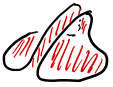 (which is homotopic to a circle) when we pass the first saddle point, then to a punctured torus (which is homotopic to a wedge of circles) when we pass the second saddle point, and then finally the puncture is filled in when we pass the maximum. Something analogous happens in general.
Example 1.3.8
Consider the function \(f(x,y,z) = z^2\) on the sphere (see Figure 1.7). Again, I’ve shown critical values in red and orange and a regular value in green, and the corresponding level sets on the domain, as well as some tangent vectors to regular points and their images under the differential.
Some new features:
-
The critical points aren’t all isolated: the entire equator consists of critical points (which are all global minima).
-
The inverse images of critical values aren’t necessarily connected: the north and south poles both map to 1.
Notice again that the level sets of regular values are (collections of) smooth curves. In this case one critical level set is also a smooth curve, and the other is not a curve at all.
(This is not a Morse function because not all critical points are isolated, but it is a Morse–Bott function, which is almost as good.)
After looking at these examples, hopefully the following theorem suggests itself:
Theorem 1.3.9 (Level Set Theorem)
If \(m \geq n\), \(f \colon \thinspace \! M^m \to N^n\) is smooth, and \(q \in N\) is a regular value of \(f\), then \(f^{-1}(q)\) is a smooth submanifold of \(M\) of dimension \(m-n\).
This theorem is basically an application of the Inverse Function Theorem, but before we work on proving it, let’s look at some more examples.
Example 1.3.10
Define \(f \colon \thinspace \! \mathbb {R}^n \to \mathbb {R}\) by \(f(x_1,\dots , x_n) = x_1^2 + \dots + x_n^2\). Then
\[ df_{(x_1, \dots , x_n)}= \begin{bmatrix} \frac{\partial f}{\partial x_1} & \cdots & \frac{\partial f}{\partial x_n} \end{bmatrix} = \begin{bmatrix} 2x_1 & \cdots & 2x_n \end{bmatrix} \]only fails to be full rank at the origin, so 0 is the only critical value, and for all \(r {\gt} 0\) the level set \(f^{-1}(r)\) is a smooth manifold of dimension \(n-1\). But \(f^{-1}(r)\) is nothing but the sphere of radius \(\sqrt{r}\), so we’ve just given an alternative (and somehow conceptually prior) proof that spheres are manifolds.
Example 1.3.11 (Relevant to frame theory)
Let \(\operatorname {Mat}_{d \times N}(\mathbb {C})\) be the space of \(d \times N\) complex matrices. This is trivially a \(2dN\)-dimensional manifold, since \(\operatorname {Mat}_{d \times N} (\mathbb {C}) \cong \mathbb {C}^{dN}\), which is just a copy of \(\mathbb {R}^{2dN}\) if you ignore the complex structure. Now, let \(\mathcal{H}(d)\) be the space of \(d \times d\) Hermitian matrices (i.e., \(d \times d\) complex matrices \(A\) so that \(A^\ast = A\), where \(A^\ast \) is the conjugate transpose of \(A\)) and define the map \(\Phi \colon \thinspace \! \operatorname {Mat}_{d \times N}(\mathbb {C}) \to \mathcal{H}(d)\) by
\[ \Phi (A) = A A^\ast . \](In frame theory, we would think of \(A \in \operatorname {Mat}_{d \times N}(\mathbb {C})\) as a frame and \(A A^\ast \) as the corresponding frame operator.)
I claim that the identity matrix \(I_{d \times d} \in \mathcal{H}(d)\) is a regular value of \(\Phi \) (Exercise: Prove this); assuming this, the theorem tells us that \(\Phi ^{-1}(I_{d \times d})\) is a smooth manifold of dimension
\[ 2dN - d^2 = d(2N-d). \](Notice that \(A \in \Phi ^{-1}(I_{d \times d})\) means that the rows of \(A\) are Hermitian orthonormal. Since each row is a vector in \(\mathbb {C}^N\), this means that we can think of \(\Phi ^{-1}(I_{d \times d})\) as the space of all [ordered] \(d\)-tuples of Hermitian orthonormal vectors in \(\mathbb {C}^N\). This space is an example of a Stiefel manifold, and usually denoted \(\operatorname {St}_d(\mathbb {C}^N)\) or \(V_d(\mathbb {C}^N)\). In frame theory, \(\Phi ^{-1}(I_{d \times d})\) is precisely the space of Parseval frames.)
Example 1.3.12
Let \(N=d\) in the previous example. Then \(\Phi ^{-1}(I_{d \times d})\) is a smooth manifold of dimension \(d^2\) that consists of those \(d \times d\) complex matrices \(A\) so that \(AA^\ast = I_{d \times d}\). But this is precisely the unitary group \(\operatorname {U}(d)\)! So we’ve proved that \(\operatorname {U}(d)\) is a \(d^2\)-dimensional manifold for any \(d\).
Remark 1.3.13
You can play the same game over \(\mathbb {R}\) to show that real Stiefel manifolds and the orthogonal group \(\operatorname {O}(d)\) are manifolds.
1.4 Immersions and Embeddings
Let’s work up to proving Theorem 1.3.9, including defining some more terminology.
Definition 1.4.1
Suppose \(f \colon \thinspace \! M \to N\) is smooth. Then \(f\) is an immersion if \(df_p\) is injective for all \(p \in M\) (note that this implies \(\dim (M) \leq \dim (N)\)).
If \(f\) is also a homeomorphism onto its image (continuous bijection with continuous inverse), then \(f\) is an embedding. The image of an embedding is a submanifold.
If \(f\) is bijective and \(f^{-1}\) is smooth, then \(f\) is a diffeomorphism. \(f\) is called a local diffeomorphism at \(p \in M\) if there exist neighborhoods \(U\) of \(p\) and \(V\) of \(f(p)\) so that \(f \colon \thinspace \! U \to V\) is a diffeomorphism.
Finally, we say that \(f\) is a submersion if \(df_p\) is surjective for all \(p \in M\).
Example 1.4.2
Define \(\alpha \colon \thinspace \! \mathbb {R}\to \mathbb {R}^2\) by \(\alpha (t) = (t^3, t^2)\) (see Figure 1.8).
![\includegraphics[height=1.5in]{cusp}](images/img-0009.svg)
This is not an immersion because \(d\alpha _0 = \begin{bmatrix} \alpha _1'(0) \\ \alpha _2'(0) \end{bmatrix} = \begin{bmatrix} 0 \\ 0 \end{bmatrix}\) has rank 0. Intuitively, the problem is that the velocity is zero when \(t=0\), even though the map overall is continuous and injective.
Example 1.4.3
Define \(\beta \colon \thinspace \! \mathbb {R}\to \mathbb {R}^2\) by \(\beta (t) = (t^3 - 4t, t^2 - 4)\), which is a deformation of the previous example (see Figure 1.9).
![\includegraphics[height=1.5in]{conic}](images/img-0010.svg)
Now the differential is given by
\[ d\beta _t = \begin{bmatrix} 3t^2 - 4 \\ 2t \end{bmatrix}, \]which is never the zero matrix since the second entry being 0 implies \(t=0\), and hence that the first entry is \(-4\). Hence, \(d\beta _t\) is always rank 1, and hence always injective, so \(\beta \) is an immersion.
However, \(\beta \) is not an embedding because it is not injective: \(\beta (-2) = (0,0) = \beta (2)\), so there is a double point at the origin.
Example 1.4.4
Suppose \((U,\phi )\) is a local coordinate chart on a manifold \(M\) containing a point \(p \in M\). Then \(\phi \colon \thinspace \! U \subset \mathbb {R}^n \to M\) is a local diffeomorphism at \(\phi ^{-1}(p) \in U\). This just follows from the definition of a coordinate chart (Definition 1.1.1): \(\phi \) maps \(U\) bijectively onto \(\phi (U)\), which is an open neighborhood of \(p\), and both \(\phi \) and \(\phi ^{-1}\) are smooth. (To be really pedantic, \((U, \operatorname {id})\) gives a global coordinate chart for the \(n\)-manifold \(U\), and then, following Definition 1.1.6, \(\phi \colon \thinspace \! U \to \phi (U)\) is smooth because \(\phi ^{-1} \circ \phi \circ \operatorname {id} = \operatorname {id}\) is smooth everywhere on \(U\). Similarly, \(\phi ^{-1} \colon \thinspace \! \phi (U) \to U\) is smooth because \(\operatorname {id} \circ \phi ^{-1} \circ \phi = \operatorname {id}\) is smooth everywhere on \(U\).)
If \(f \colon \thinspace \! M \to N\) is a local diffeomorphism at \(p \in M\), then \(df_p \colon \thinspace \! T_pM \to T_{f(p)}N\) is a linear isomorphism (i.e., invertible linear map). Perhaps somewhat surprisingly, the converse is also true. This is the appropriate generalization of the Inverse Function Theorem to the manifold setting, and the proof essentially involves applying the Inverse Function Theorem in local coordinates:
Proposition 1.4.5
Suppose \(f \colon \thinspace \! M \to N\) is smooth. If \(p \in M\) and \(df_p \colon \thinspace \! T_p M \to T_{f(p)}N\) is an isomorphism, then \(f\) is a local diffeomorphism at \(p\).
Proof.
Notice that, by the Chain Rule,
\[ d(\psi ^{-1} \circ f \circ \phi )_{\phi ^{-1}(p)} = d\psi ^{-1}_{f(p)} \circ df_p \circ d\phi _{\phi ^{-1}(p)}. \]But then we already know that \(d\phi \) and \(d\psi ^{-1}\) are isomorphisms (since coordinate charts are local diffeomorphisms [Example 1.4.4]), so \(df_p\) being an isomorphism implies that \(d(\psi ^{-1} \circ f \circ \phi )_{\phi ^{-1}(p)}\) is also an isomorphism.
But then the Inverse Function Theorem implies \(\psi ^{-1} \circ f \circ \phi \) is a local diffeomorphism at \(\phi ^{-1}(p)\). Since \(\psi \) and \(\phi ^{-1}\) are local diffeomorphisms (again, Example 1.4.4) and compositions of local diffeomorphisms are local diffeomorphisms, it follows that
\[ \psi \circ (\psi ^{-1} \circ f \circ \phi ) \circ \phi ^{-1} = (\psi \circ \psi ^{-1}) \circ f \circ (\phi \circ \phi ^{-1}) = f \]is also a local diffeomorphism.
Here’s a statement of the Inverse Function Theorem in the language of differentials and local diffeomorphisms. It is equivalent to the usual statement you would see in a multivariable calculus or analysis course.
Exercise 1.4.6
Convince yourself of the previous sentence.
Theorem 1.4.7 (Inverse Function Theorem)
If \(F \colon \thinspace \! U \subseteq \mathbb {R}^n \to \mathbb {R}^n\) is given by \((x_1, \dots , x_n) \mapsto (y_1, \dots , y_n)\), then \(dF_p = \begin{bmatrix} \left.\frac{\partial y_i}{\partial x_j}\right|_p \end{bmatrix}_{i,j}\) being nonsingular at \(p \in U\) implies that \(F\) is a local diffeomorphism at \(p\).
We’re now ready to prove the Level Set Theorem (Theorem 1.3.9):
Proof.
Suppose \((U,\phi )\) is a coordinate chart centered at \(p \in f^{-1}(q)\) 5 and \((V, \psi )\) is a chart at \(q\). See Figure 1.10. Then define the map
\[ g := \psi ^{-1} \circ f \circ \phi : U \to \mathbb {R}^n. \]By assumption,
\[ dg_{\vec{0}} = d(\psi ^{-1} \circ f \circ \phi )_{\vec{0}} = (d \psi ^{-1})_{f(p)} \circ df_p \circ d\phi _{\vec{0}} \]is surjective since \(df_p\) is and the other two terms are isomorphisms.
![\includegraphics[height=2.5in]{level-set-theorem}](images/img-0011.svg)
Hence, after a linear change of coordinates \(dg_{\vec{0}}\) can be written as the \(n \times m\) block matrix \(\begin{bmatrix} I_{n \times n} & 0_{n \times (m-n)} \end{bmatrix}\). Define
\[ G(x_1, \dots , x_m) = (g(x_1, \dots , x_n), x_{n+1}, \dots , x_m), \]which has differential \(dG_{\vec{0}} = I_{m \times m}\) in these coordinates. By the Inverse Function Theorem, \(G\) is a local diffeomorphism at \(\vec{0}\) and by construction \(g \circ G^{-1}\) is the standard projection onto the first \(n\) coordinates.
So in these coordinates \(f^{-1}(q) \cap \phi (U) = \phi (0, \dots , 0, x_{n+1}, \dots , x_m)\), so \(x_{n+1} , \dots , x_m\) give local coordinates near \(p\) for \(f^{-1}(q)\). We can do the same at any other point of \(f^{-1}(q)\), so this gives a system of coordinate charts on \(f^{-1}(q)\), and the transition maps on overlapping charts are smooth because they are just restrictions (or projections, if you prefer) of the corresponding transition maps for the charts on \(M\).
1.5 Vector Fields
Now that we have defined tangent vectors and seen how to push them around with differentials, the next natural object to try to define is a vector field. In physical problems, a vector field might be the velocity field of a fluid flow, or an electrical or magnetic field. In both applied and pure problems, we are very often interested in vector fields that arise as the gradients of functions, whether they be Morse functions on an abstract manifold or the energy of conformations in some conformation space. In symplectic geometry we are very interested in Hamiltonian vector fields associated to functions, which are a sort of symplectic gradient. Whereas the gradient is perpendicular to level sets of the function, Hamiltonian vector fields are parallel to level sets, so the function is constant on orbits, which is desirable when the function is an energy function.
So what is a vector field? Intuitively, it’s just what you would expect: a choice of tangent vector at each point in the manifold. As with everything in this class, we’re mostly interested in smooth vector fields, meaning that the tangent vector should in some sense vary smoothly as you move around the manifold.
The preceding sentence hopefully makes sense on an intuitive level, but you should stop and think about how you might try to make it into a rigorous definition. Unless you’ve already seen the forthcoming definition before, it’s probably not so easy.
The problem is that, as alluded to previously, different tangent spaces are not directly comparable. How do you compare \(v_1 \in T_{p_1}M\) with \(v_2 \in T_{p_2}M\) and, ideally, put them into some difference quotient?
Since we know how to compare tangent spaces in Euclidean space (by parallel translating), one strategy is to work in local coordinates and require the tangent vectors to form a smooth vector field in each local coordinate chart. But this rather unwieldy, and in any case we want to state definitions without reference to local coordinates if at all possible. Hence the following definition, which encapsulates exactly the idea above in a very concise (though admittedly kind of abstract and hard to visualize) way:
Definition 1.5.1
A vector field \(X\) on a smooth manifold \(M\) is a smooth section of the tangent bundle \(TM\).
This requires some unpacking, especially since there’s at least one term in this definition which has not been defined yet.
First, recall (Theorem 1.2.5) that \(TM\) is a smooth manifold, so it makes sense to talk about smoothness of a map \(X\colon \thinspace \! M \to TM\). So the first part of Definition 1.5.1 is that a vector field is such a smooth map.
This makes sense: such a map takes as input a point in the manifold and outputs a tangent vector. But it would be nonsensical to output a tangent vector at \(q\) if the input is \(p\): the word “section” is how we rule this out.
More precisely, recall that we have a natural projection map \(\pi \colon \thinspace \! TM \to M\) which maps \(v \in T_p M\) to the base point \(p\). In general, if \(E \stackrel{\pi }{\to }B\) is a vector bundle, then a section of the bundle is a map \(\sigma \colon \thinspace \! B \to E\) so that \(\pi \circ \sigma = \operatorname {id}_B\), the identity map on \(B\) (in algebraic terms, \(\sigma \) is a right inverse of the projection \(\pi \)).
So when we say that \(X\) is a smooth section of the tangent bundle, we mean that \(X \colon \thinspace \! M \to TM\) is a smooth map satisfying \(\pi \circ X = \operatorname {id}_M\). In other words, that \(X\) assigns each point in \(M\) a tangent vector at that point in a smoothly-varying way. Which is exactly what a (smooth) vector field should be!
Notation
We use the notation \(\mathfrak {X}(M)\) to denote the \(C^{\infty }(M)\)-module of vector spaces on \(M\).
Remark 1.5.2
-
If \(\phi \colon \thinspace \! U \subseteq \mathbb {R}^n \to M\) is a local coordinate chart at \(p \in M\), then
\[ X(p) = \sum _{i=1}^n a_i(p) \frac{\partial }{\partial x_i}, \]where each \(a_i \colon \thinspace \! U \to \mathbb {R}\) is smooth and \(\left\{ \frac{\partial }{\partial x_i}\right\} _i\) is the local coordinate basis of \(T_pM\) associated to \((U,\phi )\). Notice that this is exactly the local coordinate definition of a smooth vector field informally formulated above.
-
Since each individual tangent vector is really a directional derivative at a point, a vector field can be interpreted as a differential operator on \(M\): it will input a smooth function and output some new smooth function which records the directional derivative at each point in the direction specified by the tangent vector at that point. In other words, we can also interpret a vector field \(X\) on a manifold \(M\) as a map \(C^\infty (M) \to C^\infty (M)\) given by \(f \mapsto Xf\). In local coordinates, the function \(Xf\) is given by
\[ (Xf)(p) = \sum _{i=1}^n a_i(p) \left.\frac{\partial f}{\partial x_i}\right|_p, \]which is indeed a smooth function.
Example 1.5.3
Consider the unitary group \(\operatorname {U}(d)\) and let \(I = I_{d \times d}\) be the identity matrix. I claim that a choice of tangent vector at the identity actually determines a vector field on all of \(\operatorname {U}(d)\).
To see this, recall that an element of \(T_I \operatorname {U}(d)\) is a tangent vector, which is to say, the velocity of a smooth curve \(\alpha \colon \thinspace \! (-\epsilon , \epsilon ) \to \operatorname {U}(d)\) with \(\alpha (0) = I\). If we think of \(\operatorname {U}(d)\) as living inside \(\operatorname {Mat}_{d \times d}(\mathbb {C}) \cong \mathbb {C}^{d^2} \cong \mathbb {R}^{2d^2}\), then we can think of any tangent vector \(\alpha '(0)\) as a \(d \times d\) complex matrix. What restrictions does being tangent to \(\operatorname {U}(d)\) place on this matrix?
Notice that, for all \(t\), \(\alpha (t) \in \operatorname {U}(d)\), which by definition means that \(\alpha (t) \alpha (t)^\ast = I\). Since this is the defining equation of \(\operatorname {U}(d)\), differentiating at \(t=0\) should give precisely the condition for being in \(T_I\operatorname {U}(d)\):
\[ 0 = \left.\frac{d}{dt}\right|_{t=0} I = \left. \frac{d}{dt}\right|_{t=0} \left(\alpha (t) \alpha (t)^\ast \right) = \alpha '(0) \alpha (0)^\ast + \alpha (0) \alpha '(0)^\ast = \alpha '(0) + \alpha '(0)^\ast \]since \(\alpha (0) = I = \alpha (0)^\ast \) (note that we’re also using \((\alpha (t)^\ast )' = \alpha '(t)^\ast \), which is obvious if you choose a basis and write \(\alpha (t)\) as a matrix, but kind of annoying to prove in a coordinate-free way).
So we see that \(\alpha '(0)^\ast = -\alpha '(0)\). In other words, elements of \(T_I \operatorname {U}(d)\) are precisely the skew-Hermitian matrices.
Next, how do we get from a tangent vector at \(I\) to a vector field on all of \(\operatorname {U}(d)\)? Well, we know how to push vector fields around by differentials of maps, so if we had a map \(\operatorname {U}(d) \to \operatorname {U}(d)\) sending \(I\) to a specified element \(U \in \operatorname {U}(d)\), then its differential would send \(\Delta \in T_I \operatorname {U}(d)\) to something in \(T_U \operatorname {U}(d)\). Of course, there’s an obvious map sending \(I\) to \(U\): the map which left-multiplies elements of \(\operatorname {U}(d)\) by \(U\).
In symbols, for \(U \in \operatorname {U}(d)\), define the map \(L_U \colon \thinspace \! \operatorname {U}(d) \to \operatorname {U}(d)\) to be left-multiplication by \(U\), namely \(L_U(A) := UA\). Then certainly
\[ (d L_U)_I \colon \thinspace \! T_I \operatorname {U}(d) \to T_U \operatorname {U}(d) \]and so, for any \(\Delta \in T_I \operatorname {U}(d)\), we get a vector field \(X_\Delta \in \mathfrak {X}(\operatorname {U}(d))\) on \(\operatorname {U}(d)\) defined by
\[ X_\Delta (U) := (d L_U)_I \Delta . \]We can make this more explicit by finding a formula for \((d L_U)_I\):
Lemma 1.5.4
If \(U \in \operatorname {U}(d)\) and \(\Delta \in T_I \operatorname {U}(d)\), then
\[ (d L_U)_I \Delta = U \Delta . \]
Exercise 1.5.5
Prove Lemma 1.5.4. The key observation here is that matrix multiplication is linear.
Since \((d L_U)_I \colon \thinspace \! T_I \operatorname {U}(d) \to T_U \operatorname {U}(d)\) is full rank, it’s surjective, so \(T_U \operatorname {U}(d)\) consists of matrices of the form \(U \Delta \) where \(\Delta \) is skew-Hermitian.
And now it’s clear that, for any \(\Delta \in T_I \operatorname {U}(d)\), we get the vector field \(X_\Delta \) defined by
\[ X_\Delta (U) = U\Delta \in T_U \operatorname {U}(d). \]This is what’s called a left-invariant vector field on \(\operatorname {U}(d)\), since it is invariant under the action of \(\operatorname {U}(d)\) on itself by left-multiplication:
\[ (d L_U)_V X_\Delta (V) = X_\Delta (UV). \]
Exercise 1.5.6
Check this.
In fact, one can show that all left-invariant vector fields are of this form, so there is an identification between the collection of left-invariant vector fields on \(\operatorname {U}(d)\) and \(T_I \operatorname {U}(d)\).
Remark 1.5.7
-
There was nothing special about \(\operatorname {U}(d)\) in Example 1.5.3: we could have used any group \(G\) which was a manifold (such groups are called Lie groups; more on them later!) and gotten the same correspondence between the tangent space at the identity and left-invariant vector fields. This is important because these are the two standard ways differential geometers think about Lie algebras, and this construction shows that they are equivalent.
-
More generally, the fact that \(T_U \operatorname {U}(d)\) consists of matrices of the form \(U \Delta \) where \(\Delta \) is skew-Hermitian means that every vector field \(X \in \mathfrak {X}(\operatorname {U}(d))\) can be written as
\[ X(U) = U \Delta _U, \]where the skew-Hermitian matrix \(\Delta _U\) depends on \(U\). So then a vector field on \(\operatorname {U}(d)\) induces a mapping \(\operatorname {U}(d) \to T_I \operatorname {U}(d)\) given by \(U \mapsto \Delta _U\).
1.5.1 The matrix exponential
This is not directly related to vector fields, but another reason to be interested in \(T_I \operatorname {U}(d)\) (or, more generally, the tangent space at the identity of any Lie group) is that it provides local coordinates on almost all of \(\operatorname {U}(d)\) by way of the matrix exponential.
First of all, if \(\Delta \in T_I \operatorname {U}(d)\) (i.e., \(\Delta \) is skew-Hermitian), then I claim that \(\exp (\Delta ) \in \operatorname {U}(d)\), where \(\exp \) is the matrix exponential defined by the power series
\[ \exp (\Delta ) = I + \Delta + \frac{1}{2!} \Delta ^2 + \frac{1}{3!}\Delta ^3 + \dots . \]In other words, the claim is that \(\exp \colon \thinspace \! T_I\operatorname {U}(d) \to \operatorname {U}(d)\).
To see that \(\exp (\Delta ) \in \operatorname {U}(d)\), we need to show that \(\exp (\Delta )\exp (\Delta )^\ast = I\), or equivalently \({\exp (\Delta )^\ast = \exp (\Delta )^{-1}}\). Now
and by expanding the product of power series one can show that
\[ \exp (\Delta )\exp (\Delta )^\ast = \exp (\Delta )\exp (-\Delta ) = \exp (\Delta - \Delta ) = I. \](It is absolutely essential in the argument for \(\exp (\Delta )\exp (-\Delta ) = \exp (\Delta - \Delta )\) that \(\Delta \) and \(-\Delta \) commute. When \(A\) and \(B\) are matrices with \(AB \neq BA\), it is not necessarily true that \(\exp (A)\exp (B) = \exp (A+B)\); see the Baker–Campbell–Hausdorff formula in general [ 14 , Chapter 5 ] .)
Claim
\(\exp \colon \thinspace \! T_I \operatorname {U}(d) \to \operatorname {U}(d)\) is surjective.
Proof.
where
(Note that the set of all such \(\Theta \) forms a torus; this turns out to be a maximal torus inside \(\operatorname {U}(d)\)).
But then \(H = V \operatorname {diag}(i\theta _1, \dots , i \theta _d)V^\ast \) is skew-Hermitian, and hence in \(T_I\operatorname {U}(d)\), and I claim that
\[ U = \exp (H). \]This follows from the more general fact about exponentiating matrix conjugates stated below in Lemma 1.5.8.
Just to verify, let’s check this on a random example. Here’s a random element of \(\operatorname {U}(3)\) (generated in Mathematica with RandomVariate[CircularUnitaryMatrixDistribution[3]]):
\[ U = \begin{bmatrix} -0.392089+0.77069 i & -0.175305-0.0691595 i & 0.460085\, -0.0714797 i \\ -0.359804+0.151554 i & 0.618136\, +0.524479 i & -0.295949-0.32065 i \\ 0.103894\, +0.298465 i & -0.226492+0.505981 i & -0.312325+0.703749 i \end{bmatrix}. \]Computing the spectral decomposition yields
\[ V = \begin{bmatrix} -0.452698+0.477605 i & 0.724632\, +0. i & -0.203482+0.021487 i \\ 0.0746037\, +0.313061 i & 0.0936111\, +0.271501 i & 0.902192\, +0. i \\ 0.680724\, +0. i & 0.346776\, +0.521707 i & -0.249272+0.286437 i \end{bmatrix} \]and
\[ \Theta = \begin{bmatrix} e^{2.58364 i} & 0 & 0 \\ 0 & e^{1.68825 i} & 0 \\ 0 & 0 & e^{0.496512 i} \end{bmatrix}. \]Therefore,
\[ H = \begin{bmatrix} 2.0261 i & -0.135698+0.322419 i & -0.228031-0.343709 i \\ 0.135698\, +0.322419 i & 0.810972 i & -0.498786+0.313484 i \\ 0.228031\, -0.343709 i & 0.498786\, +0.313484 i & 1.93134 i \end{bmatrix}, \]and a calculation shows that \(\exp (H) = U\), as desired.
Lemma 1.5.8
Suppose \(A,B \in \operatorname {Mat}_{d \times d}(\mathbb {C})\). Then
\[ \exp (ABA^{-1}) = A \exp (B) A^{-1}. \]
Proof.
To recap, we have a surjective map \(\exp \colon \thinspace \! T_I \operatorname {U}(d) \to \operatorname {U}(d)\). Moreover, the non-injectivity of \(\exp \) is due to the periodicity of the complex exponential: \(e^{i \theta } = e^{i(\theta + 2\pi )}\). So \(\exp \) maps the neighborhood of the origin in \(T_I \operatorname {U}(d)\) consisting of skew-Hermitian matrices with spectral norm \({\lt} \pi \) bijectively onto the neighborhood of \(I\) in \(\operatorname {U}(d)\) consisting of unitary matrices whose eigenvalues all have argument strictly between \(-\pi \) and \(\pi \); in other words, this only excludes those unitary matrices with \(i\) as an eigenvalue, which is some positive codimension subset of \(\operatorname {U}(d)\). So then \(\exp \) provides a local coordinate chart in the complement of this subset.
1.6 The Lie Bracket on Vector Fields
As we’ve defined it, \(\mathfrak {X}(M)\) is a \(C^\infty (M)\)-module: 6 we can certainly add two vector fields or multiply a vector field by a smooth function and get a new vector field.
In fact, there is even more algebraic structure on \(\mathfrak {X}(M)\): it is something called a Lie algebra, which means it is a (real) vector space which admits a binary operation (called a Lie bracket) satisfying certain axioms. 7
In order to define the Lie bracket of vector fields, it is instructive to think about how we could possibly define a binary operation on vector fields. For example, we could try to generalize binary operations on vector fields we already know in certain special cases. For example:
-
Since \(T\mathbb {R}\cong \mathbb {R}\times \mathbb {R}\), we can interpret a vector field on \(\mathbb {R}\) as a real-valued function by just recording the second entry: \(X(p) = (p,v)\), and the corresponding function is \(p \mapsto v\). Since functions form an algebra by pointwise multiplication, this defines a binary operation on vector fields on \(\mathbb {R}\).
-
More generally, every smooth 1-manifold has a trivial tangent bundle, so we can treat any vector field on any 1-manifold as a smooth, real-valued function and get an algebra structure on vector fields. 8
-
Since \(T \mathbb {R}^2 \cong \mathbb {R}^2 \times \mathbb {R}^2\) and since we can define an equivalence \(\mathbb {R}^2 \leftrightarrow \mathbb {C}\) by \((x,y) \leftrightarrow x + iy\), we can interpret a vector field on \(\mathbb {R}^2\) (or, more generally, any surface with trivial tangent bundle) as a complex-valued function. Again, functions form an algebra by pointwise multiplication, so this defines a binary operation on vector fields on \(\mathbb {R}^2\). 9
-
Since \(T\mathbb {R}^3 \cong \mathbb {R}^3 \times \mathbb {R}^3\), we can interpret a vector field on \(\mathbb {R}^3\) as a vector-valued function on \(\mathbb {R}^3\). Then the (pointwise) cross product \(\times \) gives a binary operation on vector fields on \(\mathbb {R}^3\).
-
Since \(T\mathbb {R}^4 \cong \mathbb {R}^4 \times \mathbb {R}^4\) and since we can define an equivalence \(\mathbb {R}^4 \leftrightarrow \mathbb {H}\) between \(\mathbb {R}^4\) and the quaternions by \((t,x,y,z) \leftrightarrow t +i x + j y + kz\), we can interpret vector fields on \(\mathbb {R}^4\) as quaternion-valued functions. Again, functions form an algebra by pointwise multiplication, so this defines a binary operation on vector fields on \(\mathbb {R}^4\).
This is in some sense a generalization of the cross product on \(\mathbb {R}^3\): if we represent \((x,y,z),(u,v,w) \in \mathbb {R}^3\) by purely imaginary quaternions \(p = ix + jy + kz\) and \(q = iu + jv + kw\), then the quaternion product
\[ pq = -p \cdot q + p \times q, \]where \(p \cdot q\) is the dot product of the two vectors in \(\mathbb {R}^3\), and \(p \times q\) is the cross product (interpreted as a purerly imaginary quaternion). 10
So the natural question is: can we generalize these examples to higher-dimensional Euclidean spaces, and more generally to arbitrary manifolds?
Unfortunately, the answer is basically “no.” As you might have heard, there are no normed division rings over \(\mathbb {R}\) besides \(\mathbb {R}\), \(\mathbb {C}\), and \(\mathbb {H}\), and there aren’t even normed division algebras (where we allow multiplication to be non-associative) aside from these examples and the octonions \(\mathbb {O}\), which are 8-dimensional.
Moreover, even if there were more normed division algebras, the operations above depended very strongly on the triviality of the tangent bundle, which is not going to work in more general manifolds.
So here’s a different approach: recall that we can interpret vector fields on \(M\) as operators on \(C^\infty (M)\). That is, for \(f \in C^\infty (M)\), \(Xf \in C^\infty (M)\) as well; this is basically the function recording the directional derivative of \(f\) in the direction of \(X\) at each point on the manifold.
An obvious thing to guess is that, if \(X,Y \in \mathfrak {X}(M)\), then the composition \(X \circ Y = XY\) is also a vector field. After all, \((XY)f = X(Yf)\) will be a smooth function, so \(XY\) is also an operator on \(C^\infty (M)\).
Let’s work in local coordinates at a point \(p \in M\) to see what this operator looks like when applied to a function \(f\) which is differentiable at \(p\).
We know that, in terms of the local coordinate basis \(\left\{ \frac{\partial }{\partial x_1},\dots , \frac{\partial }{\partial x_n}\right\} \), we can write
\[ X(p) = \sum _{i=1}^n a_i(p) \frac{\partial }{\partial x_i} \quad \text{and} \quad Y(p) = \sum _{i=1}^n b_i(p) \frac{\partial }{\partial x_i}, \]where the \(a_i\) and \(b_i\) are smooth functions defined in some neighborhood of \(p\). So then
\[ (XY)f = X(Yf) = X\left(\sum _{i=1}^n b_i \frac{\partial f}{\partial x_i}\right) = \sum _{i,j=1}^n a_j \frac{\partial }{\partial x_j} \left( b_i \frac{\partial f}{\partial x_i}\right) = \sum _{i,j=1}^n a_j \left( \frac{\partial b_i}{\partial x_j}\frac{\partial f}{\partial x_i} + b_i \frac{\partial ^2 f}{\partial x_j \partial x_i}\right). \]This should give you pause because it is no longer a first-order differential operator. Let’s make this more obvious by rewriting as
so the stuff inside the brackets (which is \(XY\)) is a differential operator on \(C^\infty (M)\), but it’s not a vector field; for example, it cannot be written in terms of the local coordinate basis \(\left\{ \frac{\partial }{\partial x_1}, \dots , \frac{\partial }{\partial x_n}\right\} \).
Example 1.6.1
If \(X = \frac{\partial }{\partial x}\) and \(Y = \frac{\partial }{\partial y}\) are the standard coordinate vector fields on \(\mathbb {R}^2\), then (1.1) reduces to
\[ (XY)f = \frac{\partial ^2 f}{\partial x \partial y}, \]as you would expect from computing
\[ X(Yf) = \frac{\partial }{\partial x} \left( \frac{\partial f}{\partial y}\right) = \frac{\partial ^2 f}{\partial x \partial y}. \]So \(XY = \frac{\partial ^2}{\partial x \partial y}\). But there’s no sensible way to interpret this second-order operator as a vector field.
Example 1.6.2
If \(X = r \frac{\partial }{\partial r}\) and \(Y = r \frac{\partial }{\partial \theta }\) are the (scaled) radial and rotational fields, then
\[ (XY)f = X(Yf) = r \frac{\partial }{\partial r} \left( r \frac{\partial }{\partial \theta }f \right) = r \frac{\partial f}{\partial \theta } + r^2 \frac{\partial f}{\partial r \partial \theta }, \]so
\[ XY = r \frac{\partial }{\partial \theta } + r^2 \frac{\partial }{\partial r \partial \theta }. \]Again, a second-order operator appears.
The problem with (1.1) is the second term, which is a second-order operator. Now notice that if we had done this in the reverse order we would have gotten
This doesn’t just have the same type of problem as before, it has literally the same problem: because mixed partials commute, the second terms in (1.1) and (1.2) agree. So, by subtracting, we can cancel them and get
which is written in terms of the \(\left\{ \frac{\partial }{\partial x_1}, \dots , \frac{\partial }{\partial x_n}\right\} \) basis. So this really is a vector field.
Definition 1.6.3
If \(X,Y \in \mathfrak {X}(M)\), the Lie bracket of \(X\) and \(Y\) is a vector field \([X,Y]\) defined by
\[ [X,Y]f := X(Yf)-Y(Xf). \]The key feature of this operation is that it satisfies the axioms of a Lie bracket (1–3 in Proposition 1.6.4), and hence makes \(\mathfrak {X}(M)\) into a Lie algebra.
Proposition 1.6.4
If \(X,Y,Z \in \mathfrak {X}(M)\) and \(a,b \in \mathbb {R}\), \(f, g \in C^\infty (M)\), then
-
\([X,Y]=-[Y,X]\) (anti-commutativity)
-
\([aX+bY,Z]=a[X,Z]+b[Y,Z]\) (linearity)
-
\([[X,Y],Z]+[[Y,Z],X]+[[Z,X],Y]=0\) (Jacobi identity)
-
\([fX,gY]=fg[X,Y]+f(Xg)Y-g(Yf)X\).
Proof.
Example 1.6.5
Continuing with Example 1.6.2, we already computed \(XY\), so we can also compute
\[ YX = r \frac{\partial }{\partial \theta } \left( r \frac{\partial }{\partial r}\right) = r^2 \frac{\partial ^2}{\partial \theta \partial r}, \]and hence
\[ [X,Y] = r \frac{\partial }{\partial \theta }. \]
Example 1.6.6
Consider \(M = S^2\) and the vector fields \(X = \frac{\partial }{\partial \theta }\) and \(Y = \frac{\partial }{\partial z}\) where \((\theta ,z)\) are cylindrical coordinates on \(S^2\); see Figure 1.11.
In other words, we have the local coordinate chart \(\phi \colon \thinspace \! (0,2\pi ) \times (-1,1) \to S^2\) given by
\[ \phi (\theta ,z) = (\sqrt{1-z^2} \cos \theta , \sqrt{1-z^2} \sin \theta , z), \]and \(X\) and \(Y\) are the corresponding coordinate fields.
Notice that
\[ [X,Y]f = \frac{\partial ^2 f}{\partial \theta \partial z} - \frac{\partial ^2 f}{\partial z \partial \theta } = 0 \]since mixed partials commute.
More generally, whenever \(X = \frac{\partial }{\partial x_i}\) and \(Y = \frac{\partial }{\partial x_j}\) are coordinate fields in a neighborhood of a point in a manifold, \([X,Y] = 0\).
In Cartesian coordinates
\[ X = \sqrt{1-z^2}\left( - \sin \theta \frac{\partial }{\partial x} + \cos \theta \frac{\partial }{\partial y}\right) = \sqrt{1-z^2}\left( - y \frac{\partial }{\partial x} + x \frac{\partial }{\partial y}\right), \]and
\[ Y = -\frac{z \cos \theta }{\sqrt{1-z^2}}\frac{\partial }{\partial x} - \frac{z \sin \theta }{\sqrt{1-z^2}}\frac{\partial }{\partial y} + \frac{\partial }{\partial z} = -\frac{xz}{1-z^2}\frac{\partial }{\partial x} - \frac{yz}{1-z^2}\frac{\partial }{\partial y} + \frac{\partial }{\partial z}. \]So then some much more unpleasant calculations using (1.3) shows you that \([X,Y] = 0\) in these coordinates as well.
Now we look at some examples of Lie algebras not coming from vector fields.
Example 1.6.7
\(\mathbb {R}^3\) forms a Lie algebra with the bracket operation given by the cross product: for \(u,v \in \mathbb {R}^3\), define \([u,v] := u \times v\). Then it is straightforward to check that this bracket satisfies 1–3 above. Written in terms of cross products, 3 says
\[ 0 = (u \times v) \times w + (v \times w) \times u + (w \times u) \times v = (u \times v) \times w - u \times (v \times w) + v \times (u \times w), \]or equivalently,
\[ (u \times v) \times w = u \times (v \times w) - v \times (u \times w). \]In particular, this records the failure of associativity of the cross product.
More generally, the Jacobi identity records the failure of associativity of the Lie bracket:
\[ [[X,Y],Z] = [X,[Y,Z]] - [Y,[X,Z]]. \]
Example 1.6.8
Recall Example 1.5.3, in which we showed that left-invariant vector fields on \(\operatorname {U}(d)\) are of the form \(X(U) = U \Delta _X\), for \(\Delta _X \in T_I\operatorname {U}(d)\), which is the collection of skew-Hermitian \(d \times d\) matrices. In particular, \(X(I) = \Delta _X\).
As we will see in more detail later (Proposition 3.4.2), it will turn out that the Lie bracket on left-invariant vector fields on a matrix group like \(\operatorname {U}(d)\) just corresponds to the matrix commutator operation in the tangent space to the identity.
In this case, that means that, if \(X,Y \in \mathfrak {X}(U(d))\) are left-invariant, then \([X,Y]\) is also left-invariant and, for each \(U \in \operatorname {U}(d)\),
\[ [X,Y](U) = U(\Delta _X \Delta _Y - \Delta _Y \Delta _X), \]where the products inside parentheses are just matrix products between the skew-Hermitian matrices \(\Delta _X\) and \(\Delta _Y\); that is, the term in parentheses is just the usual matrix commutator.
Exercise 1.6.9
Check that the commutator of two skew-Hermitian matrices is skew-Hermitian.
This all tells you that the correspondence between left-invariant vector fields and elements of \(T_I\operatorname {U}(d)\) turns the Lie bracket of left-invariant vector fields into the matrix commutator in \(T_I \operatorname {U}(d)\). These are two different realizations of the same Lie algebra, usually called \(\mathfrak {u}(d)\).
Example 1.6.10
If we play the same game with \(\operatorname {SO}(d)\), it turns out that the tangent space to the identity consists of \(d \times d\) skew-symmetric matrices, and the Lie algebra on left-invariant vector fields on \(\operatorname {SO}(d)\) corresponds to the matrix commutator on skew-symmetric matrices; we’ll write the collection of skew-symmetric \(d \times d\) matrices as \(\mathfrak {so}(d)\).
Consider the case \(d = 3\). Then we can write elements of \(\mathfrak {so}(3)\) as
\[ \Delta = \begin{bmatrix} 0 & -z & y \\ z & 0 & -x \\ -y & x & 0 \end{bmatrix}. \](The reason for the funny ordering and sign choices will shortly become apparent.)
Now, \(\mathfrak {so}(3)\) is a 3-dimensional vector space, and we have a vector space isomorphism \(F\colon \thinspace \! \mathbb {R}^3 \to \mathfrak {so}(3)\) given by
Let \(\Delta _1,\Delta _2 \in \mathfrak {so}(3)\) with
\[ \Delta _i = \begin{bmatrix} 0 & -z_i & y_i \\ z_i & 0 & -x_i \\ -y_i & x_i & 0 \end{bmatrix}. \]Then
\[ [\Delta _1, \Delta _2] = \Delta _1 \Delta _2 - \Delta _2 \Delta _1 = \begin{bmatrix} 0 & x_2 y_1-x_1 y_2 & x_2 z_1-x_1 z_2 \\ x_1 y_2-x_2 y_1 & 0 & y_2 z_1-y_1 z_2 \\ x_1 z_2-x_2 z_1 & y_1 z_2-y_2 z_1 & 0 \end{bmatrix}. \]If you stare at this, you might recognize the entries as being the coordinates of the cross product of the corresponding vectors:
\[ \begin{bmatrix} x_1 \\ y_1 \\ z_1 \end{bmatrix} \times \begin{bmatrix} x_2 \\ y_2 \\ z_2 \end{bmatrix} = \begin{bmatrix} y_1 z_2-y_2 z_1 \\ x_2 z_1-x_1 z_2 \\ x_1 y_2-x_2 y_1 \end{bmatrix}. \]In other words, \(F(v_1 \times v_2) = [F(v_1), F(v_2)]\), so \(F\) is a Lie algebra homomorphism. Since it’s also a bijective linear map, it’s a Lie algebra isomorphism, so we’ve just proved that \((\mathbb {R}^3, \times ) \cong \mathfrak {so}(3)\) as Lie algebras.
Thus, the Lie bracket on vector fields on manifolds is some sort of vast generalization of the cross product on \(\mathbb {R}^3\). In this interpretation, \(\mathbb {R}^3 \cong \mathfrak {so}(3)\) is the collection of infinitesimal rotations of 3-space, where \(v \in \mathbb {R}^3\) corresponds to an infinitesimal rotation around the axis spanned by \(v\), and the correspondence between cross products and commutators reflects the fact that, for very small \(\epsilon {\gt} 0\) and unit vectors \(u\) and \(v\), the composition of an \(\epsilon \)-rotation around \(u\) with an \(\epsilon \)-rotation around \(v\) is, to first order, a rotation around \(u + v + \frac{\epsilon }{2} u \times v\); see the Baker–Campbell–Hausdorff formula [ 14 , Chapter 5 ] .
Exercise 1.6.11
Convince yourself that, for \(v \in \mathbb {R}^3\) a unit vector and \(F\) as defined in (1.4), \(\exp (F(\theta v))\) gives the one-parameter subgroup of rotations by angle \(\theta \) around the axis spanned by \(v\). (A full proof is kind of annoying to write down, but at least convince yourself this is true when \(v\) is a coordinate vector.)
1.7 Integral Curves and Lie Derivatives
To motivate the definition of the Lie bracket, I claimed that there was additional algebraic structure on \(\mathfrak {X}(M)\) in the form of a binary operation, and then (hopefully!) convinced you that there was really only one sensible way to define such an operation.
But it’s probably not at all obvious why one should have guessed that there was a binary operation on vector fields in the first place, and, though I don’t actually know the history, my guess is that this was not the original motivation for the Lie bracket.
In some sense the more basic notion is that of the Lie derivative, which is a sort of directional derivative of vector fields which, as we will see, actually generalizes to arbitrary tensor fields.
The idea is that, given two vector fields \(X\) and \(Y\) on a manifold \(M\), we might like to define a “directional derivative of \(Y\) in the direction of \(X\)” operator, which we will denote \(\mathcal{L}_XY\), where the \(\mathcal{L}\) is for “Lie derivative.” It will turn out that \(\mathcal{L}_XY = [X,Y]\), which might be surprising, but if you look back to the local coordinate expression (1.3) for \([X,Y]\), you’ll notice it involved differentiating the coefficients of \(Y\) with respect to \(X\) (and also \(X\) with respect to \(Y\), but we’ll shortly see why there’s this symmetry).
It’s worth thinking for yourself about how you might go about defining such a derivative operator, so I would encourage you to do so before reading on.
Here’s a way of making this “directional derivative for vector fields” operation more precise: say we have our vector fields \(X\) and \(Y\) and we want to compute \(\mathcal{L}_XY\) at a point \(p \in M\). Presumably the idea is to measure how much \(Y\) is changing as we vary \(p\) in the direction of \(X\).
In other words, we want to integrate \(X\) to get a curve \(\alpha : (-\epsilon , \epsilon ) \to M\) so that \(\alpha (0) = p\) and \(\alpha '(t) = X(\alpha (t))\) for all \(t \in (-\epsilon , \epsilon )\), then look at something like
\[ \lim _{t\to 0} \frac{Y(\alpha (t))-Y(\alpha (0))}{t}. \]See Figure 1.12.
![\includegraphics[height=1.5in]{lie-derivative}](images/img-0012.svg)
In other words, we look at the rate of change of \(Y\) as we flow in the direction of \(X\). Unfortunately, as written the above difference quotient doesn’t make sense, but first let’s talk about flows and integrating vector fields.
Definition 1.7.1
Let \(X \in \mathfrak {X}(M)\). A curve \(\alpha \colon \thinspace \! (a,b) \to M\) is called an integral curve (or trajectory) for \(X\) if \(\alpha '(t) = X(\alpha (t))\) for all \(t \in (a,b)\).
Proposition 1.7.2
Let \(X \in \mathfrak {X}(M)\) and let \(p \in M\). Then there exists a neighborhood \(U\) of \(p\), a \(\delta {\gt} 0\), and a smooth map \(\Phi \colon \thinspace \! (-\delta , \delta ) \times U \to M\) so that, for each \(q \in U\), the map \(t \mapsto \Phi (t,q)\) is the unique smooth curve satisfying the ODE \(\frac{\partial \Phi }{\partial t} = X(\Phi (t,q))\) with initial condition \(\Phi (0,q) = q\). See Figure 1.13.
Proof.
We often use the notation \(\Phi _t(q):=\Phi (t,q)\) and call \(\Phi _t\) the local flow of \(X\).
Example 1.7.3
Let \(M = S^2\) and consider the vector field \(X(x,y,z) = zx \frac{\partial }{\partial x} + zy \frac{\partial }{\partial y} +\left(z^2-1\right) \frac{\partial }{\partial z}\) (of course, this is written in extrinsic \(\mathbb {R}^3\) coordinates rather than intrinsic coordinates). See Figure 1.14.
In fact, you can check that this is just \((d\phi _N)Y\), where \(Y\) is the vector field on \(\mathbb {R}^2\) given by \(Y(u,v) = -u \frac{\partial }{\partial u} - v \frac{\partial }{\partial v}\).
Visually, the local flow pushes the mass of the sphere down towards the south pole. We can integrate the flow explicitly in Mathematica to get
\[ \Phi _t(x,y,z) = \frac{1}{1+2e^{2t} + \left(1-e^{2t}\right)z}\left(2e^t x, 2e^t y, 1-e^{2t} + \left(1+e^{2t}\right)z\right). \]See Figure 1.15.
![\includegraphics[height=2in]{conformalflow}](images/img-0004.png)
This is an example of a complete vector field since the local flow exists for all time at all points. If we had removed the Antarctic Circle from the sphere, this vector field would be incomplete (since the flow ceases to exist once you go over the edge).
With local flows in our toolkit we would then like to define the Lie derivative as something like
\[ (\mathcal{L}_XY)(p) = \lim _{t \to 0} \frac{Y(\Phi _t(p)) - Y(p)}{t}. \]But if you think about it, the numerator in the difference quotient makes no sense! After all, \(Y(\Phi _t(p)) \in T_{\Phi _t(p)}M\) and \(Y(p) \in T_pM\) live in completely different vector spaces. There’s no sense in which we can subtract these two vectors.
So we need some way to get the tangent vectors determined by \(Y\) at different points to be in the same tangent space.
Thus far, the only machines we have for moving tangent vectors between different tangent spaces are differentials of smooth maps. The only smooth map we have at our disposal is \(\Phi _t\), so somehow that must come into play. One possibility is
\[ \lim _{t \to 0} \frac{Y(\Phi _t(p)) - (d \Phi _t)_p Y(p)}{t} \]since both \(Y(\Phi _t(p))\) and \((d \Phi _t)_pY(p)\) live in \(T_{\Phi _t(p)}M\). The problem with this is that, as \(t\) changes, \(T_{\Phi _t(p)}M\) is also changing, so we’re taking limits of vectors in different tangent spaces. Now, all these tangent vectors still live in \(TM\), so this is in fact doable, but it would be better if all the vectors in the limit actually lived in the tangent space, ideally \(T_pM\).
We are finally ready to define the Lie derivative:
Definition 1.7.4
Suppose \(M\) is a manifold, \(X,Y \in \mathfrak {X}(M)\), and \(p \in M\). Then the Lie derivative of \(Y\) with respect to \(X\) at \(p\) is
\[ (\mathcal{L}_XY)(p) := \lim _{t \to 0} \frac{(d \Phi _{-t})_{\Phi _t(p)}Y(\Phi _t(p)) - Y(p)}{t}, \]where \(\Phi _t\) is the local flow for \(X\).
This is a lot of obnoxious notation, but let’s try to unpack it. First of all, notice that \(\Phi _{-t}(\Phi _t(p)) = p\), since we’re just flowing forward in time by \(t\) and then backwards for the same time. So
\[ (d\Phi _{-t})_{\Phi _t(p)}\colon \thinspace \! T_{\Phi _t(p)}M \to T_p M. \]Hence, plugging in \(Y(\Phi _t(p))\) gives \((d\Phi _{-t})_{\Phi _t(p)}Y(\Phi _t(p)) \in T_pM\), and the difference quotient and the limit make sense as happening entirely in \(T_pM\). A (somewhat messy) picture is shown in Figure 1.16.
![\includegraphics[height=1.5in]{lie-derivative-2}](images/img-0014.svg)
In looking at Figure 1.16, recall that the point was that we wanted to see how \(Y\) varied as we moved in the direction of \(X\). So at a point \(p \in M\), we follow the local flow of \(X\) for a small time \(t\). \(Y\) determines a tangent vector at the resulting point \(\Phi _t(p)\). Now we push this vector \(Y(\Phi _t(p))\) to \(T_pM\) by the negative local flow of \(X\) and compare to \(Y(p)\).
You can imagine that if \(Y\) had a constant magnitude and made a constant angle with \(X\), then pushing \(Y\) forward by the negative local flow (which is exactly \((d\Phi _{-t})_{\Phi _t(p)}Y(\Phi _t(p))\)) would just give you the same vector you started with, namely \(Y(p)\). But this makes sense: if \(Y\) has a constant magnitude and makes a constant angle with \(X\), then it’s not changing at all with respect to \(X\), and this derivative should really be 0. 11
The slightly amazing fact is that the Lie derivative and the Lie bracket are the same:
Proposition 1.7.5
Let \(X,Y \in \mathfrak {X}(M)\) and choose \(p \in M\). Then
\[ [X,Y](p) = (\mathcal{L}_XY)(p). \]Notice, in particular, that this shows that the Lie derivative is antisymmetric:
\[ \mathcal{L}_YX = [Y,X] = -[X,Y] = - \mathcal{L}_XY \]by the antisymmetry of the Lie bracket, which you might not have guessed from the definition of the Lie derivative.
Proof.
Let’s focus on the first term in the numerator, \(\left((d\Phi _{-t})_{\Phi _t(p)}Y)f\right)(p)\):
\[ \left((d\Phi _{-t})_{\Phi _t(p)}Y)f\right)(p) = (df_p)(((d\Phi _{-t})_{\Phi _t(p)}Y)(p)) = (d(f \circ \Phi _{-t})_{\Phi _t(p)}Y(\Phi _t(p))) = (Y(f\circ \Phi _{-t}))(\Phi _t(p)), \]where we used Lemma 1.3.4 for the first and last equalities 12 and the chain rule for the middle equality. Therefore,
\[ (\mathcal{L}_XY)(p) = \lim _{t \to 0} \frac{(Y(f \circ \Phi _{-t}))(\Phi _t(p))-(Yf)(p)}{t}. \]If we could turn this into something like
we’d be in business.
In fact, if we could write \(f(\Phi _{-t}(q)) = f(q) + t g(t,q)\) for some function \(g\), then we could get a term like (1.5) to appear because then we’d have
This will then equal \(((XY-YX)f)(p)\) if we can find such a \(g\) so that the expression \(Y(g(0,p))\) is equal to \((Y(Xf))(p)\).
But this is easy: rearranging \(f(\Phi _{-t}(q)) = f(q) + tg(t,q)\) yields
\[ g(t,q) = \frac{f(\Phi _{-t}(q))-f(q)}{t}, \]at least for \(t \neq 0\). We can extend the definition to \(t=0\) by taking the limit:
\[ g(0,q) := \lim _{t \to 0} \frac{f(\Phi _{-t}(q)) - f(q)}{t} = (Xf)(q), \]which is exactly what we need, since then \(Y(g(0,p)) = (Y(Xf))(p)\).
1.8 Extended Example on \(S^3\)
Let \(S^3\) be the unit sphere in \(\mathbb {R}^4 \cong \mathbb {C}^2 \cong \mathbb {H}\), where
\[ \mathbb {H}= \{ a + bi + cj + dk : a,b,c,d\in \mathbb {R}\} \]is the division ring of quaternions. We have the defining conditions
\[ i^2=j^2=k^2 = -1, \qquad ijk = -1, \]which for example imply that
\[ -ij = ijk^2 = (ijk)k = -k \Rightarrow ij=k \]and
\[ -ji = ji(ijk) = ji^2jk = -j^2k = k \Rightarrow ji = -k, \]so \(\mathbb {H}\) is noncommutative. \(\mathbb {H}\) also has a conjugation operation defined by
\[ \overline{a+bi+cj+dk} = a-bi-cj-dk \]and an inner product given by,
\[ \langle p,q \rangle = \operatorname {Re}(p\overline{q}). \]When \(p = a+bi+cj+dk\) and \(q = t + xi + yj + zk\), we see that
\[ \langle p , q \rangle = \operatorname {Re}(p\overline{q}) = \operatorname {Re}((a+bi+cj+dk)(t-xi-yj-zk)) = at+bx+cy+dz, \]so this agrees with the usual dot product on \(\mathbb {R}^4\). Moreover, the induced norm
\[ \| p\| ^2 = \langle p, p\rangle = \operatorname {Re}(p \overline{p}) = \operatorname {Re}((a+bi+cj+dk) (a-bi-cj_dk)) = a^2 + b^2 + c^2 + d^2 \]is the standard one.
Thought of as the unit quaternions \(\{ q \in \mathbb {H}: \| q\| = 1\} \), it becomes clear that \(S^3\) is a group: if \(p = a+bi+cj+dk , q = t + xi + yj + zk \in \mathbb {H}\) are both unit quaternions, meaning that
\[ a^2 + b^2 + c^2 + d^2 = p \overline{p} = \| p\| ^2 = 1 = \| q\| ^2 = q \overline{q} = t^2 + x^2 + y^2 + z^2, \]then their product is also a unit quaternion:
\[ \| pq\| = (pq)(\overline{pq}) = p q \overline{q}\, \overline{p} = p 1 \overline{p} = p \overline{p} = 1. \]To give some other terminology, \(S^3\) is the symplectic group \(\operatorname {Sp}(1)\); that is, the quaternionic analog of the unitary group for \(\mathbb {H}^1\). (We will eventually see that this group is also isomorphic to \(\operatorname {SU}(2)\) and \(\operatorname {Spin}(3)\)).
Geometrically, it is clear that, for any \(p \in S^3\), the tangent space \(T_pS^3\) can be thought of as the quaternions which are orthogonal to \(p\). So for example the tangent space to the identity \(1 \in S^3\) is
\[ T_1 S^3 = \{ xi + yj + zk : x,y,z \in \mathbb {R}^3\} , \]the purely imaginary quaternions. Using the same idea as in Example 1.5.3, we can push any tangent vector at the identity around to get a left-invariant vector field on all of \(S^3\). In particular, we get three mutually perpendicular vector fields \(X,Y,Z \in \mathfrak {X}(S^3)\) given by
\[ X(p) = pi, \quad Y(p) = pj, \quad Z(p) = pk \]for all \(p \in S^3\). (Strictly speaking, \(X(p) = (d L_p)_1 i\), where \(L_p\) is left-multiplication by \(p\), and \(i\) is intepreted as an element of \(T_1S^3\) [and similarly for \(Y\) and \(Z\)], but \(L_p\) being linear implies that \((dL_p)_1 i = pi\).)
To check that, say, \(X(p)\) is really a tangent vector at \(p\), notice that
\[ \langle p, X(p)\rangle = \langle p, pi\rangle = \langle a + bi + cj + dk, -b + ai+dj-ck\rangle = -ab+ab-cd+cd = 0, \]so \(X(p) \bot p\) and hence \(X(p) \in T_pS^3\). Similar calculations show that \(Y(p),Z(p) \in T_p S^3\).
Moreover \(X\), \(Y\), and \(Z\) are mutually perpendicular everywhere: for example
\[ \langle X(p) , Y(p) \rangle = \langle pi, pj\rangle = \langle -b+ai+dj-ck, -c-di+aj+bk\rangle = bc-ad+ad-bc = 0. \](A better argument: multiplication by a unit quaternion is an isometry of \(\mathbb {H}= \mathbb {R}^4\), so orthogonality of \(X(1) = i\) and \(Y(1) = j\) carries over to \(T_pS^3\).)
Now, the corresponding local flows are
\[ \xi _t(p) = p(\cos t + i \sin t), \quad \psi _t(p) = p(\cos t + j \sin t), \quad \zeta _t(p) = p(\cos t + k \sin t), \]as we can see by differentiating; for example,
\[ \left. \frac{d}{dt}\right|_{t=0} \xi _t(p) = \left. \frac{d}{dt}\right|_{t=0}p (\cos t + i \sin t) = -p \sin (0) + p i \cos (0) = pi = X(p). \]Now we compute some Lie brackets. For example,
The differential \((d\xi _{-t})_{\xi _t(p)}\colon \thinspace \! T_{\xi _t(p)}S^3 \to T_p S^3\), but we can interpret both of these as subspaces of the ambient space \(\mathbb {R}^4\), so the differential can be represented by a \(4 \times 4\) matrix, namely
\[ (d \xi _{-t})_{\xi _t(p)} = \begin{bmatrix} \cos t & \sin t & 0 & 0 \\ -\sin t & \cos t & 0 & 0 \\ 0 & 0 & \cos t & -\sin t \\ 0 & 0 & \sin t & \cos t \end{bmatrix}, \]so
\[ (d\xi _{-t})(p(j\cos t + k \sin t)) = \begin{bmatrix} \cos t & \sin t & 0 & 0 \\ -\sin t & \cos t & 0 & 0 \\ 0 & 0 & \cos t & -\sin t \\ 0 & 0 & \sin t & \cos t \end{bmatrix} \begin{bmatrix} -c \cos t - d \sin t \\ c \sin t - d \cos t \\ a \cos t - b \sin t \\ a \sin t + b \cos t \end{bmatrix} = \begin{bmatrix} -c \cos 2t - d \sin 2t \\ c \sin 2t - d \cos 2t \\ a \cos 2t - b \sin 2t \\ a \sin 2t + b \cos 2t \end{bmatrix}. \]Putting this all together, then
\[ [X,Y](p) =\left. \frac{d}{dt}\right|_{t=0} (d\xi _{-t})(p(j\cos t + k \sin t)) = \begin{bmatrix} -2d \\ 2c \\ -2b \\ 2a \end{bmatrix} = 2pk = 2Z(p). \]In other words, \([X,Y] = 2Z\) and, by similar arguments, \([Y,Z] = 2X\) and \([Z,X] = 2Y\).
In our language from Example 1.5.3, \(X\), \(Y\), and \(Z\) are left-invariant vector fields on the Lie group \(S^3\), and so you should expect that the Lie bracket on left-invariant vector fields on \(S^3\) corresponds to a Lie algebra structure on \(T_1 S^3\), which is a 3-dimensional vector space. We’ll call this 3-dimensional Lie algebra \(\mathfrak {sp}(1)\) since \(S^3 = \operatorname {Sp}(1)\).
Thinking of \(S^3\) and \(\mathfrak {sp}(1)\) as living in the space of \(1 \times 1\) quaternionic matrices (that is, inside \(\mathbb {H}\)), we might expect that the matrix commutator on \(\mathfrak {sp}(1) = \{ xi + yj + zk\} \) should correspond to the above Lie bracket. Indeed, the commutator of the \(1 \times 1\) matrices \(i\) and \(j\) is
\[ ij - ji = k - (-k) = 2k, \]which agrees with the above calculation that \([X,Y] = 2Z\).
Since the only Lie algebra structure we’ve seen on a 3-dimensional vector space is that of \((\mathbb {R}^3,\times )\), or equivalently \((\mathfrak {so}(3),[\cdot ,\cdot ])\), you might guess that \(\mathfrak {sp}(1)\) is just another iteration of the same Lie algebra.
Indeed, if \(e_1, e_2 , e_3\) is the standard basis for \(\mathbb {R}^3\) and we define \(F\colon \thinspace \! \mathbb {R}^3 \to \mathfrak {sp}(1)\) by
\[ F(e_1) = \frac{1}{2} X, \qquad F(e_2) = \frac{1}{2} Y, \qquad F(e_3) = \frac{1}{2} Z, \]then we see that, e.g.,
\[ F(e_1 \times e_2) = F(e_3) = \frac{1}{2}Z = \frac{1}{4}[X,Y] = \left[ \frac{1}{2}X, \frac{1}{2}Y\right] = [F(e_1),F(e_2)], \]and more generally it’s easy to check that \(F(u\times v) = [F(u),F(v)]\) for any \(u,v \in \mathbb {R}^3\), so \(F\) is an isomorphism of Lie algebras.
This also implies that \(\mathfrak {so}(3)\) and \(\mathfrak {sp}(1)\) are isomorphic Lie algebras, even though the Lie groups \(\operatorname {SO}(3)\) and \(S^3\) are not even homotopy equivalent (for example, \(\pi _1(\operatorname {SO}(3))\cong \mathbb {Z}/2\mathbb {Z}\) and \(\pi _1(S^3) = \{ 1\} \)), which is going to imply that they cannot be isomorphic as Lie groups. 13
2 Differential Forms
2.1 Integration, Forms, and an Informal Definition
Now that we’ve defined vector fields and explored some special features (like the Lie bracket), the next objects to turn our attention to are differential forms. Differential forms turn out to be the right tool with which to define integration on manifolds, and they also turn out to encode the cohomology ring of a manifold, which means they have both a natural binary operation (corresponding to the cup product in cohomology) and a natural derivative operation (corresponding to the coboundary map).
To try to build up some intuition for differential forms, think back to vector calculus and computing integrals of the form
where \(A \subseteq \mathbb {R}^n\) is an open set (or maybe the closure of an open set), and \(f: A \to \mathbb {R}\) is a (sufficiently nice) function. 14 If you stare at (2.1), and in particular at the expression \(f\, dx_1 \dots dx_n\) being integrated, what exactly is this thing?
To get a handle on what it is, it’s helpful to see how it transforms. If \(B \subseteq \mathbb {R}^n\) is open and \(g: B \to A\) is a diffeomorphism, 15 then
\[ \int _A f\, dx_1 \dots dx_n = \int _B (f \circ g) \, |\! \det Jg|\, dy_1 \dots dy_n, \]where I’m using \(y_1, \dots , y_n\) to indicate the coordinates on \(B\) and \(Jg\) is the Jacobian matrix of \(g\). So now whatever kind of object \(f\, dx_1 \dots dx_n\) is, it’s the same type of object as \((f \circ g) \, |\! \det Jg|\, dy_1 \dots dy_n\), and this describes how it transforms under diffeomorphisms.
Now, examining \((f \circ g)\, |\! \det Jg|\, dy_1 \dots dy_n\), it’s clear that this is a more complicated object than just a function. In particular, the presence of the determinant tells you that this is some sort of alternating, multilinear object. Recall the definitions:
Definition 2.1.1
Let \(V_1, \dots , V_k, W\) be \(R\)-modules. A map
\[ f \colon \thinspace \! V_1 \times \dots \times V_k \to W \]is multilinear if it is linear in each factor. That is, for any \(j \in \{ 1, \dots , k\} \), if \(v_i \in V_i\) for each \(i=1, \dots , k\), \(u_j \in V_j\), and \(c \in \mathbb {R}\), then
\[ f(v_1, \dots , u_j + c v_j , \dots , v_k) = f(v_1, \dots , u_j, \dots , v_k) + c f(v_1, \dots , v_j, \dots , v_k). \]
Definition 2.1.2
Let \(V\) and \(W\) be \(R\)-modules. A multilinear map \(f\colon \thinspace \! V^k \to W\) is alternating if, for any \(i \neq j\), \(v_i = v_j\) implies that \(f(v_1, \dots , v_k) = 0\).
Thinking of the determinant map as a function \(\det \colon \thinspace \! V^n \to \mathbb {R}\) where \((v_1, \dots , v_n) \in V^n\) are interpreted as the columns of a matrix whose determinant is then computed, \(\det \) is multilinear and alternating. Indeed, these two properties uniquely characterize the determinant up to scale:
Theorem 2.1.3
Suppose \(V\) is an \(n\)-dimensional vector space. Up to scaling by a constant factor, \(\det \) is the unique alternating, multilinear map \(V^n \to \mathbb {R}\).
The point of all of this is that the things we actually integrate in multivariable calculus are alternating, multilinear gadgets. Informally, this is how we should think about differential forms on manifolds:
Definition 2.1.4 (Informal Definition)
A smooth differential \(k\)-form on a manifold \(M\) is a smooth, alternating, \(C^\infty (M)\)-multilinear map
\[ \omega \colon \thinspace \! \mathfrak {X}(M)^k \to C^\infty (M) \](recall that \(\mathfrak {X}(M)\) is a \(C^\infty (M)\)-module). The vector space of \(k\)-forms is denoted \(\Omega ^k(M)\).
In other words, at each point \(p \in M\), a \(k\)-form \(\omega \) will input \(k\) tangent vectors at \(p\) and output a real number in an alternating, multilinear way. You might guess that this means that \(\omega \) is really a (smooth) section of some vector bundle over \(M\), and indeed we will shortly define it in this way.
But before that, let’s look at some examples of things that should be differential forms according to whatever formal definition we eventually give.
Example 2.1.5
Let \(k=0\). What is a \(0\)-form? Just from looking at Definition 2.1.4, it’s supposed to be something which inputs 0 vector fields on \(M\) and outputs a smooth function on \(M\). But then that means it has no input and a smooth function as output, so is really just that smooth function. So \(C^\infty (M) = \Omega ^0(M)\).
Example 2.1.6
If \(k {\gt} \dim (M)\), then the alternating condition implies that \(\Omega ^k(M) = \{ 0\} \).
Example 2.1.7
Suppose \(f \in C^\infty (M)\); that is, \(f\colon \thinspace \! M \to \mathbb {R}\) is smooth. Recall that, for each \(p \in M\), the differential \(df_p\colon \thinspace \! T_p M \to T_{f(p)}\mathbb {R}\). But \(T_{f(p)}\mathbb {R}\) can be canonically identified with \(\mathbb {R}\), so we can interpret \(df_p\) as a linear map \(T_pM \to \mathbb {R}\).
In plainer language, \(df\) inputs a vector field on \(M\) and outputs a number at each point—that is, a function on \(M\). So in fact, since the alternating condition is vacuous with only one input, \(df \in \Omega ^1(M)\).
(Foreshadowing: \(f \in \Omega ^0(M)\) and \(df \in \Omega ^1(M)\), so you might ask whether in general there’s some operation \(d\) which turns elements of \(\Omega ^k(M)\) into elements of \(\Omega ^{k+1}(M)\).)
Example 2.1.8
Suppose \(\alpha \in \Omega ^1(M)\). Then at each point \(\alpha \) inputs a tangent vector and outputs a number in a linear way. In other words, for each \(p \in M\), \(\alpha _p \in \left(T_pM\right)^\ast \), the dual space of \(T_pM\), also called the cotangent space at \(p\).
Just as a vector field is a (smooth) choice of tangent vector at each point, this says that a 1-form is a (smooth) choice of a cotangent vector at each point. More formally, a vector field is a section of the tangent bundle \(TM\) and so, as we’ll see, a 1-form is a section of the cotangent bundle \(T^\ast M\).
Example 2.1.9
Suppose \(M = \mathbb {R}^n\) endowed with its usual dot product. This induces an inner product on each tangent space \(T_p \mathbb {R}^n\), which we will (confusingly, but in keeping with the usual practice in Riemannian geometry) denote by \(g\). Specifically, we define \(g_p\) to be an inner product on \(T_p\mathbb {R}^n\) given by \(g_p(u,v) = u \cdot v\) for any \(u,v \in T_p\mathbb {R}^n\).
Now, let \(X \in \mathfrak {X}(\mathbb {R}^n)\). Then \(X\) coresponds to a unique \(\alpha \in \Omega ^1(\mathbb {R}^n)\) defined as follows: for \(Y \in \mathfrak {X}(\mathbb {R}^n)\) and \(p \in \mathbb {R}^n\), \(\alpha (Y) \in C^\infty (\mathbb {R}^n)\) is given by
\[ (\alpha (Y))(p) := g_p(X(p), Y(p)) \](again, this is just the dot product of the vector \(X(p)\) with the vector \(Y(p)\)). Then \(\alpha \) is certainly a map \(\mathfrak {X}(\mathbb {R}^n) \to C^\infty (\mathbb {R}^n)\), and it’s smooth because \(X\) and \(g_p\) are. It’s trivially alternating, and it’s linear since \(g_p\) is. So \(\alpha \in \Omega ^1(\mathbb {R}^n)\).
In fact, any \(\beta \in \Omega ^1(\mathbb {R}^n)\) can be written in this way: at each \(p \in \mathbb {R}^n\), \(\beta \) determines a linear functional \(\beta _p \in \left(T_p\mathbb {R}^n\right)^\ast \). But then the Riesz Representation Theorem tells us that there exists \(u_p \in T_p \mathbb {R}^n\) so that \(\beta _p(v) = g_p(u_p,v)\) for all \(v \in T_p\mathbb {R}^n\). In turn, we can define a vector field \(U \in \mathfrak {X}(\mathbb {R}^n)\) by \(U(p) := u_p\), and the smoothness of \(\beta \) will turn out to imply the smoothness of \(U\).
This all tells us that \(g\) determines an isomorphism \(\flat \colon \thinspace \! \mathfrak {X}(\mathbb {R}^n) \to \Omega ^1(\mathbb {R}^n)\) given by
\[ X^\flat (Y) = g(X,Y). \]In fact, there’s nothing special about \(\mathbb {R}^n\) in the above. The same holds on any manifold \(M\) when \(g\) is a choice of Riemannian metric on \(M\). 16 Since it will turn out that we can always put a Riemannian metric on any manifold, this will tell us that, for any \(M\),
\[ \Omega ^1(M) \cong \mathfrak {X}(M) \]either as vector spaces or as \(C^\infty (M)\)-modules. You should view this isomorphism as the differential geometry analog of the isomorphism between a Hilbert space and its dual.
Example 2.1.10
We’ll define \(\omega \in \Omega ^2(\mathbb {R}^2)\) as follows. Since we have global coordinates on \(\mathbb {R}^2\), we can write any \(v \in T_p\mathbb {R}^2\) as
\[ v = a \frac{\partial }{\partial x} + b \frac{\partial }{\partial y} \]where \(\left\{ \frac{\partial }{\partial x}, \frac{\partial }{\partial y} \right\} \) is just the standard basis written in the style of our local coordinate bases, 17 and so any vector field
\[ X(p) = a(p) \frac{\partial }{\partial x} + b(p) \frac{\partial }{\partial y} \]where now \(a,b \in C^\infty (M)\).
If \(X,Y \in \mathfrak {X}(\mathbb {R}^2)\) are given in coordinates by \(X = a \frac{\partial }{\partial x} + b \frac{\partial }{\partial y}\) and \(Y = c \frac{\partial }{\partial x} + d \frac{\partial }{\partial y}\), define
\[ \omega (X,Y) = \omega \left(a \frac{\partial }{\partial x} + b \frac{\partial }{\partial y}, c \frac{\partial }{\partial x} + d \frac{\partial }{\partial y} \right) := ad-bc = \begin{vmatrix} a & b \\ c & d \end{vmatrix}. \]Since I’ve written this as a determinant, it is obviously alternating and multilinear, though that can also be checked directly.
So this \(\omega \) is really a 2-form on \(\mathbb {R}^2\), which we’re going to write as \(\omega = dx \wedge dy\). The way to read this notation is as follows: \(dx\) pairs with \(\frac{\partial }{\partial x}\) to produce 1, and \(dy\) pairs with \(\frac{\partial }{\partial y}\) to produce 1; in other words, \(\{ dx, dy\} \) is the dual basis to \(\left\{ \frac{\partial }{\partial x}, \frac{\partial }{\partial y} \right\} \). Moreover, the wedge symbol forces this to be alternating and multilinear, so that, for example
\[ dx \wedge dy \left(\frac{\partial }{\partial x}, \frac{\partial }{\partial y} \right) = 1 \quad \text{but} \quad dx \wedge dy \left(\frac{\partial }{\partial y}, \frac{\partial }{\partial x} \right) = -1. \]Notice that \(dx \wedge dy\) simply returns the signed area of the quadrilateral spanned by whatever pair of vectors is fed into it.
Example 2.1.11
There was nothing special about dimension 2 in the above example. Theorem 2.1.3 implies that determinants are essentially the only way to get \(n\)-forms on \(n\)-dimensional manifolds, which recall are supposed to be alternating, multilinear maps \(\omega \colon \thinspace \! \mathfrak {X}(M)^n \to C^\infty (M)\): at each \(p\in M\), such an \(\omega \) is some scalar multiple of “the determinant” (whatever that precisely means in this general setting). This scalar is allowed to vary as we move around, so it turns out that
\[ \omega = f \operatorname {dVol}_M, \]where \(\operatorname {dVol}_M\) is the name we give to the \(n\)-form which is just the determinant (again, whatever that really means, and with the caveat that \(\operatorname {dVol}_M\) does not always exist) on each \(T_pM\), and \(f\) is some smooth function.
While this is obviously far from a rigorous proof, this hopefully gives you some intuition to the fact that \(\Omega ^n(M) \cong C^\infty (M)\). 18
Just as with the previous example, geometrically \(\operatorname {dVol}_M\) is returning the signed \(n\)-dimensional volume of the parallelpiped spanned by any \(n\) vectors fed into it. This explains the notation and the terminology: we call this form a volume form
Example 2.1.12
Let \(\det \) be the determinant on \(\mathbb {R}^n\), which I think of as an alternating, multilinear map \(\det \colon \thinspace \! (\mathbb {R}^n)^n \to \mathbb {R}\). In fact, I’ll use the same notation to indicate the induced map \(\mathfrak {X}(\mathbb {R}^n)^n \to C^\infty (\mathbb {R}^n)\) by applying the determinant at each point. As in the previous example, I can think of \(\det \in \Omega ^n(\mathbb {R}^n)\).
But now we’re going to combine \(\det \) with a vector field to define an \((n-1)\)-form \(\eta \). Specifically, suppose \(X \in \mathfrak {X}(\mathbb {R}^n)\). We’ll define \(\eta \) pointwise, so let \(p \in \mathbb {R}^n\). Since \(\eta \) is going to be an \((n-1)\)-form, it is supposed to input \(n-1\) tangent vectors at \(p\) and output a number. To do so, we’ll just tack on \(X(p)\) and plug into \(\det \); that is, for \(v_1, \dots , v_{n-1} \in T_p \mathbb {R}^n\), define
\[ \eta _p(v_1, \dots , v_{n-1}) := \det (X(p), v_1, \dots , v_{n-1}). \]This is alternating and multilinear, and the smoothness of \(X\) will imply it is smooth, so \(\eta \in \Omega ^{n-1}(M)\). Moreover, every \((n-1)\)-form can be written in this way, so this implies that \(\mathfrak {X}(\mathbb {R}^n)\) is isomorphic to \(\Omega ^{n-1}(\mathbb {R}^n)\).
Again, as in Example 2.1.9, this turns out to work on general manifolds when we have an analog of \(\det \), which is our volume form from Example 2.1.11. In general, then, this will imply that, for an orientable \(n\)-manifold \(M\), \(\Omega ^1(M) \cong \Omega ^{n-1}(M)\).
2.2 Differential Forms and Vector Calculus
Suppose we restrict to the case of a (Riemannian) 3-manifold; that is, a 3-dimensional manifold \(M\) endowed with a Riemannian metric \(g\) (again, a Riemannian metric is a [smooth] choice of inner product \(g_p\) on each tangent space; if this makes you uncomfortable, just assume \(M = \mathbb {R}^3\) and we just have the standard dot product on each tangent space). This section is a bit weird and definitely very informal: I’m using a bunch of stuff that I haven’t actually defined yet. But the point is to try to say that concepts like differential forms and exterior derivatives that we will eventually define carefully are just generalizations of things you already understand very well.
From ex:0-forms and functionsex:n-1 forms, we know that
\[ \Omega ^0(M) = C^\infty (M) \cong \Omega ^3(M), \qquad \Omega ^1(M) \cong \mathfrak {X}(M) \cong \Omega ^2(M), \qquad \text{and} \qquad \Omega ^k(M) = \{ 0\} \text{ for } k {\gt} 3. \]So anything we can say about differential forms on \(M\) must be expressible just in terms of vector fields and functions. We know from vector calculus that there are various differentiation operators on functions and vector fields, namely div, grad, and curl, so what do these mean at the level of forms.
Or, turning it around, are there operations on forms which fill in the squares in the following diagram and makes them commute?
First, we (hopefully) recall from vector calculus that the gradient of a function is a vector field, which can be computed in local coordinates as
\[ \nabla f = \sum _{i=1}^3 \frac{\partial f}{\partial x_i}\frac{\partial }{\partial x_i}. \]
Exercise 2.2.1
If it’s not clear, make the effort to connect this to the gradient you’re familiar with.
Then the corresponding 1-form \((\nabla f)^\flat \) is defined at \(p \in M\) by
\[ (\nabla f)_p^\flat (Y) = g_p(\nabla f, Y) = g_p\left(\sum _{i=1}^3 \frac{\partial f}{\partial x_i} \frac{\partial }{\partial x_i}, \sum _{i=1}^3 b_i(p) \frac{\partial }{\partial x_i}\right) = \sum _{i,j=1}^3 f_{x_i}(p) b_j(p) g_p\left(\frac{\partial }{\partial x_i}, \frac{\partial }{\partial x_j}\right), \]where \(Y = \sum _{i=1}^3 b_i \frac{\partial }{\partial x_i}\) in local coordinates and I’ve written \(f_{x_i}\) as a shorthand for \(\frac{\partial f}{\partial x_i}\).
If we were able to arrange it so that the local coordinate basis \(\left\{ \frac{\partial }{\partial x_1},\frac{\partial }{\partial x_2},\frac{\partial }{\partial x_3}\right\} \) were orthonormal with respect to \(g_p\), then this would simplify as
\[ (\nabla f)_p^\flat (Y) = \sum _{i=1}^3 f_{x_i}(p) b_i(p) = \sum _{i=1}^3 b_i(p) \frac{\partial f}{\partial x_i}(p) = \left(\left(\sum _{i=1}^3 b_i \frac{\partial }{\partial x_i}\right)f\right)(p) = (Yf)(p) = df_p(Y) \]by Lemma 1.3.4. In other words, \((\nabla f)^\flat = df\).
Recall (Example 2.1.8) that at each point a 1-form corresponds to a cotangent vector, so the local coordinate basis \(\left\{ \frac{\partial }{\partial x_1},\frac{\partial }{\partial x_2},\frac{\partial }{\partial x_3}\right\} \) induces a dual basis which we call \(\{ dx_1, dx_2, dx_3\} \) for \(\left(T_pM\right)^\ast \) defined by
\[ dx_i\left(\frac{\partial }{\partial x_j}\right) = \delta _{ij}. \]In these terms,
\[ df = \frac{\partial f}{\partial x_1} dx_1 + \frac{\partial f}{\partial x_2} dx_2 + \frac{\partial f}{\partial x_3}dx_3. \]In other words, in the presence of a Riemannian metric, 19 computing the differential of a function on a 3-manifold (in fact, this works equally well on an \(n\)-manifold) corresponds to taking the gradient of the function.
Turning to curl, recall that, if \(X \in \mathfrak {X}(M)\) is written in local coordinates as \(X = a_1 \frac{\partial }{\partial x_1} + a_2 \frac{\partial }{\partial x_2} + a_3 \frac{\partial }{\partial x_3}\), then
\[ \nabla \times X = \left(\frac{\partial a_3}{\partial x_2} - \frac{\partial a_2}{\partial x_3} \right)\frac{\partial }{\partial x_1} + \left( \frac{\partial a_1}{\partial x_3} - \frac{\partial a_3}{\partial x_1} \right) \frac{\partial }{\partial x_2} + \left( \frac{\partial a_2}{\partial x_1} - \frac{\partial a_1}{\partial x_2} \right) \frac{\partial }{\partial x_3}. \]As discussed in Example 2.1.12, this corresponds to an element of \(\omega ^{3-1}(M) = \Omega ^2(M)\) given by
\[ \left(\frac{\partial a_3}{\partial x_2} - \frac{\partial a_2}{\partial x_3} \right)dx_2 \wedge dx_3 + \left( \frac{\partial a_1}{\partial x_3} - \frac{\partial a_3}{\partial x_1} \right) dx_3 \wedge dx_1 + \left( \frac{\partial a_2}{\partial x_1} - \frac{\partial a_1}{\partial x_2} \right) dx_1 \wedge dx_2. \]For reasons to be explained later, I’m going to call this 2-form \(\star (\nabla \times X)^\flat \).
So now what is the operation on \(X^\flat = a_1 dx_1 + a_2 dx_2 + a_3 dx_3\) which would have produced \(\star (\nabla \times X)^\flat \)? The idea is to compute the differential (which is a 1-form) of each coefficient function, and combine it with the corresponding \(dx_i\) in a particular way:
where the rule is that \(dx_i \wedge dx_j = - dx_j \wedge dx_i\), which is just the alternating condition on forms. So, if you buy the above manipulations on some level, there is a fairly straightforward generalization of the differential which corresponds exactly to the curl in this setting.
Finally, if \(X \in \mathfrak {X}(M)\) is written in local coordinates as \(X = a_1 \frac{\partial }{\partial x_1} + a_2 \frac{\partial }{\partial x_2} + a_3 \frac{\partial }{\partial x_3}\), then the divergence is
\[ \nabla \cdot X = \frac{\partial a_1}{\partial x_1} + \frac{\partial a_2}{\partial x_2} + \frac{\partial a_3}{\partial x_3}, \]which is a function. But the isomorphism \(C^\infty (M) \cong \Omega ^3(M)\) described in Example 2.1.11 says that this function corresponds to some 3-form
\[ \left(\frac{\partial a_1}{\partial x_1} + \frac{\partial a_2}{\partial x_2} + \frac{\partial a_3}{\partial x_3}\right) \operatorname {dVol}_M = \left(\frac{\partial a_1}{\partial x_1} + \frac{\partial a_2}{\partial x_2} + \frac{\partial a_3}{\partial x_3}\right)dx_1 \wedge dx_2 \wedge dx_3 \]because for an appropriate choice of coordinates I can write \(\operatorname {dVol}_M = dx_1 \wedge dx_2 \wedge dx_3\).
Can we get to this 3-form by applying our generalized differential to the 2-form \(\star X^\flat = a_1 dx_2 \wedge dx_3 + a_2 dx_3 \wedge dx_1 + a_3 dx_1 \wedge dx_2\)? Yes!
The upshot is that we’ve now filled in the diagram:
Of course, I haven’t really given a rigorous definition of \(d\) (which is called the exterior derivative), nor of \(\wedge \) (the wedge product), but, as we will see, there is a natural, coordinate-free way of defining these things for arbitrary differential forms on arbitrary manifolds which specializes to the calculuations above in local coordinates (and hence corresponds to gradient and divergence on manifolds of arbitrary dimension).
Hopefully the fact that div, grad, and curl are all essentially the same operator in this framework helps convince you that differential forms are useful and important. In fact, it gets even better: in this language, the Fundamental Theorem of Calculus, Green’s Theorem, and the Divergence Theorem all turn out to be special cases of the same theorem: Stokes’ Theorem for differential forms.
More than just generalizing essentially all of vector calculus, differential forms also encode topological information (in the form of cohomology). To see this, look again at the diagram above:
-
We know from vector calculus that \(\nabla \times (\nabla f) = 0\) for any \(f \in C^\infty (M)\) and \(\nabla \cdot (\nabla \times X) = 0\) for any \(X \in \mathfrak {X}(M)\). Since the diagram commutes, this implies that \(d \circ d = 0\) regardless of whether you start in \(\Omega ^0(M)\) or \(\Omega ^1(M)\) (and in fact this is still true if you start in \(\Omega ^2(M)\) or \(\Omega ^3(M)\) since \(\Omega ^4(M) = \{ 0\} \)). In other words,
\[ \Omega ^0(M) \longrightarrow \Omega ^1(M) \longrightarrow \Omega ^2(M) \longrightarrow \Omega ^3(M) \]is a (co)chain complex. More generally, if we add indices to the exterior derivatives to indicate where they start and end,
\[ \Omega ^0(M) \stackrel{d_0}{\longrightarrow } \Omega ^1(M) \stackrel{d_1}{\longrightarrow } \dots \stackrel{d_{n-2}}{\longrightarrow } \Omega ^{n-1}(M) \stackrel{d_{n-1}}{\longrightarrow } \Omega ^n(M) \]is always a cochain complex on any \(n\)-manifold (i.e., \(d_k \circ d_{k-1} = 0\) for all \(k\)). The usual thing you do when you have a (co)chain complex is to take the (co)homology, and that’s also useful in this case. Doing so yields the de Rham cohomology groups
\[ H_{\text{dR}}^k(M) := \frac{\ker d_k}{\operatorname {im} d_{k-1}}. \]In fact, as usual with cohomology, the cohomology groups fit together into a graded ring, and the product operation corresponds to the wedge product \(\wedge \). And de Rham cohomology will turn out to be isomorphic to singular (or simplicial) cohomology with real coefficients.
-
In our 3-manifold example, we saw that \(\Omega ^0(M) = C^\infty (M) \cong \Omega ^3(M)\) and \(\Omega ^1(M) \cong \mathfrak {X}(M) \cong \Omega ^2(M)\). In general, if \(M\) is an \(n\)-dimensional manifold, then it will turn out that \(\Omega ^k(M) \cong \Omega ^{n-k}(M)\) for all \(k=0, \dots , n\). Even better, this isomorphism descends to the de Rham cohomology groups and we will have that
\[ H_{\text{dR}}^k(M) \cong H_{\text{dR}}^{n-k}(M) \]for all \(k\), which is the appropriate version of Poincaré duality for de Rham cohomology.
2.3 Tensor Algebras and Tensor Fields
In order to give a more rigorous definition of differential forms (and in particular to get them to form a graded algebra), as well as more general tensor fields, we need to do some (multilinear) algebra and talk about tensor algebras and exterior algebras.
Before diving in, let me just give you my perspective on tensors. Basically, the point is that tensors are the right tool for turning multilinear algebra into linear algebra. More precisely, suppose we have three vector spaces \(U\), \(V\), and \(W\), and a map \(F: U \times V \to W\) which is multilinear (or, really, bilinear in this case). Again, this just means that \(F\) is linear in each factor:
\[ F(au_1 + bu_2, v) = aF(u_1,v) + b F(u_2,v) \qquad \text{and} \qquad F(u,cv_1 + dv_2) = cF(u,v_1) + dF(u,v_2). \]
Example 2.3.1
Any choice of inner product on \(\mathbb {R}^n\) defines a bilinear map \(\mathbb {R}^n \times \mathbb {R}^n \to \mathbb {R}\) by \((u,v) \mapsto \langle u, v \rangle \). Here \(U = V = \mathbb {R}^n\) and \(W = \mathbb {R}\).
Example 2.3.2
Let \(U = \mathbb {R}^n\), \(V = \left(\mathbb {R}^n\right)^{n-1}\) and define a map \(\mathbb {R}^n \times \left(\mathbb {R}^n\right)^{n-1} \cong \left(\mathbb {R}^n\right)^n \to \mathbb {R}\) by
\[ (u, (v_1, \dots , v_{n-1})) \mapsto \det \begin{bmatrix} u & v_1 & \dots & v_{n-1} \end{bmatrix}. \]This is also bilinear.
Example 2.3.3
Let \(U = V = W = \mathbb {R}^3\) and define the map \(\mathbb {R}^3 \times \mathbb {R}^3 \to \mathbb {R}^3\) by \((u,v) \mapsto u \times v\), which is again bilinear.
Returning to the general setting, we have vector space \(U\), \(V\), and \(W\) and a multilinear map \(F: U \times V \to W\). Now suppose \(w_0 \in W\) and we want to solve a problem of the form \(F(u,v) = w_0\). Since \(F\) is multilinear, you might hope that this is somehow just a linear algebra problem, which would be solvable, at least in principle. But, at least as stated, this is very much not a linear problem…
Example 2.3.4
Continuing with Example 2.3.3, where \(F \colon \thinspace \! \mathbb {R}^3 \times \mathbb {R}^3 \to \mathbb {R}^3\) is given by \(F(u,v) = u \times v\), suppose we want to solve \(F(u,v) = (x_0,y_0,z_0)\). Since \(\mathbb {R}^3 \times \mathbb {R}^3 \cong \mathbb {R}^6\), we can think of \(F\) as a map \(\mathbb {R}^6 \to \mathbb {R}^3\) given by
\[ (u_1,u_2,u_3,v_1,v_2,v_3) \mapsto u \times v = (u_2 v_3 - u_3 v_2, u_3 v_1 - u_1 v_3, u_1 v_2 - u_2 v_1). \]So our problem is to solve
\[ (u_2 v_3 - u_3 v_2, u_3 v_1 - u_1 v_3, u_1 v_2 - u_2 v_1) = (x_0,y_0,z_0) \]for \((u_1,u_2,u_3,v_1,v_2,v_3)\), which is obviously a quadratic system of equations, not a linear system.
To reiterate, for me 20 the point of tensor products is to turn multilinear maps and problems into linear maps and problems.
Definition 2.3.5
Given vector spaces \(U\) and \(V\), define the tensor product \(U \otimes V\) to be the vector space whose elements are linear combinations of terms of the form \(u \otimes v\) for \(u \in U\) and \(v \in V\) so that
-
\((u_1 + u_2) \otimes v = u_1 \otimes v + u_2 \otimes v\)
-
\(u \otimes (v_1 + v_2) = u \otimes v_1 + u \otimes v_2\)
-
\(a(u \otimes v) = (au) \otimes v = u \otimes (av)\)
for any \(u,u_1,u_2 \in U\), \(v,v_1,v_2 \in V\) and \(a \in \mathbb {R}\).
Example 2.3.6
If \(U = \mathbb {R}^m\) and \(V = \mathbb {R}^n\), then we can represent \(u \otimes v\) by the \(m \times n\) matrix
\[ uv^T = \begin{bmatrix} u_1 \\ \vdots \\ u_m \end{bmatrix} \begin{bmatrix} v_1 & \dots & v_n \end{bmatrix} = \begin{bmatrix} u_i v_j \end{bmatrix}_{i,j}. \]Here’s the key theorem (or, if you start form a different perspective, the below theorem is the definition):
Theorem 2.3.7 (Universal Property of the Tensor Product)
If \(\phi \colon \thinspace \! U \times V \to U \otimes V\) is the map given by \((u,v) \mapsto u \otimes v\) and \(F \colon \thinspace \! U \times V \to W\) is bilinear, then there exists a unique linear map \(\widetilde{F} \colon \thinspace \! U \otimes V \to W\) making the following diagram commute:
Moreover, this uniquely characterizes \(U \otimes V\): any vector space satisfying this property must be isomorphic to \(U \otimes V\).
Example 2.3.8
Continuing ??, recall that \(F\colon \thinspace \! \mathbb {R}^3 \times \mathbb {R}^3 \to \mathbb {R}^3\) is given by \(F(u,v) = u \times v\), and Theorem 2.3.7 tells us there must be a linear map \(\widetilde{F}\colon \thinspace \! \mathbb {R}^3 \otimes \mathbb {R}^3 \to \mathbb {R}^3\) so that
\[ (\widetilde{F} \circ \phi )(u,v) = F(u,v) = u \times v. \]Representing \(u \otimes v\) by \(u v^T\) as in Example 2.3.6, we see that \(u \otimes v\) corresponds to the \(3 \times 3\) matrix
\[ \begin{bmatrix} u_1 v_1 & u_1 v_2 & u_1 v_3 \\ u_2 v_1 & u_2 v_2 & u_2 v_3 \\ u_3 v_1 & u_3 v_2 & u_3 v_3 \end{bmatrix}. \]In general, \(\mathbb {R}^3 \otimes \mathbb {R}^3 \cong \operatorname {Mat}_{3 \times 3}(\mathbb {R}) \cong \mathbb {R}^9\), so we can flatten this matrix to get a representation by a 9-dimensional vector, namely
\[ \begin{bmatrix} u_1 v_1 \\ u_1 v_2 \\ u_1 v_3 \\ u_2 v_1 \\ u_2 v_2 \\ u_2 v_3 \\ u_3 v_1 \\ u_3 v_2 \\ u_3 v_3 \end{bmatrix}. \]So then \(\widetilde{F}\colon \thinspace \! \mathbb {R}^9 \to \mathbb {R}^3\) is supposed to be linear, and hence must be represented by a \(3 \times 9\) matrix \(A\) so that
\[ A \begin{bmatrix} u_1 v_1 \\ u_1 v_2 \\ u_1 v_3 \\ u_2 v_1 \\ u_2 v_2 \\ u_2 v_3 \\ u_3 v_1 \\ u_3 v_2 \\ u_3 v_3 \end{bmatrix} = \begin{bmatrix} u_2 v_3 - u_3 v_2 \\ u_3 v_1 - u_1 v_3 \\ u_1 v_2 - u_2 v_1 \end{bmatrix}. \]Written out in this excruciating detail, it’s now pretty obvious what \(A\) has to be:
\[ A = \begin{bmatrix} 0 & 0 & 0 & 0 & 0 & 1 & 0 & -1 & 0 \\ 0 & 0 & -1 & 0 & 0 & 0 & 1 & 0 & 0 \\ 0 & 1 & 0 & -1 & 0 & 0 & 0 & 0 & 0 \end{bmatrix}. \]
Proposition 2.3.9
If \(u_1, \dots , u_m\) is a basis for \(U\) and \(v_1, \dots , v_n\) is a basis for \(V\), then \(\{ e_i \otimes f_j\} _{i,j}\) is a basis for \(U \otimes V\). In particular, \(\dim U \otimes V = mn\).
Clearly, we’ve paid a price for turning bilinear maps into linear maps: whereas \(\dim (U \times V) = m+n\), we have \(\dim (U \otimes V) = mn\), which is usually a lot bigger. So we turn multilinear algebra into linear algebra at the cost of having to work in much higher dimensions.
Notation
We will use \(V^{\otimes k}\) to denote the \(k\)-fold tensor product of a vector space \(V\) with itself; that is
\[ \underbrace{V \otimes \cdots \otimes V}_k = V \otimes (V \otimes ( \cdots \otimes (V \otimes V))) \]
Definition 2.3.10
The tensor space of type \((r,s)\) associated with a vector space \(V\) is the vector space
\[ V_r^s := V^{\otimes r} \otimes (V^\ast )^{\otimes s}. \]Elements of \(V_r^s\) are called \((r,s)\)-tensors.
Example 2.3.11
An inner product \(\langle \cdot , \cdot \rangle \) on \(V\) is a symmetric \((0,2)\)-tensor on \(V\). Why? Well, \(\langle \cdot , \cdot \rangle \) defines a bilinear map \(V \times V \to \mathbb {R}\), and hence by Theorem 2.3.7 a (unique) linear map \(V \otimes V \to \mathbb {R}\). In other words, an inner product determines an element of \((V \otimes V)^\ast \cong V^\ast \otimes V^\ast = V_0^2\).
Exercise 2.3.12
Prove that \((V \otimes V)^\ast \cong V^\ast \otimes V^\ast \)
Example 2.3.13
A linear transformation \(F\colon \thinspace \! V \to V\) (or, if you like, a square matrix) can be interpreted as a \((1,1)\)-tensor. Why? \(F\) induces a bilinear map \(V^\ast \times V \to \mathbb {R}\) as follows: for \((\rho ,v) \in V^\ast \times V\),
\[ (\rho , v ) \mapsto \rho (F(v)). \]Again, Theorem 2.3.7 implies that this bilinear map correponds to a linear map \(V^\ast \otimes V \to \mathbb {R}\); that is, an element of the dual space \((V^\ast \otimes V)^\ast \cong V \otimes V^\ast = V_1^1\).
Definition 2.3.14
The direct sum \(\displaystyle \mathcal{T}(V):= \bigoplus _{r,s \geq 0} V_r^s\), where \(V_0^0\) is the ground field of \(V\), is called the tensor algebra of \(V\).
Remark 2.3.15
Terminology varies. Often tensor algebra only refers to the algebra of \((\cdot , 0 )\)-tensors, namely \(\displaystyle \bigoplus _{r\geq 0} V_r^0 = \bigoplus _{r\geq 0} V^{\otimes r}\).
In general, \(\mathcal{T}(V)\) is noncommutative, associative, and (bi-)graded.
Definition 2.3.16
The tensor bundle of type \((r,s)\) over a manifold \(M\) is
\[ \mathcal{T}_r^s(M) := \bigsqcup _{p \in M} \left(T_pM\right)_r^s, \]which has a projection map \(\pi \colon \thinspace \! \mathcal{T}_r^s(M) \to M\) sending a tensor based at a point to the point.
Exercise 2.3.17
If \(M\) is an \(n\)-dimensional manifold, show that \(\mathcal{T}_r^s(M)\) is a smooth manifold of dimension \({n + n^{r+s}}\).
A tensor field of type \((r,s)\) on \(M\) is a smooth section of the tensor bundle \(\mathcal{T}_r^s(M)\); i.e., a smooth map \(\tau \colon \thinspace \! M \to \mathcal{T}_r^s(M)\) so that \(\tau (p) \in \left(T_p M\right)_r^s\).
Example 2.3.18
A vector field on \(M\) is (by definition) a \((1,0)\)-tensor field on \(M\).
Example 2.3.19
A 1-form on \(M\) is (again, by definition) a \((0,1)\)-tensor field.
Example 2.3.20
A Riemannian metric (which we’ve informally defined to be a smooth choice of inner product on each tangent space) is a (symmetric) \((0,2)\)-tensor field on \(M\). More precisely:
Definition 2.3.21
A Riemannian metric on a manifold \(M\) is a smooth \((0,2)\)-tensor field \(g\) on \(M\) so that, for each \(p \in M\), \(g_p = g(p)\) satisfies the axioms of an inner product on \(T_p(M)\); that is, in addition to being bilinear (which is guaranteed by the fact it is a \((0,2)\)-tensor), it must be symmetric (\(g_p(u,v) = g_p(v,u)\)) and positive-definite (\(g_p(v,v) \geq 0\) with equality if and only if \(v=0\)).
Note: when I write something like \(g_p(u,v)\) I’m technically thinking of \(g_p\) as the associated bilinear map \(T_pM \times T_pM \to \mathbb {R}\), but in coordinates we also often use notation like \(g = \sum _{i,j} g_{ij} dx_i \otimes dx_j\), which more closely matches up with the idea of \(g\) being a \((0,2)\)-tensor field.
Example 2.3.22
Consider the Riemmannian metric \(g = \frac{1}{y^2}(dx \otimes dx + dy \otimes dy)\) (also commonly written as \(ds^2 = \frac{1}{y^2}(dx^2 + dy^2)\)) on \(H = \{ (x,y) \in \mathbb {R}^2 : y {\gt} 0\} \). 21 This is the Poincaré half-plane model of the hyperbolic plane. In general, we can compute the length of a curve \(\gamma (t) = (\gamma _1(t),\gamma _2(t))\) by integrating the length of \(\gamma '(t)\) along the curve. Since \(\gamma '(t) \in T_{\gamma (t)}H\), its length is
\[ \sqrt{g_{\gamma (t)}(\gamma '(t),\gamma '(t))} = \sqrt{\frac{\gamma '(t) \cdot \gamma '(t)}{\gamma _2(t)^2}} = \frac{\| \gamma '(t)\| _E}{\gamma _2(t)}, \]where \(\cdot \) is the standard dot product on the plane and \(\| \, \| _E\) is the Euclidean norm (I can just use \(\gamma _2(t)\) in the denominator, rather than \(|\gamma _2(t)|\), because the second coordinate is always positive in \(H\)).
It will turn out that the geodesics in this metric are the vertical lines and semicircles centered at points on the \(x\)-axis; see Figure 2.1. Let’s compute distances between points on these geodesics.

For the vertical lines, we can parametrize the line through \((x_0,0)\) by \(\gamma (t) = (x_0,t)\). So then \(\gamma '(t) = (0,1)\) and the distance between \((x_0,y_0)\) and \((x_0,y_1)\) is
\[ \int _{y_0}^{y_1} \sqrt{g_{\gamma (t)}(\gamma '(t),\gamma '(t))}\, dt = \int _{y_0}^{y_1} \frac{1}{t}\, dt = \ln {y_1} - \ln {y_0} = \ln \left(\frac{y_1}{y_0}\right). \]Notice, in particular, that the \(x\)-axis is infinitely far away from any point in \(H\).
On the other hand, the semicircle of radius \(r\) centered at \((x_0,0)\) can be parametrized by \(\gamma (t) = (x_0 + r \cos t, r \sin t)\). Now \(\gamma '(t) = r(-\sin t, \cos t)\), so the distance between \(\gamma (\theta _0)\) and \(\gamma (\theta _1)\) is
2.4 Exterior Algebras and Differential Forms
We just saw that 1-forms are \((0,1)\)-tensor fields, but in general it’s not quite natural to think of \(k\)-forms as tensor fields because we need to incorporate the alternating condition. We could do this by considering the subset of alternating tensor fields, but it turns out to be more natural to take a quotient of the tensor algebra to get something called the exterior algebra.
Specifically, just as the tensor product is a way of turning multilinear maps into linear maps, the exterior product will turn out to be the way to turn alternating multilinear maps into linear maps. Even though we haven’t actually defined the exterior product yet, it might seem silly to introduce another new product; after all, alternating multilinear maps are multilinear so the tensor product already turns them into linear maps.
That being the case, the exterior product does this in much lower dimension, so it’s still worthwhile. At the most extreme level, you can see this because the natural space in which the tensor product lives (as a binary operation) is the tensor algebra \(\mathcal{T}(V)\) (or, if you like, only the \((r,0)\) part \(V_0^0 \otimes V_1^0 \otimes V_2^0 \otimes \dots \)), which is always infinite-dimensional. Whereas the exterior product will be a binary operation on the exterior algebra, which will turn out to be finite-dimensional if \(V\) is. And, if you weren’t already aware, finite-dimensional vector spaces are much, much nicer than infinite-dimensional vector spaces: it’s always worthwhile to make the effort to work in finite dimensions if at all possible.
Definition 2.4.1
Let \(\mathcal{C}(V) = \bigoplus _{k \geq 0} V_k^0\) be the algebra of \((\cdot , 0)\) tensors on a vector space \(V\) and let \(\mathcal{I}(V)\) be the two-sided ideal generated by elements of the form \(v \otimes v\) for \(v \in V\). Then the exterior algebra of \(V\) is the quotient
\[ {\def\tmp {} {\textstyle \bigwedge \! \! ^{}} }(V) := \mathcal{C}(V)/\mathcal{I}(V). \]This is a graded algebra with product denoted by \(\wedge \), which is just the product induced by \(\otimes \): the residue class of \(v_1 \otimes v_2 \otimes \dots \otimes v_k\) is denoted \(v_1 \wedge v_2 \wedge \dots \wedge v_k\).
The grading is given by the degree of the wedge product, since
\[ {\def\tmp {} {\textstyle \bigwedge \! \! ^{}} }(V) = \bigoplus _{k \geq 0} {\def\tmp {k} {\textstyle \bigwedge \! \! ^{k}} }(V), \]where \({\def\tmp {k} {\textstyle \bigwedge \! \! ^{k}} }(V) = V_k^0/\mathcal{I}_k\), and \(\mathcal{I}_k = \mathcal{I}(V) \cap V_k^0\).
Proposition 2.4.2
If \(a \in {\def\tmp {k} {\textstyle \bigwedge \! \! ^{k}} }(V)\) and \(b \in {\def\tmp {\ell } {\textstyle \bigwedge \! \! ^{\ell }} }(V)\), then \(b \wedge a = (-1)^{k\ell } a \wedge b\).
Exercise 2.4.3
Prove Proposition 2.4.2.
Corollary 2.4.4
\(v_{\sigma (1)} \wedge \dots \wedge v_{\sigma (k)} = \operatorname {sgn}(\sigma ) v_1 \wedge \dots \wedge v_k\) for any permutation \(\sigma \) of \(\{ 1,\dots , k\} \).
In particular, this says that we can always rearrange any wedge product to have the terms in any order we like. For example, if the terms are indexed (e.g., if they come from some ordered basis), we can always make the indices appear in increasing order at the cost of a sign.
Proposition 2.4.5
If \(\{ e_1, \dots , e_n\} \) is a basis for \(V\), then
\[ \{ e_{i_1} \wedge \dots \wedge e_{i_k} : 1 \leq i_1 {\lt} i_2 {\lt} \dots {\lt} i_k \leq n\} \]is a basis for \({\def\tmp {k} {\textstyle \bigwedge \! \! ^{k}} }(V)\). In particular,
\[ \dim {\def\tmp {k} {\textstyle \bigwedge \! \! ^{k}} }(V) = \begin{cases} \binom {n}{k} & \text{if } 0 \leq k \leq n \\ 0 & \text{else.}\end{cases} \]Hence,
\[ \dim {\def\tmp {} {\textstyle \bigwedge \! \! ^{}} }(V) = \sum _{k \geq 0} \dim {\def\tmp {k} {\textstyle \bigwedge \! \! ^{k}} }(V) = \sum _{k=0}^n \binom {n}{k} = 2^n. \]
Exercise 2.4.6
Prove Proposition 2.4.5.
This is exactly the finite-dimensionality described above. Even if we’re just interested in alternating, bilinear maps \(V \times V \to W\), \(\dim {\def\tmp {2} {\textstyle \bigwedge \! \! ^{2}} }(V) = \binom {n}{2}\) is less than half of \(\dim V^{\otimes 2} = n^2\), so working with the exterior power rather than the tensor power means we’re doing linear algebra in half the dimensions, which is almost always worthwhile computationally.
As you would expect, the exterior products satisfy a universal property analogous to the one satisfied by tensor products:
Theorem 2.4.7 (Universal Property of the Exterior Product)
If \(\phi \colon \thinspace \! V^k \to {\def\tmp {k} {\textstyle \bigwedge \! \! ^{k}} }(V)\) is the map given by \((v_1, \dots , v_k) \mapsto v_1 \wedge \dots \wedge v_k\) and \(F \colon \thinspace \! V^k \to W\) is an alternating multilinear map, then there exists a unique linear map \(\widetilde{F} \colon \thinspace \! {\def\tmp {k} {\textstyle \bigwedge \! \! ^{k}} }(V) \to W\) making the following diagram commute:
Again, this uniquely characterizes \({\def\tmp {k} {\textstyle \bigwedge \! \! ^{k}} }(V)\) up to isomorphism.
Example 2.4.8
Suppose \(V = \mathbb {R}^n\), and suppose \(F \colon \thinspace \! \mathbb {R}^n \to \mathbb {R}\) is alternating and multilinear. We know that this factors through a linear map \({\def\tmp {n} {\textstyle \bigwedge \! \! ^{n}} }(\mathbb {R}^n) \to \mathbb {R}\); since \(\dim {\def\tmp {n} {\textstyle \bigwedge \! \! ^{n}} }\mathbb {R}^n = \binom {n}{n} = 1\), we know that \({\def\tmp {n} {\textstyle \bigwedge \! \! ^{n}} }\mathbb {R}^n \cong \mathbb {R}\), and so (once we’ve chosen a basis for \({\def\tmp {n} {\textstyle \bigwedge \! \! ^{n}} }\mathbb {R}^n\), which witnesses the isomorphism \({\def\tmp {n} {\textstyle \bigwedge \! \! ^{n}} }\mathbb {R}^n \cong \mathbb {R}\)), \(\widetilde{F}\) has to be of the form \(x \mapsto ax\) for some scalar \(a\). We can already see that this is going to imply that \(F\) is unique up to the choice of the scalar \(a\).
Let’s work out what \(\phi \colon \thinspace \! (\mathbb {R}^n)^n \to {\def\tmp {n} {\textstyle \bigwedge \! \! ^{n}} }\mathbb {R}^n\) is. Let \(e_1, \dots , e_n\) be the standard basis for \(\mathbb {R}^n\), so that each \(v_i = \sum _{j_i=1}^n a_{ij_i} e_{j_i}\). Then repeatedly applying Corollary 2.4.4 and the alternating property of the wedge product yields
where we just recognized the Leibniz formula for the determinant in the last equality.
Since \(\{ e_1 \wedge \dots \wedge e_n\} \) is our preferred basis for \({\def\tmp {n} {\textstyle \bigwedge \! \! ^{n}} }\mathbb {R}^n\), inducing the isomorphism \(\mathbb {R}\overset {\cong }{\to } {\def\tmp {n} {\textstyle \bigwedge \! \! ^{n}} }\mathbb {R}^n\) given by \(1 \mapsto e_1 \wedge \dots \wedge e_n\), we see that
\[ F(v_1, \dots , v_n) = (\widetilde{F} \circ \phi )(v_1, \dots , v_n) = \widetilde{F}(\phi (v_1, \dots , v_n)) = \widetilde{F}(\det \begin{bmatrix} v_1 & \cdots & v_n \end{bmatrix} e_1 \wedge \dots \wedge e_n) = a \det \begin{bmatrix} v_1 & \cdots & v_n \end{bmatrix} \]for some \(a \in \mathbb {R}\), which (re)proves Theorem 2.1.3, which says that the determinant is, up to scale, the unique alternating multilinear map \((\mathbb {R}^n)^n \to \mathbb {R}\).
If we let \(W = \mathbb {R}\) (or whatever the base field is) in Theorem 2.4.7, then we see that alternating multilinear functionals on \(V^k\) correspond precisely to linear functionals on \({\def\tmp {k} {\textstyle \bigwedge \! \! ^{k}} }V\); that is, to elements of the dual space \(\left({\def\tmp {k} {\textstyle \bigwedge \! \! ^{k}} }V\right)^\ast \). But of course this is essentially how we “defined” differential \(k\)-forms in Definition 2.1.4: at each point a \(k\)-form should exactly be an alternating multilinear functional on the product of \(k\) copies of the tangent space at that point.
Definition 2.4.9
The exterior \(k\)-bundle on a manifold \(M\) is
\[ {\def\tmp {k} {\textstyle \bigwedge \! \! ^{k}} }(M) := \bigsqcup _{p \in M} {\def\tmp {k} {\textstyle \bigwedge \! \! ^{k}} }\left(\left(T_pM\right)^\ast \right) \]and the exterior algebra bundle over \(M\) is
\[ {\def\tmp {} {\textstyle \bigwedge \! \! ^{}} } (M) := \bigsqcup _{p \in M} {\def\tmp {} {\textstyle \bigwedge \! \! ^{}} } \left(\left(T_pM\right)^\ast \right). \]Both of these are smooth manifolds.
A differential \(k\)-form on \(M\) is a smooth section of \({\def\tmp {k} {\textstyle \bigwedge \! \! ^{k}} }(M)\); that is, a smooth map \(\omega \colon \thinspace \! M \to {\def\tmp {k} {\textstyle \bigwedge \! \! ^{k}} }(M)\) so that \(\omega (p) \in {\def\tmp {k} {\textstyle \bigwedge \! \! ^{k}} }\left(\left(T_pM\right)^\ast \right)\). The space of \(k\)-forms on \(M\) is denoted \(\Omega ^k(M)\), and we let \(\Omega ^\ast (M) := \displaystyle \bigoplus _{k=0}^n \Omega ^k(M)\), which is the algebra of differential forms on \(M\).
If you’ve been reading very closely, you might have noticed that I played fast and loose with parentheses and stars above. The discussion in the paragraph before Definition 2.4.9 suggests that, if \(\omega \) is a \(k\)-form (that is, an alternating, multilinear map \(\mathfrak {X}(M)^k \to C^\infty (M)\) according to our informal definition), then at a point \(p \in M\) we should expect that \(\omega (p) \in \left({\def\tmp {k} {\textstyle \bigwedge \! \! ^{k}} }\left(T_pM\right)\right)^\ast \). But I’ve just defined \(\omega (p)\) as an element of \({\def\tmp {k} {\textstyle \bigwedge \! \! ^{k}} }\left(\left(T_pM\right)^\ast \right)\)! So what’s going on?
First of all, \({\def\tmp {k} {\textstyle \bigwedge \! \! ^{k}} }\left(\left(T_pM\right)^\ast \right)\) is (at least to me) conceptually nicer than \(\left({\def\tmp {k} {\textstyle \bigwedge \! \! ^{k}} }\left(T_pM\right)\right)^\ast \): it’s an exterior power itself, rather than being the dual of an exterior power, and so it obviously fits into an exterior algebra, namely \({\def\tmp {} {\textstyle \bigwedge \! \! ^{}} }\left(\left(T_pM\right)^\ast \right)\). So that’s the reason for wanting to define exterior bundles in terms of \({\def\tmp {k} {\textstyle \bigwedge \! \! ^{k}} }\left(\left(T_pM\right)^\ast \right)\) rather than \(\left({\def\tmp {k} {\textstyle \bigwedge \! \! ^{k}} }\left(T_pM\right)\right)^\ast \).
Of course, the reason I can do this is because they’re isomorphic:
Lemma 2.4.10
Suppose \(V\) is a finite-dimensional vector space. Then
\[ {\def\tmp {k} {\textstyle \bigwedge \! \! ^{k}} }(V^\ast ) \cong \left({\def\tmp {k} {\textstyle \bigwedge \! \! ^{k}} } V\right)^\ast , \]and therefore
\[ {\def\tmp {} {\textstyle \bigwedge \! \! ^{}} }(V^\ast ) \cong \left({\def\tmp {} {\textstyle \bigwedge \! \! ^{}} }(V)\right)^\ast . \]The strategy here is to find a nondegenerate pairing between \({\def\tmp {k} {\textstyle \bigwedge \! \! ^{k}} }(V^\ast )\) and \({\def\tmp {k} {\textstyle \bigwedge \! \! ^{k}} } (V)\). Recall that a nondegenerate pairing of vector space \(V\) and \(W\) is a bilinear map
\[ (\cdot , \cdot ) \colon \thinspace \! V \times W \to \mathbb {R} \]with the property that, for any nonzero \(w \in W\), there exists \(v \in V\) so that \((v,w) \neq 0\) (and similarly when you swap the roles of \(v\) and \(w\)). Notice, in particular, that a pairing corresponds uniquely to a linear map \(V \otimes W \to \mathbb {R}\); that is, an element of \((V \otimes W)^\ast \).
If there is a nondegenerate pairing of \(V\) and \(W\), then it induces injective maps \(\phi \colon \thinspace \! V \to W^\ast \) and \(\psi \colon \thinspace \! W \to V^\ast \) given by
\[ \phi (v)(w) := (v,w) =: \psi (w)(v). \]
Example 2.4.11
An inner product \(\langle \cdot , \cdot \rangle \) on \(V\) is a nondegenerate pairing of \(V\) with itself: after all, if \(v \neq 0\), then \(\langle v , v \rangle \neq 0\) by the positivity of the inner product. Hence, the inner product induces an injective map \(V \to V^\ast \) which turns out to be an isomorphism if \(V\) is finite-dimensional (or more generally if we take \(V^\ast \) to be the continuous dual space rather than the algebraic dual space); this isomorphism is the content of the Riesz representation theorem.
In finite dimensions, we know that \(V \cong V^\ast \) and \(W \cong W^\ast \), so the composition \(V \overset {\phi }{\hookrightarrow } W^\ast \cong W \overset {\psi }{\hookrightarrow } V^\ast \) gives an injective (and therefore also surjective) map \(V \to V^\ast \), which implies that \(\phi \) and \(\psi \) had to be bijective, and therefore isomorphisms. In particular, this implies that \(V \cong W^\ast \) (and therefore also \(W \cong V^\ast \) and indeed \(V \cong W\)).
So the strategy for proving Lemma 2.4.10 is to find a nondegenerate pairing of \({\def\tmp {k} {\textstyle \bigwedge \! \! ^{k}} }(V^\ast )\) and \({\def\tmp {k} {\textstyle \bigwedge \! \! ^{k}} }(V)\), which will imply the result. 22
Proof.
Since arbitrary elements of \({\def\tmp {k} {\textstyle \bigwedge \! \! ^{k}} }(V^\ast )\) and \({\def\tmp {k} {\textstyle \bigwedge \! \! ^{k}} }(V)\) are linear combinations of decomposable elements, we define \((\cdot , \cdot ) \colon \thinspace \! {\def\tmp {k} {\textstyle \bigwedge \! \! ^{k}} }(V^\ast ) \times {\def\tmp {k} {\textstyle \bigwedge \! \! ^{k}} } (V) \to \mathbb {R}\) by extending the above linearly.
It is straightforward (but somewhat tedious) to check that \((\cdot , \cdot )\) is nondegenerate, and thus induces the desired isomorphism \({\def\tmp {k} {\textstyle \bigwedge \! \! ^{k}} }(V^\ast ) \overset {\cong }{\to } \left({\def\tmp {k} {\textstyle \bigwedge \! \! ^{k}} }(V)\right)^\ast \). Doing this for each \(k\) shows that the exterior algebra
\[ {\def\tmp {} {\textstyle \bigwedge \! \! ^{}} }(V^\ast ) = \bigoplus _{k=0}^{\dim V} {\def\tmp {k} {\textstyle \bigwedge \! \! ^{k}} }(V^\ast ) \cong \bigoplus _{k=0}^{\dim V} \left({\def\tmp {k} {\textstyle \bigwedge \! \! ^{k}} }(V)\right)^\ast \cong \left( \bigoplus _{k=0}^{\dim V} {\def\tmp {k} {\textstyle \bigwedge \! \! ^{k}} }(V)\right)^\ast = \left({\def\tmp {} {\textstyle \bigwedge \! \! ^{}} }(V)\right)^\ast . \]
Notice that this argument—and especially (2.4)—really validates the idea that all alternating multilinear maps are, in some sense, determinants.
2.4.1 Differential Forms in Local Coordinates
Definition 2.4.9 is not the easiest thing to compute with, so let’s try to understand what differential forms look like in local coordinates. Suppose \(M\) is an \(n\)-manifold, \(\omega \in \Omega ^k(M)\) is a \(k\)-form, and \(p \in M\). Let \((U,\phi )\) be a local coordinate chart in a neighborhood of \(p\), and define the functions \(x_i \colon \thinspace \! \phi (U) \to \mathbb {R}\) by \(x_i(\phi (a_1, \dots , a_n)) = a_i\). In other words, the function \(x_i\) reports the \(i\)th local coordinate of a point in this coordinate chart.
Now, each function \(x_i\) has a differential \(dx_i\) which (as in Example 2.1.7) is a 1-form on \(\phi (U) \subset M\). In particular, at \(p\) the differential \((dx_i)_p \colon \thinspace \! T_p M \to T_{x_i(p)}\mathbb {R}\cong \mathbb {R}\) is a linear functional on \(T_pM\); that is, an element of the dual space \(\left(T_pM\right)^\ast \).
If \(\left\{ \frac{\partial }{\partial x_1}, \dots , \frac{\partial }{\partial x_n}\right\} \) is the local coordinate basis for \(T_pM\) associated to our chart, I claim that \(\{ (dx_1)_p, \dots , (dx_n)_p\} \) gives the corresponding dual basis for \(\left(T_pM\right)^\ast \): by Lemma 1.3.4,
\[ (dx_i)_p \left(\frac{\partial }{\partial x_j}\right) = \frac{\partial }{\partial x_j}(x_i) = \delta _{ij}. \]In what follows I’m going to drop the subscript \(p\) and just say \(\{ dx_1, \dots , dx_n\} \) is a basis for \(\left(T_pM\right)^\ast = {\def\tmp {1} {\textstyle \bigwedge \! \! ^{1}} }\left(\left(T_pM\right)^\ast \right)\). More generally, as in Proposition 2.4.5, \(\{ dx_{i_1} \wedge \dots \wedge dx_{i_k}: 1 \leq i_1 {\lt} \dots {\lt} i_k \leq n\} \) gives a basis for \({\def\tmp {k} {\textstyle \bigwedge \! \! ^{k}} }\left(\left(T_pM\right)^\ast \right)\), and hence at the point \(p\) our \(k\)-form \(\omega \) can be written as
\[ \omega _p = \sum _I a_I dx_I, \]where \(I = (i_1, \dots , i_k)\) is any \(k\)-tuple of distinct, sorted indices and \(dx_I\) is shorthand for \(dx_{i_1} \wedge \dots \wedge dx_{i_k}\).
Example 2.4.12
On \(\mathbb {R}^2\) we have global coordinates, so every \(\omega \in \Omega ^1(\mathbb {R}^2)\) is of the form \(\omega = f\, dx + g\, dy\) for smooth functions \(f,g \in C^\infty (\mathbb {R}^2)\). So if \(\omega = f\, dx + g \, dy\) and \(\eta = h\, dx + m\, dy\) are two 1-forms, we will have
\[ \omega \wedge \eta = (f\, dx + g\, dy) \wedge (h\, dx + m\, dy) = (fm - gh) dx \wedge dy. \]In particular,
\[ (\omega \wedge \eta )(U,V) = (\omega \wedge \eta )\left(u_1 \frac{\partial }{\partial x} + u_2 \frac{\partial }{\partial y}, v_1 \frac{\partial }{\partial x} + v_2 \frac{\partial }{\partial y}\right) = (fm-gh)(u_1 v_2 - u_2 v_1). \]
Example 2.4.13
On \(\mathbb {R}^3\), if \(\omega , \eta \in \Omega ^1(\mathbb {R}^3)\) with \(\omega = f \, dx + g \, dy + h \, dz\) and \(\eta = a\, dx + b\, dy + c \, dz\), then
\[ \omega \wedge \eta = (gc-hb)dy \wedge dz + (ha-fc)dz \wedge dx + (fb-ga)dx \wedge dy. \]Compare with the cross product
\[ \omega ^\sharp \times \eta ^\sharp = \left(f \frac{\partial }{\partial x} + g \frac{\partial }{\partial y}+h \frac{\partial }{\partial z}\right) \times \left( a \frac{\partial }{\partial x} + b \frac{\partial }{\partial y}+ c \frac{\partial }{\partial z}\right) = (gc-hb) \frac{\partial }{\partial x} + (ha-fc) \frac{\partial }{\partial y} + (fb-ga) \frac{\partial }{\partial z}. \]Also, if \(\mu = p\, dy \wedge dz + q\, dz \wedge dx + r\, dx \wedge dy\), then
\[ \omega \wedge \mu = (f \, dx + g \, dy + h \, dz ) \wedge (p\, dy \wedge dz + q\, dz \wedge dx + r\, dx \wedge dy) = (fp + gq + hr) dx \wedge dy \wedge dz. \]Compare with the dot product
\[ \omega ^\sharp \cdot (\star \mu )^\sharp = \left(f \frac{\partial }{\partial x} + g \frac{\partial }{\partial y}+h \frac{\partial }{\partial z}\right) \times \left( p \frac{\partial }{\partial x} + q \frac{\partial }{\partial y}+ r \frac{\partial }{\partial z}\right) = fp + gq + hr. \]Locally, any manifold looks like \(\mathbb {R}^n\), so these computations work just as well in local coordinates on 2- and 3-manifolds.
2.5 The Exterior Derivative
We’ve already seen some calculations of the exterior derivative in local coordinates in Section 2.2, but to give a coordinate-free definition of the exterior derivative we need to talk about derivations.
Definition 2.5.1
If \(V\) is a vector space, an endomorphism \(D\colon \thinspace \! {\def\tmp {} {\textstyle \bigwedge \! \! ^{}} }(V) \to {\def\tmp {} {\textstyle \bigwedge \! \! ^{}} }(V)\) of the exterior algebra is
-
a derivation if \(D(u \wedge v) = (Du) \wedge v + u \wedge (Dv)\)
-
an anti-derivation if \(D(u\wedge v) = (Du) \wedge v + (-1)^k u \wedge (Dv)\) for \(u \in {\def\tmp {k} {\textstyle \bigwedge \! \! ^{k}} }(V)\) (notice that this implies that \(D(v_1 \wedge \dots \wedge v_m) = \sum _{i=1}^m (-1)^{i-1} v_1 \wedge \dots \wedge v_{i-1} \wedge (D v_i) \wedge v_{i+1} \wedge \dots \wedge v_m\) for any \(v_1, \dots , v_m \in V = {\def\tmp {1} {\textstyle \bigwedge \! \! ^{1}} }(V)\))
-
of degree \(k\) if \(D: {\def\tmp {i} {\textstyle \bigwedge \! \! ^{i}} }(V) \to {\def\tmp {i+k} {\textstyle \bigwedge \! \! ^{i+k}} }(V)\) for all \(i\).
(This definition extends to any (graded) algebra by substituting the product in the algebra for \(\wedge \) in the above.)
Example 2.5.2
We saw on it:linearity of vector field that tangent vectors can be viewed as (ungraded) derivations on the algebra \(\mathcal{D}_p\) of functions which are smooth in a neighborhood of a point \(p \in M\). More generally, a vector field \(X \in \mathfrak {X}(M)\) is a derivation on the algebra \(C^\infty (M)\) because it satisfies the Leibniz rule \(X(fg) = (Xf)g + f(Xg)\).
There’s no degree in either of these cases because \(\mathcal{D}_p\) and \(C^\infty (M)\) are ungraded.
Definition 2.5.3
The exterior derivative \(d \colon \thinspace \! \Omega ^\ast (M) \to \Omega ^\ast (M)\) is the unique anti-derivation of degree \(+1\) so that
-
For all \(f \in C^\infty (M) = \Omega ^0(M)\), \(df\) is the differential of \(f\).
-
\(d \circ d = 0\).
Proposition 2.5.4
There is such a creature and it is unique.
The idea is that we kind of know what such an thing should look like in local coordinates around a point \(p \in M\): any \(k\)-form \(\omega \in \Omega ^k(M)\) can be written in local coordinates as
\[ \omega _p = \sum _I f_I\, dx_I. \]So then define
Example 2.5.5
Consider \(\omega \in \Omega ^1(\mathbb {R}^3)\) given by \(\omega = z \, dy + xy \, dz\). Then
I claim that (2.5) is the only way to get an anti-derivation of degree \(+1\) that satisfies 1 and 2 in local coordinates. Why? If \(d\) satisfies 1 and 2, then \(dx_i = d(x_i)\) is the result of applying \(d\) to the 0-form \(x_i\) (by 1), so \(d(dx_i) = (d \circ d)(x_i) = 0\) (by 2). But then the anti-derivation property implies that
\[ d(dx_I) = d(dx_{i_1} \wedge \dots \wedge dx_{i_k}) = \sum _{j=1}^k(-1)^{j-1} dx_{i_1} \wedge \dots \wedge dx_{i_{j-1}} \wedge d(dx_{i_j}) \wedge dx_{i_{j+1}} \wedge \dots \wedge dx_{i_k} = 0 \]since each \(d(dx_{i_j}) = 0\). But then, again applying the anti-derivation condition together with linearity,
\[ (d\omega )_p = d\left(\sum _I f_I\, dx_I\right) = \sum _I \left[ (df_I) \wedge dx_I + f_I\, d(dx_I)\right] = \sum _I (df_I) \wedge dx_I. \]
Exercise 2.5.6
Go back to Section 2.2 and verify the various exterior derivative calculations we did there.
Proof.
- (a)
This is an anti-derivation.
- (b)
It satisfies the cocycle condition 2.
- (c)
Uniqueness.
(a) and (b) are both computations. Here’s the computation for (b): If \(\omega = \sum _I f_I\, dx_I\) in a neighborhood of \(p \in M\), then
\[ d\omega = \sum _I df_I \wedge dx_I = \sum _I \left( \sum _{i=1}^n \frac{\partial f}{\partial x_i} dx_i\right) \wedge dx_I \]in that same neighborhood, so
\[ d(d\omega ) = \sum _I \left( \sum _{i=1}^n d\left(\frac{\partial f}{\partial x_i}\right) \wedge dx_i\right) \wedge dx_I = \sum _I \left( \sum _{i=1}^n \left(\sum _{j=1}^n\frac{\partial ^2 f}{\partial x_j\partial x_i} dx_j\right) \wedge dx_i\right) \wedge dx_I = 0 \]since \(\frac{\partial ^2 f}{\partial x_j\partial x_i} = \frac{\partial ^2 f}{\partial x_i\partial x_j}\) but \(dx_j \wedge dx_i = - dx_i \wedge dx_j\).
Turning to (c), suppose there exists a degree \(+1\) anti-derivation \(D\colon \thinspace \! \Omega ^\ast (M) \to \Omega ^\ast (M)\) satisfying 1 and 2. In particular, \(Df = df\) for all \(f \in C^\infty (M) = \Omega ^0(M)\). Then
\[ D(dx_I) = D(dx_{i_1} \wedge \dots \wedge dx_{i_k}) = \sum _{j=1}^k (-1)^{j-1} dx_{i_1} \wedge \dots \wedge dx_{i_{j-1}} \wedge D(dx_{i_j}) \wedge dx_{i_{j+1}} \wedge \dots \wedge dx_{i_k} = 0 \]since \(\displaystyle D(dx_{i_j}) \mathop{=}\limits ^{\ref{it:d_0 is differential}} D(Dx_{i_j}) \mathop{=}\limits ^{\ref{it:d^2=0}} 0\) by hypothesis.
Therefore, if \(\omega = \sum _I f_I dx_I\) in a neighborhood of \(p\), by linearity and the anti-derivation condition we have
\[ D\omega = \sum _I (Df_I \wedge dx_I + f_I D(dx_I)) = \sum _I Df_I \wedge dx_I \mathop{=}^{\ref{it:d_0 is differential}} \sum _I df_I \wedge dx_I = d\omega \]in that neighborhood. Since this is true for all \(p \in M\), it must be the case that \(D\omega = d\omega \).
Notice that \(d\) being degree \(+1\) and satisfying the cocycle condition 2 says exactly that we have a diagram
\[ \Omega ^0(M) \stackrel{d_0}{\longrightarrow } \Omega ^1(M) \stackrel{d_1}{\longrightarrow } \dots \stackrel{d_{n-2}}{\longrightarrow } \Omega ^{n-1}(M) \stackrel{d_{n-1}}{\longrightarrow } \Omega ^n(M) \]which is a cochain complex.
Definition 2.5.7
A differential form \(\omega \in \Omega ^k(M)\) is closed if \(d\omega = 0\) and it is exact if \(\omega = d\eta \) for some \(\eta \in \Omega ^{k-1}(M)\). Notice that, by the cocycle condition 2, all exact forms are closed.
Exercise 2.5.8
Show that \(\omega \in \Omega ^1(\mathbb {R}^2 - \{ 0\} )\) given by \(\omega = \frac{x\, dy - y \, dx}{x^2 + y^2}\) is closed but not exact. (Using the correspondence between 1-forms and vector fields, this is equivalent to the fact that the vector field \(\left(\frac{-y}{x^2 + y^2}, \frac{x}{x^2+y^2}\right)\) is curl-free but not a gradient field.)
2.6 Pullbacks
Suppose we have manifolds \(M\) and \(N\) and a smooth map \(f \colon \thinspace \! M \to N\). Since we have a change of variables formula for integrals, and differential forms are supposed to be the objects that we can integrate on manifolds, we should expect that \(f\) gives a way of turning differential forms on one of \(M\) or \(N\) into forms on the other. If you think about how the change of variables formula works, you can figure out which direction this is supposed to go, but let’s build up to this a bit more slowly.
First of all, recall that if \(v \in T_pM\), then \(df_p v \in T_{f(p)}N\); that is, \(df_p \colon \thinspace \! T_pM \to T_{f(p)}N\). More precisely, since \(v = \alpha '(0)\) for some smooth curve \(\alpha \) with \(\alpha (0) = p\), we defined \(df_pv = (f \circ \alpha )'(0)\). In words, \(f\) gives a way of pushing tangent vectors forward using \(df\), 23 and we could have guessed this in advance because \(v\) is defined in terms of a map into \(M\), which can then be composed with \(f\) to get a map into \(N\). In categorical terms, tangent vectors and vector fields are transformed covariantly, meaning that tangent vectors or vector fields get sent in the same direction (from \(M\) to \(N\)) as the original map \(f\colon \thinspace \! M \to N\).
Now let’s think about how we could move differential forms around using \(f\). At a point, a \(k\)-form \(\omega \in \Omega ^k(M)\) corresponds to \(\omega _p \in {\def\tmp {k} {\textstyle \bigwedge \! \! ^{k}} }\left(\left(T_pM\right)^\ast \right) \cong \left({\def\tmp {k} {\textstyle \bigwedge \! \! ^{k}} }\left(T_pM\right)\right)^\ast \), or equivalently an alternating multilinear functional \(\left(T_pM\right)^k \to \mathbb {R}\). In other words, unlike a tangent vector which is defined by a map into \(M\), a differential form corresponds to a map out of \(\left(T_pM\right)^k\). That means there’s really no way to compose \(\omega _p \in {\def\tmp {k} {\textstyle \bigwedge \! \! ^{k}} }\left(\left(T_pM\right)^\ast \right)\) with \(f\) to get something on \(N\).
However, if we start instead with \(\eta \in \Omega ^k(N)\), then, as above, at a point \(q \in N\), \(\eta _q\) corresponds to a map \(\left(T_qN\right)^k \to \mathbb {R}\), so we should be able to precompose with a map \(\left(T_pM\right)^k \to \left(T_q N \right)^k\) to get a \(k\)-form on \(M\). More precisely:
Definition 2.6.1
If \(f \colon \thinspace \! M \to N\) is smooth and \(\eta \in \Omega ^k(N)\), then the pullback of \(\eta \) by \(f\) is the form \(f^\ast \eta \in \Omega ^k(M)\) defined by
\[ (f^\ast \eta )_p(v_1, \dots , v_k) := \eta _{f(p)}(df_p v_1, \dots , df_pv_k) \]for any \(v_1, \dots , v_k \in T_pM\).
Notice, first of all, that this definition makes sense because \(df_p\colon \thinspace \! T_pM \to T_{f(p)}N\), so each \(df_p v_i \in T_{f(p)}N\), and hence can be fed into \(\eta _{f(p)}\).
In the paragraph before Definition 2.6.1 I said we could precompose \(\eta \) with a map \(\left(T_pM\right)^k \to \left(T_q N \right)^k\), but then didn’t write down such a map. What’s going on here? The differential \(df_p \colon \thinspace \! T_p M \to T_{f(p)}N\) induces a map \(\left(df_p\right)^k \colon \thinspace \! \left(T_p M\right)^k \to \left(T_{f(p)}N\right)^k\) by just applying \(df_p\) separately in each factor. So then another way of stating Definition 2.6.1 is that
\[ (f^\ast \eta )_p = \eta _{f(p)} \circ (df_p)^k. \]
Example 2.6.2
Suppose \(g \in \Omega ^0(N) = C^\infty (N)\). then
\[ (f^\ast g)_p = g_{f(p)} = g(f(p)) = (g \circ f)(p), \]recalling that, for a form \(\omega \), the notation \(\omega _p\) really just means \(\omega (p)\).
In other words, \(f^\ast g = g \circ f\).
Example 2.6.3
Let \(f \colon \thinspace \! S^1 \to \mathbb {R}^2\) be the inclusion of the unit circle into the plane; i.e., \(f(\theta ) = (\cos \theta , \sin \theta )\). Let \(\omega = dx \in \Omega ^1(\mathbb {R}^2)\), which at each point \(p \in \mathbb {R}^2\) is computed by \(dx\left(a \frac{\partial }{\partial x} + b \frac{\partial }{\partial y}\right) = a\); or, said another way, by taking the dot product of the input tangent vector with the first standard basis vector.
What is \(f^\ast \omega = f^\ast dx\)? At any point \(\theta _0 \in S^1\), we have the local coordinate basis \(\left\{ \frac{\partial }{\partial \theta }\right\} \) for \(T_{\theta _0}S^1\), so we can completely specify \(f^\ast dx\) by determining the value of
\[ (f^\ast dx)_{\theta _0}\left( a \frac{\partial }{\partial \theta }\right) \]for any \(a \in \mathbb {R}\). By Definition 2.6.1,
\[ (f^\ast dx)_{\theta _0}\left( a \frac{\partial }{\partial \theta }\right) = (dx)_{f(\theta _0)}\left(df_{\theta _0}\left( a \frac{\partial }{\partial \theta }\right)\right). \]So first we’ll need to compute \(df_{\theta _0}\left( a \frac{\partial }{\partial \theta }\right)\). We can write \(a \frac{\partial }{\partial \theta } = \alpha '(0)\), where \(\alpha (t) = \theta _0 + a t\), so Definition 1.3.1 tells us that
after switching between tuple notation and local coordinate basis notation.
Therefore,
\[ (f^\ast dx)_{\theta _0}\left( a \frac{\partial }{\partial \theta }\right) = (dx)_{f(\theta _0)}\left(df_{\theta _0}\left( a \frac{\partial }{\partial \theta }\right)\right) = (dx)_{f(\theta _0)}\left(-a \sin (\theta _0) \frac{\partial }{\partial x} + a \cos (\theta _0) \frac{\partial }{\partial y}\right) = -a \sin (\theta _0). \]In other words,
\[ (f^\ast dx)_{\theta _0} = -\sin \theta _0 (d\theta )_{\theta _0} \]or, by slight abuse of notation,
\[ f^\ast dx = -\sin \theta \, d\theta . \]Recalling that \(\theta \in S^1\) maps to the point \((\cos \theta , \sin \theta )\), we can see that \(\sin \theta \) is the \(y\)-coordinate, so this could also be written as
\[ f^\ast dx = -y \, d\theta . \]Geometrically, this makes sense: at the point \((x,y) = (\cos \theta , \sin \theta )\) this form is dual to the tangent vector \(-y \frac{\partial }{\partial \theta }\), which at each point is just the orthogonal projection of the first standard basis vector \(\frac{\partial }{\partial x}\) onto the tangent space to the circle, and of course \(\frac{\partial }{\partial x}\) is the tangent vector to \((x,y) \in \mathbb {R}^2\) dual to \(dx\). See Figure 2.2.
One nice thing about pullbacks is that they commute with the exterior derivative:
Proposition 2.6.4
For \(f \colon \thinspace \! M \to N\) smooth and \(\omega \in \Omega ^k(N)\),
\[ d(f^\ast \omega ) = f^\ast d\omega . \]Before proving this, let’s see it in an example:
Example 2.6.5
Continuing Example 2.5.5, recall that \(\omega = z \, dy + xy \, dz\) and we computed
\[ d\omega = y\, dx \wedge dz + (x-1) dy \wedge dz. \]Now, consider the map \(f \colon \thinspace \! \mathbb {R}^2 \to \mathbb {R}^3\) given by \(f(u,v) = (u^2, u, uv)\). For \(p = (u_0, v_0) \in \mathbb {R}^2\) and \(w = a \frac{\partial }{\partial u} + b \frac{\partial }{\partial v} \in T_p\mathbb {R}^2\) for \(i=1,2\), we can write \(w = \alpha _i'(0)\) where \(\alpha _i(t) = p + tw = (u_0 , v_0) + t(a,b)\), so
where I’m going back and forth between tuple notation (in \(\mathbb {R}^3\) with the standard basis) and local coordinate basis notation (on \(T_{f(p)} \mathbb {R}^3\) with the local coordinate basis [which of course is the same as the standard basis]).
Therefore,
Since this is what the linear functional \((f^\ast \omega )_{(u_0,v_0)}\) does to the tangent vector \(w=a \frac{\partial }{\partial u} + b \frac{\partial }{\partial v}\), we see that \((f^\ast \omega )_{(u_0,v_0)} = u_0 v_0(1+u_0^2) du + u_0^4\, dv\) or, now thinking globally,
\[ f^\ast \omega = u v(1+u^2) du + u^4 dv. \]Hence,
On the other hand,
Notice that \((3u_0^3 -u_0)du \wedge dv \) would produce the same output for this (or any other) input, so \((f^\ast d\omega )_{(u_0,v_0)}= (3u_0^3 -u_0)du \wedge dv\). In other words (now thinking globally)
\[ f^\ast d\omega = (3u^3-u)du \wedge dv = d(f^\ast \omega ), \]as predicted by Proposition 2.6.4.
Proof.
where we used Definition 2.6.1 for the first equality, the Chain Rule for the second, and Example 2.6.2 for the third. This completes the proof in the \(k=0\) case.
Now, suppose \(k {\gt} 0\) and that \(x_1, \dots , x_n\) are local coordinates in a neighborhood of \(f(p) \in N\), meaning that \(\omega \in \Omega ^k(N)\) has the form \(\omega _{f(p)} = \sum _I g_I dx_I\) at \(f(p)\), so that
\[ (d\omega )_{f(p)} = \sum _I dg_I \wedge dx_I. \]But then
\[ (f^\ast d\omega )_p = \sum _I (f^\ast dg_I) \wedge (f^\ast dx_I) = \sum _I d(g_I \circ f) \wedge f^\ast dx_{i_1} \wedge \dots \wedge f^\ast dx_{i_k} = \sum _I d(g_I \circ f) \wedge d(x_{i_1} \circ f) \wedge \dots \wedge d(x_{i_k} \circ f), \]where we’ve repeatedly used both the \(k=0\) case and the fact that \(f^\ast (\alpha \wedge \beta ) = (f^\ast \alpha ) \wedge (f^\ast \beta )\) (which follows from HW #2, Problem 1).
On the other hand,
\[ (f^\ast \omega )_p = \sum _I (g_I \circ f) f^\ast dx_I = \sum _I (g_I \circ f) f^\ast dx_{i_1} \wedge \dots \wedge f^\ast dx_{i_k} = \sum _I (g_I \circ f) d (x_{i_1} \circ f) \wedge \dots \wedge d(x_{i_k} \circ f), \]so
\[ (df^\ast \omega )_p = \sum _I d(g_I \circ f) \wedge d (x_{i_1} \circ f) \wedge \dots \wedge d(x_{i_k} \circ f) = (f^\ast d\omega )_p, \]and we conclude that the proposition is also true for \(k{\gt}0\).
2.7 Lie Derivatives and Cartan’s Magic Formula
Recall Definition 1.7.4, the definition of the Lie derivative for vector fields:
\[ \mathcal{L}_XY := \lim _{t \to 0} \frac{(d\Phi _{-t})_{\Phi _t(p)}Y(\Phi _t(p))-Y(p)}{t}, \]where \(\Phi _t\) is the local flow for \(X \in \mathfrak {X}(M)\). We saw in Proposition 1.7.5 that the Lie derivative is equal to the Lie bracket \([X,Y]\).
The key idea in this derivative was to compare \(Y\) at \(\Phi _t(p)\) to \(Y\) at \(p\), and to do so we needed to move \(Y(\Phi _t(p))\) from \(T_{\Phi _t(p)}M\) to \(T_pM\), which we did with the differential of the negative flow \(d\Phi _{-t}\).
We can use the same idea to get a Lie derivative for differential forms, though we have to be careful about how we move a form \(\omega \in \Omega ^k(M)\) at a point \(\Phi _t(p)\) to \(p\): whereas vector fields push forward, differential forms pull back (as we’ve just seen in Section 2.6). So rather than pushing forward with \(d\Phi _{-t}\), we will pull back by \(\Phi _t^\ast \):
Definition 2.7.1
Let \(X \in \mathfrak {X}(M)\) and \(\omega \in \Omega ^k(M)\). Then the Lie derivative of \(\omega \) with respect to \(X\) is defined (at a point \(p \in M\)) by
\[ \left(\mathcal{L}_X\omega \right)_p := \lim _{t \to 0} \frac{\Phi _t^\ast (\omega _{\Phi _t(p)})-\omega _p}{t} = \left. \frac{d}{dt}\right|_{t=0} \left(\Phi _t^\ast \right)_p(\omega _{\Phi _t(p)}). \]Even more generally, we can combine pushforwards and pullbacks to get Lie derivatives of arbitrary tensor fields:
Definition 2.7.2
Let \(X \in \mathfrak {X}(M)\), \(a \in \mathcal{T}_r^0(M)\), and \(\beta \in \mathcal{T}_0^s(M)\). Then the Lie derivative of the \((r,s)\)-tensor field \(a \otimes \beta \) is defined (at a point \(p \in M\)) by
\[ \left( \mathcal{L}_X a \otimes \beta \right)_p := \left. \frac{d}{dt} \right|_{t=0} \left[ \left(d\Phi _{-t}\right)_{\Phi _t(p)} \left(a _{\Phi _t(p)} \right) \otimes \left(\Phi _t^\ast \right)_p\left(\beta _{\Phi _t(p)}\right)\right]. \]Extending linearly gives the Lie derivative with respect to \(X\) for arbitrary elements of \(\mathcal{T}_r^s(M)\).
Lemma 2.7.3
For \(f \in C^\infty (M) = \Omega ^0(M)\) and \(X \in \mathfrak {X}(M)\),
\[ \mathcal{L}_Xf = X(f). \]
Proof.
Example 2.7.4
If \(M\) is a manifold and \(g\) is a Riemannian metric on \(M\), a vector field \(X \in \mathfrak {X}(M)\) is called a Killing field 24 if \(\mathcal{L}_Xg = 0\). Intuitively, this means that the flow generated by \(X\) is an isometry: it preserves distances. If you read about general relativity, you will often see references to Killing fields, which encode the symmetries of spacetime.
Let’s compute \(\mathcal{L}_X g\) for some vector fields \(X\) on \(S^2\), where \(g\) is the standard Riemannian metric induced by the inner product on \(\mathbb {R}^3\). If we work in cylindrical coordinates, we have the local coordinate chart \(\phi \colon \thinspace \! (0,2\pi ) \to S^2\) given by
\[ \phi (\theta , z) = \left(\sqrt{1-z^2}\cos \theta , \sqrt{1-z^2} \sin \theta , z\right). \]So then our local coordinate basis \(\left\{ \frac{\partial }{\partial \theta }, \frac{\partial }{\partial z} \right\} \) at a point \(p = \phi (\theta _0,z_0)\) looks like
\[ \left. \frac{\partial }{\partial \theta }\right|_p = \left. \frac{d}{dt} \right|_{t=0} \phi (\theta _0+t,z_0) = \left(-\sqrt{1-z_0^2}\sin \theta _0, \sqrt{1-z_0^2}\cos \theta _0,z_0\right) \]and
\[ \left. \frac{\partial }{\partial z}\right|_p = \left. \frac{d}{dt} \right|_{t=0} \phi (\theta _0,z_0+t) = \left(-\frac{z_0 \cos \theta _0}{\sqrt{1-z_0^2}},-\frac{z_0 \sin \theta _0}{\sqrt{1-z_0^2}},1\right). \]See Figure 2.3 (which is the same as Figure 1.11).
In turn, this implies that the Riemannian metric \(g\) is given by
or, more symbolically,
\[ g_{(\theta ,z)} = \left(1-z^2\right) d\theta \otimes d\theta + \frac{1}{1-z^2} dz \otimes dz. \]Notice that this only depends on \(z\) and not on \(\theta \), so we would expect that flowing by \(\frac{\partial }{\partial \theta }\) should preserve this inner product; that is, \(\frac{\partial }{\partial \theta }\) should be a Killing field.
Indeed, the local flow of \(\frac{\partial }{\partial \theta }\) is given at a point \(p = \phi (\theta _0,z_0)\) by
\[ \Phi _t(p) = \phi (\theta _0+t,z) = \left(\sqrt{1-z_0^2}\cos (\theta _0+t), \sqrt{1-z_0^2} \sin (\theta _0+t). z_0\right), \]Now, writing \(\frac{\partial }{\partial \theta } = \alpha '(0)\) where \(\alpha (s) = \phi (\theta _0+s,z_0)\), we see that
i.e., the local flow of \(\frac{\partial }{\partial \theta }\) preserves \(\frac{\partial }{\partial \theta }\), as you might expect.
On the other hand, \(\frac{\partial }{\partial z} = \beta '(0)\) where \(\beta (s) = \phi (\theta _0,z_0+s)\), so
so flowing by \(\frac{\partial }{\partial \theta }\) also preserves \(\frac{\partial }{\partial z}\).
Therefore, for any \(a \left.\frac{\partial }{\partial \theta }\right|_p + b \left.\frac{\partial }{\partial z}\right|_p\in T_pS^2\), we have
\[ (d\Phi _t)_p \left(a \left.\frac{\partial }{\partial \theta }\right|_p + b \left.\frac{\partial }{\partial z}\right|_p\right) = a \left.\frac{\partial }{\partial \theta }\right|_{\Phi _t(p)} + b \left.\frac{\partial }{\partial z}\right|_{\Phi _t(p)}. \]Since \(p\) and \(\Phi _t(p)\) have the same \(z\)-coordinate,
Hence, for any \(u,v \in T_p S^2\)
\[ (\Phi _t^\ast g_{\Phi _t(p)})(u,v) = g_{\Phi _t(p)}((d\Phi _t)_pu,(d\Phi _t)_pv) = g_p(u,v) \]is independent of \(t\), and we see that
\[ (\mathcal{L}_{\frac{\partial }{\partial \theta }} g)_p(u,v) = \left. \frac{d}{dt}\right|_{t=0} (\Phi _t^\ast g_{\Phi _t(p)})(u,v) = 0. \]Therefore, \(\frac{\partial }{\partial \theta }\) is a Killing field on the sphere, which makes sense: the local flow is just rotation around the \(z\)-axis, which certainly preserves distances.
On the other hand,
\[ \Psi _t(p) = \phi (\theta _0,z_0+t) = \left(\sqrt{1-(z_0+t)^2}\cos \theta _0,\sqrt{1-(z_0+t)^2}\sin \theta _0,z_0+t\right) \]is the local flow of \(\frac{\partial }{\partial z}\). So then
and
so flowing by \(\frac{\partial }{\partial z}\) also preserves the coordinate vector fields, but the coordinate vector fields do not have constant length on \(S^2\).
We see that
and hence
that is,
\[ \mathcal{L}_{\frac{\partial }{\partial z}} g = -2z\, d\theta \otimes d\theta + \frac{2z}{(1-z^2)^2}dz \otimes dz, \]which is no longer positive-definite (and hence not a Riemannian metric), but is still a symmetric \((0,2)\)-tensor field on \(S^2\) which captures how \(g\) changes as we flow in the \(\frac{\partial }{\partial z}\) direction.
One of the most important formulas in differential geometry is:
Theorem 2.7.5 (Cartan’s Magic Formula)
If \(\omega \in \Omega ^k(M)\) and \(X \in \mathfrak {X}(M)\), then
\[ \mathcal{L}_X \omega = \iota _X d\omega + d \iota _X \omega . \] Here \(\iota _X\) is the contraction operator (or interior product) defined as follows: for \(\omega \in \Omega ^k(M)\) and \(X \in \mathfrak {X}(M)\), \(\iota _X\omega \) is the \((k-1)\)-form defined byfor any \(v_1, \dots , v_{k-1} \in T_pM\). This is sometimes also denoted by \(X \lrcorner \omega \). This is an antiderivation of degree \(-1\).
The reason Cartan’s magic formula is so important is that it is one of the most useful tools out there for computing exterior derivatives.
Example 2.7.6
Remember Section 1.8, where we computed Lie brackets on \(S^3\). As a reminder, we had mutually perpendicular vector fields \(X,Y,Z \in \mathfrak {X}(S^3)\) defined by
\[ X(p) = pi, \qquad Y(p) = pj, \qquad Z(p) = pk \]for all \(p \in S^3\) thought of as unit quaternions, and showed that
\[ [X,Y]=2Z, \qquad [Y,Z] = 2X, \qquad [Z,X] = 2Y. \]Let \(\alpha , \beta , \gamma \) be the dual 1-forms; that is, \(\alpha (X) = 1\), \(\alpha (Y) = 0 = \alpha (Z)\) and similarly for \(\beta \) and \(\gamma \). Then, using Cartan’s magic formula,
\[ d\alpha (Y,Z) = (\iota _Y d\alpha )(Z) = (\mathcal{L}_Y\alpha )(Z) - d(\iota _Y\alpha )(Z) = (\mathcal{L}_Y\alpha )(Z) -d(\alpha (Y))(Z) = (\mathcal{L}_Y\alpha )(Z) \]since \(\alpha (Y) = 0\).
The Lie derivative turns out to be a derivation, so it obeys a Leibniz rule:
\[ \mathcal{L}_U(\omega (Y_1, \dots , Y_k)) = (\mathcal{L}_U\omega )(Y_1, \dots , Y_k) + \sum _{j=1}^k \omega (Y_1, \dots , \mathcal{L}_U Y_j, \dots , Y_k). \]In particular,
\[ 0 = \mathcal{L}_Y(0) = \mathcal{L}_Y(\alpha (Z)) = (\mathcal{L}_Y \alpha )(Z) + \alpha (\mathcal{L}_YZ) = (\mathcal{L}_Y \alpha )(Z) + \alpha ([Y,Z]) = (\mathcal{L}_Y \alpha )(Z) + \alpha (2X) = (\mathcal{L}_Y \alpha )(Z) + 2, \]so we conclude that
\[ d\alpha (Y,Z) = (\mathcal{L}_Y\alpha )(Z) = -2. \]By analogous calculations, we can show that \(d\alpha (X,Y) = 0 = d\alpha (Z,X)\), so we conclude that
\[ d\alpha = -2 \beta \wedge \gamma , \]and similarly one can show that \(d\beta = 2\gamma \wedge \alpha \) and \(d\gamma = -2 \alpha \wedge \beta \).
This implies, in particular, that \(\alpha \wedge d\alpha = -2 \alpha \wedge \beta \wedge \gamma \) is never zero, so \(\alpha \) is an example of what is called a contact form on \(S^3\).
Notice, in particular, that we never had to work in local coordinates in Example 2.7.6, which is one of the great virtues of Cartan’s magic formula: it is one of the few tools that allows one to compute without using coordinates.
Hopefully this gives you some reason to believe that Cartan’s magic formula is useful, so let’s try to prove it:
Proof.
so the formula holds for 0-forms.
Now consider a 1-form \(\omega \) which is the differential of a 0-form: \(\omega = du\). If \(Y \in \mathfrak {X}(M)\), then, by Definition 2.7.1,
\[ (\mathcal{L}_X\omega )_p(Y) = (\mathcal{L}_xdu)_p(Y) = \left. \frac{d}{dt} \right|_{t=0} \Phi _t^\ast (du_{\Phi _t(p)})(Y) = (\mathcal{L}_xdu)_p(Y) = \left. \frac{d}{dt} \right|_{t=0} du_{\Phi _t(p)}((d\Phi _t)_p(Y)) \]using the definition of pullback (Definition 2.6.1). In turn, the chain rule tells us that the right hand side is equal to
\[ \left. \frac{d}{dt} \right|_{t=0} d(u \circ \Phi _t)_p(Y) = \left. \frac{d}{dt} \right|_{t=0} Y(u \circ \Phi _t)(p) \]by Lemma 1.3.4. Since \(Y\) is independent of \(t\), the (1-dimensional) chain rule tell us that this is equal to
\[ Y \left( \left. \frac{d(u \circ \Phi _t)}{dt} \right|_{t=0}\right)(p) = Y(X(u))(p). \]So we have shown that \((\mathcal{L}_X\omega )_p(Y) = Y(X(u))(p)\).
On the other hand, \(\iota _X d\omega = \iota _X d(du) = 0\) and
\[ d(\iota _X\omega )(Y) = d(\iota _X du)(Y) = d(du(X))(Y) = d(X(U))(Y) = Y(X(U)) = (\mathcal{L}_X\omega )_p(Y) \]by repeatedly using Lemma 1.3.4. Hence, the formula holds for differentials.
Finally, then, if \(\omega \in \Omega ^k(M)\) and we write \(\omega = \sum _I a_I dx_I\) in local coordinates, then
The \(k=0\) argument above implies that
On the other hand, again using the fact that the Lie derivative is a derivation, we have
since each \(dx_{i_j}\) is a differential.
Combining this with (2.6) and (2.7) implies that
\[ \mathcal{L}_X\omega = \sum _I \left[ ((\iota _X d + d \iota _X) a_I)dx_I + a_I (\iota _X d + d \iota _X)(dx_I)\right] = (\iota _X d + d \iota _X)\sum _I a_I dx_I = (\iota _X d + d \iota _X)\omega , \]as desired.
2.8 De Rham Cohomology
Recall that we have the cochain complex
\[ \Omega ^0(M) \stackrel{d_0}{\longrightarrow } \Omega ^1(M) \stackrel{d_1}{\longrightarrow } \dots \stackrel{d_{n-2}}{\longrightarrow } \Omega ^{n-1}(M) \stackrel{d_{n-1}}{\longrightarrow } \Omega ^n(M) \]where the subscript \(k\) indicates that \(d_k\) is the restriction of \(d\) to \(\Omega ^k(M)\).
Definition 2.8.1
The \(k\)th de Rham cohomology group of \(M\) is
\[ H_{\text{dR}}^k(M) := \frac{\ker d_k}{\operatorname {im}d_{k-1}}. \]
Example 2.8.2
We saw in Exercise 2.5.8 that the 1-form \(\omega = \frac{x\, dy - y\, dx}{x^2 + y^2} \in \Omega ^1(\mathbb {R}^2 -\{ 0\} )\) is closed (in the kernel of \(d\)), but not exact (in the image of \(d\)), so it represents a non-trivial element of \(H_{\text{dR}}^1(\mathbb {R}^2 - \{ 0\} )\).
De Rham cohomology is a homotopy invariant of manifolds, meaning that homotopy equivalent manifolds have identical de Rham cohomology groups.
If \(\omega \in \Omega ^k(M)\) and \(\eta \in \Omega ^\ell (M)\) are closed (i.e., \(d \omega = 0\) and \(d\eta = 0\)), meaning that they represent de Rham cohomology classes in \(H_{\text{dR}}^k(M)\) and \(H_{\text{dR}}^\ell (M)\), respectively, then
\[ d(\omega \wedge \eta ) = d\omega \wedge \eta + (-1)^k \omega \wedge d\eta = 0 \wedge \eta + (-1)^k \omega \wedge 0 = 0, \]so \(d(\omega \wedge \eta )\) is also closed, and hence represents a class in \(H_{\text{dR}}^{k+\ell }(M)\). This means that
\[ H_{\text{dR}}^\ast (M) := \bigoplus _k H_{\text{dR}}^k(M) \]forms a (graded) ring, the de Rham cohomology ring, with the operation induced by \(\wedge \).
Theorem 2.8.3 (de Rham theorem)
There exists a vector space isomorphism
\[ H_{\text{dR}}^k(M) \to H_k(M;\mathbb {R})^\ast \cong H^k(M;\mathbb {R}), \]where \(H_k(M;\mathbb {R})\) and \(H^k(M;\mathbb {R})\) are the singular (or simplicial) homology and cohomology groups.
In fact, even more is true: the de Rham cohomology ring is isomorphic to the singular cohomology ring with real coefficients.
In Example 2.8.2, \(H^1(\mathbb {R}^2 -\{ 0\} ;\mathbb {R}) \cong H^1(S^1;\mathbb {R}) \cong \mathbb {R}\), so the 1-form \(\omega = \frac{x\, dy - y\, dx}{x^2 + y^2} \in \Omega ^1(\mathbb {R}^2 -\{ 0\} )\) is a generator of \(H_{\text{dR}}^1(\mathbb {R}^2-\{ 0\} )\).
We won’t give all the details of the proof of de Rham’s theorem, but the basic idea is that a closed form defines a linear functional on homology classes by integration. More precisely, the mapping \(I \colon \thinspace \! H_{\text{dR}}^k(M) \to H_k(M;\mathbb {R})^\ast \) is defined as follows: if \([\omega ] \in H_{\text{dR}}^k(M)\) is represented by the closed form \(\omega \in \Omega ^k(M)\), then \(I([\omega ]) \in H_k(M;\mathbb {R})^\ast \) is given by
\[ I([\omega ])([C]) := \int _C \omega \]for any \([C] \in H_k(M;\mathbb {R})\) which is represented by the cycle \(C \subset M\). It’s (hopefully!) clear that \(I([\omega ])\) is a linear functional (provided the integral here is anything sensible), but probably less obvious that \(I\) is well-defined and an isomorphism. Of course, to even make sense of the definition of \(I\), we need to talk about integration.
2.9 Integration on Manifolds
As suggested in Section 2.1, the point of defining differential forms as alternating, multilinear gadgets is because they transform in the right way.
2.9.1 Digression on Differentials, Pullbacks, and Dual Maps
First, a quick refresher on dual maps or algebraic adjoints:
Given vector spaces \(U\) and \(V\) and a linear map \(h \colon \thinspace \! U \to V\), there is an associated dual map \(h^\ast \colon \thinspace \! V^\ast \to U^\ast \) defined as follows: if \(\alpha \in V^\ast \), then \(h^\ast (\alpha )\) is supposed to be an element of \(U^\ast \); that is, a linear functional on \(U\), meaning that we can specify it by specifying what it does to an arbitrary element \(u \in U\):
\[ h^\ast (\alpha )(u) := \alpha (h(u)). \]In other words, \(h^\ast \alpha = \alpha \circ h\). It’s easy to check that \(h^\ast \) is linear since \(h\) is.
Moreover, when \(U\) and \(V\) are finite-dimensional with chosen bases \(u_1, \dots , u_m\) for \(U\) and \(v_1, \dots , v_n\) for \(V\), then the matrix for \(h^\ast \) with respect to the dual bases \(u_1^\ast , \dots , u_m^\ast \) for \(U^\ast \) and \(v_1^\ast , \dots , v_n^\ast \) for \(V^\ast \) is equal to the transpose (or conjugate transpose, for complex vector spaces) of the matrix for \(h\) with respect to the given bases for \(U\) and \(V\). This explains the “algebraic adjoint” terminology, since the transpose (or conjugate transpose) is the usual adjoint, at least when the chosen bases are orthonormal. (And I claim it is occasionally useful to think about transpose in these terms, even though in applications we often think about the transpose as just a map \(V \to U\).)
Now, consider a smooth map \(g \colon \thinspace \! M \to N\) and let \(p \in M\). Then the differential \(dg_p \colon \thinspace \! T_pM \to T_{g(p)}N\) must have an associated dual map \((dg_p)^\ast \colon \thinspace \! (T_{g(p)}N)^\ast \to (T_pM)^\ast \).
First of all, notice that \(\left(T_{g(p)}N\right)^\ast = {\def\tmp {1} {\textstyle \bigwedge \! \! ^{1}} }\left(\left(T_{g(p)}N\right)^\ast \right)\) and \(\left(T_pM\right)^\ast = {\def\tmp {1} {\textstyle \bigwedge \! \! ^{1}} }\left(\left(T_pM\right)^\ast \right)\), so the pullback (at \(p\))
\[ g_p^\ast \colon \thinspace \! {\def\tmp {1} {\textstyle \bigwedge \! \! ^{1}} }\left(\left(T_{g(p)}N\right)^\ast \right)\to {\def\tmp {1} {\textstyle \bigwedge \! \! ^{1}} }\left(\left(T_pM\right)^\ast \right) \]has the same domain and range as \((dg_p)^\ast \).
Moreover, by definition of the dual map, for a linear functional \(\alpha \in (T_{g(p)}N)^\ast \) and a tangent vector \(v \in T_pM\),
\[ (dg_p)^\ast (\alpha )(v) = \alpha (dg_p(v)). \]But this is exactly how we defined the pullback, where we now think of \(\alpha = \omega _{g(p)}\), the value of the 1-form \(\omega \) at \(g(p)\).
In other words, \(g^\ast \) as defined in Section 2.6 is the same as the dual map \((dg)^\ast \) associated to the differential \(dg\).
2.9.2 How Differential Forms Transform
The goal is to see that transformations of differential forms under changes of coordinates are just like transformations of integrands under changes of coordinates.
As in Section 2.1, let \(g \colon \thinspace \! B \to A\) be a diffeomorphism of open subsets of \(\mathbb {R}^n\) and let \(f \colon \thinspace \! A \to \mathbb {R}\) be a smooth function. Define
\[ \omega = f dx_1 \wedge \dots \wedge dx_n \in \Omega ^n(A), \]which pulls back to
\[ g^\ast \omega = (f \circ g) g^\ast (dx_1) \wedge \dots \wedge g^\ast (dx_n) = (f \circ g) (dg)^\ast (dx_1) \wedge \dots \wedge (dg)^\ast (dx_n), \]where here \((dg)^\ast \) means the dual of the differential \(dg\). By Homework 2, Problem 1(c), the above is equal to
\[ (f \circ g) (\det (dg)^\ast ) dy_1 \wedge \dots \wedge dy_n, \]where we recall that \(y_1, \dots , y_n\) were just the names of the coordinates on \(B\). Since determinants are invariant under taking transposes, \(\det (dg)^\ast = \det dg = \det Jg\), so this parallels the usual vector calculus change of variables formula, at least when \(f\) is smooth.
In other words, differential forms transform in the right way to serve as integrands.
Example 2.9.1
Let \(M = (0, +\infty ) \times (-\pi , \pi )\), \(N = \mathbb {R}^2\), and the map \(g\colon \thinspace \! M \to N\) given by
\[ g(r, \theta ) := (r \cos \theta , r \sin \theta ). \]In other words, this is the change of variables map between polar coordinates \((r, \theta )\) and Cartesian coordinates \((x,y)\) on the plane.
Now, consider the standard area form \(\omega = dx \wedge dy\) on \(N\) and we want to work out \(g^\ast \omega \) from the definition.
By definition of the differential (Definition 1.3.1), we have that, for \(p = (\theta _0, r_0) \in M\),
where I move back and forth between tuple representations and local coordinate basis representations. Similarly,
Therefore,
On the other hand,
\[ dr \wedge d\theta \left(a \frac{\partial }{\partial \theta } + b \frac{\partial }{\partial r}, c \frac{\partial }{\partial \theta } + d \frac{\partial }{\partial r}\right) = bc-ad, \]so we can conclude that \(g^\ast \omega = r\, dr \wedge d\theta \).
Since the composition of the constant function 1 (on \(N\)) with \(g\) is just the constant function 1 (on \(M\)), the above discussion implies that
\[ g^\ast \omega = g^\ast (dx \wedge dy) = (\det Jg) dr \wedge d\theta , \]where \(\det Jg\) is the Jacobian determinant
\[ \begin{vmatrix} \frac{\partial g_1}{\partial r} & \frac{\partial g_1}{\partial \theta } \\ \frac{\partial g_2}{\partial r} & \frac{\partial g_2}{\partial \theta } \end{vmatrix} = \begin{vmatrix} \cos \theta & -r \sin \theta \\ \sin \theta & r \cos \theta \end{vmatrix} = r \cos ^2\theta +r\sin ^2\theta = r. \]So the above discussion of how differential forms transform matches up to the standard vector calculus fact that the Cartesian area element \(dx\, dy\) transforms to the polar area element \(r\, dr \, d\theta \).
2.9.3 Definition of the Integral
First, we define integration of forms on open sets in \(\mathbb {R}^n\): if \(A \subset \mathbb {R}^n\) is open, then any \(\omega \in \Omega ^n(A)\) can be written as
\[ \omega = f\, dx_1 \wedge \dots \wedge dx_n, \]where \(f\) is a smooth function on \(A\). Define
\[ \int _A \omega = \int _A f \, dx_1 \cdots dx_n, \]where the integral on the right is just the usual Riemann integral of the (smooth) function \(f\) over \(A\).
By the previous discussion, if \(g \colon \thinspace \! B \to A\) is an orientation-preserving diffeomorphism, then \(\det Jg {\gt} 0\), so
In other words, our definition is actually coordinate-independent, as you would hope.
If \(g\) is orientation-reversing, then we get
\[ \int _A \omega = -\int _B g^\ast \omega . \]Since we have no standard coordinates on an arbitrary manifold, these transformations are essential to defining integrals on manifolds.
Suppose next that we have an \(n\)-dimensional manifold \(M\) and the support of \(\omega \in \Omega ^n(M)\) is contained in a single coordinate chart \((U,\phi )\) so that \(\phi \colon \thinspace \! U \to \phi (U)\) is orientation-preserving. Then \(\phi ^\ast \omega \in \Omega ^n(U)\), which we know how to integrate, so define
\[ \int _M\omega = \int _U \phi ^\ast \omega . \]
Proposition 2.9.2
The above is well-defined.
Proof.
We can move between \(U\) and \(V\) by way of the map \(\psi ^{-1} \circ \phi \colon \thinspace \! U \to V\), which is orientation-preserving, so
\[ \int _V \psi ^\ast \omega = \int _U(\psi ^{-1} \circ \phi )^\ast \psi ^\ast \omega = \int _U \phi ^\ast (\psi ^{-1})^\ast \psi ^\ast \omega = \int _U \phi ^\ast (\psi \circ \psi ^{-1})\ast \omega = \int _U \phi ^\ast \omega , \]where I’m using the previously unstated fact that, for maps \(f \colon \thinspace \! A \to B\) and \(g \colon \thinspace \! B \to C\), \((g \circ f)^\ast = f^\ast g^\ast \), which follows from the chain rule.
So we’ve now succeeded in defining the integral of a form contained entirely in a single local coordinate chart. But what about arbitrary forms?
First of all, to avoid worrying about convergence issues, let’s restrict to compactly supported forms: that is, those forms whose support (the set of points on which they are non-vanishing) is contained in some compact subset of \(M\). Of course, if \(M\) is itself compact, this is no restriction at all.
So now suppose we have a compactly supported form \(\omega \in \Omega ^n(M)\). To define \(\int _M \omega \), we will use a partition of unity argument.
Definition 2.9.3
Let \(T\) be a topological space and let \(\{ W_\alpha \} _{\alpha \in \mathcal{I}}\) be an open cover of \(T\), where \(\mathcal{I}\) us some indexing set. A partition of unity subordinate to \(\{ W_\alpha \} _{\alpha \in \mathcal{I}}\) is a collection \(\{ \rho _\alpha \} _{\alpha \in \mathcal{I}}\) of continuous functions \(\rho _\alpha \colon \thinspace \! T \to [0,1]\) so that \(\operatorname {supp}(\rho _\alpha ) \subset W_\alpha \) (i.e., \(\rho _\alpha (x) = 0\) for all \(x \notin W_\alpha \)) and, for all \(x \in T\),
-
there exists a neighborhood of \(x\) on which all but finitely many of the \(\rho _\alpha \) are identically zero and
-
\(\sum _{\alpha \in \mathcal{I}} \rho _\alpha (x) = 1\) (note that the previous condition ensures this sum is finite and hence converges).
These always exist in reasonable topological spaces:
Theorem 2.9.4
Every open cover on a paracompact Hausdorff space has a subordinate partition of unity.
Since manifolds are second countable and Hausdorff, they are paracompact, so this implies (after modifying the proof to make the \(\rho _\alpha \) smooth):
Corollary 2.9.5
Every manifold has a partition of unity subordinate to its coordinate atlas so that the functions are smooth.
Now, finally, we can define integration of compactly-supported forms on manifolds:
Definition 2.9.6
Let \(M\) be an \(n\)-dimensional manifold and let \(\omega \in \Omega ^n(M)\) be compactly supported. Let \(\{ \rho _\alpha \} \) be a partition of unity subordinate to the (maximal) atlas \(\{ (U_\alpha , \phi _\alpha )\} \) on \(M\) and define
\[ \int _M \omega = \sum _{\alpha } \int _M \rho _\alpha \omega . \]
Remark 2.9.7
-
\(\rho _\alpha \omega \) is only non-vanishing inside the support of \(\rho _\alpha \), which is contained in some coordinate neighborhood \(\phi _\alpha (U_\alpha )\), so the integrals inside the sum are well-defined.
-
The local finiteness of the partition of unity guarantees only finitely many terms are nonzero on the compact support of \(\omega \), so the sum converges.
-
If \(\omega \) is already contained in some coordinate chart \((\phi , U)\), then this definition agrees with the previous one: since \(\sum _\alpha \rho _\alpha (p) = 1\) for each \(p \in M\), we have that \(\sum _\alpha \rho _\alpha \omega = \omega \), so using the previous definition
\[ \int _M \omega = \int _U \phi ^\ast \omega = \int _U \phi ^\ast (\sum _\alpha \rho _\alpha \omega ) = \sum _\alpha \int _U \phi ^\ast (\rho _\alpha \omega ) = \sum _\alpha \int _M \rho _\alpha \omega \]by linearity of pullback and of integration on \(\mathbb {R}^n\).
-
If \(\{ \sigma _\alpha \} \) were a different subordinate partition of unity, then the previous observation implies that, or each \(\alpha \),
\[ \int _M \rho _\alpha \omega = \sum _\beta \int _M \sigma _\beta \rho _\alpha \omega \]and similarly for each \(\beta \)
\[ \int _M \sigma _\beta \omega = \sum _\alpha \int _M \rho _\alpha \sigma _\beta \omega , \]so
\[ \sum _\alpha \int _M \rho _\alpha \omega = \sum _\alpha \sum _\beta \int _M \sigma _\beta \rho _\alpha \omega = \sum _\beta \sum _\alpha \int _M \rho _\alpha \sigma _\beta \omega = \sum _\beta \int _M \sigma _\beta \omega , \]which means we get the same value for \(\int _M \omega \) no matter which partition of unity we use.
-
Integration is a linear operator: for \(a \in \mathbb {R}\) and \(\omega , \eta \in \Omega ^n(M)\), \(\int _M (\omega + a \eta ) = \int _M \omega + a \int _M \eta \).
-
If \(\omega \in \Omega ^n(M)\) and \(g \colon \thinspace \! N \to M\) is an orientation-preserving diffeomorphism, then
\[ \int _M \omega = \int _N g^\ast \omega . \]
Example 2.9.8
Let \(\gamma \colon \thinspace \! [a,b] \to M\) be a smooth curve with \(\gamma (a) = p\) and \(\gamma (b) = q\). Assume \(f \in C^\infty (M)\) and \(\omega = df \in \Omega ^1(M)\). Then I claim that
\[ \int _{[a,b]} \gamma ^\ast \omega = f(q) - f(p). \]This is just a computation:
where the second equality follows from Proposition 2.6.4, the third from Example 2.6.2, and the fifth from the fundamental theorem of calculus.
Example 2.9.9
Suppose \(\gamma \colon \thinspace \! S^1 \to M\) is smooth and \(\omega \in \Omega ^1(M)\). Then we define the line integral of \(\omega \) around \(\gamma \) to be
\[ \oint _\gamma \omega := \int _{S^1} \gamma ^\ast \omega . \]Now suppose \(M = \mathbb {R}^n\), so that \(\omega = a_1 \, dx_1 + \dots + a_n \, dx_n\). Letting \(\left\{ \frac{\partial }{\partial \theta }\right\} \) be the local coordinate basis for the tangent space \(T_t S^1\) at a point \(t \in S^1\) and writing \(\gamma (t) = (\gamma _1(t), \dots , \gamma _n(t))\), we can compute
\[ (\gamma ^\ast dx_i)_t \left(b \frac{\partial }{\partial \theta } \right) = (dx_i)_{\gamma (t)} \left(d\gamma _t\left(b \frac{\partial }{\partial \theta }\right)\right) = b (dx_i)_{\gamma (t)} \left(d\gamma _t\left(\frac{\partial }{\partial \theta }\right)\right) = b (dx_i)_{\gamma (t)} \left(\frac{\partial }{\partial \theta }(\gamma )(t)\right) \]using Lemma 1.3.4. But then
\[ \frac{\partial }{\partial \theta }(\gamma )(t) = \gamma _1'(t) \frac{\partial }{\partial x_1} + \dots + \gamma _n'(t) \frac{\partial }{\partial x_n}, \]so we see that
\[ (\gamma ^\ast dx_i)_t \left(b \frac{\partial }{\partial \theta } \right) = b \gamma _i'(t) \]or, in other words, \((\gamma ^\ast dx_i)_t = \gamma _i'(\theta )d\theta \). Therefore,
\[ (\gamma ^\ast \omega )_t = (\gamma ^\ast a_1)_t (\gamma ^\ast dx_1)_t + \dots + (\gamma ^\ast a_n)_t (\gamma ^\ast dx_n)_t = \left[a_1(\gamma (t)) \gamma _1'(t) + \dots + a_n(\gamma (t))\gamma _n'(t)\right] d\theta . \]Notice that the coefficient is just \(A(\gamma (t))\cdot \gamma '(t)\), where the vector field \(A = (a_1, \dots , a_n)\) is dual to \(\omega \). Of course, this is the sort of expression you usually see in the Multivariable Calculus definition of a line integral.
Putting ?? together, notice that if \(\omega = df \in \Omega ^1(M)\), then \(\oint _\gamma \omega = 0\) for all closed curves \(\gamma \) in \(M\).
Proposition 2.9.10
The converse is true. That is, any \(\omega \in \Omega ^1(M)\) with the property that \(\oint _\gamma \omega = 0\) for all closed curves \(\gamma \) in \(M\) is exact.
Exercise 2.9.11
Prove this.
2.10 Integration on Submanifolds
So far, we’ve only defined integrating an \(n\)-form over an \(n\)-dimensional manifold. However, notice that any open subset of an \(n\)-dimensional manifold is also an \(n\)-manifold, so we can actually integrate over arbitrary open subsets.
Indeed, given an \(n\)-manifold \(M\) and any \(\omega \in \Omega ^n(M)\), we get a (signed) measure \(m\) on open subsets of \(M\) defined by
\[ m(A):=\int _A \omega . \]When \(\omega \) is a volume form (meaning it is nowhere-vanishing), then \(m(A)\) will have the same sign for all open \(A\), and if the sign is positive then \(m\) will satisfy the axioms of a measure on the \(\sigma \)-algebra of Borel sets on \(M\); that is, it is a Borel measure. Moreover, if \(M\) is compact then \(\int _M \omega \) is finite, so \(m\) can be normalized to give a probability measure. Indeed, starting with a volume form is by far the most common way of defining probability measures on (orientable) manifolds.
However, this is not so useful for the integrals mentioned in Section 2.8 that show up in de Rham cohomology. After all, if \(N\) is a \(k\)-dimensional submanifold of the \(n\)-dimensional manifold \(M\) with \(k {\lt} n\) and \(\omega \in \Omega ^n(M)\), then \(\int _N \omega = 0\). 25
Rather, for de Rham cohomology purposes, we need a way of defining \(\int _N \eta \) where \(\eta \in \Omega ^k(M)\). Intuitively, we want to “restrict” \(\eta \) to \(N\) here, but trying to write this intuition out directly leads to something quite complicated. But this is a place where all our effort in defining things in such a relatively abstract way pays off by giving us a simple and natural (though seemingly slightly indirect) way of defining our integral:
Definition 2.10.1
Suppose \(N\) is a \(k\)-dimensional submanifold of the manifold \(M\) and let \(i \colon \thinspace \! N \hookrightarrow M\) be the inclusion map. If \(\eta \in \Omega ^k(M)\), define
\[ \int _N \eta := \int _N i^\ast \eta . \]The point here is that \(i^\ast \eta \in \Omega ^k(N)\), and Definition 2.9.6 applies.
Example 2.10.2
Let \(M = \mathbb {R}^3\) and let \(S\) be a surface which is the graph of a function; i.e.,
\[ S = \{ (u,v,g(u,v)) : u,v \in \mathbb {R}\} , \]for some smooth function \(g \colon \thinspace \! \mathbb {R}^2 \to \mathbb {R}\) (this is not really a restrictive assumption: the implicit function theorem implies that locally every surface looks like this, possibly after permuting coordinates). We can parametrize \(S\) by the map \(h \colon \thinspace \! \mathbb {R}^2 \to \mathbb {R}^3\) given by \(h(u,v) = (u,v,g(u,v))\).
Suppose \(\omega \in \Omega ^2(\mathbb {R}^3)\) is compactly supported. We can write
\[ \omega = f_1 \, dy\wedge dz + f_2 \, dz \wedge dx + f_3 \, dx \wedge dy. \]Then
\[ \int _S \omega = \int _{\mathbb {R}^2} h^\ast \omega , \]so we can compute
and hence
Therefore,
Now, I claim this is a standard formula from vector calculus. To see this, let \(\vec{F} = (f_1, f_2, f_3)\) be the vector field corresponding to \(\omega \) (in the notation from Section 2.2, \(\omega = \star F^\flat \)) and let \(\vec{n} = \left( -\frac{\partial g}{\partial u}, -\frac{\partial g}{\partial v}, 1\right)\). Notice that, at \(p = (u,v,g(u,v)) \in S\), the tangent space \(T_pS\) is spanned by
\[ \left. \frac{d}{dt} \right|_{t=0} h(t,0) = \left. \frac{d}{dt} \right|_{t=0} (t,0,g(t,0)) = \left( 1, 0 , \frac{\partial g}{\partial u} \right) \]and
\[ \left. \frac{d}{dt} \right|_{t=0} h(0,t) = \left. \frac{d}{dt} \right|_{t=0} (0,t,g(0,t)) = \left( 0,1 , \frac{\partial g}{\partial v} \right). \]Since
\[ \vec{n} \cdot \left( 1, 0 , \frac{\partial g}{\partial u} \right) = \left( -\frac{\partial g}{\partial u}, -\frac{\partial g}{\partial v}, 1\right) \cdot \left( 1, 0 , \frac{\partial g}{\partial u} \right) = -\frac{\partial g}{\partial u} + \frac{\partial g}{\partial u} = 0 \]and
\[ \vec{n} \cdot \left( 0,1 , \frac{\partial g}{\partial v} \right) = \left( -\frac{\partial g}{\partial u}, -\frac{\partial g}{\partial v}, 1\right) \cdot \left(0,1 , \frac{\partial g}{\partial v} \right) = -\frac{\partial g}{\partial v} + \frac{\partial g}{\partial v} = 0, \]the vector \(\vec{n}\) is normal to \(S\) at all points of \(S\).
Therefore, if \(\vec{u} = \frac{\vec{n}}{\| \vec{n}\| }\) and \(\operatorname {dA}= \| \vec{n}\| du \wedge dv\) (usually called the area form or area element for \(S\)), then our formula (2.8) can be re-written as
\[ \int _S \omega = \int _{\mathbb {R}^2} \left(\vec{F} \cdot \vec{u}\right) \operatorname {dA}, \]which is the standard formula from vector calculus for computing the surface integral of a vector field.
Example 2.10.3
Recall the form \(\omega = \frac{x \, dy - y \, dx}{x^2 + y^2} \in \Omega ^1(\mathbb {R}^2 -\{ 0\} )\) defined in Exercise 2.5.8 and also considered in Example 2.8.2. Let \(f \colon \thinspace \! S^1 \to \mathbb {R}^2 -\{ 0\} \) defined by \(f(\theta ) = (\cos \theta , \sin \theta )\) be the standard parametrization of the unit circle. Then
\[ \int _{S^1} \omega = \int _{S^1} f^\ast \omega . \]We saw in Example 2.6.3 that \(f^\ast dx = -\sin \theta \, d\theta \) and a similar computation shows that \(f^\ast dy = \cos \theta \, d\theta \). Since
\[ \omega _{f(\theta _0)} = \frac{\cos (\theta _0) \, dy - \sin (\theta _0) \, dx}{\cos ^2 \theta _0 + \sin ^2\theta _0} = \cos (\theta _0) \, dy - \sin (\theta _0) \, dx, \]we see that
\[ (f^\ast \omega )_{\theta _0} = (\cos ^2\theta _0 + \sin ^2\theta _0)\, d\theta = d\theta , \]so
\[ \int _{S^1} \omega = \int _{S^1} f^\ast \omega = \int _{S^1} d\theta = 2\pi . \]2.11 Stokes’ Theorem
At this point we have all the ingredients in place to prove (a version of) de Rham’s theorem: for a \(k\)-dimensional homology class \([C] \in H_k(M;\mathbb {R})\) represented by a submanifold \(C\), and a de Rham cohomology class \([\omega ]\) represented by a closed form \(\omega \in \Omega ^k(M)\), we at least know what
\[ I([\omega ])([C]) := \int _C\omega \]means.
However, to see that this is well-defined, we need to know that, if \([\omega _1] = [\omega _2]\), then \(\int _C \omega _1 = \int _C \omega _2\), and similarly that if \([C_1] = [C_2]\), then \(\int _{C_1}\omega = \int _{C_2}\omega \).
For the first, suppose \(\omega _1, \omega _2 \in \Omega ^k(M)\) represent the same de Rham cohomology class (i.e., the same element of \(H_{\text{dR}}^k(M) = \frac{\ker d}{\operatorname {im}d}\)), then \(\omega _1 - \omega _2 = d\eta \) for some \(\eta \in \Omega ^{k-1}(M)\). So we need to show that
\[ 0 = \int _C d\eta = \int _C(\omega _1 - \omega _2) = \int _C \omega _1 - \int _C \omega _2. \]Since \(C\) is a cycle, \(\partial C = \emptyset \), so this will follow from:
Theorem 2.11.1 (Stokes’ Theorem for Differential Forms)
If \(M\) is a compact, oriented \(n\)-manifold with boundary and \(\omega \in \Omega ^{n-1}(M)\), then
\[ \int _M d\omega = \int _{\partial M} \omega . \]As for the second equality we need to show that the pairing \(I\) is well, defined, suppose \([C_1] = [C_2]\). This means 26 that \(\partial E = C_2 - C_1\) for some \((k+1)\)-chain \(E\). But then for any closed \(\omega \in \Omega ^k(M)\),
\[ \int _{C_2} \omega - \int _{C_1}\omega = \int _{C_2-C_1} \omega = \int _E d \omega = \int _E 0 = 0 \]by Theorem 2.11.1.
In other words, Stokes’ Theorem is the key to showing that the pairing \(I\) is well-defined. Of course, to really properly prove Theorem 2.8.3 we would also need to argue that every homology clas can be represented by a submanifold (or at least a finite union of submanifolds), which we’re not going to bother with.
To give a complete proof of Theorem 2.11.1, we would need to deveop the theory of manifolds with boundary. However, since we won’t really be using that theory for anything else, I don’t think it’s worth the effort. Instead, I’ll just give the part of the proof that doesn’t interact with the boundary. See Guillemin and Pollack [ 13 ] for details on manifolds with boundary and a complete proof of Stokes’ Theorem.
Proof.
We know that \(\phi ^\ast \omega \in \Omega ^{n-1}(U) \subset \Omega ^{n-1}(\mathbb {R}^n)\), so we can write
\[ \phi ^\ast \omega = \sum _{i=1}^n (-1)^{i-1} f_i dx_1 \wedge \dots \wedge d\check{x}_i \wedge \dots \wedge dx_n \]for some compactly supported functions \(f_i\), where \(d\check{x}_i\) means that \(dx_i\) is omitted and the signs are chosen so that
\[ d\phi ^\ast \omega = \left(\sum _{i=1}^n \frac{\partial f_i}{\partial x_i} \right) dx_1 \wedge \dots \wedge dx_n. \]Since the \(f_i\) are compactly supported, we can extend their domain of definition to all of \(\mathbb {R}^n\) be defining them to be zero outside \(U\). Therefore,
\[ \int _U d\phi ^\ast \omega = \int _U \left(\sum _{i=1}^n \frac{\partial f_i}{\partial x_i} \right) dx_1 \wedge \dots \wedge dx_n = \int _{\mathbb {R}^n} \left(\sum _{i=1}^n \frac{\partial f_i}{\partial x_i} \right) dx_1 \wedge \dots \wedge dx_n = \sum _{i=1}^n\int _{\mathbb {R}^n} \frac{\partial f_i}{\partial x_i}\, dx_1 \cdots dx_n. \]By Fubini’s Theorem, we can interpret each term as an interated integral and do the integration in any order we like:
\[ \int _{\mathbb {R}^n} \frac{\partial f_i}{\partial x_i} \, dx_1 \cdots dx_n = \int _{\mathbb {R}^{n-1}} \left(\int _{-\infty }^\infty \frac{\partial f_i}{\partial x_i} \, dx_i\right) dx_1 \cdots d\check{x}_i \cdots dx_n. \]Now we’re thinking of the integrand \(\int _{-\infty }^\infty \frac{\partial f_i}{\partial x_i} \, dx_i\) as a function of \((x_1, \dots , \check{x}_i, \dots , x_n)\). Which function? Well, to any specific point \((a_1, \dots , \check{a}_i, \dots a_n)\) it assigns the number \(\int _{-\infty }^\infty g'(t)dt\) where \(g(t) = f_i(a_1, \dots , t, \dots , a_n)\). But since \(f_i\) is compactly supported, we know there exists \(T\) big enough that \(g(t) = 0\) for all \(t \geq T\).
Then the Fundamental Theorem of Calculus implies that
\[ \int _{-\infty }^\infty g'(t) dt = \int _{-T}^T g'(t)dt = g(T) - g(-T) = 0-0=0, \]so we have
\[ \int _M d\omega = \int _U \phi ^\ast d\omega = \int _U d\phi ^\ast \omega = 0 \]as desired.
To give the rest of the proof of Theorem 2.11.1, one needs to deal with the case \(\phi (U) \cap \partial M \neq \emptyset \). Again, see Guillemin and Pollack [ 13 ] if you’re interested.
Example 2.11.2
Suppose \(S\) is a smooth surface in \(\mathbb {R}^3\) with connected boundary \(\partial S = \Gamma \), which is parametrized by \(\gamma \colon \thinspace \! S^1 \to \mathbb {R}^3\). Let \(\omega \in \Omega ^1(\mathbb {R}^3)\). Then Theorem 2.11.1 tells us that
Let’s translate this into vector calculus language. Let \(\vec{F} \in \mathfrak {X}(\mathbb {R}^3)\) be the vector field corresponding to \(\omega \). That is, if \(\omega = f \, dx + g \, dy + h\, dz\), then \(\vec{F} = f\, \frac{\partial }{\partial x} + g\, \frac{\partial }{\partial y} + h \, \frac{\partial }{\partial z}\).
Following Example 2.9.9,
\[ \int _\Gamma \omega = \int _{S^1} \gamma ^\ast \omega = \int _{S^1} \vec{F} \cdot \gamma '(t)\, dt \]which we often write as \(\oint _\Gamma \vec{F} \cdot d\Gamma \).
To translate the left-hand side of (2.9), recall that we saw in Section 2.2 that the vector field corresponding to \(d \omega \) is \(\nabla \times \vec{F}\). Then, following Example 2.10.2 we have
\[ \int _S d\omega = \int _{\mathbb {R}^2} \left((\nabla \times \vec{F}) \cdot u\right) dA, \]which is what we mean in vector calculus by the notation \(\iint _S (\nabla \times \vec{F}) \cdot dS\), where \(dS\) is the area element on \(S\).
In other words, translating the Stokes’ theorem result (2.9) into vector calculus language recovers the vector calculus Stokes’ Theorem (or Curl Theorem)
\[ \iint _S (\nabla \times \vec{F}) \cdot dS = \oint _\Gamma \vec{F} \cdot d\Gamma . \]
Exercise 2.11.3
Do the same sort of translation for the Divergence Theorem.
3 Lie Groups and Homogeneous Spaces
3.1 Some Motivation from de Rham Cohomology
Recall that we have the de Rham cohomology group \(H_{\text{dR}}^k(M)\), which tells us a lot about the topology of the manifold, but can in general be quite challenging to compute. After all, the \(\Omega ^k(M)\) are \(C^\infty (M)\)-modules, and hence infinite-dimensional as real vector spaces. If \(M\) is, e.g., compact then \(H_{\text{dR}}^k(M)\) will be a finite-dimensional real vector space, but it appears as the quotient of two infinite-dimensional vector spaces, so it can be somewhat challenging to compute.
However, when the manifold has lots of symmetry, computing the de Rham cohomology groups can actually become a finite-dimensional problem. In this case, a reasonable interpretation of “lots of symmetry” is “admits a transitive action of a Lie group,” resulting in a class of manifolds called homogeneous spaces. We haven’t defined Lie groups yet (though we will shortly), but the idea is that it’s a group which is also a manifold in a sensible way. At a more conceptual level, it’s a just a continuous family of symmetries of the manifold, where here “continuous” means they form a continuum.
The following statement says more precisely how de Rham cohomology becomes finite-dimensional in this setting, though don’t worry too much about terms in the statement that we haven’t defined yet.
Theorem 3.1.1
Let \(M\) be a homogeneous space where the transitive action is by a compact, connected Lie group. Then:
-
Each closed \(k\)-form on \(M\) is in the same de Rham cohomology class as a \(G\)-invariant closed \(k\)-form.
-
If a \(G\)-invariant closed \(k\)-form is exact, then it is also the exterior derivative of some \(G\)-invariant \((k-1)\)-form.
Corollary 3.1.2
The cohomology of \(G\)-invariant forms on \(M\) is isomorphic to its de Rham cohomology.
Since, as we will see, \(G\)-invariant forms are determined by their behavior at a single point, this means that the space of \(G\)-invariant forms will be finite-dimensional (it can’t be bigger than \({\def\tmp {k} {\textstyle \bigwedge \! \! ^{k}} } (T_pM)^\ast \)), and hence computing de Rham cohomology becomes a finite-dimensional linear algebra problem.
Of course, the simplest possible example of a homogeneous space is a manifold that is itself a group, which acts by itself by (e.g. left) multiplication.
Example 3.1.3
\(S^3\) is a group: it’s just the unit quaternions, and hence it has agroup operation given by multiplication of quaternions. Moreover, the vector fields \(X,Y,Z \in \mathfrak {X}(S^3)\) from Section 1.8 given by
\[ X(p) = pi, \quad Y(p) = pj, \quad Z(p) = pk \]are invariant under left-multiplication, and hence the dual 1-forms \(\alpha , \beta , \gamma \in \Omega ^1(S^3)\) from Example 2.7.6 are also invariant under left-multiplication. Moreover, it is easy to show that all left-invariant 1-forms must be of the form \(a \alpha + b \beta + c \gamma \) for constants \(a,b,c \in \mathbb {R}\), so the space of left-invariant 1-forms is 3-dimensional.
Likewise, \(\alpha \wedge \beta \), \(\beta \wedge \gamma \), \(\gamma \wedge \alpha \) form a basis for the space of left-invariant 2-forms on \(S^3\), which is therefore also 3-dimensional.
We saw in Example 2.7.6 that
\[ d\alpha = -2 \beta \wedge \gamma , \quad d \beta = -2\gamma \wedge \alpha , \quad d\gamma = -2 \alpha \wedge \beta , \]so there are no closed left-invariant 1-forms, and Corollary 3.1.2 implies \(H_{\text{dR}}^1(S^3) = \{ 0\} \).
On the other hand,
\[ d(\beta \wedge \gamma ) = d\beta \wedge \gamma - \beta \wedge d\gamma = (-2 \gamma \wedge \alpha ) \wedge \gamma - \beta \wedge (-2\alpha \wedge \beta ) = 0-0=0 \]and likewise for the other left-invariant 2-forms, so the left-invariant 2-forms are all closed…but they’re also all exact: for example, \(\beta \wedge \gamma = d\left(-\frac{1}{2}\alpha \right)\). So this tells us that \(H_{\text{dR}}^2(S^3) = \{ 0\} \).
Therefore, the cohomology of left-invariant forms on \(S^3\) is simply
which agrees with the usual (simplicial/singular/de Rham/sheaf/whatever) cohomology of \(S^3\).
The point here is that de Rham cohomology simplies in the presence of symmetry.
Of course, this is a general principle: typically we expect lots of computations to simplify in the presence of symmetry. Lie groups provide the proper notion of (continuous) symmetries of manifolds, so if we want to understand symmetries and use them to simplify problems, we should probably care at least a little bit about Lie groups.
3.2 Lie Groups
The basic idea of a Lie group is that it is a group which is also a manifold, and that the group structure and the manifold structure are compatible. In this setting, compatibility is going to mean that, appropriately interpreted, the group operations are smooth maps.
Before actually stating the definition, the examples to have in mind are matrix groups: \(\operatorname {GL}_n(\mathbb {R})\), \(\operatorname {GL}_n(\mathbb {C})\), \(\operatorname {GL}_n(\mathbb {H})\), \(\operatorname {SL}_n(\mathbb {R})\), \(\operatorname {SL}_n(\mathbb {C})\), \(\operatorname {O}(n)\), \(\operatorname {SO}(n)\), \(\operatorname {U}(n)\), \(\operatorname {SU}(n)\), \(\operatorname {Sp}(n)\), the Heisenberg group \(\left\{ \begin{bmatrix} 1 & a & c \\ 0 & 1 & b \\ 0 & 0 & 1 \end{bmatrix} : a,b,c \in \mathbb {R}\right\} \), etc.
For example, \(\operatorname {GL}_n(\mathbb {C})\) is an open subset of \(\operatorname {Mat}_{n \times n}(\mathbb {C}) \cong \mathbb {C}^{n^2} \cong \mathbb {R}^{2n^2}\), so it is certainly a \(2n^2\)-dimensional manifold, and the entries of the product of two matrices can be written as (quadratic) polynomials in the entries of the terms, so this is smooth. Moreover, by the adjugate formula \(A^{-1} = \frac{1}{\det A} \operatorname {adj}(A)\), the entries of \(A^{-1}\) are rational functions of the entries of \(A\) with non-vanishing denominators, so taking the inverse of a matrix is also a smooth map.
Moreover, as we saw in Example 1.3.12, the unitary group \(\operatorname {U}(n)\) is the level set over a regular value of a smooth map defined on \(\operatorname {Mat}_{n \times n}(\mathbb {C})\), so this is also a manifold, and the same argument shows that the group operation and taking inverses are smooth.
Definition 3.2.1
A Lie group \(G\) is a group which is also a differentiable manifold so that the map \(G \times G \to G\) given by \((g,h) \mapsto gh^{-1}\) is smooth.
The map that shows up in this definition is a slightly funny one; it’s maybe more common to require that the maps
-
\(G \times G \to G\) given by \((g,h) \mapsto gh\) and
-
\(G \to G\) given by \(g \mapsto g^{-1}\)
are smooth.
Exercise 3.2.2
Show that the above two maps being smooth is equivalent to the single map \((g,h) \mapsto gh^{-1}\) being smooth.
Example 3.2.3
Consider the collection of affine maps \(\varphi _{a,b} \colon \thinspace \! \mathbb {R}\to \mathbb {R}\) of the real line, given by \(\varphi _{a,b}(t) = at + b\).
The composition of two affine maps is affine:
Also, if \(a \neq 0\) then \(\varphi _{a,b}\) is invertible, with inverse \(\varphi _{a,b}^{-1} = \varphi _{1/a,-b/a}\). For example,
\[ (\varphi _{1/a,-b/a}\circ \varphi _{a,b})(t) = \varphi _{1/a,-b/a}(at+b) = \frac{1}{a}(at+b) - \frac{b}{a} = t + \frac{b}{a} - \frac{b}{a} = t. \]Notice that, in (3.1), if the two maps being composed are invertible (i.e., \(a \neq 0\) and \(c \neq 0\)) then their composition is also invertible (\(ac \neq 0\)). Therefore, the collection of invertible affine maps forms a group \(\operatorname {Aff}(\mathbb {R})\). To see that it is a Lie group, we just need to check that
\[ (\phi _{a,b}, \phi _{c,d}) \mapsto \phi _{a,b} \circ \phi _{c,d}^{-1} = \phi _{a,b} \circ \phi _{1/c,-d/c} = \phi _{a/c,-ad/c+b} \]is smooth, which it is since \(a/c\) and \(-ad/c+b\) are smooth functions of \(a,b,c,d\).
Thinking projectively, we can identify \(\mathbb {R}\) with the affine subspace \(\left\{ \begin{bmatrix} t \\ 1 \end{bmatrix} : t \in \mathbb {R}\right\} \subset \mathbb {R}^2\) and, since
\[ \begin{bmatrix} a & b \\ 0 & 1 \end{bmatrix} \begin{bmatrix} t \\ 1 \end{bmatrix} = \begin{bmatrix} at+b \\ 1 \end{bmatrix}, \]we can represent \(\operatorname {Aff}(\mathbb {R})\) as the subgroup of \(\operatorname {GL}_2(\mathbb {R})\) given by \(\left\{ \begin{bmatrix} a & b \\ 0 & 1 \end{bmatrix} : a \neq 0 \right\} \). We can also see that \(\operatorname {Aff}(\mathbb {R})\) is a Lie group from this perspective since it is a closed subgroup of the Lie group \(\operatorname {GL}_2(\mathbb {R})\).
Definition 3.2.4
Define left and right translation by \(g \in G\) to be the maps \(L_g \colon \thinspace \! G \to G\) and \(R_g \colon \thinspace \! G \to G\) defined by \(L_g(h) = gh\) and \(R_g(h) = hg\).
Notice that smoothness of \(L_g\) and \(R_g\) follows from smoothness of \((g,h) \mapsto gh^{-1}\).
3.3 Lie Algebras
One of the beautiful things about Lie groups is that the algebraic structure of the group and the geometric structure of the underlying manifold are closely related, so we can often learn things about the geometry by studying the algebra, or vice versa.
For example, the left multiplication map \(L_g \colon \thinspace \! G \to G\) is a diffeomorphism: we already know it’s smooth, and its inverse is clearly \(L_{g^{-1}}\), which is also smooth. Moreover, of \(e \in G\) is the identity element, then \(L_g(e) = g\), so the family of \(L_g\) diffeomorphisms will map the identity element of \(G\) to any other element of \(G\) that we like (equivalently, the action of \(G\) on itself by left multiplication is transitive). So even though from the algebraic perspective \(G\) has a distinguished point \(e\), from the geometric perspective all points look like all other points (since they all look like the identity).
Importantly, \(\left(dL_g\right)_e \colon \thinspace \! T_eG \to T_g G\) is a linear isomorphism, so we can explicitly identify every tangent space with the tangent space to the identity. Note, first of all, that this implies the tangent bundle is trivial: \(TG \cong G \times T_e G \cong G \times \mathbb {R}^n\), where \(n\) is the dimension of the group. Moreover, it tells us that it might be important to understand the tangent space to the identity.
Indeed, as we will shortly see, the tangent space to the identity has extra algebraic structure, and simply-connected Lie groups are completely determined by this algebraic structure.
The specific algebraic structure is that of a Lie algebra, which we’ve encountered before in Section 1.6 when talking about Lie brackets of vector fields, but now we give the formal definition:
Definition 3.3.1
A real vector space \(\mathfrak {g}\) is a Lie algebra if it has a bilinear operator \([ \cdot , \cdot ] \colon \thinspace \! \mathfrak {g} \times \mathfrak {g} \to \mathfrak {g}\) (the bracket) such that, for all \(x,y,z \in \mathfrak {g}\),
-
\([x,x] = 0\) (alternativity)
-
\([[x,y],z] + [[y,z],x]+ [[z,x],y]=0\) (Jacobi identity).
Example 3.3.2
As we saw in Example 1.6.7, \(\mathbb {R}^3\) forms a Lie algebra with the bracket operation \([v,w] = v \times w\).
Example 3.3.3
As we saw in Example 1.6.10, the space \(\mathfrak {so}(3)\) of skew-symmetric \(3 \times 3\) matrices is a Lie algebra with bracket \([A,B] = AB-BA\).
Example 3.3.4
More generally \(\operatorname {Mat}_{n \times n} (\mathbb {R})\) (usually called \(\mathfrak {gl}_n(\mathbb {R})\) in this context) is a Lie algebra with the bracket given by the matrix commutator: \([A,B] = AB-BA\). Notice that, by the previous example, \(\mathfrak {so}(3)\) is a sub-Lie algebra of \(\mathfrak {gl}_n(\mathbb {R})\).
Example 3.3.5
As you showed in HW 1 #4, for any manifold \(M\), \(\mathfrak {X}(M)\) is a Lie algebra, where the bracket is the Lie bracket.
By the last example, we know that for any Lie group \(G\) the collection of all vector fields \(\mathfrak {X}(G)\) is a Lie algebra. However, this is not the Lie algebra we’re after when we say the Lie algebra of \(G\): first, because Lie groups aren’t special in this regard (\(\mathfrak {X}(M)\) is a Lie algebra for any manifold), and second because \(\mathfrak {X}(M)\) is a (non-trivial) \(C^\infty (M)\)-module, and hence infinite-dimensional as a real vector space.
Building on ??, we can get a finite-dimensional sub-Lie algebra of \(\mathfrak {X}(G)\) by focusing on the left-invariant vector fields:
Definition 3.3.6
A vector field \(X\) on \(G\) (by assumption not necessarily smooth) is left-invariant if, for all \(g \in G\), \(dL_gX = X\). More precisely, this means that for each \(h \in G\),
\[ \left(dL_g\right)_h (X(h)) = X(gh). \]
Theorem 3.3.7
Suppose \(G\) is a Lie group and \(\mathfrak {g}\) is the set of left-invariant vector fields on \(G\). Then
-
\(\mathfrak {g}\) is a real vector space and the evaluation map \(\operatorname {ev}_e \colon \thinspace \! \mathfrak {g} \to T_eG\) given by \(\operatorname {ev}_e(X) = X(e)\) is a vector space isomorphism. In particular, this implies that \(\dim \mathfrak {g} = \dim T_eG = \dim G\).
-
Elements of \(\mathfrak {g}\) are smooth vector fields.
-
For \(X,Y \in \mathfrak {g}\), \([X,Y] \in \mathfrak {g}\), where \([ \cdot , \cdot ]\) is the usual Lie bracket of vector fields on manifolds.
-
\((\mathfrak {g}, [ \cdot , \cdot ])\) is a Lie algebra.
Proof.
But then \(\operatorname {ev}_e(X) = v\), so \(\operatorname {ev}_e\) is surjective.
On the other hand, \(\operatorname {ev}_e\) is also injective: if \(\operatorname {ev}_e(X) = \operatorname {ev}_e(Y)\) for \(X,Y \in \mathfrak {g}\), then for all \(g \in G\) we have
\[ X(g) = \left(dL_g\right)_e (X(e)) = \left(dL_g\right)_e (\operatorname {ev}_e(X)) = \left(dL_g\right)_e (\operatorname {ev}_e(Y)) = \left(dL_g\right)_e (Y(e)) = Y(g) \]by left-invariance of \(X\) and \(Y\), so we conclude that \(\operatorname {ev}_e(X) = \operatorname {ev}_e(Y)\) implies \(X=Y\).
2 is straightforward but annoying, so we skip it.
3 is a consequence of 3.3.8 stated below, and then 4 is immediate given that the Lie bracket of vector fields is alternating and satisfies the Jacobi identity (which you proved in HW 1 #4).
Lemma 3.3.8
Suppose \(f \colon \thinspace \! M \to N\) is smooth and \(X_M, Y_M \in \mathfrak {X}(M)\), \(X_N, Y_N \in \mathfrak {X}(N)\) so that \(df_pX_M(p) = X_N(f(p))\) and \(df_p Y_M(p) = Y_N(f(p))\) for all \(p \in M\). Then
\[ df_p([X_M,Y_M](p)) = [X_N,Y_N](f(p)). \]In the proof of Theorem 3.3.7 3, we apply this lemma with \(M=N=G\) and \(f = L_g\).
Proof.
Theorem 3.3.7 tells us that any Lie group \(G\) has an associated finite-dimensional Lie algebra \(\mathfrak {g}\) of left-invariant vector fields; this is usually called the Lie algebra of \(G\), typically denoted with a lowercase fraktur version of the name of the group, but sometimes also \(\operatorname {Lie}(G)\).
Notice, in particular, that we can also identify \(\mathfrak {g}\) with \(T_eG\) using the evaluation map, so we could also interpret the Lie bracket as being an operation on this tangent space.
Example 3.3.9
Recall the group \(\operatorname {Aff}(\mathbb {R})\) of invertible affine transformations of \(\mathbb {R}\) from Example 3.2.3, where we showed that we can represent \(\operatorname {Aff}(\mathbb {R})\) as the subgroup \(\left\{ \begin{bmatrix} a & b \\ 0 & 1 \end{bmatrix} : a \neq 0 \right\} \subset \operatorname {GL}_2(\mathbb {R})\).
In this representation, \(\mathfrak {aff}(\mathbb {R}) \cong T_I \operatorname {Aff}(\mathbb {R})\) has vector space basis \(A := \begin{bmatrix} 1 & 0 \\ 0 & 0 \end{bmatrix}\), \(B := \begin{bmatrix} 0 & 1 \\ 0 & 0 \end{bmatrix}\); by abuse of notation we can either think of \(A\) and \(B\) as these specific matrices, or as the left-invariant vector fields on \(\operatorname {Aff}(\mathbb {R})\) that they determine.
Exercise 3.3.10
There is an obvious global coordinate chart \(\phi \colon \thinspace \! P \to \operatorname {Aff}(\mathbb {R})\), where \(P = \{ (u,v) \in \mathbb {R}^2 : u \neq 0\} \) is the plane minus the \(y\)-axis, given by \(\phi (u,v) = \begin{bmatrix} u & v \\ 0 & 1 \end{bmatrix}\), and associated local coordinate basis \(\frac{\partial }{\partial u}, \frac{\partial }{\partial v}\) for each tangent space. The left-invariant vector fields \(A,B\) can be written in this basis as
Continuing the example, we will shortly see (Proposition 3.4.2) that the Lie bracket in the Lie algebra of any matrix group (where we interpret the Lie algebra as the tangent space to the identity, which is just some space of matrices) can be computed as the matrix commutator. Therefore,
\[ [A,B] = AB-BA = \begin{bmatrix} 1 & 0 \\ 0 & 0 \end{bmatrix} \begin{bmatrix} 0 & 1 \\ 0 & 0 \end{bmatrix} - \begin{bmatrix} 0 & 1 \\ 0 & 0 \end{bmatrix} \begin{bmatrix} 1 & 0 \\ 0 & 0 \end{bmatrix} = \begin{bmatrix} 0 & 1 \\ 0 & 0 \end{bmatrix} - \begin{bmatrix} 0 & 0 \\ 0 & 0 \end{bmatrix} = B. \]Anti-commutativity implies \([A,A] = 0\) and \([B,B]=0\), so \([A,B]=B\) completely determines the Lie algebra structure on \(\mathfrak {aff}(\mathbb {R})\). In fact, this turns out to be the only non-abelian 2-dimensional Lie algebra. 27
This Lie algebra is solvable, since the derived series terminates:
\[ \mathfrak {aff}(\mathbb {R})^{(1)} := [\mathfrak {aff}(\mathbb {R}),\mathfrak {aff}(\mathbb {R})] = \langle B \rangle \quad \text{and}\quad \mathfrak {aff}(\mathbb {R})^{(2)} := [\mathfrak {aff}(\mathbb {R})^{(1)},\mathfrak {aff}(\mathbb {R})^{(1)}] = [\langle B \rangle , \langle B \rangle ] = \{ 0\} . \]It is not nilpotent since the lower central series continues forever:
\[ \mathfrak {aff}(\mathbb {R})_{(1)} := [\mathfrak {aff}(\mathbb {R}),\mathfrak {aff}(\mathbb {R})] = \langle B \rangle , \quad \mathfrak {aff}(\mathbb {R})_{(2)} := [\mathfrak {aff}(\mathbb {R}),\mathfrak {aff}(\mathbb {R})_{(1)}] = [\mathfrak {aff}(\mathbb {R}), \langle B \rangle ] = \langle B \rangle , \quad \text{etc.} \]If \(\alpha \) and \(\beta \) are the dual left-invariant 1-forms on \(\operatorname {Aff}(\mathbb {R})\), then using Theorem 2.7.5 (Cartan’s Magic Formula),
and
so \(d\alpha = 0\) and \(d\beta = -\alpha \wedge \beta \).
Just by looking at the coordinate expressions (3.2) for \(A\) and \(B\), we could pretty easily have written down the formulas
\[ \alpha _{\begin{bmatrix} u & v \\ 0 & 1 \end{bmatrix}} = \frac{1}{u} \, du \qquad \text{and} \qquad \beta _{\begin{bmatrix} u & v \\ 0 & 1 \end{bmatrix}} = \frac{1}{u} \, dv, \]from which we could have directly computed
From this perspective, it’s clear that \(\alpha = d(\log |u|)\). 28
3.4 Matrix Groups
Definition 3.4.1
A matrix group is a closed subgroup of \(\operatorname {GL}_n(\mathbb {R})\) for some \(n\).
You might worry that this excludes groups consisting of complex or quaternionic matrices, but all such groups can be represented as subgroups of some real general linear group. Specifically, define the map \(\rho _1 \colon \thinspace \! \mathbb {C}\to \operatorname {Mat}_{2 \times 2} (\mathbb {R})\) by
\[ \rho _1(x+yi) = \begin{bmatrix} x & -y \\ y & x \end{bmatrix}. \]This is the right definition to turn multiplication of complex numbers into linear transformations of \(\mathbb {R}\). After all, if \(z= x+iy\), then for \(w = u + i v\) we have
\[ zw = (x+yi)(u+vi) = xu-yv + i(xv+yu) \]and
\[ \rho _1(z)\begin{bmatrix} u \\ v \end{bmatrix} = \begin{bmatrix} x & -y \\ y & x \end{bmatrix}\begin{bmatrix} u \\ v \end{bmatrix} = \begin{bmatrix} xu-yv \\ xv+yu \end{bmatrix}. \]In turn, we can get a map \(\rho _n \colon \thinspace \! \operatorname {Mat}_{n \times n}(\mathbb {C}) \to \operatorname {Mat}_{2n \times 2n}(\mathbb {R})\) by just applying \(\rho _1\) to each entry, resulting in a real matrix built out of \(2 \times 2\) blocks of the form \(\begin{bmatrix} x & -y \\ y & x \end{bmatrix}\). For example
\[ \rho _3\left(\begin{bmatrix} x_{11}+ y_{11}i & x_{12}+ y_{12}i & x_{13}+ y_{13}i \\ x_{21}+ y_{21}i & x_{22}+ y_{22}i & x_{23}+ y_{23}i \\ x_{31}+ y_{31}i & x_{32}+ y_{32}i & x_{33}+ y_{33}i \end{bmatrix}\right) = \begin{bmatrix} x_{11} & -y_{11} & x_{12} & -y_{12} & x_{13} & -y_{13} \\ y_{11} & x_{11} & y_{12} & x_{12} & y_{13} & x_{13} \\ x_{21} & -y_{21} & x_{22} & -y_{22} & x_{23} & -y_{23} \\ y_{21} & x_{21} & y_{22} & x_{22} & y_{23} & x_{23} \\ x_{31} & -y_{31} & x_{32} & -y_{32} & x_{33} & -y_{33} \\ y_{31} & x_{31} & y_{32} & x_{32} & y_{33} & x_{33} \end{bmatrix}. \]It’s not hard to show that \(\rho _n\) preserves invertibility, so \(\rho _n(\operatorname {GL}_n(\mathbb {C})) \subset \operatorname {GL}_{2n}(\mathbb {R})\), showing that \(\operatorname {GL}_n(\mathbb {C})\) and all of its closed subgroups are matrix groups.
Similarly, we can define \(\psi _1 \colon \thinspace \! \mathbb {H}\to \operatorname {Mat}_{2 \times 2}(\mathbb {C})\) by
\[ \psi _1(z + wj) = \begin{bmatrix} z & w \\ -\overline{w} & \overline{z} \end{bmatrix} \]or, written out more completely,
\[ \psi _1(a+bi+cj+dk) = \begin{bmatrix} a + bi & c + di \\ -c+di & a-bi \end{bmatrix}. \]And then we can extend to a map \(\psi _n \colon \thinspace \! \operatorname {Mat}_{n \times n}(\mathbb {H}) \to \operatorname {Mat}_{2n \times 2n}(\mathbb {C})\) as you’d expect. For example,
Again, \(\psi _n(\operatorname {GL}_n(\mathbb {H})) \subset \operatorname {GL}_{2n}(\mathbb {C})\), and of course by composing \(\psi _n\) with \(\rho _{2n}\) we can represent any quaternionic matrix group as a subgroup of \(\operatorname {GL}_{4n}(\mathbb {R})\).
The nice thing about matrix groups is that the bracket operations on their Lie algebras are particularly simple.
Proposition 3.4.2
Let \(G \leq \operatorname {GL}_n(\mathbb {R})\) be a matrix group, so that \(T_IG \subset T_I \operatorname {GL}_n(\mathbb {R}) \cong \operatorname {Mat}_{n \times n}(\mathbb {R})\). Then the bracket operation on \(\mathfrak {g}\), interpreted as an operation on \(T_IG\), is just the matrix commutator: for \(X,Y \in T_IG \cong \mathfrak {g}\), the bracket \([X,Y] = XY-YX\) where \(XY\) just means the product of matrices.
Proof.
We’re going to prove this by writing out the matrix multiplication in terms of coordinates; i.e., if \(A,B \in \operatorname {Mat}_{n \times n}(\mathbb {R})\), then
\[ (AB)_{ij} = \sum _{k=1}^n A_{ik}B_{kj}. \]But now, if we’re thinking of our matrices as tangent vectors at the identity, then they’re really differential operators, so we need a way of interpreting these coordinates in that language.
To that end, by analogy with what we did in Section 2.4.1, define \(x_{ij} \colon \thinspace \! \operatorname {Mat}_{n \times n}(\mathbb {R}) \to \mathbb {R}\) by \(x_{ij}(A) = A_{ij}\), the \((i,j)\) entry of \(A\). Then if \(V \in T_I \operatorname {GL}_n(\mathbb {R}) \cong \operatorname {Mat}_{n \times n}(\mathbb {R})\), we can write \(V = \alpha '(0)\) where \(\alpha (t) = I + tV\), which stays in \(\operatorname {GL}_n(\mathbb {R})\) for small enough \(t\). Therefore, using Definition 1.2.1
So this gives a way of translating back and forth between elements of \(T_I\operatorname {GL}_n(\mathbb {R})\) as differential operators and as arrays of numbers.
Next, recall the evaluation map \(\operatorname {ev}_I \colon \thinspace \! \mathfrak {gl}_n(\mathbb {R}) \to T_I \operatorname {GL}_n(\mathbb {R})\) given by \(\operatorname {ev}_I(X) = X(I)\), the tangent vector at \(I\) determined by the left-invariant vector field \(X\). In what follows, to avoid a surplus of parentheses, we will sometimes write \(X(I)\) as \(X_I\).
We saw in the proof of Theorem 3.3.7 that \(\operatorname {ev}_I\) is a vector space isomorphism, so all that remains to do is to show that it is a Lie algebra homomorphism; that is, for any left-invariant vector fields \(X,Y\) on \(\operatorname {GL}_n(\mathbb {R})\) (i.e., elements of \(\mathfrak {gl}_n(\mathbb {R})\)), we need to show that
\[ \operatorname {ev}_I([X,Y]) = \operatorname {ev}_I(X)\operatorname {ev}_I(Y) - \operatorname {ev}_I(Y)\operatorname {ev}_I(X) = X(I) Y(I) - Y(I) X(I), \]where on the right hand side we’re just multiplying matrices.
Notice, first of all, that for any \(g,h \in \operatorname {GL}_n(\mathbb {R})\),
\[ \left(x_{ij} \circ L_g\right)(h) = x_{ij}\left(L_g(h)\right) = x_{ij}(gh) = (gh)_{ij} = \sum _{k=1}^n g_{ik}h_{kj} = \sum _{k=1}^n x_{ik}(g) x_{kj}(h); \]in other words,
We’re going to look now at the function \(Y(x_{ij})\), which we can specify by saying how it evaluates at each \(g \in \operatorname {GL}_n(\mathbb {R})\). By left-invariance of \(Y\) together with (None) and (None),
\[ \left(Y(x_{ij})\right)(g) = Y_g(x_{ij}) = \left((dL_g)_I Y_I\right)(x_{ij}) = Y_I(x_{ij} \circ L_g) = \sum _{k=1}^n x_{ik}(g)Y_I(x_{kj}) = \sum _{k=1}^n x_{ik}(g) Y(I)_{kj}. \]This (and the corresponding statement for \(X\)) gives us the necessary tool to determine the \((i,j)\) component of \(\operatorname {ev}_I([X,Y])\):
by linearity of the operators \(X_I\) and \(Y_I\). Of course, \(Y(I)_{kj}\) and \(X(I)_{kj}\) are constant, so the Leibniz rule gives us
\[ \sum _{k=1}^n \left(X_I(x_{ik}) Y(I)_{kj} - Y_I(x_{ik})X(I)_{kj}\right) = \sum _{k=1}^n \left(X(I)_{ik} Y(I)_{kj} - Y(I)_{ik}X(I)_{kj}\right) = \left( X(I)Y(I)-Y(I)X(I)\right)_{ij}, \]where, as a reminder, I’m freely switching between the notations \(X(I)\) and \(X_I\) for the tangent vector at \(I\) determined by the vector field \(X\). So this shows that the left and right sides of the equation in the statement of the theorem agree componentwise.
This now justifies the computational simplifications we did in looking at the Lie algebras of \(\operatorname {U}(d)\) (Example 1.6.8), \(\operatorname {SO}(d)\) (Example 1.6.10), and \(\operatorname {Aff}(\mathbb {R})\) (Example 3.3.9).
Proposition 3.4.3
\(\mathfrak {so}(3) \cong \mathfrak {su}(2) \cong \mathfrak {sp}(1)\).
Proof.
For example, \(T_I\operatorname {SO}(3)\) consists of the \(3 \times 3\) skew-symmetric matrices, which we saw in Example 1.6.10 is isomorphic to \((\mathbb {R}^3,\times )\).
We’ve seen in Example 1.5.3 that \(T_I\operatorname {U}(d)\) consists of the skew-Hermitian \(d \times d\) matrices; I claim without proof that the determinant-1 condition translates to a trace-0 condition, so \(T_I\operatorname {SU}(d)\) is the space of traceless skew-Hermitian matrices.
Finally, thinking of \(\operatorname {Sp}(1) \cong S^3\) as the \(1 \times 1\) quaternionic matrices which preserve the symplectic inner product (i.e., the quaternionic analog of \(\operatorname {O}(d)\) or \(\operatorname {U}(d)\)), the same sort of argument that gave the tangent spaces at the identity of \(\operatorname {O}(d)\) and \(\operatorname {U}(d)\) will imply that \(T_I \operatorname {Sp}(1)\) consists of quaternionic skew-Hermitian \(1 \times 1\) matrices; in other words, the single entry must be a purely imaginary quaternion \(ai + bj + ck\).
We can fairly easily write down bases for \(\mathfrak {so}(3)\), \(\mathfrak {su}(2)\), and \(\mathfrak {sp}(1)\):
If we use \(\{ A_{1,\mathfrak {g}},A_{2,\mathfrak {g}},A_{3,\mathfrak {g}}\} \) to denote the basis for \(\mathfrak {g} \in \{ \mathfrak {so}(3), \mathfrak {su}(2),\mathfrak {sp}(1)\} \), then it is easy to check that
\[ [A_{1,\mathfrak {g}}, A_{2, \mathfrak {g}}] = A_{3, \mathfrak {g}}, \quad [A_{2,\mathfrak {g}}, A_{3, \mathfrak {g}}] = A_{1, \mathfrak {g}}, \quad [A_{3,\mathfrak {g}}, A_{1, \mathfrak {g}}] = A_{2, \mathfrak {g}}. \]For example,
\[ [A_{1,\mathfrak {so}(3)}, A_{2, \mathfrak {so}(3)}] = \begin{bmatrix} 0 & 0 & 0 \\ 0 & 0 & -1 \\ 0 & 1 & 0 \end{bmatrix} \begin{bmatrix} 0 & 0 & 1 \\ 0 & 0 & 0 \\ -1 & 0 & 0 \end{bmatrix} - \begin{bmatrix} 0 & 0 & 1 \\ 0 & 0 & 0 \\ -1 & 0 & 0 \end{bmatrix} \begin{bmatrix} 0 & 0 & 0 \\ 0 & 0 & -1 \\ 0 & 1 & 0 \end{bmatrix} = \begin{bmatrix} 0 & -1 & 0 \\ 1 & 0 & 0 \\ 0 & 0 & 0 \end{bmatrix} = A_{3, \mathfrak {so}(3)} \]and
\[ [A_{3,\mathfrak {sp}(1)}, A_{1, \mathfrak {sp}(1)}] = \frac{k}{2} \frac{i}{2} - \frac{i}{2} \frac{k}{2} = \frac{j}{4} + \frac{j}{4} = \frac{j}{2} = A_{2, \mathfrak {sp}(1)}. \]Therefore, for \(\{ \mathfrak {g}, \mathfrak {g}'\} \subset \{ \mathfrak {so}(3), \mathfrak {su}(2),\mathfrak {sp}(1)\} \), linearly extending the identifications \(A_{i,\mathfrak {g}} \mapsto A_{i,\mathfrak {g}'}\) defines a Lie algebra isomorphism.
Proposition 3.4.3 is an example of what is sometimes called an accidental isomorphism, which in this case boil down to the fact that there just aren’t that many 3-dimensional Lie algebras. In general \(\mathfrak {su}(n+1)\), \(\mathfrak {so}(2n+1)\), and \(\mathfrak {sp}(n)\) belong to three different infinite families of Lie algebras: they are \(A_n\), \(B_n\), and \(C_n\), respectively. In this language, Proposition 3.4.3 says that \(A_1 \cong B_1 \cong C_1\).
3.5 Adjoint and Coadjoint Representations
For each \(g \in G\), let \(C_g \colon \thinspace \! G \to G\) denote conjugation by \(g\), namely \(C_g(h) = ghg^{-1}\). Notice, in particular, that \(C_g(e) = geg^{-1} = e\) for all \(g \in G\), so these maps are all diffeomophisms fixing the identity, and hence \(\left(dC_g\right)_e \colon \thinspace \! T_e G \to T_e G\) for all \(g \in G\).
When \(G\) is a matrix group it’s easy to get a formula for \(\left(dC_g\right)_e\): since \(C_g = L_g \circ R_{g^{-1}}\), we know that \(dC_g = d(L_g \circ R_{g^{-1}}) = dL_g \circ dR_{g^{-1}}\), so it suffices to find nice formulas for \(dL_g\) and \(dR_{g^{-1}}\). For example, if \(v \in T_h G\) and \(v = \alpha '(0)\) for some smooth curve \(\alpha (t)\) with \(\alpha (0)=h\), then
\[ \left(dL_g\right)_h v = \left(L_g \circ \alpha \right)'(0) = \left. \frac{d}{dt} \right|_{t=0} L_g(\alpha (t)) = \left. \frac{d}{dt} \right|_{t=0} g\alpha (t) = g\alpha '(0) = gv, \]where the operation here is matrix multiplication, which makes sense when we intepret \(T_hG \subset T_h \operatorname {GL}_n(\mathbb {R}) = \operatorname {Mat}_{n \times n}(\mathbb {R})\).
The analogous statement is true for \(dR_{g^{-1}}\), so we see that, on matrix groups, \(\left(dC_g\right)_ev = gvg^{-1}\); that is, this is just the conjugation action of the group on its tangent space at the identity.
Of course, we can identify \(T_eG\) with the Lie algebra \(\mathfrak {g}\), so we can also think of \(\left(dC_g\right)_e\) as a map \(\mathfrak {g} \to \mathfrak {g}\), but in this guise we usually call the map \(\operatorname {Ad}_g\) rather than \(\left(dC_g\right)_e\); that is, we have \(\operatorname {Ad}_g \colon \thinspace \! \mathfrak {g} \to \mathfrak {g}\), called the adjoint action of \(g \in G\) on \(\mathfrak {g}\). Said yet another way, the following is well-defined:
Definition 3.5.1
Let \(G\) be a Lie group with Lie algebra \(\mathfrak {g}\). Let \(\operatorname {Aut}(\mathfrak {g})\) be the group of invertible linear transformations of (the vector space) \(\mathfrak {g}\) (sometimes instead called \(\operatorname {GL}(\mathfrak {g})\)). The map \(\operatorname {Ad}\colon \thinspace \! G \to \operatorname {Aut}(\mathfrak {g})\) defined by \(g \mapsto \operatorname {Ad}_g\) is called the adjoint representation of \(G\).
Notice that \(\operatorname {Ad}\) is a Lie group homomorphism: since
\[ C_{gh}(k) = (gh)k(gh)^{-1} = ghkh^{-1}g^{-1} = C_g(C_h(k)) = (C_g \circ C_h)(k), \]we see that \(C_{gh} = C_g \circ C_h\), so
\[ \operatorname {Ad}_{gh} = \left(dC_{gh}\right)_e = \left(d(C_g \circ C_h)\right)_e = \left(dC_g\right)_{C_h(e)} \left(dC_h\right)_e = \left(dC_g\right)_e \left(dC_h\right) = \operatorname {Ad}_g \operatorname {Ad}_h. \]One of the key virtues of the adjoint representation is that it defines a homomorphism from any Lie group to a matrix group. Moreover, \(\ker \operatorname {Ad}= Z(G)\), the center of \(G\), so the first isomorphism theorem implies that \(\operatorname {Ad}(G) \cong G/Z(G)\); in particular, this shows that any centerless Lie group can be realized as a matrix group.
Example 3.5.2
Recall again \(\operatorname {Aff}(\mathbb {R})\) from Example 3.2.3 and its Lie algebra \(\mathfrak {aff}(\mathbb {R})\), which we saw in Example 3.3.9 has basis
\[ A = \begin{bmatrix} 1 & 0 \\ 0 & 0 \end{bmatrix}, \quad B = \begin{bmatrix} 0 & 1 \\ 0 & 0 \end{bmatrix} \]and the Lie bracket satisfies \([A,B] = B\).
Now, suppose \(\begin{bmatrix} u & v \\ 0 & 1 \end{bmatrix} \in \operatorname {Aff}(\mathbb {R})\). Then we can specify the adjoint action of \(\begin{bmatrix} u & v \\ 0 & 1 \end{bmatrix}\) on \(\mathfrak {aff}(\mathbb {R})\) by determining what it does to \(A\) and \(B\):
In other words, the matrix for \(\operatorname {Ad}_{\begin{bmatrix} u & v \\ 0 & 1 \end{bmatrix}}\) with respect to the (ordered) basis \(\{ A,B\} \) is \(\begin{bmatrix} 1 & 0 \\ -v & u \end{bmatrix}\), with eigenvalues \(1\) and \(u\) and corresponding eigenvectors \(\begin{bmatrix} u-1 \\ v \end{bmatrix} = (u-1)A+vB\) and \(\begin{bmatrix} 0 \\ 1 \end{bmatrix} = B\).
In various circumstances, some of which we may encounter later, it is more convenient to dualize, meaning we want to look at the induced action on \(\mathfrak {g}^\ast \).
Given \(g \in G\), the map \(\operatorname {Ad}_g \colon \thinspace \! \mathfrak {g} \to \mathfrak {g}\) has, in the spirit of Section 2.9.1, an associated dual map \(\left(\operatorname {Ad}_g\right)^\ast \colon \thinspace \! \mathfrak {g}^\ast \to \mathfrak {g}^\ast \) defined by
\[ \left(\operatorname {Ad}_g\right)^\ast (\xi )(X) = \xi (\operatorname {Ad}_g(X)) \]for any \(\xi \in \mathfrak {g}^\ast \) and any \(X \in \mathfrak {g}\), but this does not define a homomorphism \(G \to \operatorname {Aut}(\mathfrak {g}^\ast )\): for any \(g,h \in G\) and \(\xi \in \mathfrak {g}^\ast \),
\[ \left(\operatorname {Ad}_{gh}\right)^\ast (\xi )(X) = \xi \left(\operatorname {Ad}_{gh}(X)\right) = \xi \left(\operatorname {Ad}_g\left(\operatorname {Ad}_h(X)\right)\right) = \left(\operatorname {Ad}_g\right)^\ast (\xi )\left(\operatorname {Ad}_h(X)\right) = \left(\operatorname {Ad}_h\right)^\ast \left(\left(\operatorname {Ad}_g\right)^\ast (\xi )\right)(X) \]for any \(X \in \mathfrak {g}\). In other words, \(\left(\operatorname {Ad}_{gh}\right)^\ast = \left(\operatorname {Ad}_h\right)^\ast \circ \left(\operatorname {Ad}_g\right)^\ast \), which is not generally equal to \(\left(\operatorname {Ad}_g\right)^\ast \circ \left(\operatorname {Ad}_h\right)^\ast \).
To fix this and get an honest Lie group homomorphism, we need to twist by the involution \(g \mapsto g^{-1}\) (in fancy categorical language, I believe this is the canonical isomorphism of \(G\) with \(G^{\text{op}}\) and the dual map really defines a homomorphism \(G^{\text{op}} \to \operatorname {Aut}(\mathfrak {g}^\ast )\)):
Definition 3.5.3
Let \(G\) be a Lie group, \(\mathfrak {g}\) its Lie algebra, and \(g \in G\). The coadjoint action of \(g\) on \(\mathfrak {g}^\ast \) is the map \(\operatorname {Ad}_g^\ast \colon \thinspace \! \mathfrak {g}^\ast \to \mathfrak {g}^\ast \) defined on any \(\xi \in \mathfrak {g}^\ast \) by
\[ \operatorname {Ad}_g^\ast (\xi )(X) := \xi \left(\operatorname {Ad}_{g^{-1}}(X)\right) \]for all \(X \in \mathfrak {g}\). (In other words, \(\operatorname {Ad}_g^\ast = \left(\operatorname {Ad}_{g^{-1}}\right)^\ast \), where the position of the parentheses is quite important.)
In turn, this defines the coadjoint representation \(\operatorname {Ad}^\ast \colon \thinspace \! G \to \operatorname {Aut}(\mathfrak {g}^\ast )\) given by \(g \mapsto \operatorname {Ad}_g^\ast \).
One virtue of the coadjoint action is that each orbit (called a coadjoint orbit) has a natural symplectic structure.
Example 3.5.4 (Example 3.5.2 continued)
The matrix of the coadjoint action
\[ \operatorname {Ad}_{\begin{bmatrix} u & v \\ 0 & 1 \end{bmatrix}}^\ast = \left( \operatorname {Ad}_{\begin{bmatrix} u & v \\ 0 & 1 \end{bmatrix}^{-1}}\right)^\ast \colon \thinspace \! \mathfrak {aff}(\mathbb {R})^\ast \to \mathfrak {aff}(\mathbb {R})^\ast \]with respect to the dual basis \(\{ \alpha , \beta \} \) from Example 3.3.9 is \(\begin{bmatrix} 1 & 0 \\ \frac{v}{u} & \frac{1}{u} \end{bmatrix}^T = \begin{bmatrix} 1 & \frac{v}{u} \\ 0 & \frac{1}{u} \end{bmatrix}\) since \(\begin{bmatrix} u & v \\ 0 & 1 \end{bmatrix}^{-1} = \begin{bmatrix} \frac{1}{u} & -\frac{v}{u} \\ 0 & 1 \end{bmatrix}\); equivalently,
\[ \operatorname {Ad}_{\begin{bmatrix} u & v \\ 0 & 1 \end{bmatrix}}^\ast (\alpha ) = \alpha \quad \text{and}\quad \operatorname {Ad}_{\begin{bmatrix} u & v \\ 0 & 1 \end{bmatrix}}^\ast (\beta ) = \frac{v}{u} \alpha + \frac{1}{u} \beta . \]The eigenvalues of \(\operatorname {Ad}_{\begin{bmatrix} u & v \\ 0 & 1 \end{bmatrix}}^\ast \) are \(1\) and \(\frac{1}{u}\) with corresponding eigenvectors \(\begin{bmatrix} 1 \\ 0 \end{bmatrix} = \alpha \) and \(\begin{bmatrix} v \\ 1-u \end{bmatrix} = v \alpha + (1-u)\beta \).
Example 3.5.5
Let’s understand the adjoint representation of \(\operatorname {SO}(3)\). Recall from Example 1.6.10 that \(\mathfrak {so}(3)\) consists of skew-symmetric \(3 \times 3\) matrices and is isomorphic as a Lie algebra to \(\left(\mathbb {R}^3, \times \right)\) via the map \(\phi \colon \thinspace \! (x,y,z) \mapsto \begin{bmatrix} 0 & -z & y \\ z & 0 & -x \\ -y & x & 0 \end{bmatrix}\).
Under this identification of \(\mathfrak {so}(3)\) with \(\mathbb {R}^3\), the adjoint representation should give an action of \(\operatorname {SO}(3)\) on \(\mathbb {R}^3\). Perhaps surprisingly (and, then again, perhaps not), this action turns out to be the usual action of \(\operatorname {SO}(3)\) by matrix-vector multiplication. More precisely, for \(A \in \operatorname {SO}(3)\) and \(v \in \mathbb {R}^3\),
\[ \operatorname {Ad}_A(\phi (v)) = \phi (Av). \]Rather than give a full proof, let’s see that it works for a simple subgroup of \(\operatorname {SO}(3)\). Specifically, let \(A(t) = \begin{bmatrix} \cos t & -\sin t & 0 \\ \sin t & \cos t & 0 \\ 0 & 0 & 1 \end{bmatrix}\) and consider the subgroup \(H = \left\{ A(t) : t \in \mathbb {R}\right\} \), which acts by rotation around the \(z\)-axis. Then, for \(v = \begin{bmatrix} x \\ y \\ z \end{bmatrix}\), we have
So we see that, at least when restricted to \(H\), the adjoint representation of \(\operatorname {SO}(3)\) agrees with the usual rotation representation.
3.6 Lie Algebra Homomorphisms
We’ve just seen that a Lie group always acts on its Lie algebra by the adjoint action. Now we start to develop another connection between Lie groups and Lie algebras, one already hinted at:
Theorem 3.6.1
Let \(G\) and \(H\) be Lie groups with Lie algebras \(\mathfrak {g}\) and \(\mathfrak {h}\), respectively, and with \(G\) simply-connected. Let \(\psi \colon \thinspace \! \mathfrak {g} \to \mathfrak {h}\) be a Lie algebra homomorphism. Then there exists a unique Lie group homomorphism \(\phi \colon \thinspace \! G \to H\) so that \(d\phi = \psi \).
One way to interpret this is that Lie group homomorphisms are (essentially) uniquely determined by their behavior in arbitrarily small neighborhoods of the identity (since they’re determined by their linearizations at the identity). A more or less immediate corollary of the theorem is that simply-connected Lie groups are uniquely determined by their Lie algebras:
Corollary 3.6.2
If \(G\) and \(H\) are simply-connected and have isomorphic Lie algebras, then \(G \cong H\).
A first step in the proof of Theorem 3.6.1 is to show that Lie group homomorphisms induce Lie algebra homomorphisms:
Proposition 3.6.3
Let \(G\) and \(H\) be Lie groups, and let \(\phi : G \to H\) be a Lie group homomorphism. Then \(d\phi \colon \thinspace \! \mathfrak {g} \to \mathfrak {h}\) is a Lie algebra homomorphism.
Before proving this, it’s probably a good idea to pause for a moment and decipher notation. By definition, \(\mathfrak {g}\) is the collection of left-invariant vector fields on \(G\), so if \(X\) is a left-invariant vector field on \(G\), then \(d\phi (X)\) is the vector field on \(H\) given by \(\left(d\phi \right)_gX(g)\) at each point \(\phi (g)\) in the image of \(\phi \), and then extended to a left-invariant vector field on all of \(H\).
Exercise 3.6.4
Prove that the map \(d\phi \colon \thinspace \! \mathfrak {g} \to \mathfrak {h}\) described in the previous paragraph is well-defined; that is, if \(\phi (g_1) = \phi (g_2)\), then \((d\phi )_{g_1}X(g_1) = (d\phi )_{g_2}X(g_2)\).
Proof.
where we used the Chain Rule in the first and third equalities and the left-invariance of \(X\) in the last equality. The second equality follows because \(\phi \) is a Lie group homomorphism in the second; more explicitly, for any \(g_1,g_2 \in G\),
\[ \left(L_{\phi (g_1)} \circ \phi \right)(g_2) = L_{\phi (g_1)}\left( \phi (g_2)\right) = \phi (g_1) \phi (g_2) = \phi (g_1 g_2) = \phi (L_{g_1}(g_2)) = \left(\phi \circ L_{g_1}\right)(g_2), \]so we see that \(L_{\phi (g_1)} \circ \phi = \phi \circ L_{g_1}\) and the second equality in (3.5) follows.
Thus, we have shown that \(d\phi \) really maps \(\mathfrak {g}\) to \(\mathfrak {h}\). To see that it is an Lie algebra homomorphism, recall from Lemma 3.3.8 that, for \(X,Y \in \mathfrak {g}\) and \(g \in G\),
\[ d\phi _g\left([X,Y](g)\right) = [d\phi _gX, d\phi _gY](\phi (g)), \]or, more poetically, \(d\phi [X,Y] = [d\phi X, d\phi Y]\), which is what it means for \(d\phi \) to be a Lie algebra homomorphism.
Example 3.6.5
Consider the inclusion \(i \colon \thinspace \! \operatorname {SO}(n) \to \operatorname {SO}(n+1)\) given by
\[ i(A) = \begin{bmatrix} A & \mathbf{0} \\ \mathbf{0}^T & 1 \end{bmatrix}, \]where the matrix on the right is an \((n+1) \times (n+1)\) block matrix, where \(\mathbf{0}\) denotes the \(n \times 1\) zero matrix.
From Example 1.6.10 we know that we can interpret elements of \(\mathfrak {so}(n)\) as \(n \times n\) skew-symmetric matrices. If \(X\) is such a matrix so that \(X = \alpha '(0)\) with \(\alpha (0) = I_{d\times d}\), then
\[ di (X) = \left( di\right)_{I_{d \times d}}( X) = (i \circ \alpha )'(0) = \left. \frac{d}{dt} \right|_{t=0} i(\alpha (t)) = \left. \frac{d}{dt} \right|_{t=0} \begin{bmatrix} \alpha (t) & \mathbf{0} \\ \mathbf{0}^T & 1 \end{bmatrix} = \begin{bmatrix} \alpha '(0) & \mathbf{0} \\ \mathbf{0}^T & 0 \end{bmatrix} = \begin{bmatrix} X & \mathbf{0} \\ \mathbf{0}^T & 0 \end{bmatrix}, \]which is indeed a skew-symmetric \((n +1) \times (n+1)\) matrix, and so can be interpreted as an element of \(\mathfrak {so}(n+1)\). Moreover, for \(X,Y \in \mathfrak {so}(n)\),
\[ di([X,Y]) = \begin{bmatrix} [X,Y] & \mathbf{0} \\ \mathbf{0}^T & 0 \end{bmatrix} = \begin{bmatrix} X & \mathbf{0} \\ \mathbf{0}^T & 0 \end{bmatrix}\begin{bmatrix} Y & \mathbf{0} \\ \mathbf{0}^T & 0 \end{bmatrix} - \begin{bmatrix} Y & \mathbf{0} \\ \mathbf{0}^T & 0 \end{bmatrix}\begin{bmatrix} X & \mathbf{0} \\ \mathbf{0}^T & 0 \end{bmatrix} = [di(X), di(Y)], \]so this really is a Lie algebra homomorphism.
Example 3.6.6
Consider the coordinate chart \(f \colon \thinspace \! \operatorname {Aff}(\mathbb {R}) \to \operatorname {GL}_2(\mathbb {R})\) given by \(f(\varphi _{a,b}) := \begin{bmatrix} a & b \\ 0 & 1 \end{bmatrix}\) implicitly defined in Example 3.2.3. Using the coordinates from Exercise 3.3.10, we have left-invariant vector fields on \(\operatorname {Aff}(\mathbb {R})\) given by \(u \frac{\partial }{\partial u}\) and \(u \frac{\partial }{\partial v}\). Therefore, for any smooth function \(h \colon \thinspace \! \operatorname {Aff}(\mathbb {R}) \to \mathbb {R}\),
\[ \left[u \frac{\partial }{\partial u},u \frac{\partial }{\partial v}\right](h) = u \frac{\partial }{\partial u}\left(u \frac{\partial }{\partial v} h\right) - u \frac{\partial }{\partial v}\left(u \frac{\partial }{\partial u} h\right) = u \frac{\partial h}{\partial v} + u^2 \frac{\partial ^2 h}{\partial u \partial v} - u^2 \frac{\partial ^2 h}{\partial v \partial u} = u \frac{\partial }{\partial v}(h). \]That is, \(\left[u \frac{\partial }{\partial u},u \frac{\partial }{\partial v}\right] =u \frac{\partial }{\partial v}\). On the other hand, \(df\left(u \frac{\partial }{\partial u} \right)\) and \(df\left(u \frac{\partial }{\partial v} \right)\) correspond to the matrices \(A = \begin{bmatrix} 1 & 0 \\ 0 & 0 \end{bmatrix}\) and \(B = \begin{bmatrix} 0 & 1 \\ 0 & 0 \end{bmatrix}\) from Example 3.3.9, and we saw there that \([A,B] = B\). Writing things out in terms of \(f\) we have
\[ \left[df\left(u \frac{\partial }{\partial u} \right), df\left(u \frac{\partial }{\partial v} \right)\right] = [A,B] = B = df\left(u \frac{\partial }{\partial v} \right) = df \left( \left[ u \frac{\partial }{\partial u}, u \frac{\partial }{\partial v}\right]\right), \]so \(df \colon \thinspace \! \mathfrak {aff}(\mathbb {R}) \to \mathfrak {gl}_2(\mathbb {R})\) is a Lie algebra homomorphism.
Proposition 3.6.3 shows that Lie group homomorphisms induce Lie algebra homomorphisms, and so the expression \(d\phi = \psi \) in Theorem 3.6.1 makes sense. In order to prove the rest of Theorem 3.6.1, we’ll need to make an extended detour into the theory of distributions (which are also useful for other things).
3.7 Distributions and the Frobenius Theorem
Think back to Section 1.2 when we defined tangent spaces and the tangent bundle. The upshot of that construction (Definition 1.2.1) was that we assigned a vector space to each point on the manifold, and that the elements of each tangent space were all possible velocities of smooth curves passing through the point.
Now, in a variety of situations, we may be particularly intgerested in only certain types of curves passing through each point.
Example 3.7.1
Consider a homogeneous, first-order differential equation of the form \(F(x,z,z') = 0\), where \(z=z(x)\) is a function of \(x\). Solutions correspond to curves \(x \mapsto (x,z(x),z'(x))\), which we can think of as living in \(\mathbb {R}^3 = \mathbb {R}^2 \times \mathbb {R}\) with coordinates \((x,z,p)\). But such curves cannot have arbitrary velocities (or tangent vectors): specifically, \(dz = z'\, dx\), so the tangents to the curve must always lie in the kernel of the 1-form
\[ \alpha = dz - p\, dx. \]This 1-form is an example of a contact form, first introduced in the late 19th century by Sophus Lie [ 17 ] . He called this a contact element or a line element because \(dz - p\, dx = 0\) can be interpreted as the differential form of the equation of a line of slope \(p\) passing through the point \((x,z) \in \mathbb {R}^2\).
Exercise 3.7.2
Show that \(\ker \alpha = \operatorname {span}\left\{ \frac{\partial }{\partial x} + p \frac{\partial }{\partial z}, \frac{\partial }{\partial p}\right\} \).
Therefore, \(\ker \alpha \) determines a 2-dimensional subspace of each tangent space, visualized in Figure 3.1.
Solutions to differential equations of the form \(F(x,z,z')=0\) produce curves in \((x,z,p)\)-space which are everywhere tangent to the plane determined by \(\ker \alpha \); these are often called Legendrian curves. This formalism is the basis of an area of mathematics called contact geometry or contact topology, which has recently been very useful in the study of 3-manifolds, but which historically was developed because of its relevance to thermodynamics and geometric optics; see Geiges’s historical survey [ 10 ] for an introduction to this area.
The plane field described above and illustrated in Figure 3.1 is an example of a distribution:
Definition 3.7.3
A \(d\)-dimensional distribution on a manifold \(M\) is a smooth choice of \(d\)-dimensional subspace \(\mathcal{D}(p) \subset T_pM\) for each \(p \in M\). Equivalently, \(\mathcal{D}\) is a sub-bundle of the tangent bundle \(TM\). This means that at each point \(p \in M\), there exists a neighborhood \(U\) of \(p\) and vector fields \(X_1, \dots , X_d\) so that \(\mathcal{D}(p) = \operatorname {span}\{ X_1(q), \dots , X_d(q)\} \) for any \(q \in U\).
A vector field \(X \in \mathfrak {X}(M)\) lies in \(\mathcal{D}\) if \(X(p) \in \mathcal{D}(p)\) for all \(p \in M\); by slight abuse of notation, we denote this as \(X \in \mathcal{D}\). The distribution is involutive if \([X,Y] \in \mathcal{D}\) for all \(X,Y \in \mathcal{D}\).
Example 3.7.4
Let \(\mathcal{D} = \operatorname {span}\left\{ \frac{\partial }{\partial x_{i_1}}, \dots , \frac{\partial }{\partial x_{i_k}}\right\} \) for some \(1 \leq i_1 {\lt} \dots {\lt} i_k \leq n\). Then \(\mathcal{D}\) is a \(k\)-dimensional distribution on \(\mathbb {R}^n\). Moreover, for any \(1 \leq r , \leq k\),
\[ \left[\frac{\partial }{\partial x_{i_r}}, \frac{\partial }{\partial x_{i_s}}\right] = \frac{\partial ^2}{\partial x_{i_r}\partial x_{i_s}} - \frac{\partial ^2}{\partial x_{i_s}\partial x_{i_r}} =0 \]since mixed partials commute, so \(\mathcal{D}\) is involutive.
Example 3.7.5
Let \(\xi = \operatorname {span}\left\{ \frac{\partial }{\partial x} + p \frac{\partial }{\partial z}, \frac{\partial }{\partial p} \right\} = \ker (dz - p\, dx)\) be the 2-dimensional distribution on \(\mathbb {R}^3\) from Example 3.7.1. Then for any \(f \in C^\infty (\mathbb {R}^3)\),
so \(\left[ \frac{\partial }{\partial x} + p \frac{\partial }{\partial z}, \frac{\partial }{\partial p}\right] = -\frac{\partial }{\partial z} \notin \xi \), so \(\xi \) is not involutive. \(\xi \) is called the standard constact structure on \(\mathbb {R}^3\).
Example 3.7.6
Recall the left-invariant vector fields \(X,Y,Z\) on \(S^3\) from Section 1.8. Let \(\zeta = \operatorname {span}\{ Y,Z\} = \ker \alpha \), where \(\alpha \) is the 1-form dual to \(X\). \(\zeta \) is a 2-dimensional distribution on \(S^3\). We saw in Section 1.8 that \([Y,Z] = 2X \notin \zeta \), so \(\zeta \) is also not involutive. \(\zeta \) is called the standard tight contact structure on \(S^3\).
Definition 3.7.7
The image of a smooth embedding \(i \colon \thinspace \! N \to M\) is an integral manifold of a distribution \(\mathcal{D}\) on \(M\) if \((di)_p\left(T_pN\right) = \mathcal{D}(i(p))\) for all \(p \in N\). In other words, \(N\) has the same dimension as \(\mathcal{D}\) and \(i(N)\) is everywhere tangent to \(\mathcal{D}\).
Example 3.7.8
Consider \(\mathcal{D} = \operatorname {span}\left\{ -y \frac{\partial }{\partial x} + x \frac{\partial }{\partial y}, -z \frac{\partial }{\partial x} + x \frac{\partial }{\partial z}\right\} \) on \(\mathbb {R}^3 - \{ \vec{0}\} \). Notice, first of all, that \(\mathcal{D}\) is involutive since
Also, since the cross product
\[ \left( -y \frac{\partial }{\partial x} + x \frac{\partial }{\partial y}\right) \times \left( -z \frac{\partial }{\partial x} + x \frac{\partial }{\partial z}\right) = x\left( x \frac{\partial }{\partial x} + y \frac{\partial }{\partial y} +z \frac{\partial }{\partial z} \right) \]is parallel to the radial field \(x \frac{\partial }{\partial x} + y \frac{\partial }{\partial y} +z \frac{\partial }{\partial z}\), we see that \(\mathcal{D}\) is everywhere tangent to the concentric spheres centered at the origin, which are integral manifolds for \(\mathcal{D}\).
The algebraic condition of involutivity is closely related to the geometric condition of having an integral manifold:
Proposition 3.7.9
If \(\mathcal{D}\) is a smooth distribution on \(M\) so that at each \(p \in M\) there is an integral manifold of \(\mathcal{D}\) passing through \(p\), then \(\mathcal{D}\) is involutive.
Proof.
using Lemma 3.3.8. So \(\mathcal{D}\) is involutive.
The much more amazing fact is that the converse is true, so we can determine existence integral manifolds by checking involutivity. This is the content of:
Theorem 3.7.10 (Frobenius Theorem)
Let \(\mathcal{D}\) be a \(k\)-dimensional involutive distribution on a manifold \(M\). Then for each \(p \in M\) there is an integral manifold of \(\mathcal{D}\) passing through \(p\).
The idea behind the theorem is the following: suppose \(\mathcal{D}\) is (locally) spanned by the vector fields \(V_1, \dots , V_k\). Remember that the \(V_i\) are really first-order differential operators on \(M\), so the set \(\{ V_1, \dots , V_k\} \) determines a first-order homogeneous system of PDEs
\[ V_1 u = 0 , \dots , V_k u = 0. \]If \(u \colon \thinspace \! M \to \mathbb {R}\) is a solution to this system of PDEs, then the level sets of \(u\) are tangent to \(\operatorname {span}\{ V_1, \dots , V_k\} \). Frobenius’ original question was: when are there solutions \(u_1, \dots , u_{n-k}\) so that the gradients \(\nabla u_1, \dots , \nabla u_{n-k}\) are linearly independent? (There certainly can’t be more than \(n-k\) solutions, since the gradients will be normal to the level sets and the orthogonal complement of \(\operatorname {span}\{ V_1, \dots , V_k\} \) is \((n-k)\)-dimensional.)
When there exist such \(u_1, \dots , u_{n-k}\), then the level sets of the product map \((u_1, \dots , u_{n-k}) \colon \thinspace \! M \to \mathbb {R}^{n-k}\) will necessarily be integral manifolds of \(\mathcal{D}\).
Proof.
-
\(\vec{0} \in U \subset \mathbb {R}^n\)
-
\(\phi (\vec{0})=p\)
-
For \(\vec{a} = (a_1, \dots , a_n) \in U\), the set \(\{ q \in M : \phi ^{-1}(q)_{k+1} = a_{k+1}, \dots , \phi ^{-1}(q)_n = a_n\} \) is an integral manifold of \(\mathcal{D}\).
Since this is a local argument, we may as well assume \(M \subset \mathbb {R}^n\) is an open set, \(p = \vec{0}\), and, after rotation, \(\mathcal{D}(p) = \mathcal{D}(\vec{0}) = \operatorname {span}\left\{ \frac{\partial }{\partial x_1} , \dots , \frac{\partial }{\partial x_k}\right\} \) is the \(k\)-plane spanned by the first \(k\) coordinate directions.
Let \(\pi \colon \thinspace \! \mathbb {R}^n \to \mathbb {R}^k\) be projection onto the first \(k\) coordinates, so that \(\left. (d\pi )_{\vec{0}}\right|_{\mathcal{D}} \colon \thinspace \! \mathcal{D}(\vec{0}) \to T_{\vec{0}} \mathbb {R}^k \cong \mathbb {R}^k\) is an isomorphism, and hence \(\left. d\pi \right|_{\mathcal{D}}\) is injective on some neighborhood \(U\) of \(\vec{0}\).
Therefore, in \(U\) there exist unique \(V_1, \dots , V_k \in \mathcal{D}\) so that \((d\pi )_q V_i = \left. \frac{\partial }{\partial x_i} \right|_{\pi (q)}\) for all \(q \in U\) and for all \(i \in \{ 1 , \dots , k\} \).
Since \(\mathcal{D}\) is involutive, \([V_i, V_j ] \in \mathcal{D}\) for all \(1 \leq i, j \leq k\). On the other hand,
\[ d\pi [V_i,V_j] = [d\pi V_i, d\pi V_j] = \left[\frac{\partial }{\partial x_i}, \frac{\partial }{\partial x_j}\right] = 0, \]so \([V_i,V_j]= 0\) since \(d\pi \) is an isomorphism.
But then we can find local coordinates \(y_1, \dots , y_n\) so that \(V_i = \frac{\partial }{\partial y_i}\) on \(U\) and the sets
\[ \{ y \in U : y_{k+1} = a_{k+1}, \dots , y_n = a_n \} \]are integral manifolds of \(\mathcal{D}\).
Example 3.7.11
Let \(M = \mathbb {R}^2 - \{ \vec{0}\} \), let \(X(u,v) = -v \frac{\partial }{\partial x} + u \frac{\partial }{\partial y}\), and let \(\mathcal{D} = \operatorname {span}\{ X\} \). \(\mathcal{D}\) is certainly involutive since \([X,X]=0\) by anticommutativity of the Lie bracket, so there must be (local) integral manifolds through each point in \(M\). Of course, this example is easy: the integral manifolds are just concentric circles, as we see in Figure 3.2.
In fact, anticommutativity of the Lie bracket implies that all one-dimensional distributions are involutive, and hence integrable. Said another way: given any line field on a manifold and any point in the manifold, there is a curve passing through the point whose velocity vectors are everywhere tangent to the line field.
Example 3.7.12
Consider the standard contact structure \(\xi = \operatorname {span}\left\{ \frac{\partial }{\partial x} + p \frac{\partial }{\partial z}, \frac{\partial }{\partial p} \right\} = \ker (dz - p\, dx)\) on \(\mathbb {R}^3\) defined in Example 3.7.1. We saw in Example 3.7.5 that \(\xi \) is not involutive, so there are no surfaces in \(\mathbb {R}^3\) which are tangent to \(\xi \) in a neighborhood of any point. In other words, \(\xi \) is a totally non-integrable plane field, which is typically how contact structures on 3-manifolds are defined.
The Frobenius theorem we’ve proved is a local result (after all, there’s no guarantee that the integral manifold we get has diameter \({\gt} \epsilon \)), but it turns out that the local pieces glue together nicely:
Theorem 3.7.13 (Global Frobenius Theorem)
Let \(\mathcal{D}\) be an involutive distribution on \(M\). Then \(M\) is foliated by a (disconnected) integral manifold for \(\mathcal{D}\). The components of this foliation are called the maximal integral manifolds for \(\mathcal{D}\).
Example 3.7.14
The foliation of \(\mathbb {R}^2 - \{ \vec{0}\} \) corresponding to the distribution \(\mathcal{D} = \operatorname {span}\left\{ -y \frac{\partial }{\partial x} + x \frac{\partial }{\partial y}\right\} \) from Example 3.7.11 is precisely the disjoint union of concentric circles shown in Figure 3.3.

Example 3.7.15
The foliation of \(\mathbb {R}^3\) corresponding to the involutive distribution \(\mathcal{D} = \operatorname {span}\left\{ \frac{\partial }{\partial x}, \frac{\partial }{\partial y} \right\} \) is the collection of planes parallel to the \(xy\)-plane, as shown in Figure 3.4.

3.8 Distributions and Differential Ideals
3.8.1 Linear Subspaces and Annihilators
So far, we’ve connected a geometric property of distributions (having integral manifolds) to an algebraic property in terms of vector fields tangent to the distribution (involutivity). Roughly speaking, we should expect algebraic properties of tangent vectors to carry over to algebraic properties of differential forms, so that’s what we pursue next.
First, let’s just focus on \(\mathcal{D}(p) \subset T_p M\) for a particular point \(p \in M\). This is just a subspace of a vector space. Of course, one way to describe a subspace is to describe the elements, for example by describing it as the span of a collection of vectors. Thinking dually, we could also describe the subspace in terms of the linear functionals which vanish on it. 29
Example 3.8.1
Think about the challenge of describing a 2-dimensional subspace \(S \subset \mathbb {R}^3\). One way to do so is to give a basis for \(S\); i.e., \(S = \operatorname {span}\{ \vec{u},\vec{v}\} \) for some particular \(\vec{u} , \vec{v} \in \mathbb {R}^3\). This is very convenient if we want to do computations involving vectors which we already know are in \(S\); for example, if \( \vec{w} \in S\), then \(\vec{w} = a \vec{u} + b \vec{v}\), and then for any linear transformation \(T\) we know that \(T(\vec{w}) = a T(\vec{u}) + b T(\vec{v})\), so we only really need to know \(T(\vec{u})\) and \(T(\vec{v})\) to describe what \(T\) does to anything in \(S\).
On the other hand, this description is not so convenient if we don’t already know \(\vec{w}\) is in \(S\). At the most basic level, we might be trying to determine whether some vector \(\vec{w} \in \mathbb {R}^3\) is in \(S\). We then have to determine whether the linear equation \(a \vec{u} + b \vec{v} = \vec{w}\) has a solution. Admittedly, this is not a particularly challenging problem, but it might still be moderately annoying.
For this kind of problem, it is much nicer to describe \(S\) in terms of linear functionals. For example, if we happen to know a vector \(\vec{n}\) which is perpendicular to \(S\) (for example, \(\vec{n} = \vec{u} \times \vec{v}\), if we happen to have a basis \(\{ \vec{u}, \vec{v}\} \)), then we could define the linear functional \(\alpha \colon \thinspace \! \mathbb {R}^3 \to \mathbb {R}\) by \(\alpha (\vec{w}) = \vec{n} \cdot \vec{w}\), and we see that \(S = \ker \alpha \). Then it’s easy to determine whether any given \(\vec{w}\) is in \(S\): just compute \(\alpha (\vec{w})\) and see if it’s zero. Of course, describing planes in \(\mathbb {R}^3\) in terms of their (unit) normals is a very common and useful approach.
In Example 3.8.1, I used the fact that I had a preferred inner product on \(\mathbb {R}^3\), but this isn’t really necessary.
Definition 3.8.2
Let \(S\) be a subspace of a vector space \(V\). The annihilator of \(S\), denoted \(S^0\), is defined by
\[ S^0 := \{ \phi \in V^\ast : \phi (v) = 0 \text{ for all } v \in S\} . \]The annihilator is a subset of the dual space \(V^\ast \), and in fact it is easy to show it is a subspace:
Proposition 3.8.3
If \(S\) is a subspace of a vector space \(V\), then the annihilator \(S^0\) is a subspace of \(V^\ast \).
Moreover, as you might guess from the \(\mathbb {R}^3\) example, \(S\) and \(S^0\) have complementary dimensions (here I’m assuming \(\dim V\) is finite):
\[ \dim S + \dim S^0 = \dim V. \]In fact, if \(V\) has an inner product which we use to define an explicit isomorphism with \(V^\ast \), then \(S^0 \subset V^\ast \) will map to the orthogonal complement of \(S\) under this isomorphism.
Annihilators also interact well with dual maps:
Proposition 3.8.4
Suppose \(V\) and \(W\) are finite-dimensional vector spaces and \(T \colon \thinspace \! V \to W\) is linear. Let \(T^\ast \colon \thinspace \! W^\ast \to V^\ast \) be the corresponding dual map. Then
-
\(\ker T^\ast = (\operatorname {im}T)^0\)
-
\(\dim (\ker T^\ast ) = \dim (\ker T) + \dim W - \dim V\)
-
\(\operatorname {im}T^\ast = (\ker T)^0\)
-
\(\dim (\operatorname {im}T^\ast ) = \dim (\operatorname {im}T)\)
For a proof, see [ 3 , § 3.F ] .
Notice, in particular, that the choice of a basis \(v_1, \dots , v_k\) for a subspace \(S \subset V\) induces a linear map \(B \colon \thinspace \! \mathbb {R}^k \to V\) defined by
\[ B(e_i) = v_i, \]where \(e_1, \dots , e_k\) is the standard basis for \(\mathbb {R}^k\) (or really any basis). Of course, \(S = \operatorname {im}(B)\), so Proposition 3.8.41 implies that
\[ S^0 = (\operatorname {im}B)^0 = \ker B^\ast , \]where \(B^\ast \colon \thinspace \! V^\ast \to \left(\mathbb {R}^k\right)^\ast \) is the dual map \(B^\ast (\sigma )(v) = \sigma (B(v))\). So this gives a (semi-)explicit description of the linear functionals which vanish on \(S\).
In the context of distributions on manifolds, \(\mathcal{D}(p)\) is a subspace of \(T_pM\), and the space of linear functionals \(\left(T_pM\right)^\ast = {\def\tmp {1} {\textstyle \bigwedge \! \! ^{1}} }\left(T_pM\right)^\ast \) is just the 1-forms on \(M\) at \(p\). So, more generally, we can talk about the differential forms on \(M\) which vanish on \(\mathcal{D}\). In fact, we’ve already seen this in Example 3.7.1, where we described the standard contact structure on \(\mathbb {R}^3\) as the kernel of a 1-form, namely \(\ker (dz - p\, dx)\).
3.8.2 Differential Ideals
Now we formalize our approach to describing distributions as kernels of differential forms.
Definition 3.8.5
Suppose \(\mathcal{D}\) is a \(d\)-dimensional distribution on an \(n\)-dimensional manifold \(M\) and define \(\mathcal{I}(\mathcal{D}) \subset \Omega ^\ast (M)\) to be the ring of differential forms which annihilate \(\mathcal{D}\):
\[ \mathcal{I}(\mathcal{D}) := \bigcup _k \left\{ \omega \in \Omega ^k(M) : \omega (X_1, \dots , X_k) = 0 \text{ for all } X_1, \dots , X_k \in \mathcal{D} \right\} . \]If \(\omega _1, \omega _2 \in \mathcal{I}(\mathcal{D})\), then \(\omega _1 + \omega _2 \in \mathcal{I}(\mathcal{D})\) and \(\omega _1 \wedge \omega _2 \in \mathcal{I}(\mathcal{D})\), so this really is a ring.
In fact, if \(\omega \in \mathcal{I}(\mathcal{D}) \cap \Omega ^k(M)\) and \(\eta \in \Omega ^\ell (M)\), then
\[ \omega \wedge \eta (X_1, \dots , X_{k+\ell }) = \sum _{\sigma \in S(k,\ell )} \operatorname {sgn}(\sigma ) \omega (X_{\sigma (1)}, \dots , X_{\sigma (k)}) \eta (X_{\sigma (k+1)}, \dots , X_{\sigma (k+\ell )}) = 0, \]so \(\omega \wedge \eta \in \mathcal{I}(\mathcal{D})\), which means that \(\mathcal{I}(\mathcal{D})\) is actually an ideal, usually called either the annihilator ideal of \(\mathcal{D}\) or just the annihilator of \(\mathcal{D}\).
We’ve seen before in the proof of Theorem 3.7.10 that any point \(p \in M\) is contained in a coordinate chart \((U,\phi )\) with local coordinates \(x_1, \dots , x_n\) so that \(\mathcal{D}(p) = \operatorname {span}\left\{ \frac{\partial }{\partial x_1}, \dots , \frac{\partial }{\partial x_d} \right\} \). If \(\xi _1, \dots , \xi _n\) are the dual 1-forms (i.e., \(\xi _i = dx_i\)), then \(\xi _{d+1}, \dots , \xi _n\) are independent and generate \(\mathcal{I}(\mathcal{D})\), which proves:
Lemma 3.8.6
For any \(d\)-dimensional distribution \(\mathcal{D}\), the annihilator ideal \(\mathcal{I}(\mathcal{D})\) is locally generated by \(n-d\) independent \(1\)-forms \(\xi _{d+1},\dots , \xi _n\).
On the other hand:
Lemma 3.8.7
If \(\mathcal{I} \subset \Omega ^\ast (M)\) is an ideal locally generated by \(n-d\) independent \(1\)-forms, then there is a \(d\)-dimensional distribution \(\mathcal{D}\) on \(M\) so that \(\mathcal{I} = \mathcal{I}(\mathcal{D})\).
Proof.
Now we can give an alternative version of the Frobenius theorem in terms of annihilator ideals:
Theorem 3.8.8 (Frobenius Theorem, version 2)
A distribution \(\mathcal{D}\) on \(M\) is involutive (and hence integrable) if and only if \(\mathcal{I}(\mathcal{D})\) is closed under taking exterior derivatives: \(d(\mathcal{I}(\mathcal{D})) \subseteq \mathcal{I}(\mathcal{D})\).
Definition 3.8.9
An ideal \(\mathcal{I} \subset \Omega ^\ast (M)\) is called a differential ideal if \(d(\mathcal{I}) \subseteq \mathcal{I}\).
So a restatement of Theorem 3.8.8 is that a distribution is involutive if and only if its annihilator ideal is a differential ideal.
Proof.
But now we get to use Cartan’s Magic Formula (Theorem 2.7.5), which says that \(\mathcal{L}_X \omega = \iota _X d\omega + d \iota _X \omega \). Then for any \(1\)-form \(\omega \) and any \(X,Y \in \mathfrak {X}(M)\), this implies that
since \(\omega (X)\) and \(\omega (Y)\) are functions.
We record this as a lemma:
Lemma 3.8.10
Suppose \(\omega \in \Omega ^1(M)\) and \(X,Y \in \mathfrak {X}(M)\). Then
\[ d \omega (X,Y) = X(\omega (Y))- Y(\omega (X))-\omega ([X,Y]). \]This implies that, if \(1 \leq i, j \leq d\) and \(d+1 \leq k \leq n\),
\[ d\xi _k(X_i,X_j) = X_i(\xi _x(X_j)) - X_j(\xi _k(X_i)) - \xi _k([X_i,X_j]) = X_i(0) - X_j(0) - \xi _k([X_i,X_j]) = - \xi _k([X_i,X_j]). \]This is zero for all such \(i,j,k\) if and only if \(\mathcal{D}\) is involutive. So \(\mathcal{I}(\mathcal{D})\) is a differential ideal if and only if \(\mathcal{D}\) is involutive.
Example 3.8.11
Recall yet again Section 1.8 and our left-invariant vector fields \(X,Y,Z\) and dual left-invariant 1-forms \(\alpha , \beta , \gamma \) on \(S^3\). Let \(\zeta = \operatorname {span}\{ Y,Z\} = \ker \alpha \). Recall from Example 3.7.6 that \([Y,Z] = 2X \notin \zeta \), so \(\zeta \) is not involutive, which by the original Frobenius Theorem (Theorem 3.7.10) implies that \(\zeta \) is not integrable. We can also see this using Theorem 3.8.8: certainly \(\alpha \in \mathcal{I}(\zeta )\), but as we saw in Example 2.7.6,
\[ d\alpha = -2 \beta \wedge \gamma \]which is not in \(\mathcal{I}(\zeta )\) since \(-2\beta \wedge \gamma (Y,Z) = -2 \neq 0\), so \(\mathcal{I}(\zeta )\) is not a differential ideal.
We (finally) have all the tools in place to start using this distribution machinery to prove Theorem 3.6.1, which said that Lie algebra homomorphisms induce Lie group homomorphisms.
Here’s an intermediate result:
Theorem 3.8.12
Let \(G\) be a connected Lie group and let \(f_1, f_2 \colon \thinspace \! G \to H\) be Lie group homomorphisms so that the Lie algebra homomorphisms \(df_1, df_2 \colon \thinspace \! \mathfrak {g} \to \mathfrak {h}\) are identical. Then \(f_1 \equiv f_2\).
Let’s start trying to prove this and see where we run into trouble. Since \(df_1 = df_2\) as maps \(\mathfrak {g} \to \mathfrak {h}\), the dual maps \(f_1^\ast = f_2^\ast \) as maps \(\mathfrak {h}^\ast \to \mathfrak {g}^\ast \), where we identify \(\mathfrak {g}^\ast \) and \(\mathfrak {h}^\ast \) with the left-invariant 1-forms on \(G\) and \(H\), respectively. 30
Suppose \(\omega _1 , \dots , \omega _n\) is a basis for the left-invariant forms on \(H\). Then we know that \(f_1^\ast \omega _i = f_2^\ast \omega _i\) for all \(i = 1, \dots , n\), and the question is whether this is enough to show that \(f_1 \equiv f_2\).
Think of this as a special case of a more general problem:
Problem 3.8.13
Suppose we have manifolds \(M\) and \(N\) of dimensions \(m\) and \(n\), respectively, and we have a basis \(\omega _1, \dots , \omega _n\) for the 1-forms on \(N\), as well as a preferred collection \(\alpha _1, \dots , \alpha _n\) of 1-forms on \(M\). Is there a (preferably unique) map \(f \colon \thinspace \! M \to N\) so that
\[ f^\ast \omega _i = \alpha _i \]for all \(i = 1, \dots , n\)?
Example 3.8.14
Let \(M = \mathbb {R}\), let \(N = \mathbb {R}_{{\gt}0}\) be the positive reals, let \(\omega = \frac{1}{y} \, dy \in \Omega ^1(N)\), and let \(\alpha = dx \in \Omega ^1(M)\). If there is some \(f \colon \thinspace \! M \to N\) so that \(f^\ast \omega = \alpha \), then it must be the case that, for each \(r \in \mathbb {R}\),
\[ 1 = dx_r\left(\frac{\partial }{\partial x} \right) = \alpha _r\left(\frac{\partial }{\partial x} \right) = (f^\ast \omega )_r\left(\frac{\partial }{\partial x} \right) = \omega _{f(r)} \left(df_r\frac{\partial }{\partial x} \right) = \omega _{f(r)} \left((f\circ \gamma )'(0)\right), \]where \(\gamma (0) = r\) and \(\gamma '(0) = \frac{\partial }{\partial x}\); for example, \(\gamma (t) = r+t\). In this case, \((f\circ \gamma )(t) = f(r+t)\), so \((f\circ \gamma )'(0) = f'(r) \frac{\partial }{\partial y}\), and hence we see that
\[ 1 = \omega _{f(r)} \left((f\circ \gamma )'(0)\right) = \omega _{f(r)}\left( f'(r) \frac{\partial }{\partial y}\right) = \frac{1}{f(r)} dy \left( f'(r) \frac{\partial }{\partial y}\right) = \frac{1}{f(r)}f'(r). \]This can be solved, for example with \(f_c(r) = c e^r\) for any positive constant \(c {\gt} 0\). If we specify that \(f(0) = 1\), then that fixes \(c=1\) and we have the unique solution \(f(r) = e^r\).
To make this more geometric, for each \(c {\gt} 0\) consider the graph of \(f_c\), shown in Figure 3.5:
\[ \Gamma _c := \left\{ \left(r, f_c(r) \right) : r \in \mathbb {R}\right\} = \left\{ \left(r, ce^r \right) : r \in \mathbb {R}\right\} . \]
Notice that the tangent line to a point \((r, ce^r) \in \Gamma _c\) is spanned by the vector \((1,ce^r) = \frac{\partial }{\partial x} + c e^r \frac{\partial }{\partial y}\). If we write \((r, ce^r)\) as \((x,y)\), then this vector is just \(\frac{\partial }{\partial x} + y \frac{\partial }{\partial y}\), which defines a non-vanishing vector field (and hence a line field or 1-dimensional distribution) on all of the upper half-plane \(\mathbb {R}\times \mathbb {R}_{{\gt}0}\). And for each \(c\) the graph \(\Gamma _c\) is an integral manifold of this distribution. See Figure 3.6.

Finally, we see that the annihilator ideal of this distribution is generated by the 1-form dual to \(\frac{\partial }{\partial x} + y \frac{\partial }{\partial y}\), namely \(\mu = dx - \frac{1}{y} \, dy\). But now this is a form we could have constructed on \(M \times N = \mathbb {R}\times \mathbb {R}_{{\gt}0}\) without knowing anything at all about \(f\): if \(\pi _1\) and \(\pi _2\) are the obvious projections onto the first and second factors, then \(\mu = \pi _1^\ast \alpha - \pi _2^\ast \omega \).
For arbitrary \(M\) and \(N\) with \(\alpha _i\) and \(\omega _i\) given as above, define \(\mu _i \in \Omega ^1(M \times N)\) by
\[ \mu _i := \pi _1^\ast \alpha _i - \pi _2^\ast \omega _i \]and let \(\mathcal{I}\) be the ideal generated by the \(\mu _i\).
This gives a strategy for solving Problem 3.8.13: suppose there were a map satisfying our condition \(f^\ast \omega _i = \alpha _i\) for all \(i\), and let \(\Gamma \colon \thinspace \! M \to M \times N\) be the graph of \(f\): \(\Gamma (x) = (x,f(x))\) for all \(x \in M\). Then I claim that \(\Gamma \) is an integral manifold of \(\mathcal{I}\) (really, of the distribution \(\mathcal{D}\) so that \(\mathcal{I} = \mathcal{I}(\mathcal{D})\)).
To see this, it suffices to show that \(\Gamma ^\ast \mu _i = 0\) for all \(i\). Since \(\pi _1 \circ \Gamma = \operatorname {id}_M\) and \(\pi _2 \circ \Gamma = f\),
\[ \Gamma ^\ast \mu _i = \Gamma ^\ast (\pi _1^\ast \alpha _i - \pi _2^\ast \omega _i) = \Gamma ^\ast (\pi _1^\ast f^\ast \omega _i - \pi _2^\ast \omega _i) = (\pi _1 \circ \Gamma )^\ast f^\ast \omega _i - (\pi _2 \circ \Gamma )^\ast \omega _i = f^\ast \omega _i - f^\ast \omega _i = 0. \]So this says that if \(f\) exists, its graph is an integral manifold of the ideal \(\mathcal{I}\), which of course means that \(\mathcal{I}\) must be a differential ideal (by Theorem 3.8.8). In other words, \(\mathcal{I}\) being a differential ideal is a necessary condition for such an \(f\) to exist.
3.9 Lie Group Homorphisms are Determined by their Differentials
Let’s recap and see where we are. We’re working our way towards a proof of Theorem 3.6.1, which (essentially) says that Lie group homomorphisms are uniquely determined their differentials and that every Lie algebra homomorphism is the differential of some Lie group homomorphism.
To do that, we want to prove the intermediate result Theorem 3.8.12, in which we’re trying to show that if \(f_1^\ast , f_2^\ast \colon \thinspace \! \mathfrak {h}^\ast \to \mathfrak {g}^\ast \) have \(f_1^\ast \omega _i = f_2^\ast \omega _i\) for some basis \(\omega _1, \dots , \omega _n\) for left-invariant 1-forms on \(H\), then \(f_1 \equiv f_2\).
In turn, we saw this as a special case of Problem 3.8.13, in which we have manifolds \(M\) and \(N\), a basis \(\omega _1, \dots , \omega _n\) for the 1-forms on \(N\) (which doesn’t always exist, but does on any Lie group) and some preferred \(\alpha _1 , \dots \alpha _n \in \Omega ^1(M)\), and we would like to find a map \(f \colon \thinspace \! M \to N\) so that \(f^\ast \omega _i = \alpha _i\) for all \(i=1, \dots , n\). We’ve seen that the ideal \(\mathcal{I}\) on \(M \times N\) generated by the 1-forms \(\mu _1 = \pi _1^\ast \alpha _i - \pi _2^\ast \omega _i \in \Omega ^1(M \times N)\) must be a differential ideal if such an \(f\) exists. In fact, this is also a sufficient condition for the existence of such an \(f\), which is essentially unique:
Theorem 3.9.1
If the ideal \(\mathcal{I}\) defined above is a differential ideal then, given \(p \in M\) and \(q \in N\), there exists a neighborhood \(U\) of \(p\) and a smooth map \(f \colon \thinspace \! M \to N\) so that \(f(p) = q\) and \(f^\ast \omega _i = \alpha _i\) for all \(i=1,\dots , n\). Moreover, \(f\) is unique relative to the choice of \(U\).
Proof.
In particular, I claim that \(\left.d\pi _1 \right|_S\) is injective. To see this, let \((r,s) \in S\) and let \(v \in T_{(r,s)} S\). If \(d\pi _1(v) = 0\), then
-
\(\mu _i(v) = 0\) for all \(i=1, \dots , n\) since \(\mathcal{I}\) consists of all the forms which vanish on the tangent space to \(S\).
-
\(\pi _1^\ast \alpha _i(v) = \alpha _i(d\pi _1 v) = \alpha _i(0) = 0\).
But then these two facts together imply that
\[ \pi _2^\ast \omega _i(v) = \pi _1^\ast \alpha _i(v) - \mu _i(v) = 0-0=0 \]for all \(i=1, \dots , n\). Since the \(\omega _i\) form a basis of 1-forms on \(N\), this means that \(d\pi _2(v) = 0\).
In turn, this implies that \(v = 0\) since \(T_{(r,s)} M \times N = T_r M \oplus T_s N\). Since \((r,s) \in S\) was arbitrary, we see that \(\left. d\pi _1 \right|_S\) is injective, so the Inverse Function Theorem (Theorem 1.4.7) implies that \(\left. \pi _1 \right|_S \colon \thinspace \! S \to M\) is a local diffeomorphism since \(\dim S = (m+n)-n=m=\dim M\). Therefore, there exists a neighborhood \(V\) of \((p,q)\) in \(S\) and a neighborhood \(U\) of \(p\) in \(M\) so that \(\left. \pi _1 \right|_V \colon \thinspace \! V \to U\) is a diffeomorphism.
We’re finally ready to define \(f \colon \thinspace \! U \to N\) by \(f = \pi _2 \circ \left(\left. \pi _1\right|_V\right)^{-1}\). Of course now we need to check that \(f^\ast \omega _i = \alpha _i\) for all \(i=1, \dots , n\). To see this, pick \(i \in \{ 1, \dots , n\} \) and \(u \in T_pM\). Then
by the definition of \(\mu _i = \pi _1^\ast \alpha _i - \pi _2^\ast \omega _i\). The second term above is zero since \(d\left(\left. \pi _1 \right|_V\right)^{-1} u \in T_{(r,s)}S\) and \(\mathcal{I} = \mathcal{I}(S)\) is generated by the \(\mu _i\). Hence, we can continue the above computation to see
\[ f^\ast \omega _i(u) = \pi _1^\ast \alpha _i\left( d\left(\left. \pi _1 \right|_V\right)^{-1} u \right) = \alpha _i \left(d \pi _1 d \left(\left. \pi _1 \right|_V\right)^{-1} u \right) = \alpha _i \left( d\left( \pi _1 \circ \left(\left. \pi _1 \right|_V\right)^{-1}\right)u\right) = \alpha _i(u) \]since \(\pi _1 \circ \left(\left. \pi _1 \right|_V\right)^{-1}\) is just the identity map.
Exercise 3.9.2
Prove that the \(f\) defined in the above proof is unique.
Now let’s apply this result to proving Theorem 3.8.12, which I restate for convenience:
Theorem (Theorem 3.8.12)
Let \(G\) be a connected Lie group and let \(f_1, f_2 \colon \thinspace \! G \to H\) be Lie group homomorphisms so that the Lie algebra homomorphisms \(df_1, df_2 \colon \thinspace \! \mathfrak {g} \to \mathfrak {h}\) are identical. Then \(f_1 \equiv f_2\).
Proof.
Suppose \(\omega _1, \dots , \omega _n\) is a basis for the left-invariant 1-forms on \(H\). Then we know that \(f_1^\ast \omega _i = f_2^\ast \omega _i\) for all \(i=1, \dots , n\). By uniqueness in Theorem 3.9.1, it will follow that \(f_1 \equiv f_2\) if we can show that the ideal \(\mathfrak {I}\) on \(G \times H\) generated by the
\[ \mu _i = \pi _1^\ast f_1^\ast \omega _i - \pi _2^\ast \omega _i \]is a differential ideal. It suffices to show that the \(d\mu _i \in \mathcal{I}\), since a general element of \(\mathcal{I}\) will be a linear combination of terms of the form \(\beta _1 \wedge \dots \wedge \beta _\ell \wedge \mu _i \wedge \beta _{\ell +1} \wedge \dots \wedge \beta _k\), the exterior derivative of which will be a linear combination of wedge products which always include either \(\mu _i\) or \(d\mu _i\).
So let’s compute. First, notice that \(\omega _1, \dots , \omega _n\) is a basis for the left-invariant forms on \(H\), so \(\left\{ \omega _i \wedge \omega _j : i {\lt} j \right\} \) is a basis for the left-invariant 2-forms on \(H\). Since \(d\omega _k\) is left-invariant for any \(k \in \{ 1, \dots , n\} \), there exist constants \(c_{ij}^k\) so that
\[ d\omega _k = \sum _{i {\lt} j} c_{ij}^k \omega _i \wedge \omega _j. \]But then
by adding and subtracting a term of the form \(\pi _2^\ast \omega _i \wedge \pi _1^\ast f^\ast \omega _j\) in going from the fourth to the fifth line. But then each \( \mu _i\wedge \pi _1^\ast f_1^\ast \omega _j + \pi _2^\ast \omega _i \wedge \mu _j \in \mathcal{I}\), so we conclude that \(d\mu _k \in \mathcal{I}\), and hence \(\mathcal{I}\) is a differential ideal.
With all of this done, we have now proved uniqueness in Theorem 3.6.1, which I restate:
Theorem (Theorem 3.6.1)
Let \(G\) and \(H\) be Lie groups with Lie algebras \(\mathfrak {g}\) and \(\mathfrak {h}\), respectively, and with \(G\) simply-connected. Let \(\psi \colon \thinspace \! \mathfrak {g} \to \mathfrak {h}\) be a Lie algebra homomorphism. Then there exists a unique Lie group homomorphism \(\phi \colon \thinspace \! G \to H\) so that \(d\phi = \psi \).
I also restate Corollary 3.6.2, which follows immediately:
Corollary (Corollary 3.6.2)
If \(G\) and \(H\) are simply-connected and have isomorphic Lie algebras, then \(G \cong H\).
Since we have proved uniqueness in Theorem 3.6.1, it remains to show existence, which we do by defining \(\phi \colon \thinspace \! G \to H\) as in the proof of Theorem 3.9.1 by \(\phi = \pi _2 \circ \left(\left. \pi _1\right|_S\right)^{-1}\) with \(S \subset G \times H\) with \(\mathcal{I} = \mathcal{I}(S)\). The key point is that the definition of the \(\mu _i = \pi _1^\ast \psi ^\ast \omega _i - \pi _2^\ast \omega _i\) which generate \(\mathcal{I}\) depends only on \(\psi \colon \thinspace \! \mathfrak {g} \to \mathfrak {h}\) and not on the \(\phi \) that needs to be constructed. Proving that \(\phi \) is really a homomorphism depends on some covering space theory that I don’t really want to get into, but suffice it to say that this is true.
Notice that the simply-connected hypothesis in Corollary 3.6.2 is essential, since \(\operatorname {O}(n)\) and \(\operatorname {SO}(n)\) have identical Lie algebras even though they’re not isomorphic as Lie groups (nor even homeomorphic). Admittedly, this feels like a cheat since it’s really only using connectedness, and of course \(\operatorname {O}(n)\) and \(\operatorname {SO}(n)\) do have the same connected component of the identity, which is all that the Lie algebra could plausibly detect.
But we’ve already seen a less trivial example in Proposition 3.4.3, which showed that \(\mathfrak {so}(3) \cong \mathfrak {su}(2)\), yet \(\operatorname {SO}(3)\) and \(\operatorname {SU}(2)\) are not isomorphic as groups (nor even homeomorphic as topological spaces). It is fairly easy to see that these groups are not isomorphic since they have different centers:
\[ Z(\operatorname {SO}(3)) = \{ I\} , \quad \text{but} \quad Z(\operatorname {SU}(2)) = \{ I, -I\} \cong \mathbb {Z}/2\mathbb {Z}. \]In fact, as topological spaces \(\operatorname {SO}(3) \cong \mathbb {RP}^3\) and \(\operatorname {SU}(2) \cong S^3\), so these spaces have different fundamental groups: \(\pi _1\left(\mathbb {RP}^3\right) \cong \mathbb {Z}/2\mathbb {Z}\) and \(\pi _1\left(S^3\right) = \{ 1\} \). Hence, they cannot be homeomorphic either. Looked at this way, \(S^3\) is the universal cover of \(\mathbb {RP}^3\), meaning that \(\operatorname {SU}(2)\) is homeomorphic to the universal cover of \(\operatorname {SO}(3)\), and hence also to \(\operatorname {Spin}(3)\). 31
3.10 The Exponential Map
In classifying Lie groups (especially compact Lie groups), it turns out to be particularly helpful to understand the abelian subgroups, and especially the maximal abelian subgroups (so-called maximal tori). The simplest abelian subgroups are called one-parameter subgroups:
Definition 3.10.1
A homomorphism \(\phi \colon \thinspace \! \mathbb {R}\to G\) with closed image (or sometimes the image of such a homomorphism) is called a one-parameter subgroup of \(G\).
Example 3.10.2
The map \(\phi \colon \thinspace \! \mathbb {R}\to U(1) \times U(1)\) defined by \(\phi (t) = \left(e^{it}, e^{i \sqrt{2}t}\right)\) is not a one-parameter subgroup because its image is dense, and hence not closed.
Example 3.10.3
Define \(\phi \colon \thinspace \! \mathbb {R}\to \operatorname {SO}(3)\) by
\[ \phi (t) = \begin{bmatrix} \cos t & - \sin t & 0 \\ \sin t & \cos t & 0 \\ 0 & 0 & 1 \end{bmatrix}. \]Then \(\phi \) is a one-parameter subgroup of \(\operatorname {SO}(3)\), which corresponds to rotations around the \(z\)-axis. Of course, \(\phi \) is periodic and in fact descends to an injective homomorphism \(\operatorname {SO}(2) \to \operatorname {SO}(3)\) (where \(\operatorname {SO}(2)\) is diffeomorphic to the circle).
Notice that
\[ \phi '(0) = \begin{bmatrix} 0 & -1 & 0 \\ 1 & 0 & 0 \\ 0 & 0 & 0 \end{bmatrix} \in \mathfrak {so}(3); \]in fact, this is one of the basis elements we found in the proof of Proposition 3.4.3. Indeed, \(\phi (t) = \gamma _3(t)\) from HW 3, Problem 2.
In that notation, we also have
\[ \gamma _1(t) = \begin{bmatrix} 1 & 0 & 0 \\ 0 & \cos t & - \sin t \\ 0 & \sin t & \cos t \end{bmatrix} \quad \text{and} \quad \gamma _2(t) = \begin{bmatrix} \cos t & 0 & \sin t \\ 0 & 1 & 0 \\ -\sin t & 0 & \cos t \end{bmatrix}, \]and these also define one-parameter subgroups. More generally, if \(a,b,c \in \mathbb {R}\), then
\[ \gamma (t) := \gamma _1(at) \gamma _2(bt) \gamma _3(ct) \]defines a one-parameter subgroup with
\[ \gamma '(0) = a\gamma _1'(0) \gamma _2(0) \gamma _3(0) + b\gamma _1(0) \gamma _2'(0) \gamma _3(0) + c \gamma _1(0) \gamma _2(0) \gamma _3'(0) = \begin{bmatrix} 0 & -c & b \\ c & 0 & -a \\ -b & a & 0 \end{bmatrix}, \]so we see that every element of \(\mathfrak {so}(3)\) determines a one-parameter subgroup.
This is a general phenomenon: if \(G\) is a Lie group and \(X \in \mathfrak {g}\), then the map \(\lambda \frac{d}{dr} \mapsto \lambda X\) defines a homomorphism from the Lie algebra of \(\mathbb {R}\) into \(\mathfrak {g}\). Since \(\mathbb {R}\) is simply-connected, Theorem 3.6.1 guarantees there exists a unique one-parameter subgroup \(\phi _X \colon \thinspace \! \mathbb {R}\to G\) so that \(d\phi _X\left(\lambda \frac{d}{dr} \right) = \lambda X\).
Definition 3.10.4
Define the exponential map \(\exp \colon \thinspace \! \mathfrak {g} \to G\) by \(\exp (X) = \phi _X(1)\).
Example 3.10.5
Let \(G = \operatorname {U}(1)\), the unit complex numbers. We can identify \(\mathfrak {u}(1)\) with the tangent space at the identity \(T_1 \operatorname {U}(1)\), which is visually just a copy of the imaginary axis, as we see in Figure 3.8.
We can make the identification \(\mathfrak {u}(1) \cong i \mathbb {R}\). Let \(X = i a \in \mathfrak {u}(1)\) and define the map \(\phi _X \colon \thinspace \! \mathbb {R}\to \operatorname {U}(1)\) by \(\phi _X(r) = e^{rX} = e^{i a r}\). Since \(\phi _X'(0) = ia = X\), this is the one-parameter subgroup guaranteed by Theorem 3.6.1, and so by definition
\[ \exp (X) = \phi _X(1) = e^X = e^{ia}. \]This helps explain the source of the name: the exponential map on \(\operatorname {U}(1)\) is just the usual exponential map from complex analysis.
More generally, suppose \(A \in \operatorname {Mat}_{n\times n}(\mathbb {R}) \cong \mathfrak {gl}_n(\mathbb {R})\) and define \(\gamma (t) = e^{tA}\), where the matrix exponential is defined by the Taylor series
\[ e^M := I + M + + \frac{1}{2!} M^2 + \frac{1}{3!} M^3 + \dots \](which turns out to converge everywhere, just like the usual Taylor series for the single variable exponential). Then
\[ \gamma '(0) = \left. \frac{d}{dt} \right|_{t=0} e^{tA} = \left. A e^{tA} \right|_{t=0} = A, \]so \(\gamma (t) = \phi _X(t)\) and hence \(\exp (A) = \gamma (1) = e^A\). In other words, the exponential map on matrix groups is always just the matrix exponential.
Example 3.10.6
Let
\[ A = \begin{bmatrix} 0 & -1 & 0 \\ 1 & 0 & 0 \\ 0 & 0 & 0 \end{bmatrix} \in \mathfrak {so}(3). \]By uniqueness, we know that
\[ e^{tA} = \exp (tA) = \begin{bmatrix} \cos t & -\sin t & 0 \\ \sin t & \cos t & 0 \\ 0 & 0 & 1 \end{bmatrix}, \]our one-parameter subgroup from Example 3.10.3. But we can also prove this directly by computing powers of \(A\):
\[ A = \begin{bmatrix} 0 & -1 & 0 \\ 1 & 0 & 0 \\ 0 & 0 & 0 \end{bmatrix}, \quad A^2 = \begin{bmatrix} -1 & 0 & 0 \\ 0 & -1 & 0 \\ 0 & 0 & 0 \end{bmatrix}, \quad A^3 = \begin{bmatrix} 0 & 1 & 0 \\ -1 & 0 & 0 \\ 0 & 0 & 0 \end{bmatrix}, \quad A^4 = \begin{bmatrix} 1 & 0 & 0 \\ 0 & 1 & 0 \\ 0 & 0 & 0 \end{bmatrix}. \]After this, the powers repeat, so we see that
\[ e^{tA} = I + tA + \frac{1}{2!} (tA)^2 + \dots = \begin{bmatrix} 1 - \frac{t^2}{2!} + \frac{t^4}{4!} & -t + \frac{t^3}{3!} - \frac{t^5}{5!} & 0 \\ t - \frac{t^3}{3!} + \frac{t^5}{5!} & 1 - \frac{t^2}{2!} + \frac{t^4}{4!} & 0 \\ 0 & 0 & 0 \end{bmatrix} = \begin{bmatrix} \cos t & -\sin t & 0 \\ \sin t & \cos t & 0 \\ 0 & 0 & 0 \end{bmatrix} \]using the Taylor series for sine and cosine.
Example 3.10.7
More generally, consider
\[ X = \begin{bmatrix} 0 & -z & y \\ z & 0 & -x \\ -y & x & 0 \end{bmatrix} \in \mathfrak {so}(3), \]where \(x^2 + y^2 + z^2 = 1\). That is, \(v = (x,y,z) \in \mathbb {R}^3\) is a unit vector and \(X = F(v)\) in the notation of Example 1.6.10.
The characteristic polynomial of \(X\) is
\[ P(\lambda ) = \det (\lambda I - X) = \det \begin{bmatrix} \lambda & z & -y \\ -z & \lambda & x \\ y & -x & \lambda \end{bmatrix} = \lambda ^3 + \lambda (x^2 + y^2 + z^2) = \lambda ^3 + \lambda , \]so the Cayley–Hamilton theorem implies \(0 = P(X) = X^3 + X\), so \(X^3 = -X\), and hence
Therefore, for \(u = (a,b,c) \in \mathbb {R}^3\), we have that
\[ Xu = \begin{bmatrix} 0 & -z & y \\ z & 0 & -x \\ -y & x & 0 \end{bmatrix} \begin{bmatrix} a \\ b \\ c \end{bmatrix} = \begin{bmatrix} -bz + cy \\ az-cx \\ -ay+bx \end{bmatrix} = v \times u \]and
\[ X^2 u = \begin{bmatrix} x^2-1 & x y & x z \\ x y & y^2-1 & y z \\ x z & y z & z^2-1 \end{bmatrix} \begin{bmatrix} a \\ b \\ c \end{bmatrix} = \begin{bmatrix} a(x^2-1) + bxy + cxz \\ axy + b(y^2-1) + cyz \\ axz + byz + c(z^2-1) \end{bmatrix} = (u \cdot v)v - u. \]Therefore,
which is just the Rodrigues formula for rotation of \(u\) by an angle \(t\) around the axis determined by \(v\).
So this tells us that the one-parameter subgroups of \(\operatorname {SO}(3)\) correspond to rotations around axes, where, if \(X = F(v)\), then \(v\) is the axis of rotation. Notice that the map \(t \mapsto \exp (tX)\) is \(2\pi \)-periodic so, while in principle this 1-parameter subgroup is just a homomorphism \(\mathbb {R}\to \operatorname {SO}(3)\), in fact it descends to a homomorphism \(S^1 \to \operatorname {SO}(3)\). If we interpret the circle group \(S^1\) as \(\operatorname {SO}(2)\), then this is just a natural embedding of \(\operatorname {SO}(2)\) into \(\operatorname {SO}(3)\) by choosing an axis to rotate around.
Example 3.10.8
Recall from the proof of Proposition 3.4.3 that \(\mathfrak {su}(2)\) consists of traceless, skew-Hermitian \(2 \times 2\) matrices, so I can represent an arbitrary element of \(\mathfrak {su}(2)\) as \(X=\begin{bmatrix} ix & y + iz \\ -y+iz & -ix \end{bmatrix}\) for \(x,y,z \in \mathbb {R}\). If I assume \(x^2 + y^2 + z^2 = 1\), then the characteristic polynomial is
\[ P(\lambda ) = \det (\lambda I - X) = \det \begin{bmatrix} \lambda -ix & -y - iz \\ y-iz & \lambda -ix \end{bmatrix} = \lambda ^2 + x^2+y^2+z^2 = \lambda ^2 + 1, \]so Cayley–Hamilton implies \(0 = P(X) = X^2 + I\), so \(X^2 = -I\). Therefore,
As in the previous example, this map is \(2\pi \)-periodic, so the one-parameter subgroup descends to a homomorphism \(S^1 \to \operatorname {SU}(2)\). In this setting, it’s more natural to identify the circle with \(\operatorname {U}(1)\).
Some straightforward properties of the exponential:
Proposition 3.10.9
Let \(X \in \mathfrak {g}\). Then
-
\(\exp ((t_1 + t_2)X) = \exp (t_1 X) \exp (t_2 X)\) for all \(t_1,t_2 \in \mathbb {R}\)
-
\(\exp (-tX) = (\exp (tX))^{-1}\) for all \(t \in \mathbb {R}\)
-
\(\exp \colon \thinspace \! \mathfrak {g} \to G\) is smooth and \((d\exp )_0 \colon \thinspace \! T_0 \mathfrak {g} \to T_eG\) is the identity map under the identification of \(T_0 \mathfrak {g}\) and \(T_eG\) with \(\mathfrak {g}\). Hence, the inverse function theorem implies that \(\exp \) defines a diffeomorphism from a neighborhood of the origin in \(\mathfrak {g}\) to a neighborhood of the identity in \(G\).
In general, the exponential map is how we translate between Lie algebra homomorphisms and Lie group homomorphisms:
Theorem 3.10.10
Let \(\phi \colon \thinspace \! H \to G\) be a Lie group homomorphism. Then the following diagram commutes:
Proof.
Moreover, it’s a one-parameter subgroup since \(G\) is a homomorphism, so by uniqueness
\[ \gamma (t) = \exp (t d\phi (X)) \]for all \(t\), including \(t=1\), which gives \(\phi (\exp (X)) = \gamma (1) = \exp (d\phi (X))\), as desired.
Example 3.10.11
As in Example 3.10.8, let \(X=\begin{bmatrix} ix & y + iz \\ -y+iz & -ix \end{bmatrix} \in \mathfrak {su}(2)\). As we essentially showed in the proof of Proposition 3.4.3, the map \(\psi \colon \thinspace \! \mathfrak {su}(2) \to \mathfrak {so}(3)\) defined by
\[ \psi \left(\begin{bmatrix} ix & y + iz \\ -y+iz & -ix \end{bmatrix}\right) := \begin{bmatrix} 0 & -2z & 2y \\ 2z & 0 & -2x \\ -2y & 2x & 0 \end{bmatrix} \]is a Lie algebra homomorphism (in fact, isomorphism). Since \(\operatorname {SU}(2)\) is simply-connected, Theorem 3.6.1 implies that there exists a Lie group homomorphism \(\phi \colon \thinspace \! \operatorname {SU}(2) \to \operatorname {SO}(3)\) so that \(\psi = d\phi \).
By Theorem 3.10.10, we know that
\[ \phi (\exp (X)) = \exp (d\phi (X)) = \exp (\psi (X)). \]Since the image of \(\phi \) is contained in \(\operatorname {SO}(3)\), \(\phi (\exp (X))\) acts on vectors \(v \in \mathbb {R}^3\). By combining with Example 3.10.7, we can see that \(\phi (\exp (X))\) acts by rotating around the axis \(v = (x,y,z)\) at double speed.
In particular, if we assume \(\| v\| =1\), then \(\exp \left(\frac{\pi }{2} X \right) \neq \exp \left(-\frac{\pi }{2} X \right)\) as elements of \(\operatorname {SU}(2)\), but
\[ \phi \left(\exp \left(\frac{\pi }{2} X \right)\right) = \phi \left(\exp \left(-\frac{\pi }{2} X \right)\right) \]as elements of \(\operatorname {SO}(3)\) since the first rotates around axis \(v\) by \(\pi \) radians, and the second by \(-\pi \) radians, which of course is the same rotation.
This reflects the fact that the map \(\phi \colon \thinspace \! \operatorname {SU}(2) \to \operatorname {SO}(3)\) is a double-covering.
3.11 Homogeneous Manifolds
Given a group \(G\) and a normal subgroup \(N\), it’s a standard fact from algebra that the quotient (i.e., collection of cosets) \(G/N\) is also a group. The key point is that, for \(g_1, g_2 \in G\), the coset \((g_1 N) (g_2 N) := g_1 g_2 N\) is well-defined: for \(n_1,n_2 \in N\), we can write \(n_1 = g_2 n g_2^{-1}\) for \(n := g_2^{-1} n_1 g_2 \in N\), so
\[ (g_1 n_1) (g_2 n_2) = (g_1 g_2 n g_2^{-1}) (g_2 n_2) = (g_1 g_2) (n n_2) \in g_1 g_2 N. \]The same holds true for Lie groups: if \(G\) is a Lie group and \(N\) is a normal Lie subgroup, then \(G/N\) is a Lie group. For example, \(\operatorname {SL}_n(\mathbb {R})\) is a closed normal subgroup of \(\operatorname {GL}_n(\mathbb {R})\), and
\[ \operatorname {GL}_n(\mathbb {R}) / \operatorname {SL}_n(\mathbb {R}) \cong \mathbb {R}^\times = \operatorname {GL}_1(\mathbb {R}), \]the multiplicative group of nonzero real numbers
Okay, but what if we take a Lie subgroup \(H\) of a Lie group \(G\) which is not normal? Does the coset space \(G/H\) have any special structure? Not surprisingly, given how I’ve set it up, the answer is yes:
Theorem 3.11.1
Let \(H\) be a closed subgroup of a Lie group \(G\) (i.e., a Lie subgroup) and let \(G/H\) be the set of left cosets \(\{ gH : g \in G\} \). If \(\pi \colon \thinspace \! G \to G/H\) is the obvious map, then \(G/H\) has a unique manifold structure so that
-
\(\pi \) is smooth and
-
there exist local sections of \(G/H\): for \(gH \in G/H\), there exists a neighborhood \(U\) of \(gH\) and a smooth map \(\sigma \colon \thinspace \! U \to G\) so that \(\pi \circ \sigma = \operatorname {id}|_U\).
The proof of this theorem is kind of a pain, so we skip it. Manifolds of the form \(G/H\) are called homogeneous manifolds (or sometimes homogeneous spaces).
Example 3.11.2
Let \(G = \operatorname {SO}(3)\) and let \(H = \left\{ \begin{bmatrix} \cos \theta & -\sin \theta & 0 \\ \sin \theta & \cos \theta & 0 \\ 9 & 0 & 1 \end{bmatrix} : \theta \in \mathbb {R}\right\} \). Then the theorem says that \(G/H\) is a manifold.
Which one? Well, think about the usual action of \(\operatorname {SO}(3)\) on \(\mathbb {R}^3\) (or equivalently, by Example 3.5.5, the adjoint representation of \(\operatorname {SO}(3)\)). If we pick \(v = (0,0,1) \in R^3\), then the orbit \(G \cdot v = \{ g \cdot v : g \in \operatorname {SO}(3)\} \) (i.e., the adjoint orbit of the corresponding element of \(\mathfrak {so}(3)\)) will consist of all vectors with the same norm as \(v\); in other words, it is the standard sphere of radius 1. Moreover, the action of \(H\) on \(v\) is trivial: \(H \cdot v = \{ v\} \). So it is not insane to guess that the elements of \(G/H\) are in one-to-one correspondence with the points on the sphere.
Indeed, this is true: define the map \(\phi \colon \thinspace \! \operatorname {SO}(3)/H \to S^2\) by
\[ gH \mapsto g \cdot v. \]I claim this is a diffeomorphism, so there are a bunch of things to check:
- \(\phi \) is well-defined:
For \(h \in H\), \(\phi (ghH) = (gh) \cdot v = g \cdot (h \cdot v) = g \cdot v = \phi (gH)\) since \(h \cdot v = v\).
- \(\phi \) is surjective:
It’s geometrically clear that the action of \(\operatorname {SO}(3)\) on \(S^2\) is transitive, but let’s actually see this explicitly. Suppose \(u \in S^2\). If \(u = (0,0,\pm 1)\) and \(g = \begin{bmatrix} \pm 1 & 0 & 0 \\ 0 & 1 & 0 \\ 0 & 0 & \pm 1 \end{bmatrix}\), then \(g \cdot v = u\). Otherwise, \(u = (x,y,z)\) where \(x^2 + y^2 {\gt} 0\). If \(\theta \) is the angle between \(u\) and \(v\), then \(\cos \theta = u \cdot v = z\) and \(x^2 + y^2 = 1-z^2 = 1-\cos ^2\theta = \sin ^2\theta \). Define \(n := \frac{u \times v}{\| u \times v\| } = \frac{(y,-x,0)}{\sqrt{x^2 + y^2}}\), and let \(N\) be the corresponding element of \(\mathfrak {so}(3)\):
\[ N = \begin{bmatrix} 0 & 0 & \frac{-x}{\sqrt{x^2+y^2}} \\ 0 & 0 & \frac{-y}{\sqrt{x^2+y^2}} \\ \frac{x}{\sqrt{x^2+y^2}} & \frac{y}{\sqrt{x^2+y^2}} & 0 \end{bmatrix}. \]Then I claim that \(e^{-\theta N}v = u\). To see this, we can use Example 3.10.7 to compute
since \(n \times v = (u \times v) \times v = (u \cdot v) v - (v \cdot v) u = (\cos \theta )v - u\) and \(\sqrt{x^2+y^2} = \sin \theta \).
- \(\phi \) is injective:
Suppose \(\phi (g_1 H) = \phi (g_2 H)\). Then
\[ \phi (g_2^{-1} g_1 H) = (g_2^{-1} g_1) \cdot v = g_2^{-1} \cdot (g_1 \cdot v) = g_2^{-1} \cdot \phi (g_1 H) = g_2^{-1} \cdot \phi (g_2 H) = g_2^{-1} \cdot (g_2 \cdot v) = (g_2^{-1} g_2) \cdot v = v \]so \(g_2^{-1} g_1 \in H\) (since \(H\) consists of all elements of \(\operatorname {SO}(3)\) fixing \(v\)), and hence \(g_2 H = g_2g_2^{-1} g_1 H = g_1 H\).
- \(\phi \) is smooth:
If \(\pi \colon \thinspace \! \operatorname {SO}(3) \to \operatorname {SO}(3)/H\) is the projection, then I claim that \(\phi \) is smooth if and only if \(\phi \circ \pi \) is smooth.
Figure 3.10 \(\phi \), \(\pi \), and the map to \(S^2\). If \(\phi \) is smooth then \(\phi \circ \pi \) is clearly smooth since \(\pi \) is. On the other hand, if \(\phi \circ \pi \) is smooth, then on a neighborhood \(U\) of \(gH \in \operatorname {SO}(3)/H\) with local section \(\sigma \colon \thinspace \! U \to \operatorname {SO}(3)\) we have that
\[ (\phi \circ \pi ) \circ \sigma = \phi \circ (\pi \circ \sigma ) = \phi \circ \operatorname {id}|_U = \phi |_U \]is smooth. Since such local sections exist at all points (by Theorem 3.11.1), \(\phi \) is smooth. But now it’s clear that \((\phi \circ \pi )(g) = g \cdot v\) is smooth since the rotation action on \(S^2\) is smooth, and therefore \(\phi \) is smooth.
- \(\phi \) has smooth inverse:
We know \(\phi \) is bijective, so it has an inverse, and the only challenge is to show that the inverse is smooth. By the inverse function theorem, it suffices to show that \(d\phi \) is nonsingular everywhere, or equivalently that \(\ker d(\phi \circ \pi )_g \subset T_g H \subset T_g \operatorname {SO}(3)\). Now, for \(g \in \operatorname {SO}(3)\),
so it suffices to show this at the identity: \(\ker d(\phi \circ \pi )_I \subset T_I H\). So now let \(U = \begin{bmatrix} 0 & -z & y \\ z & 0 & -x \\ -y & x & 0 \end{bmatrix} \in T_I \operatorname {SO}(3)\), corresponding to the vector \(u = (x,y,z) \in S^2\). We know that \(U = \alpha '(0)\) where \(\alpha (t) = e^{tU}\), so
Again, we can use Example 3.10.7 to compute
\[ e^{tU}\cdot v = (\cos t) v + (\sin t) u \times v + (1-\cos t)(v \cdot u)u = \begin{bmatrix} y \sin t + xz(1-\cos t) \\ -x \sin t + yz(1-\cos t) \\ z \cos t + z^2(1-\cos t) \end{bmatrix}, \]so
\[ d(\phi \circ \pi )_I (U) = \left. \frac{d}{dt}\right|_{t=0} \begin{bmatrix} y \sin t + xz(1-\cos t) \\ -x \sin t + yz(1-\cos t) \\ z \cos t + z^2(1-\cos t) \end{bmatrix} = \begin{bmatrix} y \\ -x \\ 0 \end{bmatrix}. \]So \(U \in \ker d(\phi \circ \pi )_I\) if and only if \(x=y=0\), meaning that \(U = \begin{bmatrix} 0 & -z & 0 \\ z & 0 & 0 \\ 0 & 0 & 0 \end{bmatrix}\), which is indeed in the tangent space to \(H\).
Thus, we can conclude that \(d\phi \) is nonsingular everywhere and hence the inverse is smooth.
Essentially the same argument gives a much more general result, which we need one definition in order to state:
Definition 3.11.3
If \(M\) is a manifold and \(G\) is a Lie group which acts smoothly on \(M\), the isotropy subgroup of \(G\) at a point \(p \in M\) is the group
\[ G_p = \{ g\in G : g \cdot p = p\} . \](Incidentally, this induces the isotropy representation \(G_p \to \operatorname {Aut}(T_pM)\) given by \(g \mapsto \left.(d \phi _g)_p \right|_{T_pM}\), where \(\phi _g(q) := g \cdot q\) for all \(q \in M\).)
Theorem 3.11.4
Suppose a Lie group \(G\) acts transitively on a manifold \(M\) and that, for some \(p \in M\), \(H = G_p\) is the isotropy subgroup for \(p\). Then \(M\) is diffeomorphic to \(G/H\).
Indeed, most books define homogeneous manifolds to be manifolds admitting a smooth, transitive action of a Lie group, which explains the name: since the group action is transitive, every point is in some sense the same as every other point. Theorem 3.11.4 tells us that our definition of homogeneous manifold and the standard definition are equivalent.
Example 3.11.5
The same reasoning as in Example 3.11.2 shows that \(S^n \cong \operatorname {SO}(n+1)/\operatorname {SO}(n)\).
Example 3.11.6
Consider \(\operatorname {U}(n+1)\) acting on the unit sphere \(S^{2n+1} \subset \mathbb {C}^{n+1}\). The isotropy subgroup of the north pole is the subgroup
\[ \left\{ \begin{bmatrix} U & 0 \\ 0 & 1 \end{bmatrix} : U \in \operatorname {U}(n)\right\} , \]so \(S^{2n+1} \cong \operatorname {U}(n+1)/\operatorname {U}(n)\).
Consider the special case when \(n=0\). Then this says \(S^1 \cong \operatorname {U}(1)/\operatorname {U}(0)\), which is obviously true since \(\operatorname {U}(0) = \{ 1\} \) and \(\operatorname {U}(1)\) is just the unit complex numbers; i.e., the unit circle.
Example 3.11.7
Similarly, \(S^{2n+1} \cong \operatorname {SU}(n+1)/\operatorname {SU}(n)\). In the special case \(n=1\), we get
\[ S^3 \cong \operatorname {SU}(2)/\operatorname {SU}(1) = \operatorname {SU}(2)/\{ 1\} \cong \operatorname {SU}(2), \]which gives a simple proof of a fact we’ve alluded to many times.
3.12 Stiefel and Grassmann Manifolds
Stiefel manifolds and Grassmann manifolds (or Grassmannians) are very important classes of homogeneous manifolds which show up all over the place in both pure and applied mathematics. In turn, the simplest example of a Grassmannian is a projective space:
Example 3.12.1
Complex projective space \(\mathbb {CP}^n\) is the collection of all 1-dimensional subspaces of \(\mathbb {C}^{n+1}\); equivalently,
\[ \mathbb {CP}^n = \left\{ (x_0, \dots , x_n) \in \mathbb {C}^{n+1} - \{ 0\} \right\} /\sim , \]where \((x_0, \dots , x_n) \sim \lambda (x_0, \dots , x_n)\) for all \(\lambda \in \mathbb {C}^\times \).
If we restrict to unit vectors, we can also see
\[ \mathbb {CP}^n = \left\{ (x_0, \dots , x_n) \in S^{2n+1} \subset \mathbb {C}^{n+1}\right\} /\sim , \]where now \((x_0, \dots , x_n) \sim \lambda (x_0, \dots , x_n)\) for all \(\lambda \in U(1)\).
We typically represent the equivalence class of a point \((x_0, \dots , x_n)\) by homogeneous coordinates \([x_0 : \dots : x_n]\).
As we saw in Example 3.11.7, \(\operatorname {SU}(n+1)\) acts transitively on \(S^{2n+1}\). Moreover, this action preserves equivalence classes since
\[ A(\lambda (x_0, \dots , x_n)) = \lambda A(x_0, \dots , x_n) \sim A(x_0, \dots , x_n) \]by complex-linearity of \(A\), so \(\operatorname {SU}(n+1)\) acts transitively on \(\mathbb {CP}^n\). The isotropy subgroup of \([1:0: \dots : 0] \in \mathbb {CP}^n\) is just
\[ \left\{ \begin{bmatrix} \frac{1}{\det A} & 0 \\ 0 & A \end{bmatrix} : A \in \operatorname {U}(n)\right\} \cong \operatorname {U}(n), \]so \(\mathbb {CP}^n \cong \operatorname {SU}(n+1)/\operatorname {U}(n)\) is a homogeneous space.
Moreover, since \(\operatorname {SU}(n+1) \cong \operatorname {U}(n)/\operatorname {U}(1)\) we have that
by Example 3.11.6. Therefore, we have a fibration
Another interpretation: the intersection of each complex line with \(S^{2n+1}\) is a circle of the form \(\lambda v\) where \(\lambda \) is a unit complex number and \(v \in S^{2n+1}\). So then the equivalence classes of such circles exactly correspond to complex lines in \(\mathbb {C}^{n+1}\).
Notice that the fiber is a sphere: \(\operatorname {U}(1) \cong S^1\).
In the special case \(n=1\), the resulting fibration is
usually called the Hopf fibration; here’s a nice Hopf fibration video by Niles Johnson.
Based on this, the fibrations for \(n {\gt} 1\) are sometimes called generalized Hopf fibrations. We can play similar games with \(\mathbb {HP}^n\) and \(\mathbb {OP}^1\) to get other sphere fibrations.
While the above is an example of a Grassmannian, let’s define Stiefel manifolds before defining Grassmannians:
Definition 3.12.2
The Stiefel manifold \(\operatorname {St}(k,\mathbb {R}^n)\) of (orthonormal) \(k\)-frames in \(\mathbb {R}^n\) is the collection
\[ \operatorname {St}(k,\mathbb {R}^n) := \{ (v_1, \dots , v_k) : v_i \in \mathbb {R}^n \text{ and } \langle v_i, v_j \rangle = \delta _{ij} \text{ for all } 1 \leq i , j \leq k\} . \]In other words, elements of \(\operatorname {St}(k,\mathbb {R}^n)\) are \(k\)-tuples of pairwise orthonormal vectors in \(\mathbb {R}^n\) (with respect to, say, the standard inner product). Of course this implies that \(v_1, \dots , v_k\) are linearly independent, so \(k \leq n\).
Remark 3.12.3
The notations \(V_k(\mathbb {R}^n)\), \(V(k,n)\), and \(V_{n,k}\) are often used instead of my \(\operatorname {St}(k,\mathbb {R}^n)\).
Example 3.12.4
If \(k=1\), then \(\operatorname {St}(1,\mathbb {R}^n) = S^{n-1}\), the unit sphere in \(\mathbb {R}^n\).
Example 3.12.5
If \(k=n\), then we can think of \((v_1, \dots , v_n) \in \operatorname {St}(n,\mathbb {R}^n)\) as giving the columns of an orthogonal matrix, so \(\operatorname {St}(n,\mathbb {R}^n) \cong \operatorname {O}(n)\) (as manifolds).
Remark 3.12.6
Suppose \((v_1, \dots , v_k) \in \operatorname {St}(k,\mathbb {R}^n)\). Let \(V\) be the \(n \times k\) matrix whose \(i\)th column is \(v_i\). Then the condition \(\langle v_i, v_j \rangle = \delta _{ij}\) can also be written as
\[ V^T V = I, \]the \(d \times d\) identity matrix. In the language of frame theory, this means that the columns of \(V^T\) (or the rows of \(V\)) form a Parseval frame. In other words, Stiefel manifolds are precisely the spaces of (finite) Parseval frames of given dimensions.
\(\operatorname {O}(n)\) acts transitively on \(\operatorname {St}(k,\mathbb {R}^n)\), which we can see because any orthogonal matrix with \((v_1, \dots , v_k)\) as its first \(k\) columns sends the first \(k\) standard basis vectors \((e_1, \dots , e_k)\) (which is a particular point in the Stiefel manifold) to \((v_1, \dots , v_k)\). Therefore, \(\operatorname {St}(k,\mathbb {R}^n) \cong \operatorname {O}(n)/H\) where \(H \subset \operatorname {O}(n)\) is an isotropy subgroup. Consider the point \((e_1, \dots , e_k) \in \operatorname {St}(k, \mathbb {R}^n)\). Then the isotropy subgroup of this point is
\[ \left\{ \begin{bmatrix} I_k & 0 \\ 0 & A \end{bmatrix}: A \in \operatorname {O}(n-k)\right\} \cong \operatorname {O}(n-k), \]so \(\operatorname {St}(k,\mathbb {R}^n) \cong \operatorname {O}(n)/\operatorname {O}(n-k)\). Notice that this agrees with \(S^{n-1} \cong \operatorname {O}(n)/\operatorname {O}(n-1)\) when \(k=1\) and with \(\operatorname {O}(n) \cong \operatorname {O}(n)/\operatorname {O}(0) = \operatorname {O}(n)/\{ I\} \) when \(k=n\).
In particular, this implies that
\[ \dim (\operatorname {St}(k,\mathbb {R}^n)) = \dim (\operatorname {O}(n)) - \dim (\operatorname {O}(n-k)) = \frac{n(n+1)}{2} - \frac{(n-k)(n-k+1)}{2} = nk - \frac{k(k-1)}{2}. \]
Definition 3.12.7
The Grassmannian (or Grassmann manifold) \(\operatorname {Gr}(k,\mathbb {R}^n)\) of \(k\)-planes in \(\mathbb {R}^n\) is the collection of \(k\)-dimensional linear subspaces of \(\mathbb {R}^n\).
Remark 3.12.8
The notations \(G_k(\mathbb {R}^n)\), \(\operatorname {Gr}(k,n)\), and \(G_{k,n}\) are sometimes used for the Grassmannian.
Example 3.12.9
When \(k=1\), we’re talking about 1-dimensional subspaces of \(\mathbb {R}^n\); in this case, the Grassmannian \(\operatorname {Gr}(1,\mathbb {R}^n)\) is usually called the real projective space \(\mathbb {RP}^{n-1}\).
As in the case of the Stiefel manifold, \(\operatorname {O}(n)\) acts transitively on \(\operatorname {Gr}(k,\mathbb {R}^n)\), and the isotropy subgroup of the \(k\)-plane \(\operatorname {span}\{ e_1, \dots , e_k\} \) is
\[ \left\{ \begin{bmatrix} A & 0 \\ 0 & B \end{bmatrix} : A \in \operatorname {O}(k), B \in \operatorname {O}(n-k)\right\} \cong \operatorname {O}(k) \times \operatorname {O}(n-k), \]so \(\operatorname {Gr}(k,\mathbb {R}^n) \cong \operatorname {O}(n)/(\operatorname {O}(k) \times \operatorname {O}(n-k))\).
In particular, this shows that
\[ \dim (\operatorname {Gr}(k, \mathbb {R}^n)) = \dim (\operatorname {O}(n)) - \dim (\operatorname {O}(k)) - \dim (\operatorname {O}(n-k)) = \frac{n(n+1)}{2} - \frac{k(k+1)}{2} - \frac{(n-k)(n-k+1)}{2} = k(n-k). \]Taking quotients in stages reveals that
\[ \operatorname {Gr}(k,\mathbb {R}^n) \cong \operatorname {O}(n)/(\operatorname {O}(k) \times \operatorname {O}(n-k)) \cong (\operatorname {O}(n)/\operatorname {O}(n-k))/\operatorname {O}(k) \cong \operatorname {St}(k,\mathbb {R}^n)/\operatorname {O}(k). \]Here’s a more geometric interpretation of this: given \(P \in \operatorname {Gr}(k,\mathbb {R}^n)\), one could find an orthonormal basis \(v_1, \dots , v_k\) for \(P = \operatorname {span}\{ v_1,\dots , v_k\} \); then \((v_1, \dots , v_k) \in \operatorname {St}(k,\mathbb {R}^n)\) and the map \((v_1, \dots , v_k) \mapsto \operatorname {span}\{ v_1, \dots , v_k\} \) defines a map \(\operatorname {St}(k,\mathbb {R}^n) \to \operatorname {Gr}(k,\mathbb {R}^n)\). Two elements of the Stiefelm manifold get sent to the same element of the Grassmannian if they are two different orthonormal bases for the same \(k\)-plane, which means they must be related by an orthogonal transformation of the \(k\)-plane. Identifying \((v_1, \dots , v_k)\) with the (tall, skinny) matrix whose columns are the \(v_i\), this corresponds to right-multiplying by an element of \(\operatorname {O}(k)\), so indeed elements of \(\operatorname {Gr}(k,\mathbb {R}^n)\) correspond to (right) \(\operatorname {O}(k)\)-orbits of points in \(\operatorname {St}(k,\mathbb {R}^n)\).
This perspective naturally leads to the so-called Stiefel bundles (or, in fancy language, the frame bundle associated to the tautological bundle of the Grassmannian):
In general, if \(V\) is a vector space, we can define the Grassmannian \(\operatorname {Gr}(k,V)\) to be the space of \(k\)-dimensional linear subspaces of \(V\). Also, when \(V\) is an inner product space (e.g., \(\mathbb {R}^n\) or \(\mathbb {C}^n\)), we can define the Stiefel manifold \(\operatorname {St}(k,V)\) of \(k\)-tuples of pairwise orthonormal vectors in \(V\).
When \(V = \mathbb {C}^n\), it is straightforward to show that \(\operatorname {St}(k,\mathbb {C}^n) \cong \operatorname {U}(n)/\operatorname {U}(n-k)\) and \(\operatorname {Gr}(k,\mathbb {C}^n) \cong \operatorname {U}(n)/(\operatorname {U}(k) \times \operatorname {U}(n-k))\). We get a corresponding complex Stiefel bundle:
When \(k=1\) this is just the generalized Hopf fibration from Example 3.12.1, so these Stiefel bundles are in some sense generalized generalized Hopf fibrations.
Remark 3.12.10
Returning to the real case (though something analogous is true in \(\mathbb {C}^n\)), there is a diffeomorphism \(\operatorname {Gr}(k,\mathbb {R}^n) \to \operatorname {Gr}(n-k,\mathbb {R}^n)\) which maps a \(k\)-dimensional subspace \(P \in \operatorname {Gr}(k,\mathbb {R}^n)\) to its orthogonal complement \(P^\bot \in \operatorname {Gr}(n-k,\mathbb {R}^n)\). Combined with Example 3.12.9, this shows that
\[ \operatorname {Gr}(n-1,\mathbb {R}^n) \cong \operatorname {Gr}(1,\mathbb {R}^n) \cong \mathbb {RP}^{n-1}. \]So the first Grassmannian which is not a projective space is \(\operatorname {Gr}(2,\mathbb {R}^4)\), which has dimension \(2(4-2) = 4\).
I will also briefly mention that Grassmannians are special cases of more general homogeneous manifolds called flag manifolds (or flag varieties). In short, for \(1 \leq d_1 {\lt} d_2 {\lt} \dots {\lt} d_{k-1} {\lt} d_k = n\), a flag of signature \((d_1, \dots , d_k)\) is a nested collection of subspaces of \(\mathbb {R}^n\) (or \(\mathbb {C}^n\))
\[ V_1 \subset V_2 \subset \dots \subset V_{k-1} \subset V_k = \mathbb {R}^n. \]The collection of all flags of signature \((d_1, \dots , d_k)\) is the flag manifold \(\operatorname {F\ell }(d_1, \dots , d_k)\). Notice that a flag of signature \((d,n)\) is just a single \(d\)-dimensional subspace \(V \subset \mathbb {R}^n\); that is, a point in the Grassmannian \(\operatorname {Gr}(d,\mathbb {R}^n)\). Therefore, \(\operatorname {F\ell }(d,n) = \operatorname {Gr}(d,\mathbb {R}^n)\), so the flag manifolds really are generalizations of Grassmannians.
At the other end of the spectrum, flags of signature \((1,2,\dots , n-1,n)\) are called complete flags, and \(\operatorname {F\ell }(1,2,\dots , n)\) is called the complete flag manifold (or complete flag variety). 32
Exercise 3.12.11
Show that
\[ \operatorname {F\ell }(d_1, \dots , d_k) \cong \operatorname {O}(n)/(\operatorname {O}(n_1) \times \dots \times \operatorname {O}(n_k)), \]where \(n_1 = d_1\) and \(n_i = d_i - d_{i-1}\) for \(i=2, \dots , k\). (In other words, the \(n_i\) are the jumps in dimension as we go up the flag.)
Remark 3.12.12
For this and other reasons, it is sometimes more convenient to think in terms of the \(n_i\) rather than the \(d_i\) and to talk about flags of type \((n_1, n_2, \dots , n_k)\) and flag manifolds \(\operatorname {F\ell }(n_1, n_2, \dots , n_k)\). In this notation, the complete flag manifold is \(\operatorname {F\ell }(1,1, \dots , 1)\) and the Grassmannian \(\operatorname {Gr}(d,\mathbb {R}^n)\) is \(\operatorname {F\ell }(d,n-d)\).
The coadjoint orbits of the unitary group \(\operatorname {U}(n)\) turn out to give all of the complex flag manifolds consisting of flags in \(\mathbb {C}^n\). For more on this, see, e.g., Audin’s book [ 2 , § II.1.d ] .
4 Riemannian Manifolds
4.1 Riemannian Metrics
Thus far, almost all of what we’ve talked about is, strictly speaking, in the realm of differential topology rather than differential geometry. The exceptions include Section 2.2, Example 2.3.22, and some of the distribution theory (including contact geometry) from Section 3.7 and Section 3.8. The point is that, to have geometry we need some notion of size, whether that’s in the form of length, area, volume, or something else.
A weak form of this is provided by volume forms, and a somewhat stronger form by symplectic forms, which encode a notion of area (and hence volume), but not of length. In this section we introduce Riemannian metrics, which induce a notion of length (and hence also of area, volume, etc.). We’ve already given a definition in Definition 2.3.21, which we repeat:
Definition (Definition 2.3.21)
A Riemannian metric on a manifold \(M\) is a smooth \((0,2)\)-tensor field \(g\) on \(M\) so that, for each \(p \in M\), \(g_p = g(p)\) satisfies the axioms of an inner product on \(T_p(M)\); that is, in addition to being bilinear (which is guaranteed by the fact it is a \((0,2)\)-tensor), it must be symmetric (\(g_p(u,v) = g_p(v,u)\)) and positive-definite (\(g_p(v,v) \geq 0\) with equality if and only if \(v=0\)).
Definition 4.1.1
A pair \((M,g)\) where \(M\) is a manifold and \(g\) is a Riemannian metric is called a Riemannian manifold.
Let \((U,\phi )\) be some local coordinate chart on \(M\) and let \(\frac{\partial }{\partial x_1}, \dots , \frac{\partial }{\partial x_n}\) be the induced local coordinate basis on the tangent spaces of points in the image of \(\phi \). Then we can represent \(g\) by the symmetric matrix \(\begin{bmatrix} g_{ij} \end{bmatrix}_{i,j}\) where
\[ g_{ij}(p) = g_p\left(\frac{\partial }{\partial x_i}(p) , \frac{\partial }{\partial x_j}(p)\right). \]In the above I’ve written \(g_{ij}\) as a function on \(\phi (U) \subset M\), but it is also common to think of \(g_{ij}\) as a function on \(U \subset \mathbb {R}^n\): \(g_{ij}(x_1, \dots , x_n) = g_{ij}(\phi (x_1, \dots , x_n))\). Of course, the fact that \(g\) is a smooth tensor field implies that, in this interpretation, \(g_{ij}\) is a smooth function on \(U\). 33
Before giving examples, let’s define the appropriate notion of isomorphism of Riemannian metrics.
Definition 4.1.2
Let \((M,g_M)\) and \((N,g_N)\) be Riemannian manifolds. If \(f \colon \thinspace \! M \to N\) is a diffeomorphism so that
\[ (g_M)_p(u,v) = (g_N)_{f(p)}(df_p u, df_p v) \]for all \(p \in M\) and all \(u,v \in T_pM\), then \(f\) is an isometry.
A smooth map \(f \colon \thinspace \! M \to N\) is a local isometry at \(p \in M\) if there exists a neighborhood \(U\) of \(p\) so that \(f \colon \thinspace \! U \to f(U)\) is an isometry. \(M\) and \(N\) are locally isometric if for every \(p \in M\) there exists a neighborhood \(U\) of \(p\) and a local isometry \(f \colon \thinspace \! U \to f(U)\).
Example 4.1.3
The simplest possible example is \(M = \mathbb {R}^n\), where we identify each tangent space \(T_pM\) with \(\mathbb {R}^n\) so that \(\frac{\partial }{\partial x_i}\) gets identified with \(e_i = (0, \dots , 0, 1, 0, \dots , 0)\), the \(i\)th standard basis vector. Then \(g\left(\frac{\partial }{\partial x_i} , \frac{\partial }{\partial x_j} \right) = \delta _{ij}\) (i.e., just the standard dot product on each tangent space) is a Riemannian metric on \(\mathbb {R}^n\), called the Euclidean metric.
Example 4.1.4
Suppose \(f \colon \thinspace \! M^m \to N^n\) is an immersion (so \(m \leq n\)). If \(N\) is a Riemannian manifold with Riemannian metric \(g_N\), then \(f\) induces a Riemannian metric on \(M\) by
\[ (g_M)_p(u,v) := (g_N)_{f(p)}(df_p u, df_p v) \]for all \(p \in M\) and all \(u,v \in T_pM\). Since \(f\) is an immersion, \(df_p\) is injective for all \(p \in M\), which ensures that \(g\) is positive definite. The metric on \(M\) is sometimes called the metric induced by \(f\) and it turns \(f\) into an isometry (and therefore an isometric immersion).
Example 4.1.5
Let \(h \colon \thinspace \! M^m \to N^n\) be smooth and suppose \(q \in N\) is a regular value of \(h\) (which necessarily implies that \(m \geq n\)). We know from Theorem 1.3.9 that \(h^{-1}(q) \subset M\) is a smooth submanifold. Hence, if \(M\) is Riemannian, then by the previous example we get a metric on \(h^{-1}(q)\) induced by the inclusion map \(i \colon \thinspace \! h^{-1}(q) \hookrightarrow M\).
For example, if \(h \colon \thinspace \! \mathbb {R}^n \to \mathbb {R}\) is given by \(h(x_1, \dots , x_n) := x_1^2 + \dots + x_n^2\) then, as we saw in Example 1.3.10, \(1\) is a regular value and of course \(h^{-1}(1)\) is the unit sphere in \(\mathbb {R}^n\). The metric on the sphere induced by the Euclidean metric is the standard round metric on \(S^{n-1}\).
Example 4.1.6
Suppose \(G\) is a Lie group with Lie algebra \(\mathfrak {g}\). Choose any inner product \(\langle \cdot , \cdot \rangle _e\) on \(T_e G \cong \mathfrak {g}\). Then we can define a (left-invariant) metric on \(G\) by, for each \(h \in G\) and \(u,v \in T_hG\),
\[ g_h(u,v) := \langle \left(dL_{h^{-1}}\right)_h u, \left(dL_{h^{-1}}\right)_h v \rangle _e. \]Of course, we could just as well have produced a right-invariant metric instead by pushing forward by \(dR_{h^{-1}}\).
Example 4.1.7
Recall the affine group \(\operatorname {Aff}(\mathbb {R})\) from Example 3.2.3, where \(\operatorname {Aff}(\mathbb {R})\) consisted of invertible affine transformations \(\phi _{a,b}(t) = at + b\), where \(a \neq 0\).
For this example, I’m going to change notation and think of affine transformations \(\phi _{x,y}(t) := yt + x\), which is invertible if \(y \neq 0\). Let \(\operatorname {Aff}^+(\mathbb {R})\) be the subgroup of orientation-preserving affine transformations, meaning that \(y {\gt} 0\). Then we can identify \(\phi _{x,y}\) with the point \((x,y) \in H\), where \(H = \{ (x,y) \in \mathbb {R}^2 : y {\gt} 0\} \) is the upper half-plane. Under this identification, the identity element \(e \in \operatorname {Aff}^+(\mathbb {R})\) corresponds to the point \((0,1) \in H\). Of course, \(T_e \operatorname {Aff}^+(\mathbb {R}) \cong T_{(0,1)} \mathbb {R}^2 \cong \mathbb {R}^2\), so we can define an inner product on \(T_e \operatorname {Aff}^+(\mathbb {R})\) by simply taking the standard dot product on \(\mathbb {R}^2\); i.e.
\[ \langle \frac{\partial }{\partial x}, \frac{\partial }{\partial x} \rangle _e = 1, \quad \langle \frac{\partial }{\partial x}, \frac{\partial }{\partial y} \rangle _e = 0, \quad \langle \frac{\partial }{\partial y}, \frac{\partial }{\partial y} \rangle _e = 1, \]or, in \(g_{ij}\) notation, \(g_{11}(e) = g_{22}(e) = 1\) and \(g_{12}(e) = g_{21}(e) = 0\).
So what is the corresponding left-invariant Riemannian metric on \(\operatorname {Aff}^+(\mathbb {R})\)? Translating the results of Exercise 3.3.10 to the present notation tells us that
\[ (dL_{\phi _{x,y}})_e \frac{\partial }{\partial x} = y \frac{\partial }{\partial x} \qquad \text{and} \qquad (dL_{\phi _{x,y}})_e \frac{\partial }{\partial y} = y \frac{\partial }{\partial y}, \]or equivalently
\[ (dL_{\phi _{x,y}^{-1}})_{\phi _{x,y}} \frac{\partial }{\partial x} = \frac{1}{y} \frac{\partial }{\partial x} \qquad \text{and} \qquad (dL_{\phi _{x,y}^{-1}})_{\phi _{x,y}} \frac{\partial }{\partial y} = \frac{1}{y} \frac{\partial }{\partial y}. \]Therefore, by the previous example, the left-invariant metric on \(\operatorname {Aff}^+(\mathbb {R})\) is given by
This is the same as the hyperbolic metric on \(H\) discussed in Example 2.3.22!
Exercise 4.1.8
Write \((x,y) = x+iy = z\) for each \((x,y) \in H\). Show that, if \(a,b,c,d \in \mathbb {R}\) with \(ad-bc = 1\), then
\[ z \mapsto \frac{az+b}{cz+d} \]is an isometry with respect to the metric just defined on \(H\).
I promised above that Riemannian metrics give a notion of length on manifolds. Of course, given a Riemannian metric, I get a notion of lengths of tangent vectors by just taking the norm associated to the inner product: for \(v \in T_p M\), its norm/length is just \(\sqrt{g_p(v,v)}\).
But a Riemannian metric also gives a notion of lengths of curves by integrating the norm of the tangent vector to the curve:
Definition 4.1.9
Let \((M,g)\) be a Riemannian manifold and let \(\alpha \colon \thinspace \! [a,b] \to M\) be a smooth curve in \(M\). Define the length of \(\alpha \) in \(M\) to be
\[ \int _a^b \sqrt{g_{\alpha (t)}(\alpha '(t),\alpha '(t))}\, dt. \]Given a notion of length, we also get a notion of volume. First, if we choose some orthonormal basis \(e_1, \dots , e_n\) for \(T_p M\) and consider the coordinate vectors \(X_i(p) := \frac{\partial }{\partial x_i}(p)\), then there exist \(a_{ij}\) so that
\[ X_i(p) = \sum _{i,j} a_{ij} e_j. \]The volume \(\operatorname {vol}(X_1(p), \dots , X_n(p))\) of the parallelpiped spanned by the \(X_i\) in \(T_pM\) is equal to \(\operatorname {vol}(e_1, \dots , e_n) = 1\) times the determinant of the change-of-basis matrix \(A := \begin{bmatrix} a_{ij} \end{bmatrix}_{i,j}\):
To relate this to the metric, observe that
\[ g_{ij}(p) = g_p(X_i(p),X_j(p)) = g_p \left(\sum _{k=1}^n a_{ik}e_k, \sum _{\ell =1}^n a_{j\ell }e_\ell \right) = \sum _{k,\ell } a_{ik}a_{j\ell } g_p(e_k,e_\ell ) = \sum _{k=1}^n a_{ik}a_{jk}, \]which is just the \((i,j)\) entry of \(AA^T\). Since
we can combine (4.1) and (4.2) to see that
\[ \operatorname {vol}(X_1(p), \dots , X_n(p)) = \sqrt{\det g_{ij}}(p), \]where \(\sqrt{\det g_{ij}}\) is the standard shorthand for \(\sqrt{\det \begin{bmatrix} g_{ij} \end{bmatrix}_{i,j}}\).
Notice that, if \(p\) lies in another local coordinate chart \((V,\psi )\) with coordinate basis \(Y_i(p) = \frac{\partial }{\partial y_i}(p)\), then in those coordinates the Riemannian metric looks like \(\begin{bmatrix} h_{ij} \end{bmatrix}_{i,j}\) with \(h_{ij}(p) := g_p(Y_i(p), Y_j(p))\) and
where \(J = \begin{bmatrix} \frac{\partial x_i}{\partial y_j} \end{bmatrix}_{i,j}\) is the Jacobian of the change of coordinates map \(\psi ^{-1} \circ \phi \colon \thinspace \! U \to V\).
Definition 4.1.10
Let \((U,\phi )\) be a local coordinate chart on a Riemannian manifold \((M,g)\) and assume that \(R \subset \phi (U)\) is an open subset with compact closure. Then the volume of \(R\) is
\[ \operatorname {vol}_g(R) := \int _{\phi ^{-1}(R)} \sqrt{\det g_{ij}}\, dx_1 \dots dx_n. \]This is well-defined: if \(R \subset \psi (V)\) for some other local coordinate chart \((V,\phi )\), then
\[ \int _{\psi ^{-1}(R)} \sqrt{\det h_{ij}}\, dy_1 \dots dy_n = \int _{\phi ^{-1}(R)} \sqrt{\det g_{ij}}\, dx_1 \dots dx_n = \operatorname {vol}_g(R) \]by (4.3) and the change of variables formula.
More generally, we can define the volume of a region not contained in a single coordinate chart using a partition of unity, as in Definition 2.9.6. Indeed, the point is really that a Riemannian metric determines a volume form:
Definition 4.1.11
Let \((M,g)\) be an orientable Riemannian manifold and define the Riemannian volume form \(\operatorname {dVol}_g \in \Omega ^n(M)\), which in any oriented local coordinate chart has the form
\[ \operatorname {dVol}_g = \sqrt{\det g_{ij}}\, dx_1 \wedge \dots \wedge dx_n. \]If \(\operatorname {vol}_g(M) = \int _M \operatorname {dVol}_g\) is finite (e.g., if \(M\) is compact), then the Riemannian volume form determines a (signed) measure, called the Riemannian volume measure, on the Borel sets in \(M\):
\[ \operatorname {vol}_g(B) := \int _B \operatorname {dVol}_g. \](If you don’t want a signed measure, just take the absolute value of the right hand side.)
So, for example, if \((M,g)\) is a compact Riemannian manifold, then we automatically get a probability measure on \(M\) by normalizing the above measure:
\[ P_g(B) := \left|\frac{\operatorname {vol}_g(B)}{\operatorname {vol}_g(M)}\right|. \]4.2 Affine Connections
We would like to define geodesics on Riemannian manifolds. These are the analogs of straight lines, in the sense both that they are defined as “straightest” paths on Riemannian manifolds and that shortest paths between points are always geodesics. To do so, we will need to define an intrinsic notion of the derivative of a vector field along a curve; then the geodesics will be the curves whose tangent vectors differentiate to zero (just like the tangent vector to a straight line parametrized at constant speed is constant, and hence its derivative is zero; or, if you like, the acceleration along a straight line is zero).
This notion of differentiation will be called the covariant derivative. If our manifold is a smooth surface in \(\mathbb {R}^3\) (with the Riemannian metric induced by the Euclidean structure on \(\mathbb {R}^3\)), then there’s a simple geometric description of the covariant derivative, which I will now try to explain.
Let \(S\) be a smooth surface in \(\mathbb {R}^3\) and let \(\alpha \colon \thinspace \! I \to S\) be a smooth curve in \(S\), where \(I\) is some interval. Suppose \(V\) is a vector field along \(\alpha \). Concretely, we can write \(V \colon \thinspace \! I \to \mathbb {R}^3\) so that \(V(t) \in T_{\alpha (t)}S\): that is, at each \(t\), the vector \(V(t)\) is tangent to the curve \(\alpha \).
In general, there is no reason that \(V'(t)\) should be tangent to \(S\).
Example 4.2.1
Consider the case where \(S\) is the unit sphere, \(\alpha (t) = \left(\frac{1}{\sqrt{2}}\cos t, \frac{1}{\sqrt{2}}\sin t, \frac{1}{\sqrt{2}} \right)\) is the circle of latitude at \(45^\circ \) North, and
\[ V(t) := \left( \sin ^2 t - \frac{1}{\sqrt{2}} \cos ^2 t, -\frac{2+\sqrt{2}}{4} \sin 2t, \frac{1}{\sqrt{2}} \cos t\right). \]See Figure 4.1.
Then
\[ V'(t) = \left((2 + \sqrt{2})\cos t \sin t,- \frac{2 + \sqrt{2}}{2}\cos 2t, - \frac{\sin t}{\sqrt{2}}\right). \]Hence \(V'(\pi /2) = \left(0,1+\frac{1}{\sqrt{2}},-\frac{1}{\sqrt{2}}\right)\) is not in the tangent space to \(\alpha (\pi /2) = \left(0, \frac{1}{\sqrt{2}},\frac{1}{\sqrt{2}}\right)\) since
\[ V'(\pi /2) \cdot \alpha (\pi /2) = \frac{1}{\sqrt{2}} \neq 0. \]The fact that \(V'(t)\) is not generally tangent to \(S\) means that \(V'(t)\) is not a notion of derivative that can be defined intrinsically to the surface. However, in this case, the simplest possible fix turns out to give something that is intrinsically defined. Specifically, we know that \(\alpha (t) \in S\), and so we have the tangent space \(T_{\alpha (t)}S\) to \(S\) at \(\alpha (t)\). Of course, \(\alpha (t) \in \mathbb {R}^3\) as well, and \(\mathbb {R}^3\) has its own tangent space at \(\alpha (t)\), namely \(T_{\alpha (t)}\mathbb {R}^3\). But then \(V'(t) \in T_{\alpha (t)}\mathbb {R}^3\) and \(T_{\alpha (t)} S \subset T_{\alpha (t)}\mathbb {R}^3\), so we can orthogonally project \(V'(t)\) to \(T_{\alpha (t)}S\), as in Figure 4.2.
The projection of \(V'(t)\) onto \(T_{\alpha (t)}S\) is called the covariant derivative of \(V\) along \(\alpha \) and denoted \(\frac{DV}{dt}\). While this still seems extrinsic to the surface, it turns out you can define \(\frac{DV}{dt}\) purely in terms of \(\alpha \), \(V\), \(S\), and the Riemannian metric \(g\) on \(S\). While in this example the Riemannian metric is induced by the Euclidean metric on \(\mathbb {R}^3\), you can use the same formula to define \(\frac{DV}{dt}\) for any Riemannian metric \(g\) on a surface, regardless of whether or not \(g\) is induced from a Euclidean metric.
In turn, we say that a vector field \(V\) along \(\alpha \) is parallel if \(\frac{DV}{dt} \equiv 0\); then a geodesic is just a curve \(\alpha \) so that \(\alpha '(t)\) is parallel along \(\alpha \).
If you want to see more details on the above, see any standard textbook on curves and surfaces, for example do Carmo’s book [ 4 ] or O’Neill’s [ 19 ] . Here, I’m going to develop the general theory on arbitrary Riemannian manifolds, which uses a gadget called a connection. These can be defined on any manifold (not just Riemannian manifolds), but, as we’ll see, a Riemannian metric produces a special connection.
Definition 4.2.2
An affine connection \(\nabla \) on a manifold \(M\) is a mapping
\[ \nabla \colon \thinspace \! \mathfrak {X}(M) \times \mathfrak {X}(M) \to \mathfrak {X}(M) \]sending \((V,W) \mapsto \nabla _V W\) satisfying the following:
-
Linearity in the first factor: \(\nabla _{f_1V_1 + f_2 V_2} W = f_1 \nabla _{V_1}W + f_2 \nabla _{V_2}W\)
-
Additivity in the second factor: \(\nabla _V(W_1 + W_2) = \nabla _V W_1 + \nabla _V W_2\)
-
The Leibniz rule in the second factor: \(\nabla _V(f W) = V(f) W + f \nabla _V W\).
Example 4.2.3
In \(\mathbb {R}^n\), suppose \(W = \sum _k w_k \frac{\partial }{\partial x_k}\) and define
\[ \nabla _V W = \sum _k V(w_k) \frac{\partial }{\partial x_k}. \]
Lemma 4.2.4
Affine connections are local in the sense that the value of \(\nabla _V W\) at \(p\) depends only on \(V(p)\) and the values of \(W\) in a neighborhood of \(p\).
Proof.
by 3. Since the support of the cutoff function \(g\) can be arbitrarily small, we see that \(\nabla _V W\) depends only on the values of \(W\) in a small neighborhood of \(p\).
From 1, we know \(\nabla _{fV}W = f \nabla _V W\), so it follows immediately that \(\nabla _V W\) at \(p\) also depends only on the values of \(V\) in a neighborhood of \(p\).
In fact, we can show more. Let \((U,\phi )\) be a coordinate chart in a neighborhood of \(p\) and let \(X_1 = \frac{\partial }{\partial X_1}, \dots , X_n = \frac{\partial }{\partial x_n}\) be the coordinate vector fields. If \(V = \sum _i v_i X_i\), then
\[ \nabla _V W = v_1 \nabla _{X_1} W + \dots + v_n \nabla _{X_n}W \]by 1. If we evaluate the right hand side at \(p\), the only dependence on \(V\) come from the \(v_i(p)\), so it only depends on \(V(p)\) (and not on the behavior of \(V\) in a neighborhood of \(p\)).
If \(\nabla \) is an affine connection on \(M\) and \(X_1 = \frac{\partial }{\partial X_1}, \dots , X_n = \frac{\partial }{\partial x_n}\) in some coordinate neighborhood on \(M\), define the smooth functions \(\Gamma _{ij}^k\) on that coordinate neighborhood by
\[ \nabla _{X_i} X_j = \sum _{k} \Gamma _{ij}^k X_k. \]The \(\Gamma _{ij}^k\) are called the Christoffel symbols of the connection \(\nabla \), and we can write a formula for \(\nabla _V W\) in terms of them: if \(V = \sum _i v_i X_i\) and \(W = \sum _j w_j X_j\) are vector fields defined on a coordinate neighborhood, then
Exercise 4.2.5
Show that, within a coordinate neighborhood, if we pick \(n^3\) smooth functions \(\Gamma _{ij}^k\) arbitrarily and define
\[ \nabla _V W := \sum _{i,j,k} \left( v_i \frac{\partial w_k}{\partial x_i} + v_i w_j \Gamma _{ij}^k \right)X_k, \]then \(\nabla \) will satisfy the axioms of an affine connection in that coordinate neighborhood.
Remark 4.2.6
Despite the suggestive notation, the \(\Gamma _{ij}^k\) are not the components of a tensor field on \(M\): they do not transform like tensor components under general coordinate transformations.
We can refine Lemma 4.2.4 a bit: we don’t actually need to know \(W\) on an entire neighborhood of \(p\), but only along a curve within that neighborhood:
Lemma 4.2.7
The value of \(\nabla _V W\) at \(p\) depends only on the value of \(V\) at \(p\) and the value of \(W\) along any (short) curve through \(p\) which is tangent there to \(V(p)\).
Proof.
since \(V = \sum _i v_i \frac{\partial }{\partial x_i}\). The only term which is not entirely determined by \(V(p)\) and \(W(p)\) is \(V(w_k) = (\alpha \circ w_k)'(0)\) for some curve \(\alpha \) with \(\alpha (0) = p\) and \(\alpha '(0) = V(p)\). Of course, \((\alpha \circ w_k)(t)\) only depends on the values of \(W\) along \(\alpha \).
An affine connection then gives us a way of defining covariant derivatives:
Proposition 4.2.8
Let \(\nabla \) be an affine connection on a smooth manifold \(M\). Then we can uniquely associate to any vector field \(W\) along a curve \(\alpha \colon \thinspace \! I \to M\) another vector field \(\frac{DW}{dt}\) along \(\alpha \) such that
-
\(\frac{D(W_1 + W_2)}{dt} = \frac{DW_1}{dt} + \frac{DW_2}{dt}\)
-
\(\frac{DgW}{dt} = \frac{dg}{dt} W + g \frac{DW}{dt}\)
-
If \(W\) is defined on all of \(M\), then
\[ \frac{DW}{dt} = \nabla _{\frac{d\alpha }{dt}} W. \]
Definition 4.2.9
The vector field \(\frac{DW}{dt}\) guaranteed by Proposition 4.2.8 is called the covariant derivative of \(W\) along \(\alpha \).
Proof.
so the formula (4.4) for \(\nabla _VW\) shows that we must define
in order to satisfy conditions 1, 2, and 3. Hence, the covariant derivative, if it exists, must be unique. But to get existence we just define the covariant derivative in coordinates as in (4.5).
The thing to remember about affine connections is that they give a way of defining parallel transport; that is, some way of moving a tangent vector “parallel to itself” along a curve. In general, there’s no canonical way to do this, so you have to define what you mean by “parallel,” and that’s really what a connection does.
Example 4.2.10
Consider the unit sphere \(S^2 \subset \mathbb {R}^3\) and take the tangent vector \(\frac{\partial }{\partial y}\) at the north pole. Say we want to transport this vector parallel to itself around the spherical triangle that traverses a great circle south from \((0,0,1)\) to \((1,0,0)\), then the equator east from \((1,0,0)\) to \((0,1,0)\), and finally another great circle north from \((0,1,0)\) to \((0,0,1)\). If course, we could move \(\frac{\partial }{\partial y}\) parallel to itself in \(\mathbb {R}^3\), which just gives \(\frac{\partial }{\partial y}\) at every point along the curve; see Figure 4.3. But \(\frac{\partial }{\partial y}\) is not in the tangent space at \((0,1,0) \in S^2\): it’s perpendicular to the sphere at that point!
To get something which stays tangent to the sphere, we simply take the vector field which is always pointing east. Along the first segment, traveling south from the north pole to \((1,0,0)\), this is the same thing we had before. You can imagine a traveler walking south along this path, and then the vector field is just what they get when they stick out their left hand.
At \((1,0,0)\), the traveler turns left, and now east is straight ahead as they start walking toward \((0,1,0)\), so now the vector field is what they get by pointing straight ahead. From the perspective of the traveler, this is the same direction as along the first leg of their journey (namely, east!).
When they arrive at \((0,1,0)\), the traveler now turns left again to face north. Now east is to their right, and they can trace out the vector field by just sticking out their right hand as they walk north. Notice that, once the traveler gets back to the north pole, the vector we get by parallel translating the initial vector around the curve is perpendicular to the initial vector! So even though all along the way the vector field was constant (from the perspective of the traveler or, more mathematically, with respect to the intrinsic geometry of the sphere), it realizes some nontrivial transformation of the initial vector. 34 See Figure 4.4.

The idea of parallel translation is the same in general: the idea is that, as you traverse a curve, you’re not changing the direction of the vector.
Definition 4.2.11
Let \(M\) be a smooth manifold with affine connection \(\nabla \). A vector field \(V\) along a curve \(\alpha \colon \thinspace \! I \to M\) is parallel (along \(\alpha \)) if \(\frac{DV}{dt} = 0\) for all \(t \in I\).
Example 4.2.12
With respect to the standard connection \(\nabla \) on \(\mathbb {R}^n\) from Example 4.2.3, a vector field \(V = \sum _i v_i \frac{\partial }{\partial x_i}\) is parallel (along any curve) if and only if the \(v_i\) are constants. The \(V\) shown in Figure 4.3 is an example if you just think of the curve as a curve in \(\mathbb {R}^3\) and ignore the sphere.
It turns out that, given any initial vector at a point and any curve through the point, we can always find a parallel field along the curve which agrees with the given vector at the point.
Proposition 4.2.13
Let \(M\) be a smooth manifold with an affine connection \(\nabla \), let \(\alpha \colon \thinspace \! I \to M\) be a smooth curve in \(M\), and let \(V_0 \in T_{\alpha (t_0)}M\) be some tangent vector to \(M\) at \(\alpha (t_0)\). Then there is a unique parallel vector field \(V \colon \thinspace \! I \to TM\) along \(\alpha \) so that \(V(t) \in T_{\alpha (t)}M\) for all \(t \in I\) and \(V(t_0) = V_0\).
Proof.
Definition 4.2.14
The vector field \(V(t)\) guaranteed by Proposition 4.2.13 is called the parallel transport of \(V_0 = V(t_0)\) along the curve \(\alpha (t)\).
From here, we could define geodesics, curvatures, etc. for arbitrary connections. Rather than develop this theory in full generality, we will specialize to the case of the Riemannian connection or Levi-Civita connection, which is uniquely determined by a Riemannian metric. So we turn to the task of defining this special connection.
4.3 The Levi-Civita Connection
We need to define two notions, compatibility and symmetry, before we can give the main theorem of this section, which is the existence of the Levi-Civita connection.
Definition 4.3.1
Let \((M,g)\) be a Riemannian manifold with affine connection \(\nabla \). The connection is called compatible with \(g\) if, for any smooth curve \(\alpha \) and any pair of parallel vector fields \(V\) and \(W\) along \(\alpha \), the function \(t \mapsto g_{\alpha (t)}(V(t),W(t))\) is constant along \(\alpha \).
Example 4.3.2
The Euclidean connection on \(\mathbb {R}^n\) from Example 4.2.3 is compatible with the Euclidean metric since parallel vector fields are constant.
Exercise 4.3.3
Show that the restriction of the Eucliden connection to a submanifold \(M^m \subset \mathbb {R}^n\) is compatible with the metric on \(M\) induced by the Euclidean metric on \(\mathbb {R}^n\).
Exercise 4.3.4
Show that an affine connection \(\nabla \) is compatible with a Riemannian metric \(g\) on \(M\) if and only if, for any vector fields \(V\) and \(W\) along a smooth curve \(\alpha \colon \thinspace \! I \to M\), we have
\[ \left.\frac{d}{dt}\right|_{t=t_0} g_{\alpha (t)}(V(t),W(t)) = g_{\alpha (t_0)} \left(\frac{DV}{dt},W\right) + g_{\alpha (t_0)} \left(V,\frac{DW}{dt}\right). \]In other words, for compatible connections we can use the usual product rule to differentiate the inner product.
Corollary 4.3.5
Let \((M,g)\) be a Riemannian manifold. An affine connection \(\nabla \) on \(M\) is compatible with \(g\) if and only if
at all points of \(M\) and for all \(U,V,W \in \mathfrak {X}(M)\).
Proof.
where the second line follows from Exercise 4.3.4 and the third from Proposition 4.2.83. Since \(p\) was chosen arbitrarily, (4.6) follows.
On the other hand, if \(\nabla \) satisfies (4.6) and \(V,W\) are parallel along \(\alpha \colon \thinspace \! I \to M\), then Exercise 4.3.4 implies that
\[ \frac{d}{dt} g_{\alpha (t)}(V(t),W(t)) = g_{\alpha (t)} \left(\frac{DV}{dt},W\right) + g_{\alpha (t)} \left(V,\frac{DW}{dt}\right) = 0 \]since \(\frac{DV}{dt} \equiv 0\) and \(\frac{DW}{dt} \equiv 0\).
Definition 4.3.6
A connection \(\nabla \) on \(M\) is called symmetric or torsion-free if
\[ \nabla _V W - \nabla _W V = [V,W] \]for all \(V,W \in \mathfrak {X}(M)\).
Example 4.3.7
Consider the Euclidean connection on \(\mathbb {R}^n\) again (as defined in Example 4.2.3). We use the standard coordinates on \(\mathbb {R}^n\), and assume \(V = \sum _i v_i \frac{\partial }{\partial x_i}\) and \(W = \sum _j w_j \frac{\partial }{\partial x_j}\). Then
so we can match indices and conclude that
\[ \nabla _VW - \nabla _WV = \sum _{i,j} \left(v_i \frac{\partial w_j}{\partial x_i} - w_i \frac{\partial v_j}{\partial x_i}\right) \frac{\partial }{\partial x_j}. \]On the other hand, we saw way back in (1.3) that this is the local coordinate expression for \([V,W]\), so we see that the Euclidean connection is symmetric.
Example 4.3.8
If we work in a local coordinate chart on a manifold \(M\) and write \(X_i = \frac{\partial }{\partial x_i}\), then \(\nabla \) being symmetric implies
\[ \nabla _{X_i} X_j - \nabla _{X_j}X_i = [X_i,X_j] = 0; \]that is,
\[ \nabla _{X_i}X_j = \nabla _{X_j}X_i. \]In fact, it’s not hard to show that \(\nabla \) is symmetric if and only if the above equation holds; this explains the terminology symmetric.
Since the Christoffel symbols are defined by
\[ \nabla _{X_i}X_j = \sum _k \Gamma _{ij}^k X_k, \]the connection \(\nabla \) is symmetric if and only if
\[ \Gamma _{ij}^k = \Gamma _{ji}^k \]for all \(i,j,k\). In turn, we know from Exercise 4.2.5 that any choice of the Christoffel symbols \(\Gamma _{ij}^k\) determines a connection, so we can construct all symmetric connections by choosing \(n \binom {n+1}{2} = \frac{n^2(n+1)}{2}\) functions \(\Gamma _{ij}^k\) so that \(\Gamma _{ij}^k = \Gamma _{ji}^k\) for all \(i,j,k\).
We are now ready to state and prove the main result:
Theorem 4.3.9 (Fundamental Theorem of Riemannian Geometry; Levi-Civita [ 16 ] )
Let \((M,g)\) be a Riemannian manifold. There exists a unique affine connection \(\nabla \) so that
-
\(\nabla \) is symmetric and
-
\(\nabla \) is compatible with \(g\).
This connection is usually called the Levi-Civita connection or the Riemannian connection.
Proof.
Since the connection is symmetric, we know that
\[ \nabla _UV - \nabla _VU = [U,V] \]and similarly for other terms, so subtracting (4.9) from the sum of (4.7) and (4.8) yields
In other words,
which shows that \(\nabla \) is uniquely determined by \(g\). Hence, if it exists, \(\nabla \) must be unique. 35
To prove existence, we can simply define \(\nabla \) by Equation 4.10; it is straightforward to check that \(\nabla \) defined in this way is a symmetric, compatible connection.
Example 4.3.10
Let’s work out the Levi-Civita connection for the Riemannian metric on \(\operatorname {Aff}^+(\mathbb {R})\) that we defined in Example 4.1.7. Recall that we can identify \(\operatorname {Aff}^+(\mathbb {R})\) with the upper half-plane \(H = \{ (x,y) \in \mathbb {R}^2 : y {\gt} 0\} \) and that the metric \(g\) can be represented by the matrix
Let \(X = \frac{\partial }{\partial x}\) and \(Y = \frac{\partial }{\partial y}\). Since these are coordinate fields, we know \([X,Y] = 0\), and we always have \([X,X] = 0\) and \([Y,Y] = 0\) for any vector fields. So half of the terms in (4.10) vanish.
The matrix for \(g\) is telling us that
\[ g_{(x,y)}(X,X) = \frac{1}{y^2}, \quad g_{(x,y)}(X,Y) = 0, \quad g_{(x,y)}(Y,Y) = \frac{1}{y^2}, \]and hence that, using (4.10)
and
Therefore, for any \(a\) and \(b\),
On the other hand, \(\nabla _X X = cX+dY\) for some \(c\) and \(d\), and we know that
Equating (4.11) and (4.12), we see that \(\nabla _XX = \frac{1}{y}Y\).
If we play the same game with \(\nabla _YY\) and with \(\nabla _XY = \nabla _YX\) (using the symmetry of \(\nabla \) and the fact that \([X,Y] = 0\)), we conclude that
Now, let’s think about parallel transporting a vector along the curve \(\alpha (t) = (t,1)\). Notice that \(\alpha '(t) = X\) for all \(t\), so by Proposition 4.2.83, we have that the covariant derivative along \(\alpha \) is given by
\[ \frac{DW}{dt} = \nabla _{\alpha '(t)} W = \nabla _X W \]for any tangent vector \(W\). So if we think of a vector field \(W(t) = a(t)X + b(t)Y \in T_{\alpha (t)}H = T_{(t,1)}H\), then the parallel transport equation becomes
since \(y=1\) along the whole curve and hence \(\frac{1}{y} = 1\). Of course, the coefficients have to be 0, so we get the homogeneous system of ODEs
Solutions are of the form
Figure 4.5 shows the parallel transports of \(X \in T_{(0,1)}H\) and \(Y \in T_{(0,1)}H\) along this curve.
Recall that a parallel vector field is always pointing in the same direction from the perspective of someone inside the manifold, so the way to interpret this is that a person traversing the curve \(\alpha (t)\) is constantly turning to the left to stay on \(\alpha \).
On the other hand, if \(\beta (t) = (0,t)\), then \(\beta '(t) = Y\) for all \(t\), and the parallel transport equation is
since \(y = t\) along the curve, and hence \(\frac{1}{y} = \frac{1}{t}\). So the system of ODEs is
Solutions are of the form
Figure 4.6 shows the parallel transports of \(X \in T_{(0,1)}H\) and \(Y \in T_{(0,1)}H\) along this curve.
Notice that the parallel transport of a tangent vector to \(\beta \) stays tangent to \(\beta \); this is an indication that (up to reparametrization) \(\beta \) is a geodesic.
4.4 Geodesics
Geodesics are generalizations of straight lines to Riemannian manifolds. 36 Typically we think of straight lines in the plane or in space as shortest paths, but this is actually the wrong notion to generalize. Not because shortest paths won’t be geodesics, but because not all geodesics are shortest paths.
Example 4.4.1
The geodesics on the round sphere will turn out to be arcs of great circles. Of course, the shortest path between two points will be an arc of a great circle, but we can get another geodesic between any two non-antipodal points by going the long way around: instead of traveling from Ecuador to Kenya by flying east along the equator over South America and the Atlantic Ocean, head west over the Pacific Ocean, Indonesia, and the Indian Ocean. The latter route is still a geodesic, but certainly not the shortest path.
Instead, the right notion to generalize is that straight lines are (no surprise) straightest paths. We can see this in terms of formulas by taking a constant-speed parametrization of a straight line, something like \(\alpha (t) = p + tv\), for \(p,v \in \mathbb {R}^n\). Then \(\alpha '(t) = v\) is constant, and hence \(\alpha ''(t) = 0\). The equation \(\alpha ''(t) = 0\) is going to generalize to the so-called geodesic equation.
Definition 4.4.2
Let \((M,g)\) be a Riemannian manifold and let \(\nabla \) be the Levi-Civita connection on \(M\). A curve \(\gamma \colon \thinspace \! I \to M\) is a geodesic if
for all \(t \in I\). The equation (4.14) is the geodesic equation.
Remark 4.4.3
A geodesic is automatically traversed at constant speed:
\[ \frac{d}{dt} g_{\gamma (t)} (\gamma '(t),\gamma '(t)) = 2 g_{\gamma (t)} \left(\frac{D}{dt} \gamma '(t), \gamma '(t)\right) = 0 \]by Exercise 4.3.4.
Let’s work out what the geodesic equation (4.14) looks like in local coordinates. So work in a local coordinate chart on \(M\). Suppose \(\gamma (t) = (x_1(t),\dots , x_n(t))\) is a curve and \(W(t) = \sum _j w_j(t) \frac{\partial }{\partial x_j}\) is a vector field along \(\gamma \). We saw in (4.4) that
\[ \frac{DW}{dt} = \sum _{i,j,k}\left( w_k'(t) + \Gamma _{ij}^k x_i'(t) w_j(t)\right)\frac{\partial }{\partial x_k}. \]So if
\[ W(t) = \gamma '(t) = \sum _j x_j'(t) \frac{\partial }{\partial x_j}, \]then we have
\[ \frac{D}{dt}\gamma '(t) = \sum _{i,j,k} \left(x_k''(t) + \Gamma _{ij}^k x_i'(t)x_j'(t)\right)\frac{\partial }{\partial x_k}. \]Then \(\gamma \) is a geodesic if and only if the above is zero, which means all the coefficients must be zero:
which is a system of \(n\) second-order ODEs on a coordinate neighborhood of \(M\).
Example 4.4.4
Let’s figure out the geodesic equation on \(\operatorname {Aff}^+(\mathbb {R}) \cong H = \{ (x,y) \in \mathbb {R}^2 : y {\gt} 0\} \). We saw in Example 4.1.7 that the metric is given by \(g_{11} = \frac{1}{y^2} = g_{22}\), \(g_{12} = 0\), and we worked out the Levi-Civita connection in Example 4.3.10. Specifically, (4.13) implies that
Therefore, (4.15) becomes
On vertical rays, \(x(t) = \text{constant}\), so the first equation is satisfied and the second reduces to \(y''= \frac{(y')^2}{y}\), which has solution \(y(t) = c_1 e^{c_2t}\). So the vertical rays parametrized as \(\gamma (t) = (x_0,c_1e^{c_2t})\) are geodesics. We can eliminate the constants by deciding that we want \(\gamma (0) = (a,1)\), which implies \(c_1 = 1\), and that we want \(\gamma '(0) = (0,1)\):
\[ (0,1) = \gamma '(0) = (0,c_2) \]so \(c_2 = 1\). That is, \(\gamma (t) = (a,e^t)\) is a geodesic in \(H\) for any \(a \in \mathbb {R}\).
As for the other geodesics, note that \(\frac{dy}{dx} = \frac{y'}{x'}\), which we can differentiate as follows:
\[ \frac{d^2 y}{dx^2} = \frac{d}{dx} \left( \frac{y'}{x'} \right) =\frac{x'y'' - y'x''}{(x')^2} \frac{1}{x'} \]since \(\frac{df}{dx} = \frac{df}{dt} \frac{dt}{dx} = \frac{\frac{df}{dt}}{\frac{dx}{dt}}\). If we assume our curve \(\gamma (t) = (x(t),y(t))\) is a geodesic, we can substitute in \(x'' = \frac{2}{y} x'y'\) and \(y'' = \frac{1}{y} ((y')^2 - (x')^2)\) from (4.16):
(Note that we’re implicitly assuming \(x' \neq 0\) here, which is why we dealt with the \(x(t) = \text{constant}\) case separately.)
In other words,
\[ -1 = y \frac{d^2y}{dx^2} + \left(\frac{dy}{dx}\right)^2 = \frac{d}{dx} \left( y \frac{dy}{dx} \right) \]on a geodesic. Integrating twice gives the solution
\[ x^2 + y^2 = ax + b, \]which is the semi-circle of radius \(\sqrt{b+\frac{a^2}{4}}\) centered at the point \((a/2,0)\).
In other words, we’ve proved that the geodesics in \(H\) are the vertical rays and the semi-circles centered at points on the \(x\)-axis, as claimed in Example 2.3.22.
If we want to convert (4.15) to a system of \(2n\) first-order ODEs, we need to pass to the tangent bundle \(TM\). Recall that
\[ TM := \bigsqcup _{p \in M} T_pM. \]Suppose \(p \in M\) lies in a coordinate chart \((U,\phi )\). If \(v \in T_p M\), then \(v = \sum _i y_i \frac{\partial }{\partial x_i}\) for some \(y_1, \dots , y_n\); then \((x_1, \dots , x_n, y_1, \dots , y_n)\) give local coordinates on \(T(\phi (U)) \cong U \times \mathbb {R}^n\); continuing down this path gives the proof of Exercise 1.2.6.
In any case, the curve \(t \mapsto \gamma (t)\) in \(M\) determines a curve \(t \mapsto (\gamma (t),\gamma '(t))\) in \(TM\) and, if \(\gamma \) is a geodesic, then in a local coordinate neighborhood \(T(\phi (U))\) this curve satisfies the first-order system
for all \(k =1 , \dots , n\).
By the usual existence and uniqueness theorems for solutions to ODEs, it will follow that, for any \(p \in M\) and any \(v \in T_pM\) (or, alternatively, any \((p,v) \in TM\)), there will be a geodesic \(\gamma \colon \thinspace \! (-\epsilon ,\epsilon ) \to M\) with \(\gamma (0) = p\) and \(\gamma '(0) = v\) and that any other solution will agree with \(\gamma \) on the overlap of their domains. We can package this up into a single vector field on \(TM\) which we will call the geodesic field.
Theorem 4.4.5
Let \((M,g)\) be a Riemannian manifold. Then there is a unique smooth vector field \(G\) on \(TM\) whose integral curves are of the form \(t \mapsto (\gamma (t), \gamma '(t))\), where \(\gamma \) is a geodesic on \(M\).
Recall from Definition 1.7.1 that an integral curve of a vector field is one whose velocity agrees with the vector field at every point along the curve.
Proof.
On the other hand, to prove that such a \(G\) exists, we can simply define it in coordinates by the system (4.17).
Definition 4.4.6
The vector field \(G \in \mathfrak {X}(TM)\) defined in Theorem 4.4.5 is called the geodesic field on \(TM\) and its local flow is called the geodesic flow on \(TM\).
Example 4.4.7
Let \(M = S^1\) with its usual metric, namely \(g_\theta \left( \frac{\partial }{\partial \theta },\frac{\partial }{\partial \theta }\right) = 1\). It’s straightforward to check using (4.10) that
\[ \nabla _{\frac{\partial }{\partial \theta }}\frac{\partial }{\partial \theta } = 0. \]So then the system (4.17) on \(TS^1 = S^1 \times \mathbb {R}\) with coordinates \((\theta , y)\) reduces to
Solutions are of the form \((\gamma (t),\gamma '(t)) = (c_1 + c_2 t,c_2)\), so when we require \(\gamma (0) = \theta _0\) and \(\gamma '(0) = y_0 \frac{\partial }{\partial \theta } \in T_{\theta _0}S^1\), we get \(\gamma (t) = \theta _0 + y_0 t\). These curves are trajectories of the field
\[ G(\theta ,y) = (y,0) \]on the cylinder, as shown in Figure 4.8. This makes sense: geodesics go around the circle at constant speed, and this speed is determined by the initial velocity, which corresponds to height on the cylinder in this picture.

Example 4.4.8
Let \(M = S^2\) with the Riemannian metric induced by the Euclidean metric on \(\mathbb {R}^3\). We’ll work locally in spherical coordinates \((\phi ,\theta ) \mapsto (\cos \theta \sin \phi , \sin \theta \sin \phi , \cos \phi )\).
Exercise 4.4.9
Show that in these coordinates,
Therefore, in the coordinates \((\phi , \theta , y, z)\) on \(TS^2\), (4.17) becomes
If we want the geodesic through \((\phi _0,\theta _0) \in S^2\) with initial velocity \(v \in T_{(\phi _0,\theta _0)}S^2\), then this gives a well-defined initial value problem.
It’s not so clear to me how to solve this problem analytically, but we could certainly solve it numerically for any desired \(\phi _0,\theta _0,v\), and then the velocities of these geodesics would give the geodesic field \(G\) on \(TS^2\) (which is a nontrivial bundle: \(TS^2 \not\cong S^2 \times \mathbb {R}^2\)).
The existence of the geodesic flow follows from Proposition 1.7.2. More precisely, if \(U \subset M\) is an open set and \(\epsilon {\gt} 0\), we’ll use the notation
\[ TU_\epsilon := \{ (p,v) \in TU : |v|{\lt}\epsilon \} . \]Then applying Proposition 1.7.2 to the geodesic field \(G\) on \(TM\) at the point \((p,0) \in TM\) yields:
Proposition 4.4.10
Let \(M\) be a Riemannian manifold and let \(p \in M\). There is an open set \(U\) containing \(p\), real numbers \(\delta ,\epsilon {\gt} 0\), and a smooth map \(\phi \colon \thinspace \! (-\delta , \delta ) \times TU_\epsilon \to TU\) so that \(t \mapsto \phi (t,q,v)\) is the unique trajectory of the geodesic field \(G\) with \(\phi (0,q,v) = (q,v)\) for all \((q,v) \in TU_\epsilon \).
Composing the local flow \(\phi \) with the projection \(\pi \colon \thinspace \! TM \to M\) yields the map \(\gamma = \pi \circ \phi \) which satisfies:
Proposition 4.4.11
Let \(M\) be a Riemannian manifold and let \(p \in M\). There is an open set \(U\) containing \(p\), real numbers \(\delta ,\epsilon {\gt} 0\), and a smooth map \(\gamma \colon \thinspace \! (-\delta , \delta ) \times TU_\epsilon \to M\) so that \(t \mapsto \gamma (t,q,v)\) is the unique geodesic in \(M\) passing through \(q\) at time 0 with instantaneous velocity \(v\) for any \((q,v) \in TU_\epsilon \).
Notice that we can always make \(\delta \) bigger by making \(\epsilon \) smaller (or vice versa), so we can get \(\delta \) of uniform size if we want:
Corollary 4.4.12
Let \(M\) be a Riemannian manifold and let \(p \in M\). There is an open set \(U\) containing \(p\), a real number \(\epsilon {\gt} 0\), and a smooth map \(\gamma \colon \thinspace \! (-2,2) \times TU_\epsilon \to M\) so that \(t \mapsto \gamma (t,q,v)\) is the unique geodesic in \(M\) passing through \(q\) at time 0 with instantaneous velocity \(v\) for any \((q,v) \in TU_\epsilon \).
In particular, this means that, so long as \(v\) is short enough, \(\gamma (1,q,v)\) is well-defined. We should interpret \(\gamma (1,q,v)\) as follows: we travel along the geodesic through \(q\) in the direction of the unit vector \(\frac{v}{\| v\| }\) for a distance of \(\| v\| \). This idea of going out in the manifold in the direction indicated by \(v\) for a distance \(\| v\| \) is so useful that we give it a special name:
Definition 4.4.13
The map \(\exp \colon \thinspace \! TU_\epsilon \to M\) defined by
\[ \exp (q,v) = \gamma (1,q,v) \]is called the (Riemannian) exponential map.
Most of the time, we will just be interested in the restriction of \(\exp \) to the tangent space at a point. That is, if \(B_\epsilon (0) \subset T_q M\) is the open ball of radius \(\epsilon \) centered at the origin in \(T_qM\), then we will define
\[ \exp _q \colon \thinspace \! B_\epsilon (0) \to M \]by \(\exp _q(v) = \exp (q,v)\).
In the case that \(M\) is geodesically complete, meaning that every geodesic can be extended forever in both directions, then we can extent this map to the entire tangent space:
\[ \exp _q \colon \thinspace \! T_q M \to M. \]
Theorem 4.4.14
Given \(q \in M\), there is some \(\epsilon {\gt} 0\) so that \(\exp _q \colon \thinspace \! B_\epsilon (0) \to M\) is a diffeomorphism of \(B_\epsilon (0) \subset T_q M\) onto an open neighborhood of \(q\) in \(M\).
Proof.
by definition of \(\gamma (t,q,v)\).
In other words, \(d(\exp _q)_0\) is the identity map on \(T_q M\), so the inverse function theorem (Theorem 1.4.7) implies that \(\exp _q\) is a local diffeomorphism.
4.5 Geodesics on Lie Groups
In Section 4.4 we defined geodesics as the curves \(\gamma \colon \thinspace \! I \to M\) with \(\frac{D\gamma '}{dt} = 0\), which means that geodesics are parametrized at constant speed and are straight (in the sense that they don’t turn). Compare to the fact that straight lines \(\alpha \colon \thinspace \! I \to \mathbb {R}^n\) traversed at constant speed satisfy \(\alpha ''(t)= 0\).
It seems intuitively obvious that the shortest path between two points should be as straight as possible, and hence should be a geodesic. Of course, we have to be careful because there is generally not a unique geodesic between two points (think about points on the sphere) and there may be no geodesic at all (think about the points \((2,0)\) and \((-2,0)\) in the annulus \(\{ (x,y) \in \mathbb {R}^2 : 1 {\lt} x^2 + y^2 {\lt} 4\} \)). But if two points are close enough, there will be a unique minimizing geodesic between them.
But, from Theorem 4.4.14, we know that for any \(p \in M\) there exists \(\epsilon {\gt} 0\) so that \(\exp _p \colon \thinspace \! B_\epsilon (0) \to M\) is a diffeomorphism. The image \(\exp _p(B_\epsilon (0))\) is called a normal ball or geodesic ball of radius \(\epsilon \) around \(p\), and denoted \(B_\epsilon (p)\).
Theorem 4.5.1
Within any normal ball \(B_\epsilon (p)\), the geodesic rays from \(p\) are the unique shortest paths from \(p\) to their endpoints.
The proof of this theorem is fairly technical and not very enlightening, so we skip it. For details, see do Carmo [ 5 , § 3.3 ] .
Instead, let’s go a bit deeper on geodesics on Lie groups.
4.5.1 Bi-Invariant Metrics
First of all, recall from Example 4.1.6 that we can define a left-invariant Riemannian metric on any Lie group \(G\) by choosing an inner product \(\langle \cdot , \cdot \langle \) on \(T_eG \cong \mathfrak {g}\), and then pulling it back to each tangent space: for \(h \in G\) and \(u,v \in T_hG\),
and similarly we could have gotten a right-invariant metric using \(R_{h^{-1}}\) rather than \(L_{h^{-1}}\).
Formally, we define a left-invariant Riemannian metric on \(G\) by requiring that
\[ g_{h_1}(u,v) = g_{h_2h_1}((dL_{h_2})_{h_1}u, (dL_{h_2})_{h_1}v) \]for each \(h_1,h_2 \in G\) and each \(u,v \in T_{h_1}G\). Note that \((dL_{h_2})_{h_1} \colon \thinspace \! T_{h_1}G \to T_{L_{h_2}(h_1)}G = T_{h_2h_1}G\), so the right-hand side makes sense.
In other words, a metric is left-invariant if all left translations are isometries of \(G\).
Exercise 4.5.2
Show that the metric \(g\) defined by (4.18) is left-invariant in the above sense.
Similarly, we say that a metric on \(G\) is right-invariant if all right translations are isometries.
In general, there are lots of left-invariant metrics on a Lie group, and also lots of right-invariant metrics. And it’s not so clear which one to pick, or even whether to pick a left-invariant one or a right-invariant one.
However, in certain special cases we get Riemannian metrics on Lie groups which are both left-invariant and right-invariant. We call such metrics bi-invariant and they are, in some sense, the best possible Riemannian metrics to put on Lie groups: they are highly symmetric, and we don’t have to choose whether we prefer left- or right-invariance. Moreover, under appropriate hypotheses, bi-invariant metrics are essentially unique; see Theorem 4.5.9.
Note that left/right/bi-invariant metrics on \(G\) are completely determined by the inner product
\[ \langle \cdot , \cdot \rangle _e = g_e(\cdot , \cdot ) \]on \(T_eG \cong \mathfrak {g}\); after all, any metric on \(G\) determines such an inner product, and such an inner product uniquely determines a left-invariant metric using (4.18) (or a right-invariant metric using the analogous formula replacing \(L_{h^{-1}}\) with \(R_{h^{-1}}\); if the two agree, then what either gives is a bi-invariant metric).
Proposition 4.5.3
Suppose the Lie group \(G\) admits a bi-invariant metric. Then the induced inner product on \(\mathfrak {g}\) satisfies
\[ \langle [X,Y],Z\rangle _e = \langle Y, [Z,X]\rangle _e \]for all \(X,Y,Z \in \mathfrak {g}\).
Proof.
by left-invariance of \(Y\) and \(Z\).
Differentiating the above expression with respect to \(t\), evaluating at \(t=0\), and recalling that the Lie bracket is the same as the Lie derivative eventually yields
\[ 0 = \langle [Y,X],Z \rangle _e + \langle Y, [Z,X] \rangle , \]which is equivalent to the stated equation.
If we set \(X=Z\) in Proposition 4.5.3, then we see that
\[ \langle [X,Y],X \rangle _e = 0. \]In other words:
Corollary 4.5.4
In a bi-invariant metric, the bracket of two left-invariant vector fields \(X\) and \(Y\) is orthogonal to both \(X\) and \(Y\).
In fact, the converse of Proposition 4.5.3 is also true, so we get the following characterization of bi-invariant metrics on Lie groups:
Theorem 4.5.5
A Riemannian metric on a Lie group \(G\) is bi-invariant if and only if the induced inner product on \(\mathfrak {g}\) satisfies
\[ \langle [X,Y],Z\rangle _e = \langle Y, [Z,X]\rangle _e \]for all \(X,Y,Z \in \mathfrak {g}\).
Example 4.5.6
The goal here is to show that \(\operatorname {Aff}^+(\mathbb {R})\) does not admit a bi-invariant metric. Recall from Exercise 3.3.10 that we have left-invariant vector fields \(A,B \in \mathfrak {aff}^+(\mathbb {R})\) with \([A,B]=B\). If \(\operatorname {Aff}^+(\mathbb {R})\) admits a bi-invariant metric, then Proposition 4.5.3 (or Theorem 4.5.5) implies that the induced inner product on \(\mathfrak {aff}^+(\mathbb {R}) \cong \mathbb {R}^2\) satisfies
\[ 0 = \langle [B,B],A \rangle _e = \langle B, [B,A] \rangle _e = \langle B, -B\rangle _e = -\langle B,B\rangle _e \neq 0 \]since \(B\) is not the zero vector and the inner product must be positive-definite. So there is no such bi-invariant metric.
It is a bit unfortunate that not all Lie groups admit bi-invariant metrics, but it turns out that all compact Lie groups do. In service of proving this, let’s first record the following observation:
Lemma 4.5.7
A Lie group \(G\) admits a bi-invariant Riemannian metric if and only if there is an inner product on \(T_eG\) which is invariant under conjugation.
Proof.
by left- and right-invariance of \(g\). So \(\langle \cdot , \cdot \rangle _e\) is conjugation-invariant.
(\(\Leftarrow \)) On the other hand, suppose \(\langle \cdot , \cdot \rangle _e\) is conjugation-invariant. Define the left-invariant metric \(g\) by (4.18). I claim that \(g\) is also right-invariant, and hence bi-invariant. To see this, let \(h_1,h_2 \in G\). Notice that, for any \(k \in G\),
\[ (L_{(h_1h_2)^{-1}} \circ R_{h_2})(k) = h_2^{-1}h_1^{-1}kh_2 = C_{h_2^{-1}}(L_{h_1^{-1}}(k)) = (C_{h_2^{-1}} \circ L_{h_1^{-1}})(k), \]and hence \(L_{(h_1h_2)^{-1}} \circ R_{h_1} = C_{h_2^{-1}} \circ L_{h_1^{-1}}\).
Therefore, for any vector fields \(u,v \in T_{h_1}G\),
by the chain rule. But now conjugation-invariance of \(\langle \cdot , \cdot \rangle _e\) implies this is equal to
\[ \langle (dL_{h_1^{-1}})_{h_1}u, (dL_{h_1^{-1}})_{h_1}v \rangle _e = g_{h_1}(u,v) \]by definition of \(g\). Stringing these equalities together gives
\[ g_{h_1h_2}((dR_{h_2})_{h_1}u, (dR_{h_2})_{h_1}v) = g_{h_1}(u,v), \]which is the definition of right-invariance. So we see that the left-invariant metric \(g\) is also right-invariant, and hence it is bi-invariant.
We’re now ready to show that all compact Lie groups admit a bi-invariant metric. The strategy is to pick any arbitrary inner produce on \(T_eG\) and then average it over all conjugations. If the group is non-compact, then this could easily fail: the averaging procedure might fail to converge. But when \(G\) is compact, this isn’t a problem:
Theorem 4.5.8
Every compact Lie group \(G\) admits a bi-invariant Riemannian metric.
Proof.
Now, let \(\langle \cdot , \cdot \rangle _e\) be an arbitrary inner product on \(T_eG\). Then we define a new inner product \(\langle \cdot , \cdot \rangle _e'\) by averaging over conjugations:
\[ \langle u, v \rangle _e' := \int _{h \in G} \langle (dC_h)_e u, (dC_h)_ev \rangle _e \operatorname {dVol}(h). \]Here’s where we using compactness, which guarantees that this integral converges. Right-invariance of the volume form now implies that
using the change of variables formula for the map \(R_{h_1} \colon \thinspace \! G \to G\), the right-invariance of \(\operatorname {dVol}\), and then making the substitution \(h= h_2h_1\).
Therefore, \(\langle \cdot , \cdot \rangle _e'\) is conjugation-invariant, and hence corresponds to a bi-invariant metric on \(G\) by Lemma 4.5.7.
When \(G\) is simple, the bi-invariant metric we get is essentially unique:
Theorem 4.5.9 (see, e.g., [ 1 , Proposition 2.48 ] )
Let \(G\) be a compact, simple Lie group. Then the bi-invariant metric on \(G\) is unique up to re-scaling.
4.5.2 Geodesics in the Bi-Invariant Metric
Recall that we defined an exponential map \(\exp \colon \thinspace \! \mathfrak {g} \cong T_e G \to G\) for Lie groups in Section 3.10. We also defined a Riemannian exponential map \(\exp _e \colon \thinspace \! T_e G \to G\) in Definition 4.4.13. Of course, the Riemannian exponential depends on a choice of Riemannian metric, whereas the Lie group exponential map only depends on the Lie group structure. However, when we have a bi-invariant metric, the two exponential maps will agree, which is the main point of this section.
Example 4.5.10
Recall our left-invariant metric on \(\operatorname {Aff}^+(\mathbb {R}) \cong H\) from Example 4.1.7. We saw in Example 4.4.4 that the geodesics for this metric are vertical lines and semi-circles centered at points on the \(x\)-axis. Therefore, the geodesics through the identity \((0,1)\) are as depicted in Figure 4.9.

On the other hand, suppose \(v = a \frac{\partial }{\partial x} + b \frac{\partial }{\partial y} \in T_{(0,1)}H\) is a tangent vector at the identity. Under the identification of \(\operatorname {Aff}^+(\mathbb {R})\) with the matrix group \(\left\{ \begin{bmatrix} y & x \\ 0 & 1 \end{bmatrix} : (x,y) \in \mathbb {R}^2, y {\gt} 0\right\} \) from Example 3.2.3, \(v\) is identified with the \(2 \times 2\) matrix
\[ A_v = \begin{bmatrix} b & a \\ 0 & 0 \end{bmatrix} \in T_I \operatorname {GL}_2(\mathbb {R}). \]In this setting, the exponential map is just the matrix exponential, so
\[ \exp (tv) = I + tA_v + \frac{1}{2!} (tA_v)^2 + \dots = \begin{bmatrix} 1 & 0 \\ 0 & 1 \end{bmatrix} + t\begin{bmatrix} b & a \\ 0 & 0 \end{bmatrix} + \frac{t^2}{2!} \begin{bmatrix} b^2 & ab \\ 0 & 0 \end{bmatrix} + \frac{t^3}{3!} \begin{bmatrix} b^3 & ab^2 \\ 0 & 0 \end{bmatrix} + \dots = \begin{bmatrix} e^{tb} & \frac{a(e^{tb}-1)}{b} \\ 0 & 1 \end{bmatrix}. \]In other words, the one-parameter subgroup associated to \(v \in T_{(0,1)}H\) is the curve \(t \mapsto \left(\frac{a(e^{tb}-1)}{b},e^{tb}\right)\), as depicted in Figure 4.11.
Clearly, the one-parameter subgroups are not geodesics with respect to the metric. The issue is, as we’ve already seen in Example 4.5.6, that \(\operatorname {Aff}^+(\mathbb {R})\) does not have a bi-invariant metric.
Theorem 4.5.11
In a bi-invariant metric on a Lie group, the one-parameter subgroups coincide with the geodesics through the identity.
Proof.
Assume \(V,W \in \mathfrak {aff}^+(\mathbb {R})\) are left-invariant, and let \(U=V\) in the above equation. Since the metric is bi-invariant, \(g(V,W)\) and \(g(V,V)\) are constant, so the first three terms all vanish. The last term also vanishes since \([V,V]=0\), so we’re left with
\[ g(\nabla _VV,W) = \frac{1}{2}\left[- g([V,W],V) - g([V,W],V)\right] = -g([V,W],V) = g([W,V],V) = 0 \]by Corollary 4.5.4.
Since \(W\) could have been any left-invariant vector field, this implies that \(\nabla _VV = 0\) for all left-invariant vector fields \(V\), where \(\nabla \) is the Levi-Civita connection. But then if \(\gamma (t) = \exp (tV_e)\) is the one-parameter subgoup associated with \(V_e \in T_eG\), we have that
\[ \gamma '(t) = \frac{d}{dt} \exp (tV_e) = (d L_{\exp (tV_e)})_e V_e = V_{\exp (tV_e)}, \]so \(V\) is precisely the velocity field of the curve \(\gamma \), and hence
\[ 0 = \nabla _VV = \nabla _{\gamma '(t)} \gamma '(t) = \frac{D\gamma '}{dt} \]implies that \(\gamma \) is a geodesic.
Since the Lie group exponential is defined in terms of one-parameter subgroups and the Riemannian exponential is defined in terms of geodesics, Theorem 4.5.11 implies that the Lie group exponential and the Riemannian exponential are the same on a Lie group with a bi-invariant metric.
In particular, this means that on matrix groups with a bi-invariant metric we can often solve the following problem: given \(h_1, h_2 \in G\), what is the minimizing geodesic from \(h_1\) to \(h_2\). To do so, note that it suffices to find a geodesic \(\gamma (t)\) from the identity element \(e\) to \(h_1^{-1}h_2\): since left-multiplication is an isometry, \(\alpha (t) = h_1 \gamma (t)\) will be a geodesic from \(h_1\) to \(h_2\).
So we’ve reduced to finding the geodesic from the identity to any group element \(h\). By Theorem 4.5.11, this geodesic will be a one-parameter subgroup passing through \(h\), so our goal is to find, say, a unit vector \(v \in T_e G\) so that \(\exp (t_0v) = h\). Then the curve \(\gamma \colon \thinspace \! [0,t_0] \to G\) given by \(\gamma (t) = \exp (tv)\) will be such a geodesic, and it will have length \(t_0\).
But inverting the matrix exponential is exactly what the matrix logarithm does. In general, since the log is multivalued, \(\log (h)\) will be a collection of elements of \(T_eG\), but if we choose \(u\) with smallest norm and let \(v = \frac{u}{\| u\| }\) then it will follow that \(d(e,h) = \| u\| \) and \(\gamma (t) = \exp (tv)\) is a minimizing geodesic from \(e\) to \(h\).
Example 4.5.12
Consider \(G = \operatorname {SO}(3)\). If \(A \operatorname {im}\operatorname {SO}(3)\), then \(A\) is unitarily diagonalizable:
\[ A = U D U^\ast , \]where \(U \in \operatorname {U}(3)\) and \(D = \operatorname {diag}(1,e^{i\theta },e^{-i\theta })\) is the diagonal matrix with eigenvalues of \(A\) on the diagonal. Then
\[ \log (A) = U \log (D) U^\ast = U \operatorname {diag}(0,i\theta ,-i\theta ) U^\ast . \]So then the distance from \(I\) to \(A\) is
\[ \| \log (A)\| = \sqrt{2}\theta \]and the unit-speed geodesic from \(I\) to \(A\) is
\[ \gamma (t) = U \operatorname {diag}(1,e^{it/\sqrt{2}},e^{-it/\sqrt{2}}) U^\ast , \]with \(A = \gamma (\sqrt{2}\theta )\).
Of course, the same sort of thing works on \(\operatorname {SO}(n)\) for any \(n\).
4.6 Geodesics on Grassmannians
The goal in this section is to describe geodesics on Grassmannians. This is knowledge that I have used many times in my research career; since Grassmannians pop up everywhere from string theory to random polygons to hyperspectral imaging to video analysis to algebraic geometry, you may find this information important at some point, too. The information in this section is mostly drawn from Edelman, Arias, and Smith’s amazing paper [ 7 ] .
Recall from Section 3.12 that the Grassmannian \(\operatorname {Gr}(k,\mathbb {R}^n)\) is the collection of \(k\)-dimensional linear subspaces of \(\mathbb {R}^n\), and that it can be realized as a quotient of \(\operatorname {O}(n)\) by
\[ \operatorname {Gr}(k,\mathbb {R}^n) \cong \operatorname {O}(n)/(\operatorname {O}(k) \times \operatorname {O}(n-k)). \]In other words, we can interpret points in the Grassmannian as equivalence classes \([Q]\) of all orthogonal matrices whose first \(k\) columns span the same subspace as those of \(Q \in \operatorname {O}(n)\). Concretely,
\[ [Q] := \left\{ Q \begin{bmatrix} U_k & 0 \\ 0 & U_{n-k} \end{bmatrix} : U_k \in \operatorname {O}(k), U_{n-k} \in \operatorname {O}(n-k) \right\} . \]The tangent space \(T_Q \operatorname {O}(n)\) splits into horizontal and vertical components: the vertical space is the subspace tangent to \([Q]\) (i.e., moving in those directions does not change the point on the Grassmannian), and the horizontal space is the orthogonal complement of the vertical space.
From the above description of \([Q]\), it should be pretty clear that the vertical space is
\[ \left\{ Q\begin{bmatrix} A & 0 \\ 0 & C \end{bmatrix} : A \text{ is $k \times k$ skew-symmetric and $C$ is $(n-k) \times (n-k)$ skew-symmetric}\right\} . \]Hence, the horizontal space, which we can identify with \(T_{[Q]} \operatorname {Gr}(k,\mathbb {R}^n)\), consists of matrices of the form
\[ \Delta = Q \begin{bmatrix} 0 & -B^T \\ B & 0 \end{bmatrix}, \]where \(B\) is an arbitrary \((n-k) \times k\) matrix. Note that this immediately recovers the fact that \(\dim (\operatorname {Gr}(k,\mathbb {R}^n)) = k(n-k)\).
We get the standard Riemannian metric on \(\operatorname {Gr}(k,\mathbb {R}^n)\) by restricting the metric on \(\operatorname {O}(n)\) to the horizontal space (it is also traditional to multiply by \(1/2\) because of the repeated \(B\)’s in the expression for \(\Delta \) above). So what is the metric on the orthogonal group?
We get a left-invariant metric on \(\operatorname {O}(n)\) by pushing around any inner product we like on \(T_I\operatorname {O}(n) \subset T_I \operatorname {GL}_n(\mathbb {R}) = \operatorname {Mat}_{n \times n}(\mathbb {R})\), where the standard inner product is the Frobenius inner product
\[ \langle M_1, M_2 \rangle _{\text{Fr}} = \operatorname {tr}(M_1^T M_2). \]When we restrict this to \(T_I\operatorname {O}(n)\), which consists of the skew-symmetric \(n \times n\) matrices, we see that
using cyclic invariance of the trace and the fact that \(X^T = -X\). Therefore, Theorem 4.5.5 implies that the left-invariant metric \(g_{\operatorname {O}(n)}\) on \(\operatorname {O}(n)\) induced by \(\langle \cdot , \cdot \rangle _{\text{Fr}}\) is bi-invariant.
What is this metric? First, recall that, for \(Q \in \operatorname {O}(n)\), \(T_Q \operatorname {O}(n) = \{ Q X : X \text{ is skew-symmetric}\} \) since \(T_I \operatorname {O}(n)\) consists of skew-symmetric matrices and \((dL_Q)_I X = QX\). Then, for \(QX,QY \in T_Q \operatorname {O}(n)\),
\[ g^{\operatorname {O}(n)}_Q(QX,QY) = \langle (dL_{Q^{-1}})_Q QX, dL_{Q^{-1}})_Q QY \rangle _{\text{Fr}} = \langle Q^{-1}QX, Q^{-1}QY \rangle _{\text{Fr}} = \langle X, Y \rangle _{\text{Fr}} = \operatorname {tr}(X^TY). \]Note that this is really just the Frobenius inner product of \(QX\) with \(QY\):
\[ \langle QX, QY \rangle _{\text{Fr}} = \operatorname {tr}((QX)^T(QY)) = \operatorname {tr}(X^T Q^T Q Y) = \operatorname {tr}(X^TY). \]Therefore, with the factor of \(1/2\) mentioned previously, the induced metric on \(\operatorname {Gr}(k, \mathbb {R}^n)\) is given by, for \(\Delta _i = Q\begin{bmatrix} 0 & -B_i^T \\ B_i & 0 \end{bmatrix} \in T_{[Q]}\operatorname {Gr}(k,\mathbb {R}^n)\),
\[ g_{[Q]}(\Delta _1,\Delta _2) = \frac{1}{2}\operatorname {tr}\left(\begin{bmatrix} 0 & B_1^T \\ -B_1 & 0 \end{bmatrix} \begin{bmatrix} 0 & -B_2^T \\ B_2 & 0 \end{bmatrix}\right) = \frac{1}{2} \operatorname {tr}(B_1^TB_2 + B_1B_2^T) = \operatorname {tr}(B_1^TB_2) \]From Theorem 4.5.11 we know that geodesics on \(\operatorname {O}(n)\) take the form \(\gamma (t) = Q e^{tX}\) where \(Q \in \operatorname {O}(n)\), \(X\) is skew-symmetric, and we have \(\gamma (0) = Q\) and \(\gamma '(0) = QX \in T_Q \operatorname {O}(n)\).
If \(Q \in \operatorname {O}(n)\) and \(\Delta = Q\begin{bmatrix} 0 & -B^T \\ B & 0 \end{bmatrix} \in T_{[Q]}\operatorname {Gr}(k,\mathbb {R}^n)\), then
\[ \gamma (t) = Q e^{t{\tiny \begin{bmatrix} 0 & -B^T \\ B & 0 \end{bmatrix}}} \]is a horizontal curve: the velocity vector \(\gamma '(t) = Q e^{t{\tiny \begin{bmatrix} 0 & -B^T \\ B & 0 \end{bmatrix}}} \begin{bmatrix} 0 & -B^T \\ B & 0 \end{bmatrix}\) is in the horizontal space at \(\gamma (t) = Qe^{t {\tiny \begin{bmatrix} 0 & -B^T \\ B & 0 \end{bmatrix}}}\). This means that \([\gamma (t)]\) is a geodesic in the Grassmannian, and conversely it can be shown that every geodesic in \(\operatorname {Gr}(k,\mathbb {R}^n)\) has a horizontal lift of this form.
In general, when we’re working with the Grassmannian, we’d rather avoid working with \(n \times n\) matrices (especially when \(k\) is much smaller than \(n\)). Since we also know that \(\operatorname {Gr}(k,\mathbb {R}^n) = \operatorname {St}(k,\mathbb {R}^n)/\operatorname {O}(k)\), we can also represent points in the Grassmannian by equivalence classes of \(n \times k\) matrices \(Y\) with orthonormal columns:
\[ [Y] = \{ Y U_k : U_k \in \operatorname {O}(k)\} . \]In practice, we can just think of \(Y\) as the first \(k\) columns of the orthogonal matrix \(Q\) from before. The above expression makes it clear that the vertical space of the projection \(\operatorname {St}(k,\mathbb {R}^n) \to \operatorname {Gr}(k,\mathbb {R}^n) = \operatorname {St}(k,\mathbb {R}^n)/\operatorname {O}(k)\) consists of \(n \times k\) matrices of the form
\[ Y A, \]where \(A\) is \(k \times k\) skew-symmetric; that is, it corresponds to infinitesimal rotations of the basis for the subspace given by the columns of \(Y\). Therefore, the horizontal space, which we can identify with \(T_{[Y]} \operatorname {Gr}(k,\mathbb {R}^n)\), consists of all \(n \times k\) matrices \(H\) whose columns are perpendicular to the column space of \(Y\); that is,
\[ Y^T H = 0. \]Here’s another way to see this: if \(Y\) consists of the first \(k\) columns of an orthogonal matrix \(Q = \begin{bmatrix} Y & Z \end{bmatrix}\), then the first \(k\) columns of
\[ Q \begin{bmatrix} 0 & -B^T \\ B & 0 \end{bmatrix} = \begin{bmatrix} Y & Z \end{bmatrix} \begin{bmatrix} 0 & -B^T \\ B & 0 \end{bmatrix} = \begin{bmatrix} ZB & -YB^T \end{bmatrix} \]are \(H = ZB\), and, since the columns of \(Y\) are perpendicular to the columns of \(Z\),
\[ Y^T H = Y^T ZB = 0. \]In terms of \(n \times k\) matrices, the Riemannian metric on the Grassmannian is still just the Frobenius inner product: if \(\Delta _i = Q\begin{bmatrix} 0 & -B_i^T \\ B_i & 0 \end{bmatrix}\) and \(H_i = ZB_i\) is the \(n \times k\) matrix consisting of the first \(k\) columns of \(\Delta _i\), then
\[ \operatorname {tr}(H_1^T H_2) = \operatorname {tr}(B_1^TZ^T Z B_2) = \operatorname {tr}(B_1^TB_2) = g_{[Q]}(\Delta _1,\Delta _2). \]If we’re working with \(n \times k\) matrices, we would then write
\[ g_{[Y]}(H_1, H_2) = \operatorname {tr}(H_1^TH_2). \]We can write geodesics in \(n \times k\) matrix format as well by just chopping off the last \(n-k\) columns; now our geodesics look like
\[ \gamma (t) = Qe^{t{\tiny \begin{bmatrix} 0 & -B^T \\ B & 0 \end{bmatrix}}} I_{n,k}, \]where \(I_{n,k}\) consists of the first \(k\) columns of the \(n \times n \) identity matrix. Of course, it would be preferable to write this in terms of the \(n \times k\) matrices \(Y\) and \(H\) instead of the \(n \times n\) matrices \(Q\) and \(\begin{bmatrix} 0 & -B^T \\ B & 0 \end{bmatrix}\).
Theorem 4.6.1
Let \(\gamma (t) = Qe^{t{\tiny \begin{bmatrix} 0 & -B^T \\ B & 0 \end{bmatrix}}} I_{n,k}\) be the geodesic with \(\gamma (0) = Y\) and \(\gamma '(0) = H\). Then
\[ \gamma (t) = \begin{bmatrix} YV & U \end{bmatrix} \begin{bmatrix} \cos (t\Sigma ) \\ \sin (t\Sigma ) \end{bmatrix} V^T, \]where \(U \Sigma V^T\) is the singular value decomposition of \(H\).
Proof.
be the singular value decomposition of \(B\). Then
\[ \begin{bmatrix} V & 0 & 0 \\ 0 & U_1 & U_2 \end{bmatrix} \begin{bmatrix} 0 & -\Sigma & 0 \\ \Sigma & 0 & 0 \\ 0 & 0 & 0 \end{bmatrix} \begin{bmatrix} V^T & 0 \\ 0 & U_1^T \\ 0 & U_2^T \end{bmatrix} = \begin{bmatrix} 0 & -V \Sigma U_1^T \\ U_1 \Sigma V^T & 0 \end{bmatrix} = \begin{bmatrix} 0 & -B^T \\ B & 0 \end{bmatrix}. \]Therefore,
and hence (with some intermediate computations omitted),
\[ \gamma (t) = Qe^{t{\tiny \begin{bmatrix} 0 & -B^T \\ B & 0 \end{bmatrix}}} I_{n,k} = \begin{bmatrix} YV & ZU_1 \end{bmatrix} \begin{bmatrix} \cos (t\Sigma ) \\ \sin (t\Sigma ) \end{bmatrix} V^T. \]But now \(H = ZB = (ZU_1)\Sigma V^T\) is the singular value decomposition of \(H\), so the result follows.
If \(H \in T_{[Y]}\operatorname {Gr}(k,\mathbb {R}^n)\) then, at least for small \(t\), Theorem 4.5.1 implies that the distance from \(\gamma (0) = Y\) to \(\gamma (t)\) is
\[ d(\gamma (0),\gamma (t)) = t\| H\| _{\text{Fr}} = t \sqrt{\sum _{i=1}^k \sigma _i^2}, \]where the \(\sigma _i\) are the singular values of \(H\); that is, the diagonal elements of \(\Sigma \).
If we write \(\theta _i = t \sigma _i\) and let \(\Theta = (\theta _1, \dots , \theta _k)\), then (4.19) becomes
\[ e^{t {\tiny \begin{bmatrix} 0 & -B^T \\ B & 0 \end{bmatrix}}} = \begin{bmatrix} V & 0 & 0 \\ 0 & U_1 & U_2 \end{bmatrix} \begin{bmatrix} \cos \Theta & - \sin \Theta & 0 \\ \sin \Theta & \cos \Theta & 0 \\ 0 & 0 & I \end{bmatrix} \begin{bmatrix} V^T & 0 \\ 0 & U_1^T \\ 0 & U_2^T \end{bmatrix}, \]which is the CS decomposition [ 11 , 20 ] (see also Nick Higham’s blog post) of \(e^{t {\tiny \begin{bmatrix} 0 & -B^T \\ B & 0 \end{bmatrix}}} \in \operatorname {O}(n)\).
In the CS decomposition of a matrix, the \(\theta _i\) are the principal angles between the subspace spanned by the first \(k\) columns of the matrix and the coordinate subspace spanned by the first \(k\) standard basis vectors (i.e., the first \(k\) columns of the identity matrix). Moreover, the \(\cos \theta _i\) are the singular values of the \(k \times k\) Grammian \(I_{n,k}^T Y\), where \(Y\) is the \(n \times k\) matrix consisting of the first \(k\) columns.
More generally, if \(Y_1\) and \(Y_2\) are \(n \times k\) matrices with orthonormal columns, the cosines of the principal angles \(\theta _1, \dots , \theta _k\) between the subspaces they span are the singular values of the Grammian \(Y_1^T Y_2\).
In other words,
Theorem 4.6.2
Suppose \(Y_1\) and \(Y_2\) are \(n \times k\) matrices with orthonormal columns representing points \([Y_1],[Y_2] \in \operatorname {Gr}(k,\mathbb {R}^n)\). Then
\[ d([Y_1], [Y_2]) = \sqrt{\sum _{i=1}^k \theta _i^2}, \]where the \(\cos \theta _i\) are the singular values of \(Y_1^T Y_2\).
In fact, the singular value decomposition of \(Y_1^TY_2\) actually tells you what this geodesic is. Say
\[ Y_1^TY_2 = U (\cos \Theta ) V^T \]is the singular value decomposition. I can think of \(U\) and \(V\) as change of basis matrices on \(\operatorname {col}(Y_1)\) and \(\operatorname {col}(Y_2)\), respectively; that is, \([Y_1] = [Y_1U]\) and \([Y_2] = [Y_2V]\) and the columns of \(Y_1U\) and \(Y_2V\) give new orthonormal bases for the these respective subspaces (i.e., points on the Grassmannian). If I let \(u_i\) be the \(i\)th column of \(Y_1U\) and let \(v_j\) be the \(j\)th column of \(Y_2V\), then
\[ \cos \Theta = U^TY_1^TY_2V = (Y_1U)^T (Y_2V) = \begin{bmatrix} \langle u_i, v_j\rangle \end{bmatrix}_{i,j}. \]This tells us that the bases \(u_1, \dots , u_k\) for \([Y_1]\) and \(v_1, \dots , v_k\) for \([Y_2]\) are in some sense optimally aligned: in particular, they realize the principal angles between the subspaces, since the angle between \(u_i\) and \(v_i\) is \(\theta _i\). This is sketched in Figure 4.12.
And now, the geodesic from \([Y_1]\) to \([Y_2]\) is simple:
Theorem 4.6.3
Let \(u_i(t)\) be the rotation of each \(u_i\) to the corresponding \(v_i\) at constant speed so that the angle between \(u_i = u_i(0)\) and \(u_i(t)\) is \(t \theta _i\). This ensures that each \(v_i = u_i(1)\). If \(\gamma (t)\) is the subspace spanned by \(u_1(t), \dots , u_k(t)\), which can be represented by the \(n \times k\) orthonormal matrix \(\begin{bmatrix} u_1(t) & \dots & u_k(t) \end{bmatrix}\), then \(\gamma \) is a minimizing geodesic in \(\operatorname {Gr}(k,\mathbb {R}^n)\) between \(\gamma (0) = [Y_1]\) and \(\gamma (1) = [Y_2]\).
For example, \(\operatorname {Gr}(1,\mathbb {R}^n) = \mathbb {RP}^{n-1}\) consists of lines through the origin, and this tells us that the geodesic between two lines is just the steady-speed rotation of one to the other.
Example 4.6.4
In general, I can get random points in \(\operatorname {Gr}(k,\mathbb {R}^n)\) by applying Gram–Schmidt to \(n\times k\) matrices with standard Gaussian entries.
With \(k=26\) and \(n=57\) I generated \(Y_1\) and \(Y_2\) in this way; they’re visualized in the first row of Figure 4.14 by having the value in each entry specify a color. The second row of Figure 4.14 shows the aligned representatives \(Y_1U\) and \(Y_2V\). Using Theorem 4.6.2, \(d([Y_1],[Y_2]) \approx 4.692\).
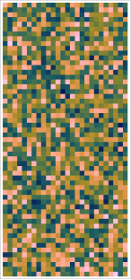 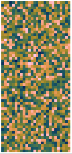
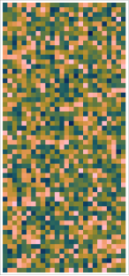 
In turn, Figure 4.15 shows a few equally-spaced points along the minimizing geodesic given by Theorem 4.6.3 connecting these two points in the Grassmannian.
![\includegraphics[height=1in]{grgeo1}](images/img-0046.svg) 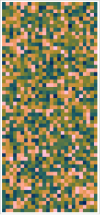 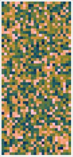 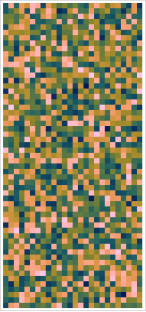 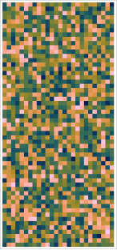
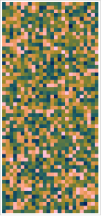 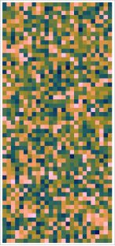 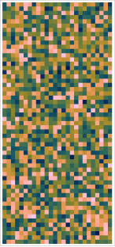 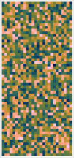 ![\includegraphics[height=1in]{grgeo51}](images/img-0051.svg) 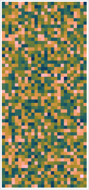
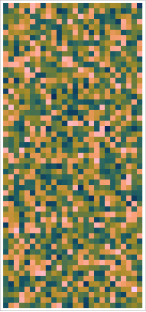 Here is a video showing the full geodesic:
Using Theorem 4.6.2 it is straightforward to compute distances between points in the Grassmannian. Figure 4.16 shows the histogram of distances between 10,000 pairs of random points in \(\operatorname {Gr}(26,\mathbb {R}^{57})\), which fits quite well to the Gaussian distribution with mean \(4.844\) and standard deviation \(0.0788\). Note that the maximum possible distance is \(\sqrt{26}\frac{\pi }{2}\approx 8.0095\).
4.7 The Curvature Tensor
Given the name, you might expect that some of the key ideas in Riemannian geometry are due to Bernhard Riemann. Indeed, he explained a way of thinking about what eventually came to be called Riemannian manifolds and curvature in his Habilitationsschrift from 1854 [ 21 ] .
His idea for how to define curvature in a manifold was something like the following. Let \(p \in M\) and consider \(\sigma \subset T_pM\), a 2-dimensional subspace. Each line through the origin in \(\sigma \) exponentiates out to give a geodesic in \(M\), and by taking all such geodesics we get a surface \(S\) in \(M\) containing \(p\) and tangent to \(\sigma \) at \(p\). The Riemannian metric on \(M\) induces a Riemannian metric on \(S\).
Gauss had showed in 1827 [ 9 ] that the Gaussian curvature of a surface depends only on its First Fundamental Form (a.k.a., Riemannian metric); Riemann called this the curvature at \(p\), denoted \(K(p,\sigma )\). These days we call this curvature the sectional curvature at \(p\) with respect to \(\sigma \).
That said, Riemann did not give any way to compute this curvature and it took quite a long time to get a rigorous, modern definition. Unfortunately, Riemann’s intuition, which hopefully makes sense, is not really evident in the modern definition, which seems very abstract.
That said, I’m going to give you the modern definitions and try to connect it back to the geometric intuition as much as I can.
Definition 4.7.1
The (Riemann) curvature tensor \(R\) on a Riemannian manifold \(M\) is a map \(R \colon \thinspace \! \mathfrak {X}(M) \times \mathfrak {X}(M) \times \mathfrak {X}(M) \to \mathfrak {X}(M)\) given by
where \(\nabla \) is the Levi-Civita connection associated with the Riemannian metric.
Remark 4.7.2
Some books, including do Carmo [ 5 ] , define the curvature tensor to be
\[ \nabla _Y\nabla _X Z - \nabla _X\nabla _YZ + \nabla _{[X,Y]}Z; \]notice that this is \(-R(X,Y)Z\) as we’ve defined it.
Remark 4.7.3
We can see immediately that \(R(Y,X)Z = -R(X,Y)Z\), so \(R\) is skew-symmetric in the first two factors.
Remark 4.7.4
Given \(X,Y \in \mathfrak {X}(M)\), it is often convenient to think of \(R(X,Y) \colon \thinspace \! \mathfrak {X}(M) \to \mathfrak {X}(M)\), sometimes called the curvature transformation. Note that
\[ R(X,Y) = [\nabla _X,\nabla _Y] - \nabla _{[X,Y]}. \]If we tried to define a similar curvature transformation for the Lie derivative we would have
\[ [L_X,L_Y] - L_{[X,Y]} = 0 \]since
by the Jacobi identity Proposition 1.6.43.
Remark 4.7.5
In local coordinates, \(\left[\frac{\partial }{\partial x_i},\frac{\partial }{\partial x_j} \right] = 0\), so
\[ R\left(\frac{\partial }{\partial x_i},\frac{\partial }{\partial x_j}\right)\frac{\partial }{\partial x_k} = \left(\nabla _{\partial /\partial x_i} \nabla _{\partial /\partial x_j} - \nabla _{\partial /\partial x_j} \nabla _{\partial /\partial x_i}\right)\frac{\partial }{\partial x_k}, \]so the curvature tensor is measuring the extent to which iterated covariant differentiation is non-commutative.
Example 4.7.6
In \(\mathbb {R}^n\) with the Euclidean metric, \(R \equiv 0\). To see this, write \(Z = (z_1, \dots , z_n)\) and recall from Example 4.2.3 that covariant differentiation works componentwise:
Hence,
\[ \nabla _X\nabla _YZ = \sum _k X(Y(z_k))\frac{\partial }{\partial x_k} \]and similarly for \(\nabla _Y\nabla _XZ\), so we get
so Euclidean space is reassuringly as un-curved as it is possible to be, and suggests that this notion of curvature is some sort of measure of how much the metric on \(M\) deviates from being Euclidean.
Example 4.7.7
Recall our vector fields \(X, Y, Z\) on \(S^3\) defined in Section 1.8 as
\[ X(x) = xi, \quad Y(x) = xj, \quad Z(x) = xk \]at each \(x \in S^3\). 37 We showed in Section 1.8 that
\(S^3\) inherits its standard metric from the Euclidean metric on \(\mathbb {R}^4\), and the corresponding Levi-Civita connection \(\nabla \) on \(S^3\) is just the restriction to \(S^3\) (via orthogonal projection) of the Euclidean connection on \(\mathbb {R}^4\), which I’ll denote as \(\nabla ^{\mathbb {R}^4}\). In other words, for \(U,V \in \mathfrak {X}(S^3)\), \((\nabla _UV)(p)\) is the orthogonal projection of \((\nabla _U^{\mathbb {R}^4}V)(p)\) to \(T_xS^3 = x^\bot \).
If I write out \(X\) in Euclidean coordinates, I get
\[ X(x) = xi = (x_1 + x_2i + x_3j + x_4k)i = -x_2 + x_1i + x_4j - x_3k = -x_2 \frac{\partial }{\partial x_1} + x_1 \frac{\partial }{\partial x_2} + x_4 \frac{\partial }{\partial x_3} - x_3 \frac{\partial }{\partial x_4}, \]and similarly
So then, again using (4.22), we have that
which is already tangent to \(S^3\), so orthogonal projection just gives \(Z\) again, and we conclude that \(\nabla _XY = Z\).
By similar reasoning, we can compute
Therefore, we can use (None) and (None) to see that
that
and that
Therefore, for each \(x \in S^3\) the transformation \(R(X,Y) \colon \thinspace \! T_x S^3 \to T_xS^3\) can be interpreted as the composition of orthogonal projection to the 2-plane spanned by \(X\) and \(Y\) and a clockwise rotation of this plane by \(90^\circ \).
Exercise 4.7.8
Work out similar interpretations of \(R(X,Z)\) and \(R(Y,Z)\) on \(S^3\).
Despite having called it the curvature tensor, I have not yet showed that \(R\) is a tensor field. To be a proper tensor field, the value of \(R(X,Y)Z\) at a point would need to depend only on the values of \(X,Y,Z\) at the point; given all the derivatives involved, you might expect that it would depend on the values of \(X,Y,Z\) in a neighborhood of the point.
Proposition 4.7.9
The curvature tensor \(R(X,Y)Z\) on a Riemannian manifold \(M\) is multilinear in \(X,Y,Z\) over the algebra \(C^\infty (M)\) of smooth functions on \(M\).
Of course, (4.21) shows that \(R(X,Y)Z\) is multilinear over \(\mathbb {R}\).
Exercise 4.7.10
Show that multilinearity over \(C^\infty (M)\) implies that the value of \(R(X,Y)Z\) at \(p \in M\) depends only on the values of \(X,Y,Z\) at \(p\), and not on their values in any neighborhood of \(p\).
Proof.
Hence, \(R(X,Y)Z\) is multilinear in \(X\) over \(C^\infty (M)\). Since \(R(X,Y)Z = -R(Y,X)Z\), this shows that it is also multilinear in \(Y\) over \(C^\infty (M)\).
Finally,
showing the linearity of \(R(X,Y)Z\) in \(Z\) over \(C^\infty (M)\) and completing the proof.
Proposition 4.7.11 (Bianchi Identity)
For \(M\) a Riemannian manifold and \(X,Y,Z \in \mathfrak {X}(M)\),
\[ R(X,Y)Z + R(Y,Z)X + R(Z,X)Y = 0. \]
Proof.
and
\[ \nabla _{[X,Y]}Z = [[X,Y],Z] + \nabla _Z[X,Y]. \]Therefore,
and similarly
If we add (4.25), (4.26), and (4.27), all the connection terms cancel out and we’re left with
\[ R(X,Y)Z + R(Y,Z)X + R(Z,X)Y = -([[X,Y],Z] + [[Y,Z],X] + [[Z,X],Y]) = 0 \]by the Jacobi identity Proposition 1.6.43.
We’ve defined \(R\) as a map \(\mathfrak {X}(M) \times \mathfrak {X}(M) \times \mathfrak {X}(M) \to \mathfrak {X}(M)\); that is, \(R(X,Y)Z \in \mathfrak {X}(M)\). We can interpret this as a \((1,3)\)-tensor field as follows: at each \(p \in M\) we get a map \((T_pM)^\ast \times T_pM \times T_pM \times T_pM \to \mathbb {R}\) given by
\[ (\tau ,X,Y,Z) = \tau (R(X,Y)Z). \](Note that this being well-defined depends essentially on Exercise 4.7.10.)
Of course, we’ve defined everything in the presence of a Riemannian metric \(g\), and we can always convert vectors into linear functionals with inner products: \(T \leftrightarrow g(\cdot , T)\) for any \(T \in \mathfrak {X}(M)\), and so we can convert \(R\) into a \((0,4)\)-tensor field—that is, a \(C^\infty (M)\)-multilinear map \(\mathfrak {X}(M) \times \mathfrak {X}(M) \times \mathfrak {X}(M) \times \mathfrak {X}(M) \to \mathbb {R}\) by mapping
\[ (X,Y,Z,T) \mapsto g(R(X,Y)Z,T). \]
Proposition 4.7.12 (Symmetries of the Curvature Tensor)
For \(X,Y,Z,T \in \mathfrak {X}(M)\),
-
(Bianchi Identity) \(g(R(X,Y)Z,T) + g(R(Y,Z)X,T) + g(R(Z,X)Y,T) = 0\).
-
(Skew-Symmetry) \(g(R(X,Y)Z,T) = -g(R(Y,X)Z,T)\)
-
(Skew-Symmetry) \(g(R(X,Y)Z,T) = -g(R(X,Y)T,Z)\)
-
(Interchange Symmetry) \(g(R(X,Y)Z,T) = g(R(Z,T)X,Y)\)
Proof.
2 follows from the fact that \(R(X,Y) = -R(Y,X)\), which we saw was a direct consequence of the definition.
For 3, observe that
\[ (XY - YX - [X,Y])(g(Z,T) )= 0 \]since \(XY-YX = [X,Y]\). Now, if we repeatedly use Corollary 4.3.5 we see that
Subtracting the second and third lines from the first yields
which implies 3.
For 4, note that the Bianchi identity implies that
Adding the first two lines and subtracting the third and fourth and using 2 and 3 to cancel four pairs of terms and simplify the remaining terms yields
\[ 2g(R(X,Y)Z,T) - 2g(R(Z,T)X,Y) = 0, \]which implies the result.
In local coordinates, if we write \(X_i = \frac{\partial }{\partial X_i}\), then there exist smooth functions \(R_{ijk}^s\) so that
\[ R(X_i,X_j)X_k = \sum _s R_{ijk}^s X_s. \]The functions \(R_{ijk}^s\) are usually called the components of \(R\) in the given local coordinates. If we have vector fields \(U, V, W\) with local coordinate expressions
\[ U = \sum _i u^i X_i, \quad V = \sum _j v^j X_j, \quad W = \sum _k w^kX_k \](note that now I am being more careful about whether indices are superscripted or subscripted), then
\[ R(U,V)W = \sum _{i,j,k,s} R_{ijk}^s u^i v^j w^k X_m. \](In Einstein notation, this gets written as \(R(U,V)W = R_{ijk}^s u^i v^j w^k X_m\), where summation always happens over repeated indices, and repeated indices should appear in up/down pairs.)
Exercise 4.7.13
Show that
\[ R_{ijk}^s = \frac{\partial \Gamma _{ik}^s}{\partial x_j} - \frac{\partial \Gamma _{jk}^s}{\partial x_i} + \sum _m(\Gamma _{ik}^m \Gamma _{jm}^s - \Gamma _{jk}^m \Gamma _{im}^s). \]When we lower an index and think of \(R\) as a \((0,4)\)-tensor, then we get components
\[ R_{ijks} := g(R(X_i,X_j)X_k,X_s) = \left\langle \sum _{m}R_{ijk}^m X_m, X_s \right\rangle = \sum _m R_{ijk}^m g_{ms}. \]Then Proposition 4.7.12 implies the following symmetries for the \(R_{ijks}\):
Corollary 4.7.14
-
\(R_{ijks} + R_{jkis} + R_{kijs} = 0\)
-
\(R_{ijks} = -R_{jiks}\)
-
\(R_{ijks} = -R_{ijsk}\)
-
\(R_{ijks} = R_{ksij}\).
In particular, recall that we proved the interchange symmetry 4 from the other three, and the first three turn out to be a complete list of symmetries of the curvature tensor, so \(R\) is completely specified in local coordinates by the choice of \(\frac{n^2(n-1)^2}{12}\) independent functions \(R_{ijks}\).
Bibliography
- [1]
Marcos M. Alexandrino and Renato G. Bettiol. Lie Groups and Geometric Aspects of Isometric Actions. Springer International Publishing, Cham, 2015.
- [2]
Michèle Audin. Torus Actions on Symplectic Manifolds, volume 93 of Progress in Mathematics. Springer, Basel, second revised edition, 2004.
- [3]
Sheldon Axler. Linear Algebra Done Right. Undergraduate Texts in Mathematics. Springer, Cham, 2015.
- [4]
Manfredo Perdigão do Carmo. Differential Geometry of Curves and Surfaces. Prentice-Hall, Englewood Cliffs, NJ, USA, 1976.
- [5]
Manfredo Perdigão do Carmo. Riemannian Geometry. Mathematics: Theory & Applications. Birkhäuser, Boston, MA, USA, second edition, 1992.
- [6]
Simon K. Donaldson. An application of gauge theory to four-dimensional topology. Journal of Differential Geometry, 18(2):279–315, 1983.
- [7]
Alan Edelman, Tomás A. Arias, and Steven T. Smith. The geometry of algorithms with orthogonality constraints. SIAM Journal on Matrix Analysis and Applications, 20(2):303–353, January 1999.
- [8]
Michael Hartley Freedman. The topology of four-dimensional manifolds. Journal of Differential Geometry, 17(3):357–453, 1982.
- [9]
Carl Friedrich GauSS. General Investigations of Curved Surfaces. Dover Publications, Mineola, N.Y, 2005.
- [10]
Hansjörg Geiges. A brief history of contact geometry and topology. Expositiones Mathematicae, 19(1):25–53, 2001.
- [11]
Gene H. Golub and Charles F. Van Loan. Matrix Computations. Johns Hopkins Studies in the Mathematical Sciences. The Johns Hopkins University Press, Baltimore, MD, USA, fourth edition, 2013.
- [12]
Robert E. Gompf. Three exotic \(\mathbf{R}^4\)’s and other anomalies. Journal of Differential Geometry, 18(2):317–328, 1983.
- [13]
Victor Guillemin and Alan Pollack. Differential Topology. Number 370 in AMS Chelsea Publishing. American Mathematical Society, Providence, RI, USA, 2010.
- [14]
Brian C. Hall. Lie Groups, Lie Algebras, and Representations: An Elementary Introduction. Number 222 in Graduate Texts in Mathematics. Springer, Cham, 2nd ed. 2015 edition, 2015.
- [15]
Michel A. Kervaire and John W. Milnor. Groups of homotopy spheres: I. The Annals of Mathematics, 77(3):504, May 1963.
- [16]
Tullio Levi-Civita. Nozione di parallelismo in una varietà qualunque e conseguente specificazione geometrica della curvatura riemanniana. Rendiconti del Circolo Matematico di Palermo, 42(1):173–204, December 1916.
- [17]
Sophus Lie. Zur Theorie partieller Differentialgleichungen erster Ordnung, insbesondere über eine Classifikation derselben. Nachrichten von der Königlichen Gesellschaft der Wissenschaften und der Georg-Augusts-Universität zu Göttingen, 1872:473–489, 1872.
- [18]
John Milnor. On manifolds homeomorphic to the 7-sphere. The Annals of Mathematics, 64(2):399–405, September 1956.
- [19]
Barrett O’Neill. Elementary Differential Geometry. Academic Press, Amsterdam, revised 2nd edition, 2006.
- [20]
C.C. Paige and M. Wei. History and generality of the CS decomposition. Linear Algebra and its Applications, 208–209:303–326, September 1994.
- [21]
Bernhard Riemann. On the Hypotheses Which Lie at the Bases of Geometry. Classic Texts in the Sciences. Springer International Publishing, Cham, 2016.
- [22]
Clifford Henry Taubes. Gauge theory on asymptotically periodic \(4\)-manifolds. Journal of Differential Geometry, 25(3):363–430, 1987.
- [23]
Hassler Whitney. The self-intersections of a smooth \(n\)-manifold in \(2n\)-space. The Annals of Mathematics, 45(2):220–246, April 1944.
- [24]
Hassler Whitney. The singularities of a smooth \(n\)-manifold in \((2n - 1)\)-space. The Annals of Mathematics, 45(2):247–293, April 1944.